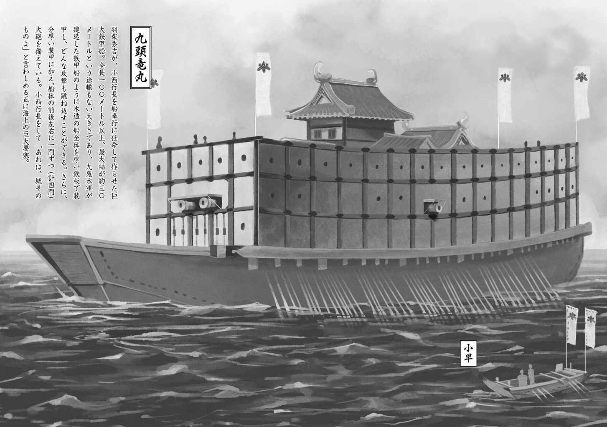

| 桜ノ杜ぶんこ 戦国ぼっち2 | |
| 瀧津孝 | |
| (2013) | |
桜ノ杜ぶんこ
戦国ぼっち２
Revenge of the super battle ship
瀧津 孝
一巻のあらすじ
戦国時代をこよなく愛する高校生・高杉一 郎 太 。彼は、周りから「歴ヲタ」と呼ばれ【ぼっち】であった！ 一郎 太 が休日に群馬県北部の城趾を散策していると、突然謎の光に包まれてしまう。
気が付くとそこは戦国時代で、北条の大軍が押し寄せる籠城中のチンケな山城だった。城は 九 尾 山 城といい、城主は 海 野 景信 。奇妙な服装のため一時は北条軍の 間者 として容疑をかけられ投獄された 一 郎 太 だったが、家老の娘・ 三 好 麗 の口添えや数々の勘違いの結果、なんと 海 野 家が 臣従 する真田家の目付けに勘違いされてしまう。
一 郎 太 は元の時代に戻るため、城の内外を調べてまわるうちに、海野家姫君・ 有 貴 姫 や猟師の娘・りよと 運命的に出会い、好かれてしまう。そうこうする内に、味方軍師が暗殺されたり、井戸に毒が入れられたり、裏切り者が発覚したりなど......絶体絶命的な事件が次々と発生。事件に呼応するように、三の丸、二の丸......と 九 尾 山 城は攻めこまれてしまうのであった。
麗 、 有 貴 姫 、りよ、真田家のくノ一・ 風 葉 たちと協力した 一 郎 太 が、目にした事件の真相とはいったい？
果たして攻め寄せる北条軍から、 一 郎 太 は城と美女たちを守れるのか？

★ この物語はフィクションであり、登場する団体・人物などの名称はすべて架空のものです。
一章 再会
「一 郎 太 様！ 有 貴 姫 様が大変な、大変なことになってしまったのです！ 何 卒 ご助 勢 くださいませ！」
えっ？ええ...？......ええーーーーーーーーーーー！
俺の目の前にいるのは麗 だ！ 間違いない！ だって、学校で俺のことを「キモいおたく」、でなかったら「草食系弁当男子」なんて陰口をたたくバカ女子どもは山ほどいても、「一 郎 太 様」なんて呼んでくれる子は一人だっている訳がない。
学校の外で、年の近い女の子の友達もいないんだから、必然的にこの鎧姿の少女は、麗 、三 好 麗 ということになる。
でも、今の麗 は俺との再会を喜んでいるような様子じゃない。切 迫 した表情。麗 は、早口で繰り返した。
「有 貴 姫 様が、大変なことになってしまったのです！ 何 卒 ご助 勢 くださいませ！」
「有 貴 姫 様が、一体どうしたって？」
「それが......」
麗 は言葉を続けようとして、ハッと周囲の状況に気付き、左右に目をやった。俺もつられて周りをゆっくりと見回す。このイベント「アキハバラ・ファンタジック・コスプレ大賞」に集まった大勢の観客が、俺たちを取り囲むようにして不思議そうに見ている。ステージの上からは司会者がマイクを下ろし、焦 りと怒りの混じった顔で麗 に声をかけ続けていた。
「おい、君！ そんなとこで何やってんだ！ 早くステージに戻って！」
現実に引き戻された俺は、とにかく今の混乱した頭の中を整理するためにも、麗 の話を邪魔の入らない静かな場所でじっくり聞かなきゃいけないと思った。
麗 の左手をつかんで、人 垣 の中に突き入り、その場から足早に抜け出る。背中から聞こえるどよめき、ざわめきは無視して、俺は麗 をどこへ連れて行こうか迷った。ここは完全な街中だ。カフェやファミレスなんかで、落ち着いて話はできないし......。すると、今度は麗 が俺の前に立って歩き出した。
「こちらへ」
中央通りをどんどん神田方面へ進んで、万 世 橋 を渡ったかと思うと、麗 はくるっと向きを変えて小さな路 地 に入っていく。もう家電量販店やコミック・ゲーム専門店特有の派手な外 装 の店舗は見えなくなり、比較的中低層のビルやマンションが建ち並んでいる。麗 は何でこんな場所を知ってるんだ？
路 地 の中をしばらくくねくね歩いていくと、見るからに古そうな神社が見えてきた。石造りの鳥 居 。大きな地震でも起これば、簡単に崩 れ落ちてしまいそうな木造の社 殿 。社 殿 は鬱 蒼 とした林に囲まれているから、この一角だけが都会の中の別世界のような雰囲気を醸 し出している。麗 は社 殿 の横を通り過ぎて、林の中へと入っていく。
「ねぇ、どこまで行くの？」
「もうすぐそこです」
夕方が近いとはいえ、まだ明るい日の光が差しているはずなのに、林立する大きな木の枝が空を遮 っているから薄暗くて、何だか気味が悪い。......と、麗 が立ち止まった。こんなところで？ 俺は麗 の隣に並び、彼女の視線の先に目をやった途 端 息をのんだ。
そこにあったのは、古びた小さな木造の祠 。九 尾 山 で見たのと同じ、高さが一メートルくらいで、三角の屋根。まさか、九 尾 山 で見たあの祠 と同じものなのか？ しかも、祠 の裏がほんのりと明るい。周りが薄暗いから、神様か仏様みたいに後 光 が差しているように見える。俺は、ゆっくりと祠 に近づき、裏手を覗 いてがく然となった。
青い光の渦 ！
俺を九 尾 山 で戦国時代に送り込んだあの渦 が、地面から二〇センチくらいの高さに浮かんでいる。ぽかんと口を開けたまま渦 を凝 視 している俺に、麗 が声をかけた。
「一 郎 太 様と同じように、わたしもこの渦 に身を投じてここまでやってまいりました」
俺は大きく目を開いて、麗 を見た。
再会してからずっと緊 迫 した面 持 ちでいた麗 が、ようやく微 笑 み、うなずいた。
九 尾 山 城の戦いの後、俺がいなくなってから一体何が起こったのか。麗 が語って聞かせてくれたのは、衝撃 的な内容だった。
「有 貴 姫 様がさらわれてしまったのです！」
「さらわれ......誘拐 されたってこと!? 」
麗 の話には、要約と説明が必要だろう。
今から四〇〇年以上さかのぼる一五八五年。元号 でいうと天正 一三年の八月、上州 （群馬県）の九 尾 山 城で北条の大軍を撃退し、重臣 の謀反 を防いだ海 野 家には、ひとときの平和が訪れた。でもそれは、文字どおり、ほんのひとときのことだった。
この戦いで城主・海 野 景 信 の株はどーんと上がり、周辺諸国の間で一躍 注目される存在になった。海 野 家が頼りにし、臣従 を誓う信州（長野県）・真田家の当主・昌 幸 も、大いに喜んだという。
しかも、その直後、真田家の居城・上田城では、九 尾 山 城での戦いをはるかにしのぐ大規模な合戦が勃発 した。東海地方で急速に勢力を拡大した徳川家康が、七〇〇〇人もの大軍を催 して、攻め寄せてきた。
対する上田城の兵力は、わずか一二〇〇。ところが昌 幸 は知 謀 の限りを尽くして徳川軍を撃破し、真田の名声は全国に轟 き渡った。真田家に従っている信州や上州 の小領主たちは、これを機に結びつきをもっと強めようと、昌 幸 に進物を贈り、婚姻 の斡旋 を願い出た。
食うか食われるかの戦国時代、領主間で成立する婚姻 こそが、目に見える確実な安全保障であり、最も信頼できる同盟関係につながる。
上州 ・赤城山の麓 にある小城・猫 夜 叉 城の当主・長野政 綱 もそんな小領主たちの一人だったんだけど、こいつが昌 幸 に願い出たのは、九 尾 山 城の海 野 家からの嫁取りを仲介 してほしい、ということだったんだ。つまり、海 野 家からのお嫁さん候補となれば......景 信 の妹・有 貴 姫 しかいない。
昌 幸 にとっては、従属 させている領主たちに頼られるのは嬉しいことだし、仲人 役となれば彼らに恩を売り、真田家の勢力をますます強めることもできる。だから昌 幸 もかなり乗り気になって景 信 に有 貴 姫 の長野家輿 入 れを勧めたそうだ。
でも、肝心の有 貴 姫 は......。俺が急に姿を消した後、彼女は相当落ち込んだらしい。
長野政 綱 との縁談にも随分抵抗したようだけど、結局「お家のために」という景 信 の懇願 を聞き入れた。海 野 家の九 尾 山 城も長野家の猫 夜 叉 城も、共通の敵・北条家の勢力 圏 に接する最前線に位置しているから、強固な協力関係は必須といえる。
有 貴 姫 が承諾 したことで、婚 儀 の話はとんとん拍子に進み、数週間後の九月下旬には輿 入 れの運びとなった。両家が納得した以上、北条がいつ何 時 攻めてくるかわからない現状、婚礼は一日でも早いほうが良いという政 綱 の強い要望があったからだ。
この頃の領主間の婚礼は、今で言うホテルや教会や結婚式場みたいな、どこかの場所で両家の親戚 ・縁者が一堂に集まって祝 う といった形式じゃなく、花嫁が限られた人数の供と一緒に嫁 ぎ先の城や館へ入り、花婿の親族や家臣メインで執り行われる。
婚礼の日、九 尾 山 城を早朝に発った有 貴 姫 の花嫁行列は、海 野 家の家老・三 好 勝 政 が率 いる武 装 兵三〇名に守られて赤城山麓 まで出向き、そこで長野家の護 衛 部隊に引き渡され、昼前には猫 夜 叉 城に到着する......はずだった。
有 貴 姫 の出迎えに行った家臣の一人が、瀕 死 の重傷を負いながら猫 夜 叉 城にたどり着き、戦慄 すべき情報をもたらしたのは、午 の刻（正午）を過ぎた頃だったらしい。
かねてから申し合わせた合流場所で三 好 勝 政 から花嫁行列を託 された長野勢は、山道に差し掛かったところで数十人規模の武 装 兵に急襲 され、あろうことか有 貴 姫 をさらわれてしまったというのだ。
襲撃 してきた奴らは、みんな簡易な具 足 を身につけていたようで、一見足 軽 隊のようだった。でも、長野家の兵士は正確な弓矢と鉄砲で奇 襲 を受けた直後、めくらましの煙幕を使われ、斬り込んできた敵に十字型の手裏剣で倒されていった。そんな戦い方を普通の足 軽 はしない。精強な忍者部隊の仕業としか考えられなかった。
一口に忍者といっても、いろんな種類がいる。変装して敵地に潜 り込む情報収集専門の密偵、謀殺 ・暗殺に長けたアサシン、他国で嘘の情報を流してかく乱させる謀略 戦のエキスパート、薬学に通じて毒や火薬を製造する研究者、そして特殊な任務を帯びて敵の部隊や陣営を奇 襲 、遊撃する戦さ忍び......。まさにその戦さ忍びだ。
長野家や海 野 家にこんな敵対行 為 を仕掛けてくる忍者となれば......北条家に仕える忍者集団・風 魔 一族しかない。
戦国大名間の婚礼は、軍事同盟の締結と同じだから、敵国には事前に決して知られてはならない。しかしそれが風 魔 の知るところとなり、襲撃 に結びついてしまった。
花嫁が誘拐 され、四〇人いた護 衛 兵士の大半は死傷。単に大失態、でもって諸国の笑い者になるというだけでなく、長野家と海 野 家は最大の敵に大事な人質 をとられてしまったことになる。
長野政 綱 は直ちに追っ手を差し向けたんだけど、もう遅かった。敵はとっくに北条領内へ逃げ込み、捕 捉 できなかった。
急報 は、九 尾 山 城にももたらされた。知らせに来たのは、海 野 家が臣従 する真田家のくノ一、風 葉 だった。帰城したばかりの勝 政 がすぐにとって返そうとしたんだけど、風 葉 からもう手遅れだと強く諭 され、歯がみしながら思い止まった。
追撃が無理なら、海 野 家に何ができるのか......組織立った、しかも戦闘に秀 でた忍者部隊を持たない海 野 家には、もう手の打ちようがない。しばらくすれば、有 貴 姫 の命と引き換えに真田家を裏切るよう、北条が言って寄越すことは、まず間違いないだろう。
「わしは一体どうすれば......」
頭を抱えて苦 悶 する海 野 家の若き当主・景 信 に、勝 政 をはじめ主だった家臣はかける言葉もない。当面は北条の出方を待つ以外に手はないということになり、風 葉 はさらなる情報を入手するため単身北条領内に潜入すると一座に告げて城を後にしようとした。
最外郭の防衛ラインである三の丸の城門を出たところで風 葉 を呼び止めたのは、麗 だった。
兜こそ付けていないが、胸の部分がやや膨らみ、ウエスト部がキュッと締まった女性用の胴丸 （胴体の防具）、両肩を防護するやや小さめの袖、腰を覆 う草摺 。完全武 装 で長剣を携 え、馬まで引いてきた麗 は、自分も連れて行ってくれるよう風 葉 に頼み込んだ。有 貴 姫 の居場所を突き止めるだけでなく、でき得るならば助け出したい、と。
もちろん麗 の独断で、彼女の父である勝 政 や城内の重臣 たちが許すはずがない。最初、風 葉 はきっばりと断ったらしい。麗 の気持ちはわかるが、はっきり言って足手まとい以外の何ものでもない。
でも、麗 は必死で食い下がった。麗 と有 貴 姫 は、同い年の一七歳。幼い頃から読み書きの勉強仲間、武道を修行するライバル、そして遊び相手としていつも行動を共にし、二人には主人と家臣という主従の間柄 を超えて深い友情が結ばれていた。
風 葉 が連れて行かないというなら、たった一人でも敵地に潜入するといって聞かない。こんな場所で押し問答 をしてる時間はない。風 葉 は渋々、麗 の同行を承知した。
そうと決まれば、急がなければならない。愛馬にまたがった麗 は風 葉 を後ろからしがみつかせ、真田家の勢力 圏 内にある東北方面、赤城山のある方向に疾 駆 した。
風 葉 の指示で、山林の中の粗 末 な小屋に着いたのは、大体一時間後だったらしい。そこは、真田の草 の者 （真田家では忍者をこう呼ぶ）たちの忍び小屋で、上州 における拠 点 だった。
有 貴 姫 の所在に関する情報が入ってきたのは、その直後だ。風 魔 一族と見られる武 装 集団は、有 貴 姫 を駕 籠 ごと連れ去り、どうやら江戸に向かっているという。
赤城山麓 から江戸までは、直線距離で約一〇〇キロ。駕 籠 を伴 った移動なら、江戸に入るのは、早くても日没前後。有 貴 姫 はあくまで人質 だから、粗 末 には扱わないはず。であれば、江戸で一夜を明かした後、北条の本拠地・小田原へ向かうに違いない。
北条家の本城である小田原城は、豊臣秀吉の大坂城がまだ完成していないこの当時、日本最大の城郭 だったはずだ。かつてこの城に籠 った北条軍は、戦国最強といわれた上杉謙信の大軍や武田信玄の軍勢をも跳ね除けた。
城下町全体を城郭 で囲んだ小田原城に一旦入られてしまえば、もう有 貴 姫 を奪還 することはできないだろう。チャンスは、江戸での夜明けまでという限られた時間しかない。風 葉 も、麗 も、意見は一致した。
でもそれまでに、どうやって江戸へ......。
たとえ馬で駆け続けたとしても、半日（約六時間）はかかる距離。しかも目と鼻の先から北条の勢力 圏 内に入ってしまうから、街道を馬で突っ切ろうなんてしたら、すぐに関所で止められてしまう。ならば変装して徒歩 で、となったら、とてもじゃないけど明日の夜明けまでに江戸にはたどり着けない。
ところが、風 葉 には奥の手があった。
上州 から武 蔵 （東京都・埼玉県）を通って江戸湾に流れ込む利根川は、関東における一大水運ルートだった。
俺も麗 から聞かされて初めて知ったんだけど、越 後 （新潟県）から入ってきたサケの干 物 や、上州 で多く取れる白根の多いネギといった名産品が、利根川を通って江戸まで運ばれ、小田原を中心とする太平洋沿岸の各地で商 いされていた。
驚いたことに真田の草 の者 は、関東北部の特産品を北条軍団のツートップ・氏 政 、氏 直 親子に献上 する上州 の御 用 商人として小田原に出入りし、利根川を船で行き来できる権利を得たばかりか、川にいくつも設けられている関所をフリーパスで通過できる手形まで北条家から手に入れていたんだ。
真田家の諜報 能力がとても優れていたのは知っていたけど、敵の内部にこれほど深く入り込んでいるのなら納得もいく。
風 葉 と麗 は、草 の者 が営む「赤城屋」という偽商家の高瀬舟（輸送用の木造小型船）に乗り込み、北条家に献上 する川魚の中でも最上級のイワナやヤマメを積んでいるという触れ込みで、利根川を下った。
風 葉 は商家の女 奉公 人 の姿に変装しており、麗 は船底に作られた人一人がやっと潜 り込めるほどの狭い隠しスペースの中に鎧姿のまま身を押し込んだ。
二人のほかに、帆走 用の高瀬舟を操る水 夫 が二人乗り込んでいる。もちろん彼らも風 葉 の仲間の草 の者 だ。
ちょうど前日に大雨が降った影響で川の流れが速く、強い順風に恵まれたこともあって、江戸湾に注 ぐ河口近くの河岸（船着場）に着いたのは、まだ日没前だったという。当時としては恐ろしく速いスピードだ。
そういえば、九 尾 山 城で籠城 した時、風 葉 はたった一日で遠く離れた小田原の貴重な情報を仕入れて、知らせてくれたっけ。一体どんな方法で移動したんだろうとは思っていたけど、きっとあの時も水上のルートを使ったんだろう。
風 葉 は、表面上「赤城屋」の支店として江戸に設けている草 の者 の拠 点 へ、新たな情報を得るためにすぐさま向かった。
風 葉 からみだりに出歩かず、そのまま待機するよう念を押されていたんだけど、河岸を往来する人足 たちの会話が漏れ聞こえてきて、麗 は居ても立ってもいられなくなった。
人足 が話していた中身というのは......諸国を遍歴 し、不思議な霊力を持っているという巫 女 がこの地を訪れ、世話をした地元商人の援助を得て、河岸の近くにある鎮守 の森に祠 を建てたというのだ。
麗 はすぐにピンときた。
九 尾 山 城に祠 を建てた、あの巫 女 に違いない。時空を超え、俺を呼び寄せた祠 。同じ巫 女 が建てた祠 ならば、万に一つの可能性すらないかもしれないけど、俺にもう一度会えるかもしれない。
麗 は衝動 的に高瀬舟を飛び出し、人目を避けながら鎮守 の森を探し、そしてとうとうその森にたどり着いた。
それは、地元の産 土 神 （その土地の守護神）を祀 る小さな神社の本 殿 裏手にあった。
そろそろ日暮れてきたせいか、人 気 はない。
麗 はそこで青白く発光する渦 を見つけた。
まだ真 新 しい祠 のすぐ裏、地面から数十センチの高さに浮かんでいる光の渦 。ここにあけ飛び込んだからといって、時空を超えることが、ましてや俺と同じ時代に行ける保証は全くない。
でも麗 は、ワラにもすがる思いで、俺にもう一度会いたいという一心で、渦 の中に足を踏み入れた。強烈な閃光 に包まれて、しばらくは頭がボーッとしてたらしい。
そして段々意識がはっきりし、周囲の状況を目の当たりにして、麗 は呆然 となった。この時、彼女は俺のいるこの世界へやってきていたんだ。
その社 は、秋葉原から少し神田方面に入った、中低層の雑居ビルやマンションが立ち並ぶエリアの一角に、「神田稲荷 神社」として現存していた。
閃光 が消えた後、フラフラした頭で境内 から出た麗 は、異様な光景に立ちすくんだ。
見たこともない巨大な建物、馬や牛が引いていないのに高速で走る妙な形の荷車、行き交う人々が身にまとう南蛮 （ヨーロッパや東南アジア）風のような服装、誰一人としてまげを結っていない雑多な髪型、しかも顔は日本人なのに髪の色は金、茶、赤、黄色......。
混乱しながら辺りをさまよい、足を踏み入れたのが秋葉原の電気街。
そこで、コスプレイベントのスタッフに声をかけられ、半ば強引にステージまで連れて行かれてしまった。
周囲の関係者たちから「すごい！ きっと今日の優勝は間違いなしだ！」などと絶賛 され、何の行事なのか、何故 自分が褒 められているのか全くわからないまま、あれよあれよという間に鎧姿のままステージの上へ。目の前に集まっている大勢の若い男たちの熱い視線を浴び、もうどうすればいいのか途方に暮れていた時、観客の最前列に飛び出してきた俺を見つけた。
いくら混乱していても、自分の歩いてきた道順をきちんと頭に叩き込んで、迷いもせずにこの祠 まで俺を連れてきたのはさすがに麗 だ。戦国時代の武家の娘として育ち、これまで何度も修 羅 場 を経験してきたことが、こんな潜在能力を育 むのだろう。
話し終えた麗 が、俺に真顔を向けた。
「巫 女 様がお建てになる祠 は、私のいる世と、一 郎 太 様の世をつないでいることが、これではっきりいたしました。一 郎 太 様、このままでは有 貴 姫 様の身が......」
そんなことって......確かにこれは大変な事態だ。すぐにでも助け出さなきゃ、事の成り行き次 第 では有 貴 姫 の命さえ危なくなる。
麗 と一緒にあの渦 の中に飛び込んで......って、ちょっと待てよ。正体不明の謎の巫 女 が作った祠 には、確かに時空を超えるタイムトンネルみたいな能力があるんだろうけど、俺は再びこの現代に戻れるのか？
九 尾 山 城の祠 は、俺が戦国時代と現代を往復した後、消滅してしまった。この祠 は、人が一往復しかできない〝使い捨てツール〟みたいなものじゃないんだろうか？
もしそうなら、麗 がこの渦 を通って現代にやってきて、一緒に戦国時代に戻った時点で往復したことになり、祠 は消えてしまう。祠 がなければ、俺は現代に帰れなくなってしまうんじゃ？
戸惑っている俺を見て、麗 は自身もずっと気になっていたことを口にした。
「九 尾 山 のお城で一 郎 太 様が光の渦 の中に入っていかれた後、祠 までもが消え失せてしまいました。もしや、こちらの世でも祠 は......」
「うん、消えてなくなってたんだ......」
「されば、この祠 を使って我らの世と一 郎 太 様の世を行き来できるのは、一度きりということで？......」
「断定はできないけど、その可能性は......ある」
麗 は少しの間考え込んでいたんだけど、やがて力なく言った。
「わたしの......勝手でした。一 郎 太 様におすがりしたい一心の......」
「そんな......」
たぶん、すごく情けない顔をしてる俺に、麗 はきっぱりと告げた。
「元の世に戻れなくなるようなお願いをする訳には参りませぬ。一 郎 太 様はお残りください。わたしは......一人で行きます」
「でも、風 葉 さんと二人きりで、どうやって有 貴 姫 様を」
「......我らで何とかいたします。一 郎 太 様はもう余計なことを考えず......」
「そんなこと言ったって、このまま君一人を帰す訳には......」
俺たちが光の渦 の異変に気付いたのは、ほとんど同時だった。
渦 がどんどん小さくなっていく！
あの時、九 尾 山 城で麗 と別れた時と同じだ！ 光の渦 は、何らかの周期か、条件によって、祠 から現れたり、消えたりしている。今、ここで渦 が消失してしまえば、今度いつ現れるかわからない。
麗 はまなじりを決して俺に向かった。
「もう時がございませぬ。さらばです。一目なりともお会いできて、麗 は嬉しゅうございました」
そう言うなり、きびすを返した麗 の右腕を、俺は反射的につかんだ。
もう衝動 的だったと言ってもいい。俺を頼って身の危険も顧 みずに現代へやってきた麗 の思い、きっと心細くて不安にさいなまれているだろう有 貴 姫 の胸中 、九 尾 山 城の人々の悲 嘆 ......辛 い籠城 を一緒に戦い抜いた仲間、そうだ、仲間といって構わないみんなの気持ちは容易に想像できる。それらを無視して、一人安穏 となんてしてられなかった。
「何をなさいます！」
「いいから！」
振りほどこうとする麗 を抱えるようにして、俺は光の渦 の中に身を投じた。
時空移動の体験はこれでもう三回目だけど、慣れるということはない。眩 しい閃光 に包まれた後、しばらくの間、俺の頭はぼんやりとしていた。
「一 郎 太 様！ 一 郎 太 様！ 大事ございませぬか？」
麗 に肩を揺り動かされ、地面に仰向けに寝そべるようにしていた俺の目には、次 第 に周囲の様子がはっきりと映し出されてきた。
夕暮れの林......ここは神社の境内 だ。さっきまで木々の間から見えていた、いくつものビルの姿は影も形もない。
俺は再び戦国時代に舞い戻ったのか......。
「今、辺りを少し見て参りましたが、ここはわたしたちが住む世。武 蔵 の国の江戸でございます」
やっぱり、戻ってきたんだ。それにしても、さすがに麗 はしっかりしてる。
時空移動の感覚は、体験した人間でないとわからないだろうけど、一種のトランス状態に陥 ってしまう。俺なんか、初めての時には気を失ってしまったほどだ。
麗 は平気なんだろうか、というか、俺の体力がないせいなのか。そして、ここが戦国時代なら......祠 は？
俺は上半身をゆっくりと起こして、辺りを見回したんだけど、祠 はどこにもない。
麗 は地面に正座するようにして、うな垂 れた。
「一 郎 太 様、申し訳ございませぬ。わたしのせいで、もう戻れなく......」
「麗 .........さんのせいなんかじゃない。俺の、自分の意志で来たんだから。それに......」
よくよく考えてみれば、まだ一 縷 の望みはまだ残ってる。
「それに？」
「俺の住んでる時代にもう戻れないって、決まった訳じゃない」
「されど、祠 はもう消えてなくなってしまいました。やはり、人が行き来できるのは一度だけだったのです」
「確かにこの神社の 祠 はもうない。でも、ほかの場所にまだあるかもしれないじゃないか 」
「えっ？」
「祠 を作った巫 女 さんは、諸国を回ってるんだよね。それなら、彼女がこれまでに訪ねた土地のどこかに別の祠 を建ててる可能性だってある」
「はい！ 確かに！ では、巫 女 様の足跡を突き止め、訪ねて行けば、あるいは......」
「そういうこと！ だから、俺は諦めないし、麗 さんが気を落とす必要もない」
ニッコリと笑顔を向けた俺に、麗 も微 笑 みを返した。
「わたし、一緒にお探しいたします！」
「うん、でもまずは有 貴 姫 様を助け出さなきゃ」
麗 は力強くうなずいた後、ハッと俺の服装に目をやった。
「その前に、お召し物をなんとかせねば」
そうだった。俺は杖術 の道場を出た時の格好のままだ。Ｔシャツにジーパン。デイパックを背負い、右手には稽古用の杖 を入れた細長い布袋。
俺はデイパックの中から、風呂敷包みを取り出した。
「それは？」
のぞき込む麗 に、俺は包みを解いて中身を見せた。
「これは、わたしが仕立て直した......」
そう、麗 が俺のために仕立て直してくれた小 袖 と帯だ。
「まさか、これをいつも持ち歩いて？」
「杖 の稽古に行く時はいつもね。俺、今杖術 の道場に通ってるんだ」
麗 は感激したような面 持 ちで俺を見つめた。
「これに着替えれば大丈夫だろ。ちょっと待ってて」
俺は手早くＴシャツとジーパンを脱ぎ、パンツ一丁になった。
今日のパンツは、俺が九 尾 山 城に飛ばされた時にはいていたのと同じ〝勝負パンツ〟。大枚 一万円をはたいて通販で買った高級パンツだ。
医療用の特殊素材生 地 に、俺の大好きな戦国武将、真田昌 幸 、幸 村 親子の花 押 が金字で印刷されている。麗 は......恥ずかしそうにして背中をこちらに向けている。
いつもは凛々 しくて、男勝 りな麗 が、時に見せるこんな純情な姿。とてつもなく可愛い！ 俺の心臓は急にドキドキしだした。
わわわ、こんなこと考えてる場合じゃない。俺は慌 てて小 袖 を身につけ、まだまだ不器用な手つきで帯を締めた。
「さあ、行こう！」
うまく着られたと思って自信満々で袖 を両手で広げて見せたんだけど、麗 は眉をひそめ、ため息をついた。
「もう、そのだらしない帯の締め方はなんですか」
麗 はつつっとすぐ前まで着て片膝を突き、両手を俺の腰に回して帯を締め直しはじめた。両手をほんのちょっと前に出せば、麗 の顔や肩に手の届く距離だ。改めてこんなに近くで見ても、鎧を付けた荒々しい身なりだけど、やっぱり麗 はとても綺 麗 だ。
もうこれは男として本能的に、その可愛らしい頬 に触れたくなって、右手を少し動かした。でもそれと同時に、麗 が締め直した帯を整えるためにパンパンと強く叩いたもんだから、俺はギクッとなってそのまま固まってしまった。
頬 に触ろうとしたこと、ひょっとして気付かれたのかな......。
「できました。帯くらいは一人で締められるようになってくださいませぬと」
俺の慎 ましいスケベ心を知ってか知らずか、麗 は穏やかな表情のままスッと立ち上がって一歩、二歩下がった。
「う、うん、そうだよね、ありがとう」
俺は気を取り直して、長さが流派で四尺二寸一分（約一二八センチ）に規定されてる杖 の入った布袋を手に取った。
これは俺が使える唯一の武器。使えるといっても、基本動作の形と素振りしかできないんだから、実戦でどこまで役立つかとなるとすごく心許 ないんだけど。それでも素手よりはずっとましだろう。
さて次に、デイパックをどうするかだ。
中には、脱いだ衣服と稽古用のジャージに、スマホと財布......。
これから北条の兵士や北条方の領民ばかりがいる街中に潜入し、有 貴 姫 を無事救出できた暁 には、敵中突破して上州 までたどり着かなければならない。
この時代の人間から見て妙な物を持ち歩いていたら、すぐに呼び止められて、不審人物として捕まえられるだろう。それにこの中身を肌身離さず持っていたからといって、戦国時代で役に立ちそうな物は......たぶんない。
置いていこう。そう決めた。
俺は、そばに落ちていた板切れを使って、祠 があった場所に穴を掘り、デイパックを埋めた。
もしも時間に余裕があれば取りに来ればいいし、置き去りになったとしても、もしうまく現代に戻れたなら、その時掘り返しに来ればいい。
「じゃあ、今からどうすれば？」
「まずは、高瀬舟が泊めてある河岸まで戻りましょう。風 葉 殿には何も言わず船から出てきてしまったので、きっとわたしを探しているかと」
「よし」
俺たちがちょうど祠 に背を向けた時、大勢の人間が境内 に入ってこちらに駆けてくる足音が聞こえた。緊張が走り、俺たちは動きを止めた。
俺たちが通ってきたように、社 殿 の横から現れたのは、兵士の一団だった。
先頭に立っているのは小 具 足 姿、つまり鎧兜を身に付けず、籠 手 （腕部の防具）や佩 楯 （腿 を守る前掛けのような防具）などだけの軽 武 装 の徒歩侍 が一人、その後から槍や弓を手にした足 軽 たちが急いでついてくる。
先頭の徒歩侍 が俺たちの前で立ち止まると、二〇人ほどの足 軽 は素早く取り囲み、槍を持つ兵士は穂先を、弓を持つ兵士は矢をつがえて俺たちに向けた。
足 軽 たちが被っている円すい形の陣笠 には、三角形を組み合わせた三つ鱗紋 が見える。この頃の関東エリアの大半を領有する北条家の家 紋 。こいつらは、北条の正規兵で、城下の警護隊だ。
徒歩侍 が俺たちをにらみ付け、口を開いた。
「怪しい身なりの者がお社に入っていったと近在の住人から知らせがあったが、まさしくお前たちのことだな！」
「いや、俺たちは決して怪しい者じゃ......」
とは言ったものの、その後は言葉が詰まった。俺は小 袖 こそ身にまとっているものの、ちょんまげは結ってないし、手にしてるのは杖 。麗 にいたっては戦場でもそうそう見かけることのないだろう完全武 装 の女武者姿。こりゃどう見たって怪しさ満点だ。
「徳川か、上杉か、羽 柴 か、いずこかの国より入り込んだ忍びであろう。じっくり締め上げて、洗いざらい吐かせてやるわい」
麗 が刀の柄 に手をかけると、徒歩侍 が一喝 した。
「動くな！ 一寸でも動いたなら、この場で即座に殺す！」
この恫喝 を受けて、兵士たちの槍の穂先がじりっと前に出て、矢が引き絞られた。
麗 は、悔しそうに柄から手を離した。
万事休す！ こんなところで、まだ何もしていないというのに、ジ・エンドなのか？
徒歩侍 がニヤリと笑って、兵士に下 知 した。
「こやつらを陣屋まで引っ立てい！」
数人の足 軽 が「ははっ！」と応じて、俺たちを後ろ手に縛 ろうとした。徒歩侍 たちの後ろから、甲 高 い女の声が響き渡ったのは、その時だ。
「お前たち、こんな所で油を売ってたんかいな！」
兵士が一斉に振り向く。
社 殿 の横に立っているのは、きらびやかな装 いの若そうな女。
その後ろには、同じ花柄で統一された派手な着物の女たちが一〇人ばかり、さらに大柄 でいかにも力の強そうな下男風の男が一人控えている。
「何だ、お前は？」
いら立つように尋ねた徒歩侍 だったが、やがて怪 訝 そうな顔つきになった。
「おぬしの顔、いずこかで見たような......」
微笑 みながら近付いてきた女は、ゆっくりと頭を下げた。
「うちのような者の顔をお見知り置きくださるとは、勿体 のうございます。こちらのご城下にて、三日間の勧進 興行 を務めさせていただきました、〝京の紅 一座〟の座長・紅 にござります。今後とも何とぞよろしゅうお願いいたします」
「おお、〝京の紅 一座〟じゃ！ 興行 に先立ち、江戸城内にてご城代の我が殿に上方 （関西地方）の踊りを披露したであろう。あの折は、わしも陪席しておったのじゃ。かなりの遠目ではあったがの」
「それはおおきにありがとうございます。お陰様をもちまして、ご城下での興行 は大盛況。これにて、伽 藍 、三門はきっと再建できましょう」
勧進 興行 っていったら、寺院や仏像の建立 、修復費用を集めるために、大道芸や舞踊といった興行 を催 して入場料を得ることだ。つまりこの女性はどこかの寺院から委 託 を受けて、踊りの興行 で寄付を集めてるってことか。
近くで見ると、化粧が濃いせいかもしれないけど、すごく色っぽい美人だ。年は二十代の後半くらいだろう。
「ご城代も大層 お喜びであった。にしても、上方 の踊りは噂に違 わず華やかなものよのう。関東にいては、なかなか拝 めぬわい」
徒歩侍 のやつ、さっきまでの険 しい表情はすっかり消えて、上 機 嫌 で鼻の下を伸ばしている。
「江戸城でご城代の遠山直景様にうちらの踊りをご披露できましたのも、小田原にて北条家の大殿様（氏 政 ）と殿様（氏 直 ）へのお目見えがかなったからこそ。うちらの興行 主は京の相国 寺 さんで、この夏、上方 にて起こった大地震で崩 れてしもたいくつもの伽 藍 と、応仁 の戦さで焼失したままになってる三門、仏殿の再建も兼ねた勧進 。相国 寺 さんは宮 家 （皇族）ゆかりのお寺ですやろ。
大殿様も殿様もそれはそれはご心配してくださり、ご領内で自由に勧進 興行 してよいというお許しを頂戴したからでございます」
「小田原では、何日も興行 して、大勢の民百姓が詰めかけたと聞いておる」
「はい、小田原だけでなく、山中城、玉縄城、八王子城、小 金城 のご城下でも大勢の皆様にご来場いただき、この江戸城がうちらの関東での興行 を締めくくる最後の場所」
「すると、おぬしたちは、もう旅立ってしまうのか？」
「へえ、大殿様と殿様からは過分のご寄付を頂戴しましたうえ、関東においてはうちらの予想を上回る浄財 が集まりましたさかい、このお金を一旦相国 寺 さんに持ち帰らなあきません」
「それはご苦労なことであったな」
「で」
「で？」
「その者たちのことでございます」
紅 と名乗った女は、俺たちを指さした。
「おぬしは、こやつらを存じておるのか？」
徒歩侍 は驚いて、俺たちに向き直った。
俺も、麗 も、狐につままれたようにキョトンとなった。
「この二人は、うちの一座の見習いでございます」
ええっ！！！
紅 の言葉に、俺は目をむいた。
隣にいる麗 も「！」となって俺を見る。
「見習いだと？ されどこやつらのなりは尋常 の踊り子にはとても見えぬぞ」
「関東のお侍様には珍しかろうと存じますが、このおなごのなりは、京の都で当世大 流行 りしている〝かぶき踊り〟の衣装ですのえ」
「かぶき踊り？」
「へえ、おなごに男装をさせたり、これまでにはない華やかな衣装を着せたりする新しい踊り。この子はおくにという名で、まだうちの一座に入ったばかりなんやけど、筋がええさかい、今度の京の舞台で主役を務めさせよと思てますの。
でも、お客様の前に出すには、まだまだ未熟。それで興行 にも連れてきて、手の空いた時にうちが付きっきりで教えてますのや。さっき、ちょっときつう叱ったら、見世 物 小屋を泣いて飛び出していったさかい、みなで探し回ってたとこですの」
「この男は？」
「下男の八兵衛にございます。ここでおくにを見つけて、小屋へ連れ戻そうとしてたところやったんですやろ」
俺が八兵衛で、麗 がおくに？ これは一体......。
「まことか？」
徒歩侍 は、俺たちに問い詰めるように聞いた。
「は、はい......」
俺たちは、訳のわからないまま、そろってこっくりとうなずいた。
「そういうことならば、致し方ない。早々に立ち去れ」
渋い顔で俺たちに告げた徒歩侍 は、紅 に付け足した。
「今後は他の城下でも、かような紛 らわしい衣装でうろうろせぬよう、この者共にしかと言い聞かせよ」
「ホンマに申し訳もございません」
頭を下げた紅 は、スッと徒歩侍 の傍 らに寄り、手を取って小さな紙包みを握 らせた。
「これはお騒がせしたお・わ・び」
しな を作ってウインクする紅 に、徒歩侍 はもうデレデレ状態だ。
「よいのか？ 気を遣 わせてすまぬのう」
紙包みの中には、いくらかの金が入れてあるんだろう。すっかり毒気を抜かれてしまった徒歩侍 を横目に、紅 が俺たちに声をかけた。
「さあ、何をぐずぐずしてるの！ 小屋に帰るで！」
何がどうなってるのか、さっぱりわからない。でも、こうなったら、ついていくしかない。後は野となれ山となれだ。
ちょうど日も暮れ、城下町の商家や宿屋の前には提灯に火が点されている。戦国時代の江戸って、閑散とした漁村だとばかり思ってた。
江戸が大発展していくのは、徳川家康が幕府をここに開いて、政治の中心地にしてからだと。でも、想像以上に多くの家屋が軒 を連ねている。
そういえば、麗 たちが船で下ってきた利根川は、現代だと千葉・茨城の河口から太平洋に注いでるはずなんだけど、麗 の話によるとこの時代は江戸に河口がある。それなら、交通手段の限られる戦国時代で、江戸の町がもともと流通拠 点 として発展していたって何にも不思議はない。
紅 は、俺たちと一言も会話することなく、町外れの荒れ地に急造された見世 物 小屋に連れてきた。
粗 末 な楽屋に通され、自 ら白湯 を出してくれた紅 と三人だけになって、俺はとにかく礼だけは言っておこうと思って頬 を緩めた。
「あの、さっきはどうもありがとうございました」
麗 の方はどうもまだ警戒しているらしく、「お礼を申します」と頭を下げた後、真顔で尋ねた。
「されど、何故 わたしたちを助けてくださったのですか？」
紅 はそれには答えず、いきなり核心を突いてきた。
「あんたらどういう訳ありなん？」
紅 たちは確かに俺たちを助けてくれた。今のところ敵じゃないことはわかってるんだけど、味方として信頼を寄せられる相手なのかどうかはまだわからない。
「あの......それが......」
もごもごしている俺をじれったく感じたのか、麗 が口を挟む。
「助けていただいたことに感謝はいたしますが、お家の事情で詳しい話をお聞かせする訳にはいきませぬ。何とぞご容赦 ください」
「ふうん。うちらのことはまだ信用でけへんってことか」
「そういう訳では......」
言葉に詰まる麗 に、紅 は気を悪くした様子もなく、穏やかな笑みを見せた。
「まあ、言えへんことを無理に聞く気はないし、詮索 するつもりもないけど、名前くらいは教えてくれてもかまへんやろ？」
確かにそうだ。俺たちは、ピンチを救ってくれた恩人にまだちゃんと名乗ってもいなかった。
「ああっ、すみません、俺は高杉一 郎 太 です」
「わたしは、三 好 麗 と申します。ご無礼をいたしました」
「うちは、さっき北条の奴らに名乗ってたのを聞いてたやろうけど、改めて、紅 よ。お名前や所 作 から察するに、お二人はお武家様やね......北条以外の」
紅 の最後の文句にどことなく鋭い調子を感じて、俺も、麗 も一瞬真顔になった。
「そんな身構えんといて。あんたらをどうこうしようと思てたら、北条の連中にあのまま捕まえさせてるわ。
そもそも、うちは北条が好かん。うちらは普段、京で興行 してるやろ。一座を庇護 してくれたはるのは、先頃関白 職に就任した羽 柴 秀吉様や。関白 さんはうちらの踊りもすごう気に入ってくれはって、いろいろ良うしてもろてるの。そんな殿 下 にずっと逆ろうてるのが北条やんか。ホンマやったらこんなとこ来とうなかったんやけど、仕事となれば仕方ない。それに、あんたらを助けた一番の理由は......うちがあんたらを気に入ったからや」
「ええっ？ 俺たちを？」
紅 は、ぐぐっと俺の横に密着し、顔をのぞき込んだ。
「高杉様はええ男ぶり！ うちの好みにぴったりやもん！」
途 端 に麗 の機 嫌 が悪くなり、怖い顔で横を向いている。
すると紅 は、いかにも楽しんでいる風に今度は麗 に声をかけた。
「麗 様のご容姿には、うち一目で惚れ込んでしまいましたわ。こんなに綺 麗 で可愛らしい娘さん、京にもそうそういませんもん。もしうちの一座に入ってもらえるなら、すぐにでも花形になれるはずやわ」
「お戯 れはおよしください」
そういう麗 だが、まんざらでもなさそうな雰囲気だ。
「いや、冗談で言うてるのと違いますえ。ほんまに、うちらと一緒に京まで来やはらしませんか？」
「わたしたちには、すぐにでもやらねばならぬことがございますゆえ。一 郎 太 様、そろそろお暇 をせねば」
確かに、こんなところで腰を落ち着かせている暇 はない。
「紅 さん、本当にありがとうございました。ご恩は忘れません」
俺と麗 が席を立とうとした時、楽屋に一人の踊り子が入ってきた。
「座長、お二人のお知り合いやという方が、表に訪ねてきゃはりました」
ひょっとして......。俺と麗 は顔を見合わせ、急いで小屋の表に出た。
そこにいたのは......やっぱり風 葉 だ！
九 尾 山 城で見慣れた忍び装束 じゃなく、奉公 人 の質素な出 で立 ちだから随分印象が変わって見える。
「麗 様、お探しいたしました！」
安 堵 の表情を浮かべた風 葉 は、隣に俺がいるのを見て目を丸くした。
「た、高杉様！ まさか、どうしてここに！」
「風 葉 さん、久しぶり。よくここにいるのがわかったね」
「興行 一座の者らしい女武者姿の踊り子が、見世 物 小屋に入っていったという話を耳に入れましたから」
「風 葉 殿、詳しい話は追々いたします。とにかく参りましょう」
「は、はあ......」
腑 に落ちない様子の風 葉 と連れ立って行こうとすると、紅 が見送りに出てきた。
「江戸に商家のお知り合いがいたはったんですか......でもそこの奉公 人 さん、商家の人には見えへんなぁ」
風 葉 を見ながらにこやかにしている紅 だが、目は笑っていない。
風 葉 は瞬間目をキッと細めたが、すぐ紅 に向かって深々と頭を下げた。
「上州 の農家からこちらの船問屋へ奉公 に出ている者です。この度はお二人がお世話になりました」
「いいえ、お世話やなんて。それにご縁があれば、またきっとお会いできます。きっと」
意味ありげな言葉が妙に引っ掛かったんだけど、それよりもまず急がなくちゃいけないのは有 貴 姫 のことだ。
俺たちは、ひとまず風 葉 たち草 の者 が忍び宿として使っている「赤城屋」の江戸 店 に向かった。
河岸の近くにある、こぢんまりした店の中には、奉公 人 として江戸に潜入している草 の者 が五人詰めていた。
空きっ腹だった俺と麗 は、熱々の粟がゆを食べさせてもらい、ようやくひと心地ついた。俺が未来からやってきた人間だということは、麗 との二人だけの秘密にしたままだ。
だから風 葉 には、江戸で諜報 活動していた俺と、奇跡的な偶然が重なって麗 に河岸でばったり再会した、ということにしておいた。
風 葉 はまだ俺のことを、近 畿 一帯を制圧して天 下 人 としての地位を確立しつつある羽 柴 秀吉配下の甲賀忍者だと思い込んでいる。
九 尾 山 城での風 葉 との経緯も、あらかじめ麗 の耳には入れておいた。こんなところで真実を明かしても、話がややこしくなるばかりだから。
俺たちが北条の兵士たちとトラブり、紅 の見世 物 小屋に連れて行かれるまでの間、風 葉 は江戸の仲間の協力を得て、重要な情報を手に入れていた。
有 貴 姫 を乗せていると思われる駕 籠 を伴 った一団が日没直後に江戸へ到着し、海岸沿いの松林に隣接する廃寺に入っていったというのだ。
予想どおり、恐らくその寺で一夜を過ごし、夜明けと共に、海路か陸 路 かのいずれかで小田原に向かうのだろう。
有 貴 姫 を奪還 するなら、チャンスはやはり今晩しかない。敵の数は約三〇人。
「それに対して、味方は八人か......」
とつぶやいた俺に、風 葉 は申し訳なさそうに顔を伏せた。
「味方は......高杉様、麗 様、そしてわれを含めた三人しかおりませぬ」
「えっ、何故 ですか？ ここにいる風 葉 殿のお仲間は？」
「我らは真田家の家臣。この場所も、真田家が北条の動静を探るため苦心の末にようやく築き上げた忍び宿です。ここにいる仲間も、内偵こそが本来の務め。危険を伴 う人質 の救出、しかも盟約を交わした大名家とはいえ、他家のために、動かす訳には参りませぬ。
されどわれは、上州 方面の草 の者 を束ねる者の責務として、それに、共に九 尾 山 城で戦った同志として、麗 様にお力添えいたしまする」
言いようのない沈黙が流れた。
風 葉 の気持ちはとてもありがたい。
真田家の事情もわかる。
でも、たった三人で一体どうやって有 貴 姫 を助け出せばいいんだ......。
麗 が切り出した。
「とにかく、その廃寺に行ってみましょう。夜の警備の様子、人の配置も確かめねばなりませぬ」
「麗 さんの言うとおりだ。ここで想像だけの議論をしていても仕方ないよ」
「されば、われが先導いたします故 、しっかりと付いてきてください」
俺たちは、闇夜に紛 れ、北条の警備兵の警戒をすり抜けながら、有 貴 姫 が囚 われているという廃寺へ向かった。
二章 救出
その寺は、利根川の河口にある漁村から目と鼻の先で、海岸沿いにずっと続く松林の手前にあった。松林の向こうは砂浜、そしてすぐ先に海が広がっているのは、潮の香りから想像が付く。
深夜に灯りも持たず、案外スムーズに現地まで着けたのは、土地勘があって夜目 の利 く風 葉 と、雲一つない夜空にあがった大きな満月の光のお陰だった。
高さ二メートルほどの土壁で仕切られた寺の敷地は、テニスコート四面分ほどだから、それほど大きな寺じゃない。
随分と古そうな土壁は朽ち果て、あちこちに大きな穴が空いている。周囲一〇〇メートル以内に民家は一軒もなく、松林のほかにあるのは、収穫を終えたらしい畑と、雑 木 林くらいだ。
古びた門には、見張りの兵士が二人立っている。
風 葉 がまずは一人で敷地内に忍び込み、中の様子を詳しく見てくることになった。その間、俺と麗 は、寺から数十メートル離れた雑 木 林の中に身を隠し、風 葉 の帰りを待った。
物音をたてず、ただじっと待つのはかなり苦痛だったけど、風 葉 は案外早く戻ってきて、一体どんな超絶技を使って見てきたのか、寺の構造と敵の状況をわかりやすく紙に筆で描いた図面を広げた。
寺には表門と裏門があり、敷地の真ん中に本堂。その両脇にかつては僧房 （僧が寝起きする所）と庫裏 （台所や書庫）だったと思われる小さな建物が並び、それぞれ出入り口のほかに本堂とつながった渡り廊下がある。
敵の数は二八名。見張りは表門と裏門に二名ずつ。僧房 と庫裏 には一〇名ずつが入り、すでに寝入っている。本堂に残り四名が起きて酒を酌み交わしており、まさしくそこに気を失った有 貴 姫 が縛 られ寝かされているという。
さて、たった三人でどうやって有 貴 姫 を助けるかだ。
ただし、敵の警戒はそれほど厳重じゃない。広い北条領内の中で、本拠地・小田原のすぐそばまで来てるんだから、まさか敵が助けに来るとは思っていないんだろう。そこが、狙い目だ。
小声で手早く説明し終えた風 葉 が、提案した。
「寺全体に火を放ちましょう。その混乱に乗じ、本堂の床下 から忍び込んで有 貴 姫 様を救い出します」
「その後は、どうやって姫様を上州 までお連れするのです？」
「何とか城下町まで逃れることができれば、赤城屋にかくまえましょう。折を見て、高瀬舟で川を上れば良いかと」
「それでやろう。寝入りばなの奇 襲 に、火は確かに効果的だ」
俺が賛成し、麗 も大きくうなずいて賛意を示した。
でも、この作戦をもっとうまく成功させる方法があるような気がする......。
こんな風に建物の中にいる敵を攻める方法は、城攻めや包囲戦のセオリーにも共通しているぞ。戦国兵法の本を読んだ時の知識が蘇ってきた。
〝欠 囲 〟だ！
「風 葉 さん、火は周囲じゃなく、コの字型につけて、正門の方だけ空けておくようにしてもらえるかな？」
「して、それはいかなる理由で？」
「欠 囲 の策だよ」
「けつい？」
風 葉 と麗 が、そろって首をかしげた。
「〝窮 鼠 かえって猫をかむ〟っていうことわざがあるだろ。必要以上に追い詰めると、敵は決死の覚悟をして激しく抵抗する。だから、敵を追い詰めたら、逃げ道を与えておいて、相手の戦闘意欲を削 ぐんだ。この場合も、火の手があがって混乱した敵は、燃えていない正門方向へ一旦は逃げるだろう。そこで俺たちは逆に裏門から脱出すればいい」
「一 郎 太 様、そのような兵法をいずこで？......」
「さすが高杉殿、仰 せのとおりにいたしまする」
麗 も風 葉 も、感心したように俺を見ている。
戦国末期、豊臣家と徳川家が雌雄を決した大坂夏の陣でも、徳川軍はこの戦法を使って、大坂城に籠 もる豊臣軍を崩壊させたと言われている。
本の受け売りなんだけど、何だか小っ恥ずかしい。
照れ隠しもあって、俺は言葉を継いだ。
「それに風 葉 さん、もう何 時 くらいなんだろう？」
「丑 の刻（午前二時）に近いかと」
「なら、夜明けも近いし、今すぐ行動しなきゃ」
「なれば、一 郎 太 様、風 葉 殿、いざ！」
まず、正門と裏門にいる見張りの始 末 だ。
正門には風 葉 が、裏門には俺と麗 が回る。
俺と麗 は、足音を忍ばせながら裏門に近付いた。
風 葉 の言ったとおり、見張りが二人立っている。大声を出されることなく、一撃で倒さなければ。
少しの間、裏門を観察していると、一人が土壁に沿って巡回 を始めた。土壁には、至る所に大きな穴が空いているから当然といえば当然だ。
今がチャンス、と見て取った俺たちは、巡回 に行った見張りとは反対の方向から、土壁に沿って静かに裏門へ接近した。
敵の外見は足 軽 と同じで、胴丸 や草摺 こそ身に付けているものの、鉄製の陣笠 は外している。狙うなら無防備な頭だろう。それに、花嫁の襲撃 から休む間もなく江戸までの強行軍で、相当疲れているようだ。
裏門に残った見張りは、さっきから何度もあくびをしている。相手は普通の足 軽 じゃなく、戦闘能力に長けた戦さ忍びだけど、これほどの油断が生じてるならなんとかなりそうだ。
俺は布袋から取り出した杖 を両手で強く握り締めた。再び杖 を使って、実戦で使う日がこんなに早く訪れるなんて......。
麗 が、裏門の前に広がる松林の中に、小石を投げた。
カタン。
「？」と見張りが前に歩き出そうとしたところを、俺は斜め後方から杖 を振り下ろした。
ガツン！ と後頭部を直撃し、崩 れ落ちる見張りを麗 が抱きつくようにして支え、風 葉 から渡されていた縄で手早く縛る。
気絶した見張りを二人で抱えて裏門の中に隠し、五分ほどするともう一人が戻ってきた。
「おい、五平、どこにいるんだ？ しょんべんか？」
裏門に入ってきたところを、麗 が間髪を入れず飛び込み、強烈な当て身を顎 に打ち込んだ。ウゲッと小さな唸 りを発し、失神した見張りも同様に縛り上げる。
正門の方からは、物音一つ聞こえない。風 葉 なら、きっとうまくやっているに違いない。
俺たちの次のミッションは、本堂の床下 に忍び込むことだ。
床高は八〇センチ程度。月光の差し込まない真っ暗な床下 を、有 貴 姫 のいるすぐ下まで進むのはとても難しそうにも思えたけど、本堂の中では用心のため灯火を数か所つけているらしく、古い床のあちこちの隙間から薄 らと明かりが漏れている。
風 葉 の描いてくれた本堂の見取り図も、何とか読み取れる。
腹ばいになってゆっくり進んでいると、本堂で酒盛りしている敵の会話が聞こえてきた。
「なれどお頭、この女を生かしておくのは、どうしても納得できませぬ」
「そうごねるな、甚内 。その方の気持ちは、わからぬでもないが」
「長野の手 勢 はどいつもこいつも腑 抜 けだったが、この女だけは持参しておった薙刀 を打ち振るい、一貫斎 と鬼 念 坊 を斬り殺しよった。あの二人は、わしの兄弟子。人質 でなければ、おなごであろうとこの手でなますのごとく切り刻んでやるところでござる」
「されど、手 練 れの二人を簡単に斬り伏せるとは、この姫の薙刀 の腕前は尋常 ではない。一貫斎 も鬼 念 坊 も、ある意味見事な討ち死にを遂げたのじゃ」
「お頭！」
「甚内 よ、決して私 怨 をもって有 貴 姫 に報いてはならぬぞ。小田原のお館様 には、かすり傷一つない体でこの姫をお渡しせねばならぬ。かすり傷一つじゃ、よいな」
「はあ......」
そうか、有 貴 姫 は最後まで必死で抵抗して......。
「かすり傷一つない」ってことは、有 貴 姫 はケガもしていない。まずは一安心だ。
だけど初めて九 尾 山 城の井戸で出会った時、それほどの腕の薙刀 で斬りかかられて、俺はよく無事で済んだものだなぁ。
麗 が、俺の袖 を少し引っ張った。
床の隙間からのほんのりとした明かりの中に見える麗 の目が周囲を見回す。
パチッパチッ。
小さな音が聞こえ、微 かな煙の臭いが漂ってきた。
事前の打ち合わせで風 葉 は、僧房 と庫裏 の全体、本堂の正門側の扉を除く周囲、雑草が生 い茂る敷地内の空地に、焼 夷 用の火薬を使って一斉に火の手をあげることになっている。
続いて、パンパン！ という爆発音が響き、堂内の周りから炎と煙が一気に吹き出した。
「何事！」
「敵か？」
本堂にいた風 魔 の四人が立ち上がったところで、風 葉 がどこからか手裏剣を放ったのだろう、「うぎゃ！」という叫び声が起こった。
すかさず俺と麗 は、別々の場所から床を突き破った。
腰から上が床から飛び出した状態で立つと、丁度すぐ横に有 貴 姫 が寝かされている。
有 貴 姫 を連れだそうと近寄ってきた風 魔 の一人は、目の前でいきなり俺が出現したもんだからびっくりして尻餅をついた。
その隙に、野球のバットを振るみたいに、杖 をそいつの顔面へ横様 に打ち付ける。
命中！ 相手はそのまま昏倒 した。
本堂では、こいつのほかに、もう一人が風 葉 の手裏剣で、さらに一人が麗 の剣で倒されていた。
奥の方で、この部隊のリーダーと目 される相手と風 葉 が激しく斬り結んでいる。
庫裏 の方からは火の手がかなり激しくて本堂に近付けないらしく、恐らく火が衣服に燃え移ったと思われる悲鳴が重なって聞こえる。
しかし、僧房 からは一人、また一人と炎を乗り越えて敵が渡り廊下から本堂に転がり込んできた。でも、炎を避けるために顔を伏せながら進んでくるから、隙だらけだ。それを麗 が出入り口で待ちかまえて、一人ずつ斬り伏せていく。
「んんん！......んんん！！」
うめき声が聞こえて、有 貴 姫 を見た。意識を取り戻した彼女が、俺を大きな目で真っ直ぐ見つめている。口に押し込まれていた布を取り除くと、有 貴 姫 の瞳は涙で潤 んだ。
「高杉殿、高杉殿が、わらわを助けに......」
「うん、麗 さんも、風 葉 さんもいるよ」
「嬉しい......」
「喜ぶのはまだ早い。大変なのはこれから......」
俺の言葉が終わらないうちに、庫裏 から回ってきたと思われる数人の敵が、本堂の正面扉から入ってきた。
敵のリーダーと激しく刀を交えていた風 葉 は......新たな敵に気を取られた一瞬の不覚につけ込まれ、刀を叩き落されてしまった。
即座に後ずさりし、懐から出した棒手裏剣を構える。
敵のリーダーはニヤリとして、戦闘に加わった配下に命じた。
「取り囲んで、討て！」
新手の敵が、堂内へさらに踏み込もうとした時、建物に広がっていた炎の勢いが急に強まり、猛烈な煙が正面扉に吹き出してきた。
ゴホッゴホッ！
煙を吸い込み、目も開けられなくなった敵は、たまらず次々と正面扉から外へ飛び出していく。敵のリーダーもこれには堪えられず、「おのれ！」と舌打ちして引き下がった。
その間に俺は、僧房 からの敵を食い止めた麗 と二人がかりで、有 貴 姫 を縛っていた縄を解いた。煙は堂内に充満して息ができなくなってきたから、俺たちは衣服の袖 で鼻と口を覆 う。そこへ風 葉 が駆け寄ってきた。
「早く、床下 へ！」
突き破った床から地面に降りた俺たちは、敵が待避した正門とは反対側にある裏門を目指した。
火事の場合、煙は炎の熱で上方 に広がるから、低い場所ほど煙の濃度は低くなる。
本堂は全体が炎に包まれようとしていたんだけど、床下 はまだ楽に呼吸ができるほど空気が残っていた。
軒下から裏門へ......敵はいない。
本堂などの建物だけでなく敷地内の草むらも燃え盛り、一面が真っ赤になっている。
敵は、俺たちが本堂から燻 されて正門に出てくるのを待ち構えているんだろう。
俺たち四人は、松林から利根川の河口を目指して懸命に駆けた。
すぐに漁村が見えてきた。河口だ！
これを少し上流に行けば、河岸、さらには城下町に入れる。
利根川に突き当たり、川沿いの道を進もうとしたのも束 の間、先頭を走る風 葉 が急に足を止めた。
「どうしたの風 葉 さん？」
俺は進行方向に目を凝らした。
十数メートル先に、一〇人近い人影が見える。
月光に照らされたのは、さっきの風 魔 の残党！
真ん中にいるリーダーらしき男が腕組みをしてこちらを見 据 え、大声を発した。
「もう逃げても無駄じゃ！ 城下には厳戒 態勢を敷き、まもなくここにも援軍が到着しよう。お前たちが逃げてきた松林も我らの手 勢 で封鎖した。さあ、大人しく縛 に就 け！ さもなくば、命はないものと心 得 よ！」
風 魔 の連中は、じりっじりっとこちらに迫ってくる。
しかも言葉どおり、松林の方からはいくつもの松明 を持った一団が接近してきた。
敵のいない方向にあるのは、海と川。逃げ場は......もうないのか......。
麗 、有 貴 姫 、風 葉 、そして俺の四人は、利根川河口近くの川縁で逃げ場を失っていた。城下町へとつながる道を塞 いでいる約一〇人の風 魔 は、十数メートルあった間合いをじわりじわりと詰めてくる。
俺たちが逃げてきた松林からは、松明 を手にした五人の兵士が、はっきりと姿を現した。敵は合わせて十数人。
さっきの廃寺では、一〇人近くを倒したことになる。でも数の上ではまだまだ不利だ。
川岸には、二階建て木造家屋が数軒建っている。これは、漁師たちの舟屋だ！
漁船の格納庫兼住居だから、水面に接している階下は舟置き場になっているはず。
この舟を拝借できないだろうか......。
川縁から舟の出入り口をのぞき込んでみたけど、流されたり、盗まれたりするのを防ぐためか、頑丈そうな柵が設けられている。
ダメだ......。
とうとう俺たちは、川縁に作られていた粗 末 な桟橋 に追い詰められた。小舟の一艘 も繋 ぎ止められてはいない。
どんな時でも冷静な風 葉 が、悲愴な顔つきで俺たちを見た。
「手持ちの武器は、もう使い果たしました。こうなれば致し方ございませぬ。飛び込んで向こう岸まで泳ぎましょう！」
「！......」
麗 も、有 貴 姫 も引きつった表情で言葉を詰まらせた。
ここは河口に近いから、川幅が五〇メートル以上はありそうだ。
しかも、流れがかなり激しい。麗 から聞かされていた、大雨の影響だ。
水泳は......単刀直入に言って自信がない。学校の体育の授業だって、平泳ぎで一〇〇メートルがやっとだ。こんな急流だと、きっとすぐに海まで流されてしまうだろう。
黙り込んだ俺以上に腰が引けてるのは、麗 と有 貴 姫 だった。
「あの......わたし、山育ちゆえ、水の中で泳いだことなどございませぬ......」
「わらわとて同じじゃ......」
仮に俺が必死の覚悟で頑張って泳ぎ着いたとして、いかに風 葉 が泳ぎの達人でも、金槌の二人を伴 って泳ぎ渡るのは不可能だ。
風 葉 が、がっくりと肩を落とす。
風 魔 のリーダーが、土手から俺たちを見下ろしながら、勝ち誇ったように笑った。
「これまでじゃ、観念せい！」
土手に並んだ十数人が下りてこようとした、その刹 那 ......俺たちの背後、つまり川面から鋭い音と共に火の玉がすごいスピードで飛んできた。
ヒュリュリュリュリュリューーーーーーーーーーーーー ！
火の玉は、風 魔 の連中のすぐ前に激突し、同時に巨大な火花が炸裂した。
パン！ パン！ パン！ パン！ パン！
続いて、二つ目、三つ目の火の玉が、奴らの足下に命中し、まばゆい火花と轟音が響く。風 魔 の一団は、たまらず後退し、地面に伏せた。
これは、まさか、花火？
俺たちが水面を振り向くと、上流から一艘 の船がこちらに急接近してくる。
赤城屋から廃寺へ向かう途中の河岸で見かけた物資輸送用の高瀬舟よりも一回り大きな木造船。戦国時代の専門書に載っていた、小型軍船・小 早 船に形が似てるような気がする。
船の両舷側 では、二〇人ほどの水 夫 が懸命に櫓 を漕 いでいる。
船首 に誰かが立っていた。
あれは......勧進 興行 一座の紅 ？ 確かに紅 だ！
船が桟橋 に横付けされ、紅 が俺たちに向かって叫んだ！
「さあ、早う！ この船に乗るんや！」
水 夫 に手伝ってもらい、俺たちは船に引き上げてもらう。その間も、船の甲 板 からは昨日見かけた下男風の大男や踊り子たちが、台座に固定された大きな円筒を土手に向け、次々と火の玉を撃ち込んでいた。
俺たち全員が乗り込んだのを確かめた紅 は、水 夫 たちに叱 咤 した。
「もうこんな所に用はないよ！ 漕ぎ出しな！」
水 夫 たちがリズムを合わせて櫓 を操り、船は桟橋 からスーッと離れるなり、河口へ向かって勢いよく走り出した。
土手にうずくまっている風 魔 のリーダーが、悔しそうに何かを叫んでいるが、耳をつんざく音のせいで聞き取れない。
紅 が大声で笑いながら、右手で右目のまぶたを下げ、土手にあかんべえをした。
「捕まえられるもんやったら、ここまで来てみい！ 北条のクソムシめ！」
俺たちは、訳がわからず、ただ呆然 としている。
船首から甲 板 に降りてきた紅 が、穏やかに言った。
「危ないとこやったなぁ。もうちょっと遅かったら、あんたらまた捕まってしまうとこやったで」
紅 は、俺たちを船上に設けられた屋 形 の中に案内した。
「紅 さん、ありがとうございます。何てお礼を言えばいいのか」
俺が頭を下げると、ようやくみんな我に返ったのか、麗 、有 貴 姫 、風 葉 はそれぞれ丁寧に紅 に礼を述べた。
「お礼なんて、そんなんかまへんのよ。それに、うちは北条嫌いで、高杉様と麗 様のこと、気に入ったて言うてたでしょ」
それにしても、〝渡りに舟〟とはこんなことを言うんだろう。
「こんな夜中に出航だったんですか？」
「夜中言うても、あと一刻（二時間）もしたら夜明けやし、うちらが上方 に戻るにはちょうどええ風が吹いてきたさかいな」
甲 板 で〝砲撃〟をしていた大男が、紅 に報告した。
「座長、玉はもう全部つこうてしまいましたで」
「ああ、ご苦労さん。後はもう帰るだけやし、海の上で湿気 てしまう前に使い切れてよかったわ」
「さっき撃ち込んでくれたのは、花火だったんですか？」
「そうや、打ち上げ花火。興行 の初日とか最終日に使うんやけど、今度の興行 ではそこそこ残ってたのが役に立ったわ」
ここで風 葉 が口を挟んだ。
「先ほど、上方 に帰ると申されましたが、われらは途中どこかの港で降ろしてもらえるのでしょうね？」
「降 ろすて言うても、とにかく北条領内はすぐにも抜けんといかん。この武 蔵 から相模 （神奈川県中西部）を経て、伊豆 （静岡県伊豆 半島）、駿 河 （静岡県中部）やな。その先は徳川家の領内や。徳川家康は、関白 さんと表面上和議 （和解）を結んでるけど、臣従 してる訳やない。一方で徳川家と北条家は同盟関係を結んでいる。
わかるか？ 徳川家は、関白 さんよりも北条家との方が仲がええというこっちゃ。そうなると、徳川の領内も安全とは言えん」
俺は、この当時の徳川家の勢力 圏 を思い出した。
「家康が治めてる海側の領地は、駿 河 の一部から、遠江 （静岡県西部）、三 河 （愛知県東部）か」
「そのとおりや。でまたその先の尾 張 （愛知県西部）、伊勢（三重県北中部）の一部にいる織田信雄 も微妙やわな。関白 さんに一応は臣従 してるけど、去年までは家康と一緒になって敵対してた相手......」
「左 様 なことならば、畿 内 まで降 りられぬということに......」
「港に寄 港 するくらいやったら問題は起こらんやろうから、降りたいと仰 せなら引き留めはしまへんけどな......陸 路 で上州 までの道のりは、北条の手も回って難 儀 なことになりますえ」
「では、どうせよというのじゃ？」
有 貴 姫 が心許 なげに聞いた。
「紀伊 （和歌山県・三重県南部）まで行ったらもう安全やろうけど、それやったらこの船で、うちらの目的地・堺 まで一緒に来るのが一番やわ」
「堺 !? 」
麗 、有 貴 姫 、風 葉 がそろって、聞き返した。
堺 ......大坂にある、この当時最大の貿易港だ。
街の周囲に堀を巡らせ、かつては有力商人による自治運営が行われ、海外から来た宣教師からは「東洋のベニス」と呼ばれていたようだけど、今の時期は羽 柴 秀吉の直轄 地になってるはずだ。
「それも、悪くはないかもしれぬ」
有 貴 姫 の発言に、麗 が驚いて反応した。
「姫様！ 左 様 に遠く離れた地に赴 き、どうするおつもりで？」
「と言うても、北条の領内は論外として、徳川や織田の領地では、紅 とやらが申すとおり、何が起こるかわからぬ。ひとまず最も安全と思える地で、今後の策をじっくり練る方が良くはないか？」
「それはそうですが......」
そこで風 葉 の表情がパッと明るくなった。
「堺 まで行けば、大坂城はすぐそばでございます！ 大坂城には、信 繁 様がおいでのはず。信 繁 様に事の次 第 をお話しすれば、必ずや何とかしていただけましょう！」
「おおっ」
有 貴 姫 も麗 も、目の前の霧が晴れたような顔になった。
信 繁 ......真田昌 幸 の次男、幸 村 のことだ。そうそう、九 尾 山 城での籠城 戦の直後に信州・上田城で起こったはずの第一次上田合戦で、真田家が徳川の大軍を打ち破ってから、幸 村 は秀吉への人質 として大坂城に入っていたのか......。人質 といっても、臣従 を誓う大名家の子 息 なんだから、秀吉には大切に扱われているだろう。このルートをうまく使えば、有 貴 姫 は上州 に帰れるぞ！
「それに」
有 貴 姫 は麗 を押しのけて俺の左隣に座り、しな垂 れかかってきた。
「高杉殿と憧れの地・堺 を見物して回れる！」
「お待ちください！ 姫様は、長野政 綱 様の嫁 御 ではございませぬか！ みだりにほかの男へ寄り添うなどもってのほか！」
「何が長野政 綱 じゃ！ わらわはそもそもこのような婚 儀 、ずっと拒んでおった。それを、兄上が強引に......。しかも婚礼の儀すら執り行っておらぬゆえ、わらわはまだ政 綱 殿の妻ではない！ 大体、花嫁行列も敵から守れぬなど、そんな夫は改めて願い下げじゃ！ それに引き換え高杉殿は、命を賭してわらわを助けてくださった」
「あの......助けることができたのは俺よりも、風 葉 さんや麗 さんのお陰で......」
「かくなるうえは、信 繁 様にお取りなしいただき、わらわと高杉殿の婚礼の仲介 をとっていただきましょう！ ね、高杉殿」
有 貴 姫 は俺の言うことなんか全く耳に入れず、腕を組み、大きな胸を押しつけてきた。
わわわ！ 着物越しとはいえ、今も目に焼き付いている有 貴 姫 の巨乳の感触が、腕を通して伝わってくる。
「左 様 なわがままが通るとお思いで？」
麗 はそんな有 貴 姫 を俺から離そうと、両腕をつかんで引っ張っている。
これって......九 尾 山 城で何度も繰り返された光景なんだけど......。
呆れた様子で俺たちを眺めていた風 葉 は、俺の右隣に来て耳打ちした。
「それに、高杉様のお口利きで、甲賀忍びの力を得られるかもしれませぬしな。近江 （滋賀県）の甲賀と言えば、この日の本で最も有力な忍び勢力の一つ。堺 からもさほど離れておりませぬ。甲賀の援助があれば、有 貴 姫 様を上州 へ送り届ける道中も心配無用かと」
「あ、う、うん、そうだよね......」
ご機 嫌 顔の風 葉 に、あいまいな返事しかできない。そんな俺と風 葉 との間に、紅 が割って入ってきて、色っぽく囁 きかけた。
「今度の旅では、こんなべっぴんさんばっかりとお知り合いになれたのが、一番の収穫やわ。それに、高杉様はべっぴんさんばっかりにモテモテなんやなぁ」
「いやそんな、モテてる訳じゃ......」
「うちかて、高杉様みたいなお方、好みやわぁ～」
ピタッと俺の横にくっついてニコニコしている紅 に、麗 と有 貴 姫 はすかさず敵意の視線を送る。
堺 まで、あと何時間、いや何日かかるのか知らないけど、面倒なことが起きなきゃいいなぁ......。にしても、この紅 という女性、どうして俺たちにここまで親切にしてくれるんだろう。
〝モテる〟なんて、俺のいた現代では全くもって無縁な言葉だったのに、戦国時代では無茶苦茶可愛い女の子たちになぜだか妙に気に入られてる。紅 って、俺より一〇歳は年上に見えるけど、まさかホントに俺のことを？
いつの間 にかにやついてた俺を、麗 が怖い目でにらみ付けている。俺は慌 てて表情を引き締めた。
三章 関白秀吉
目を覚ましたのは、白いカーテンが垂れ下がる、ふかふかマットの天蓋 付きベッドの上だった。
地面は揺れてない、ってことは船の上じゃない。俺は陸に上がったのか......。
窓から風が吹き込んでくる。潮風だ。俺はベッドから起き上がった。
小 袖 は脱がされ、洋風のガウンを着せられている。ベッドの横のかごの中に、小 袖 はきれいに畳んで置かれている。杖 もそばに立て掛けてあった。
窓の前に立つと、そこから見えるのは大きな港だった。
大型帆船が一〇艘 以上停泊 している。着物姿の日本人に混じって、襟の付いたマント、だぼだぼのズボン、円すい形や縁 無 しの帽子、いわゆる南蛮 服を着込んだ外国人の姿があちこちに見える。ここは堺 だ！
窓から顔を出してわかったのは、今いる建物が二階建ての洋風建築で、埠 頭 の側にあること、そして俺はこの建物の二階にいる、ということだった。
ここに来るまでに何があった......。
紅 の船は、途中三 河 の港で一晩を明かしたものの、風の吹き具合を確かめながら、帆走 と櫓 走 を繰り返し、丸二日間で紀伊 半島に達していた。
俺も、麗 も、有 貴 姫 も船に乗った直後からひどい船酔いでぐったりしてたんだけど、もうすぐ堺 に着く、っていう時に紅 が三 河 で仕入れてくれた握り飯と茶を口にして......そこからの記憶がない。
外観だけじゃなく、一〇畳くらいある室内も洋風だ。
俺は裸足のままドアを開け、廊下に出た。
二階には、俺が寝かされていたのと同じような部屋が廊下を挟んで一〇室ほどあるようだ。廊下の端には階段がある。歩いていくと、階下から人の話し声が聞こえてきた。
そっと下をのぞくと、紅 と下男風の大男だ。
「三人は無事、宗 易 さんの別宅に送り届けたんやな？」
三人って、まさか麗 たちのことじゃ......堺 の宗 易 といったら、千 宗 易 、つまり茶の湯の世界でトップに君臨 し、絶大な政治力を誇った千 利 休 ......。
「へい。みんなぐっすり眠ったままやから、面倒なことは何にもありまへん。そやけど、船の中で握り飯食わせた際、茶に仕込んであいつらに飲ませた薬、えらい効き目ですなぁ」
「うちら甲賀に伝わる秘伝の眠り薬や。一服させたら、丸一日は目が覚めへん」
こ、甲賀だって？ 紅 は甲賀の忍びなのか？
「今度の献上 品は、極上ぞろいやから、関白 殿 下 は殊 の外 喜ばはりまっしゃろな」
「ああ、べっぴんばっかり三人。関東の草深い田舎に美人なんているのかどうか、最初は当てにしてへんかったけど、思わぬ大収穫や。今晩お忍びで別邸に入らはるやろうから、近いうちに大層 なご褒美をもらえるでぇ」
献上 、関白 殿 下 ......麗 たちは関白 秀吉に引き渡された！
秀吉といえば、かなりの女好きで知られてる。つまり、秀吉の女漁 りの対象に！
「甲賀の中でも、座長の面目 をほどこしますな」
「なんぼ関白 さんの命や言うたかて、いつまでも女 衒 の長なんかやってられへんわ。甲賀の頭領 衆が認めてくれはるなら、うちの本来の勤めである戦さ忍びに戻してもらわんとな」
「で、あの高杉とかいう若い男はどないしやはるおつもりで？」
「なんやか、殺すには忍びのうてな。できたら、うちらと一緒に働かせたいとも思てるんやけど......」
「いつもの座長やったら、薬飲ませた後、男なんかは海に放り投げてたやろに。まさか、ほんまに惚れはったんと違いますやろな？」
「しょうもないこと言わんとき！ 怒るで！」
「へへっ、すんまへん」
そうだったのか！ 甲賀の忍者軍団は、秀吉の密命を受けて、全国各地にいる美女をさらい、献上 する役目も負わされていたんだ。その責任者が、紅 。
こうはしていられない。
早く三人を助け出さないと、取り返しのつかないことになってしまう！
俺は急いで部屋に戻り、小 袖 に着替えた。杖 を持って出ようとした時、ドアにはいつの間 にか紅 が立っていた。
「そんなに慌 てて、どこに行くつもりなん？」
「紅 さん......助けてくれたのは、麗 たちを秀吉の欲求を満たす夜の相手にするためだったんだね」
「なんや、さっきの話、立ち聞きしてたんかいな。行儀の悪い子やなぁ」
悪びれる風もなく、紅 は淡々と答える。
「宗 易 って、千 宗 易 ですよね。別宅はどこにあるんですか？ 教えてください」
「聞いてどうする」
「もちろん、助けに行きます」
「事情はもうお見通しなんやろ？ それやったら、そんなアホなことしてどうする。あんたが殺されるだけやで」
「かまいません」
今の俺は、本気でそう思っていた。
「でもなぁ、おなごにとっては、助けてもろたかて、ええお節介になるかもしれへん」
「どういう意味ですか？」
「関白 さんは、今もってお子に恵まれてない。あの三人に関白 さんのお手がついて、万が一男の子でも産んだら、大手柄や。関白 さんにはご正 室 のねねさんがおられるさかい、正 室 にはなられへんけど、間違いのう側 室 、しかもたくさんいる側 室 の中でも一番の側 室 、そしてお世継ぎのご生母として、恐ろしいほどの権力を持てるやろう。関白 さんは、たぶんあと何年かすれば天 下 人 にならはる。どんなわがまま勝手を言うても、思いのまま。天 下 人 の奥向き（大名・城主とその家族の生活空間）も、そのおなごが差 配 することになるやろな。こんなありがたい話、断るおなごがどこにいる？」
「彼女たちにとっては......きっとありがた迷惑だよ」
「ええっ？」
「俺の知ってる麗 さんなら、有 貴 姫 様なら、風 葉 さんなら。自分の意に沿わない相手に乱暴されたら......自害するかもしれない」
「そやからと言うて、関白 さんにはどうやっても逆らえへん。止めとき！ うちの下で働き！ 甲賀の頭領 には、うちが話をつけたげる！」
紅 は、突然俺の胸に飛び込んできて顔を埋めた。
「ちょっと、紅 さん......」
大人の女性の色気がムンムンと漂ってきた。現代の東京でこんなシチュエーションになってたら、頭の中はきっと真っ白になってるはずだ。でも今、俺の頭はシャンとしてる。惑わされてる場合じゃない。
俺は、両手で紅 の肩をつかんで、ゆっくり離した。
「俺、何度も彼女たちに命を助けられてるんです。俺の力で三人を救い出せようが出せまいが、俺が殺されようがどうしようが......俺は行かなくちゃいけないんです」
それが、俺の偽 りのない本心だ。
「うちから見たら、まだ子供みたいにおぼこいあんたを、なんで気になってしょうがないんか、ちょっとだけわかった気がするわ」
「......」
「止めても無駄やな......」
俺はしっかりと首を縦に振った。
「......宗 易 さんの別宅は、ここを出て左に真っ直ぐ、どん詰まりまで行ったら、今度は右の通りへ。邸内に松の木が一杯植わってて、築地塀（屋根の付いた土塀）に囲まれた大きなお屋敷がそうや」
「ありがとうございます！」
俺は頭を下げて、ドアへ向かった。
「ちょっとお待ち！」
振り向いた俺に、紅 は続けた。
「正門も、勝手口も、閉まってて入れへん。裏手に回ったらすぐにわかるやろうけど一か所だけ、敷地内の大きな松の木の枝が、築地塀を越えて垂れ下がってる場所がある。その枝を伝えば、塀を乗り越えられるやろう」
俺は笑顔で相づちを打って、部屋を飛び出した。背中から紅 の声が届いた。
「死ぬんやないで！」
美しい夕焼けが、堺 の街をオレンジ色に染めている。
千 宗 易 の別邸では、正門と勝手口の前に一人ずつ、刀を帯びた小 者 が番をしている。
俺は紅 に教えてもらったとおり、大人がつかまっても折れそうにない頑丈な枝のお陰で、築地塀を越えて敷地内に潜入した。
杖 は、紐の付いた布袋に入れ、背負っている。忍者みたいな格好だ。
池のある大きな庭園に人影はない。屋敷も静まり返っている。
関白 は、天皇の代わりに政務を取り仕切る、公家の最高位だ。
秀吉は、この職権を最大限に活用して、これからの天下統一を順調に進めていく。その、時の関白 が訪ねてくるというのに、こんな警備体制で大丈夫なんだろうか、いや俺にとってはとてもありがたいんだけど。
しかし、麗 たちはこの広大な屋敷のどこにいるのか、さっぱりわからない......。廃寺の時みたいに床下 から家 屋 に潜 り込もうとしたんだけど、忍者の侵入を防止するためか、金網が張り巡らされていてどこからも入れない。
早く助けないと、秀吉が来てしまう。そんな焦 りをあざ笑うかのように、何頭もの馬の蹄 の音が近付いてきた。通り過ぎろ！ 通り過ぎろ！ そんな願いも虚 しく、馬の群れは別邸の前で止まった。俺は庭園にある石塔の後ろに隠れた。
正門が開く音。複数の人間が屋敷内に入ってくる音が聞こえる。
屋敷の庭側には、外廊下が続いている。やがてそこに人が現れた。
茶人らしい身なりの背の高い男に続いて、動きやすそうな狩装束 を身に付けた背の低い男。衣装は、全部金ピカだ。こいつが秀吉だろうか。そして護 衛 の兵士らしい武士が約一〇人。屋敷の奥へずっと歩いていく。
茶人らしいのが小男を振り返りつつ言った。
「しかし、殿 下 、天下の主になろうというお方が、護 衛 がたったの一〇騎では不用心でございましょう」
「宗 易 、大坂城からこんな場所まで来とるのは、あくまでお忍びや。ぎょうさんの護 衛 連れとったら、忍びにならんやないか」
「ごもっともで......」
やっぱり、あの小男が秀吉！ そして前を行くのが宗 易 、後の千 利 休 だ！
連中は屋敷の端で一旦地面に下り、池をまたぐ欄干付きの木橋を渡る。その先にあるのが、池に面して建てられた茶室。
こいつらが向かおうとしているあの茶室に、麗 たちはいるんだ！
辺りはちょうど暗くなってきた。俺は岩陰や木に隠れながら移動し、茶室の壁際に取り付いた。護 衛 兵たちがこの茶室を取り巻いて警護するらしく、入り口から周囲に回ってきた。このままだと見つかる。
ん？ 小さな扉。
そうだ、茶室には配膳 するための台所に勝手口が設けられている。その扉だ。閂 もつっかえ棒もかかっていないし、台所には誰もいない。
俺はそっと中に入った。茶室と台所の間にある障子がわずかに開いていて、中の様子がわかる。
千 利 休 が好んだ茶室は二畳だとか三畳だとか、とにかく狭い空間だったと言われているけど、この茶室は八畳くらいの広さがある。貿易港にある屋敷だから、国内外の多くの来客を招くためのものかもしれない。当時としては高級品だった蝋燭 の西洋風燭台 が二つ置かれ、室内はそこそこ明るい。
その部屋の端に、麗 と、有 貴 姫 と、風 葉 が寝かされていた。
三人とも意識はまだなく、着ていた衣服は脱がされ、その代わりに金襴の美しい小 袖 を着せられている。そこへ、宗 易 、秀吉、そして護 衛 隊長らしい武士が入ってきた。
「おおっ！ 宗 易 、三人もおるのか？」
「はい、今 宵 の宴 の御 膳 は大層 豪華にございます」
「うむうむ、どやつもえらい美人じゃ。紅 め、してのけおったわ」
「東国にどれほどの美女がいるのかと思っておりましたが、いやはや私も見直しました」
「よう寝とるのう」
「紅 の使う眠り薬を飲んだ者は、目覚めてもすぐには自由に動けぬとのこと。つまり......」
「つまり？」
「殿 下 の意のままということで」
そういえば、船で握り飯が出される少し前、志摩（三重県志摩半島）の鳥羽港に立ち寄った時、俺は喉 がカラカラで陸地に上がってたらふく水を飲んだもんだから、紅 のお茶はあんまり口にしなかった。
それで俺だけ早く目が覚めて、体も自由に動かせるのか。
「うむうむ......それでお前たちはいつまでここに突っ立っとるんじゃ！ 早 う、退がらんかい！ わしがよいと言うまで入ってきてはならんぞ」
「ははっ、これは大変失礼いたしました！」
宗 易 は、護 衛 隊長の袖 を引っ張って、二人でそそくさと退室した。
「ん......ううん......」
三人で最初に目覚めた麗 が、目の前でニヤニヤしている小男に気付いた。急いで身構えようとするが、手足に力が入らないらしく、起きることもできない。
「やっぱり、まだちゃんと動けんようやな」
「お前は、何者だ！」
「おお、威勢のええおなごやな。わしは、関白 、羽 柴 秀吉じゃ」
「ええっ！」
「驚いたか？ 動かれんようやから控えんでもええわい。そのまま寝ておれ」
「されど、何故 関白 様が」
「それはのう、お前たちが選ばれたからじゃ」
「選ばれた？」
「今 宵 のわしの相手にな。ありがたく思えよ」
「まさか！」
「まずは目を覚ましたお前から可愛がってつかわそう」
「お止めください！ 姫様！ 風 葉 殿！」
麗 は手足をじたばたさせながら、まだ眠っている二人に呼び掛けるんだけど、一向に目を覚ます気配はない。
今、飛び出していって杖 で秀吉をぶん殴っても、茶室の周りには武 装 した兵士が一〇人もいる。すぐに捕まってしまうだろう。じゃあ、この場をどう切り抜ければ......。
秀吉は、いやらしい笑みを浮かべながら、麗 に覆 い被さろうとした。
「じっとしておれ！ わしがあんじょういろいろ教えてやるからな」
麗 はそれでも必死に手足を動かそうとし、右足のかかとで秀吉の左足の甲を思い切り打ち付けた。
「うぎゃぎゃぎゃ！」
足の甲は、人の急所の一つだ。秀吉は、大声をあげて、片足で室内を飛び回った。
すぐさま、入り口から護 衛 隊長が駆け込んでくる。
「殿 下 ！ いかがなさいましたか！」
「うるさい！ 合図するまで入ってくるなと言うたやろ！」
「されど、殿 下 の叫び声が......」
「大事ないわい！ ちょっとやそっとの騒ぎで入ってくるでない！」
「はっ！」
護 衛 隊長はあたふたと退室していった。
秀吉は麗 に向き直り、ニヤリと歯を見せた。
「少々やんちゃが過ぎるようやが、わしはそういうおなごも大好きや。されど、天下の関白 に対して、もうちょっと行儀がようなるよう、しっかりお仕置きをしてつかわすぞ」
秀吉はじわじわと麗 に近付いていく。
「それ以上わたしに近付くなら、舌をかみ切ります！」
「ほほう、好きなようにいたせ。ならお前の隣で寝ておる、いかにも乳のふくよかなおなごから可愛がろうかのう」
「なりませぬ！ そのお方に手を触れるのは、許しませぬぞ！」
「であれば、我慢せい。当面この二人には手を付けぬゆえ、今 宵 は大人しゅうわしの言うことを聞くがよい」
「ううっ......」
麗 は唇をかみ、秀吉を睨 みつけている。
どうする......考えろ！ 一 郎 太 ！ ......護 衛 兵たちを俺一人で倒すことはできない......室内にいる相手は秀吉一人......なら、秀吉を人質 にとって、そのまま港から船で......うまくやれる可能性はとても低そうだけど、やるしかない！
秀吉の両手が麗 の小 袖 の襟をつかんだ時、俺は障子を開けて、杖 を突き入れた。
秀吉の脇腹を狙ったつもりだったんだけど、軽業 師 のような早業でひょいとかわされる。
小男で非力そうに見えても、さすがに何度も戦場をくぐり抜けてきた歴戦の武将だ。
後ろに飛び退いた秀吉は、俺を一喝 した。
「何者じゃ！ わしを関白 ・秀吉と知っての狼藉 か！」
俺は横たわる麗 たちの前に立ち塞がり、杖 を刀のように構えた。
「いかに関白 殿 下 だろうと、この人たちに手出しはさせません！」
「一 郎 太 様！」
麗 の満面に光が射 す。
「むにゅにゅ......騒々 しいが何事......ここはどこ......高杉殿！」
「うう......われとしたことが......不覚にございます」
この騒ぎで有 貴 姫 と風 葉 もやっと目を覚ましたようだ。
「ほぉ～、お前はこの者らの従者か？ 許嫁 か？ 夫か？」
「そのどれでもないけど、俺が守らなければならない人なんです！」
「ふ～む、どうもようわからんが、お前、わしに逆ろうて生きて帰れると思とるんか？」
「生きて帰れるかどうかは......やってみなくちゃわからない！」
と言いざま、俺は秀吉の頭を強打しようと杖 を思い切り振りかぶった......んだけど、あんまり勢いよく上げたもんだから、杖 が天井を突き破ってしまった。
天井の高さは、二・ 五メートルくらい。杖 は一三〇センチ弱もあるんだから、身長一七二センチの俺がそんな物をまともに振り上げたらつっかえるのは当然だ。
でも、こんな状況では、天井の高さまで頭が回らなかった。
バキッという大きな音と共に天井を突き破った杖 が、割れた板に引っ掛かって抜けない。
それを見た秀吉は、腰から脇 差 しをひらりと抜き、俺の胴を狙って水平に斬りつけた。
瞬時に腰を引き、すれすれで刀をかわす。その時、握ったままの杖 が強く引っ張られたことで、バキバキッと抜け、同時にノートパソコンくらいの大きな天井板が破れ落ちて、秀吉の頭を直撃した。
「あ痛たたたた！」
脇 差 しを落とし、頭を抱えてうずくまった秀吉を、のし掛かるように杖 で押さえつける。秀吉が抵抗してもがき、室内はドッタンバッタンとかなり大きな音がしてるんだけど、護 衛 兵たちは入ってこない。
俺は馬乗りになって、ようやく秀吉の首を杖 で押さえつけた。
力で俺を跳ね退けるのは無理と悟ったのか、秀吉は手足を広げて大の字になった......と見るなり、大声を張り上げた。
「曲者じゃー！ 出会えい！ 出会えーい！」
この声でようやく異変に気付いた護 衛 隊長が室内に踏み込んできた。
秀吉が怒鳴りつける。
「のんびり何をしとるんじゃい！」
「ははっ、されど騒ぎがあっても入ってくるなとの仰 せでしたので」
「大バカもん！ 騒ぎにも程度があるじゃろ！ 早う何とかせんかい！」
護 衛 隊長と後ろに続く兵士たちが刀を抜いて斬りかかってこようとしたが、俺が機先を制した。
「動くな！ 少しでも動けば、関白 の喉 をこの杖 で締めるぞ！」
護 衛 兵たちは刀を振りかざしたまま動けなくなった。
さあ、ここから脱出だ。
その前に、麗 たちはもう少しでも動けるようになっているのか。
「麗 さん、動けるかい？ 有 貴 姫 様は？ 風 葉 さんは？」
「わたしは、何とか歩くくらいならば」
「われは、まだ這 ってしか歩けませぬ」
「わらわは、まだ立てぬ......」
なら、ここにいる兵士たちに彼女たちを担がせて港まで行くか......頭を巡らせている矢先、背後にある台所の方からカタンという音がして振り向いた時にはもう遅かった。
台所から忍びより、ふいに突入してきた兵士たちに俺はあっという間 に取り押さえられてしまったんだ。
自由になった秀吉が、肩で息をしながら脇 差 しを拾った。
「たった一人でこの秀吉を人質 にとって女共々逃げようとは、そのくそ度胸だけは褒 めてやる。が、許す訳にはいかん。手討ちにいたす」
二人の兵士が俺の両側から肩と腕をしっかりとつかみ、秀吉の正面に正座させる。
「やめて！」
麗 が叫んだ。
「関白 殿 下 のおっしゃることは、どんなことだろうとお聞きします！ ですから、この方のお命だけは、お命だけは助けてくださりませ！」
「麗 、お前......いいや、それはわらわの役目じゃ！ 関白 殿 下 の仰 せは何でも......ん？ 麗 、目の前にいるこの貧相な男が関白 なのか？」
前後の経緯をのみ込めていない有 貴 姫 が、そこまで言ってから、しまったという風に口を押さえた。
秀吉のこめかみが、ピクリと引きつる。
「お二人に左 様 なことをさせる訳には参りませぬ！ 関白 殿 下 の人 身 御 供 （生贄 ）にはわれが！」
風 葉 もまだ覚めきっていない頭で、秀吉のカンに障るような物言いをかぶせる。
秀吉のこめかみが、またピクピクッと引きつる。
俺は意を決して秀吉に訴えた。
「俺の命はどうなっても構いません！ でも、彼女たちだけは、ここから解き放ってください！ お願いです！」
秀吉は白けたように俺を見た。
「何とも麗 し い情義じゃが、このおなご共はみな、わしがもらい受ける。お前は、諦めてここで死ぬがよい」
秀吉が脇 差 しを持つ右手を振り上げた。もうここまでか......俺は目をつぶった。
「一 郎 太 様！」
「高杉殿！」
「高杉様！」
同時に発せられた三人の声は、誰かわからないもう一人の女性の怒声でかき消えた。
「おみゃあさん！ こんな場所で何をしとるんだぎゃあ！」
目を開けると、正面入り口に極彩色の着物をまとった女性が鬼の形相 で立っている。
麗 たちが着せられている着物よりも、ずっと派手で、高価そうに見える。
年は四〇代前後？ 前に出て引き留めようとする宗 易 をポンと突き飛ばし、その女性はさらに一歩前に出た。
俺を押さえつけていた兵士は、途 端 に手を離してその場で平伏 し、護 衛 隊長たちも後ろに離れ、片膝をついてかしこまっている。
「おかか！ なんでまたここに......」
秀吉は目を丸くして、そのまま絶句した。
おかか、ってことは......秀吉の正 室 ・ねね？ この人がねねなのか！
「鷹狩りじゃというて大坂のお城を出たにしては、どうもお付きの人数が少な過ぎる。身なりにもえりゃあ気を遣いよったと聞いたで、いよいよ怪しい。伏 見 のお城には私のほかにも側 室 がようけおるというのに、またおみゃあさんの見境のない女癖が出てきたんじゃなかろうかと思うて、後を付けてきたんだがね。
関白 にもなって、まだ浅ましい女漁 りを仕出かしとったら、世間のええ笑いもんだが。でまた堺 まで来てみたら、案の定じゃ。若いおなごを三人もいっぺんに連れ込んで、ええ加減にしやあせ！」
「いや、これはな、これは違うのじゃ」
「宗 易 さんも、宗 易 さんや。自分の屋敷まで使うて、茶の湯以外のいらんことを、この人に教えてもろうたらあかん」
「ははー、申し訳の次 第 もござりませぬ」
宗 易 は、両手をついて頭を床につける。
「宗 易 、何を謝っとるんや！ わしがまるでほんまに悪いことをしてたみたいやないか！」
「おみゃあさん、まだしらばっくれる気か？」
「そやから、おかか、これは誤解なんじゃ......」
「ほんなら、ここにいるのは何者なのか、とくと聞かせてもらいますで」
「ここにおるのは、わしの客人でな......」
「客？ どんな客きゃあ？」
「それはそのぅ......」
これはチャンスかもしれない、俺は咄 嗟 にそう思った。
だって俺たちは、秀吉と反目する北条家と九 尾 山 城で戦ったばかりの真田家ゆかりの人間だ。秀吉に妙な紹介をされるより、こちらから正々堂々、正直に話せば、事態を大きく変えられるかもしれない。
「あの、恐れながら申し上げます」
正座したまま声を発した俺に、秀吉が「いらんことを言うな」とでもとがめるように顔をしかめて合図を送る。
「おみゃあさん、顔でもかゆいんかね？」
「いや、なんでもにゃあわ」
秀吉に釘を刺したねねは、俺にはなまり言葉を使わず優しく言った。
「では、お前が説明しなさい」
「はい。こちらにおられるのは、上州 ・九 尾 山 城の城主・海 野 景 信 様の妹 御 ・有 貴 姫 様、こちらは海 野 家の筆頭家老・三 好 勝 政 様のご息女 ・麗 様、さらに、海 野 家が臣従 する信州・真田家に仕える忍び・風 葉 殿、そして俺は......」
ここで考えが詰まった。
この場で、俺の身分をどう言うべきか。俺の正体を知っているのは麗 だけ。有 貴 姫 は真田家の目 付 だと思ったままだろうし、風 葉 は秀吉傘 下 の甲賀忍者だと信じている。
正体を明かすのは論外として、秀吉の前で甲賀忍者だと言っても、調べられれば嘘はすぐにばれてしまうだろう。風 葉 と同じ、真田家の者だと言っておけば、俺がここにいて、彼女たちを救おうとした辻褄 は合う。もちろん後で風 葉 には、何かうまい言い訳を考えないといけないんだけど。
「俺は......風 葉 殿と同じ真田家に仕える忍び・高杉一 郎 太 でございます」
風 葉 が怪 訝 な表情で俺を見ているのが、横目でわかる。
「ほお、みんな、おみゃあさんを助けてくれとるお家の者たちばかりだぎゃあも」
「へえ、そうやったのか」
「そうやったのか？」
「いやいや、そのとおりなのじゃ、この者たちは上州 と信州の者たちなのじゃ」
ねねに突っ込まれてごまかしている秀吉に助け船を出すように、俺は有 貴 姫 の誘拐 から、俺が現代からやってきたことは省いて、救出にいたるまでの経緯、そして女 衒 としてでなく、勧進 興行 一座としての紅 たちに助けられ、堺 まで連れてきてもらったことを簡潔に説明した。
「そうか、そうか、左 様 な苦難を経て、ここまでよう参られた」
ねねは、まるで自分のことのように身につまされた表情でうなずきながら聞いてくれたが、ふと素 朴 な疑問を口にした。
「されど、おなごたちは皆体が不自由そうじゃが、いかがいたした？」
麗 、有 貴 姫 、風 葉 は、まだまだ自由にならない手足を無理矢理動かして起き上がり、身を低くして頭を下げていたんだけど、バランスがとりにくいようでフラフラしている。
答えられずもじもじしている三人を、秀吉が歯がゆそうにハラハラしながら見ている。
俺は思いつきをそのまま言った。
「慣れない船の中で何日も揺られ、狭い船内では歩き回ることもできず、限られた姿勢での船旅を強いられましたから、足腰にかなりの疲れが出たようで」
「おお、そうであったか。それはらちもないことを聞きました」
ねねをどうやら納得させることができたと感じた秀吉は安 堵 のため息をつき、急にしたり顔になった。
「どうじゃ、おかか、我が羽 柴 家にとって大事な客人であろう？」
しかし、ねねは秀吉をにらみ付けた。
「ほんな大事なお客人に、おみゃあさんはさっき刀を振り上げとったんじゃないのかのう？」
「馬鹿言うでねぇ、わしゃ、この自慢の脇差 しを見せとっただけじゃい」
秀吉は慌 てて持っていた抜き身の脇 差 しを鞘 に入れ、俺の前に突き出した。
「真田昌 幸 はわしが大いに目をかけとる大名じゃ。その真田に臣従 しとるということは、海 野 はわしに臣従 しとるのと同じや。関白 の威光にいまだ服さん北条と国境を接し、苦労をかけ続けておる海 野 家の難 儀 を、よくぞ救うてくれた。この刀は、そちに遣 わす！」
「ええっ、でも俺はそんな大したことをした訳じゃ......」
ねねが、言葉を添えた。
「遠慮せず、もらっときなさい。この人の気が変わらんうちに」
こういう時、どうやって受け取るのか作法は全然わからなかったんだけど、俺は両手で恭 しく脇 差 しを受け取った。小刀 とはいえ、ずっしりと重い。黒 漆 の鞘 には、秀吉が家 紋 とする桐の紋が金箔で散りばめられている。後に前 関白 の尊称である〝太閤 〟にちなみ、〝太閤 桐〟と呼ばれる紋章だ。
「そうや！」
ねねが何か思いついたように秀吉に笑顔を向けた。
「今 宵 はこのねねが、お客人方をもてなしまする」
「ええっ？ おかかが？」
いかにも不服そうな秀吉の返事も待たず、ねねは俺たちに笑顔を向けた。
「すぐに駕 籠 を用意するゆえ、大坂城に参ろう。お城でゆっくり体を休めたらええ。それでよろしいな、おみゃあさん」
「二の丸もまだできとりゃせんのに、どこに泊めるつもりだぎゃ？」
「本丸 のうちらの御殿に泊めりゃあええだに」
「あぁ、もう好きなようにせえ」
思いもかけず、俺たちはねねの庇護 を受け、大坂城へ入ることになった。そこで勃発 する、只事でない大事件に巻き込まれていくのをまだ知らずに。
四章 九 頭 竜丸
天正 一三年。即 ち一五八五年。この頃、大阪平野を縦断 する上町台地の北端、かつて織田信長と長年抗争を続けた本 願 寺 跡に、秀吉は日本最大の城を建造しようとしていた。
大坂城だ。この年の九月には本丸 が完成し、二番目に重要な城郭 施設となる二の丸の建造が着々と進んでいた。
ねねが用意してくれた駕 籠 に分乗して俺たちが入城した時、当然真夜中なんだけど、本丸 の周囲にはたくさんのかがり火が焚かれて、真っ昼間のような明るさの中で、大勢の人夫が建築作業に従事していた。
秀吉って、結局在世中は大坂城を居城にはしてなかった。
だって、三の丸、さらにその外を防御する総構えができて、大坂城が日本最大の城郭 として完成するのは、秀吉がこの世を去ったのと同じ年、一五九八年だ。この後、大坂城を居城にしたのは、秀吉の子・秀頼 ということになる。
この頃、秀吉が居城としていたのは、京の都の南郊に築かれた伏 見 城だ。秀吉の家族や家臣、秀吉の臣下となった各地の大名とその家臣、家族は伏 見 城の広大な城下町に住んでいた。
秀吉とねねは、ちょうど完成したばかりの大坂城本丸 の見学も兼ね、大坂に滞在していたらしい。見るからに堅固そうな高い石垣に囲まれた本丸 の中には、黒で統一された五重七階の豪壮な天守閣 、秀吉夫妻が生活できるように設えられた奥御殿、さらに松林を主体にした庭園と茶室があった。
俺たちは、奥御殿の広間で深夜にもかかわらず、魚介 類メインの豪華な食事を用意してもらった。玄米ご飯に、焼いたタコやタラ、アワビの入った吸い物、ゴボウと里芋の煮物......。どれも素朴な味付けだけど、すごく美味くて、腹一杯になった。そうして、俺たち四人には、一人に一部屋ずつ寝室があてがわれ、緊張と疲れのせいで瞬く間に爆睡してしまった。
..............................。
外で小鳥がさえずっている。ふかふかの布団が温かくて気持ちいい。俺は目を開けずに、もうちょっとこのまま布団の中でまどろんでおこうと思った。
この時代は今、九月。旧暦だから、現代の新暦に直すと、一か月程度遅れた一〇月くらいの気候ということになる。
朝は少し肌寒いから、ふかふか布団はありがたいんだけど、どうもちょっと暑い。それに、何だか体が圧迫されてるようで、少し息苦しい。両側に、何か柔らかくて大きな物が......って、まさか！
俺はパッと目を開け、上半身を起こして布団をまくり上げた。
ええーーーっ！
俺の右隣には、有 貴 姫 が寄り添うようにすやすや......そして、左隣にはまさか、まさか風 葉 !? 風 葉 は横にはなっているものの、ぱっちりと目を開けてこちらを見ている。
「高杉様、もうお目覚めになりましたか？」
「何で君まで俺の横で寝てるんだ！」
「有 貴 姫 様がどうもお寂しいようで、ご自分の部屋を抜け出し、高杉様のところへ入って行かれたものですから、われも念には念を入れて姫様をお守りするため、お邪魔いたしました」
「あのねえ、お邪魔って、二人ともずっと俺の隣で寝てたのかい？」
「はい、姫様は。われは、気を抜かぬよう熟睡はしておりませぬ。左 様 なことより、われには高杉様にお尋ねせねばならぬことがあります」
ドキッ！ それって、ひょっとして......。
「千 宗 易 の別邸で、高杉様は自分が真田の忍びであるとおっしゃいました。されど、貴殿が真田の者でないことは、われの調べではっきりとわかっております」
あぁ、やっぱり......。
「そして、九 尾 山 城にて、われが高杉様から聞かされたのは、秀吉直轄 の忍び衆・甲賀の中忍 であるということでございましたな？ にもかかわらず、秀吉の前ではこれまた異なる発言。これはいかなる仕 儀 （事の次第）なのか、とくとご説明願いたい」
「うん......それが......」
さあ、どう言い訳する？
こんなにすぐ詰問 されるとは思ってなかったから、いいアイデアがまだ何にも頭に浮かんでいない。
「そのようなこと、もうどうでもよいではないか！」
その声は俺の右隣から発せられた。
「有 貴 姫 様......起きてるの？」
俺の問いかけに、有 貴 姫 は伏せていた顔をこちらに向け、ニコッと笑って起き上がった。
「先ほどから目覚めていました」
そう言って、有 貴 姫 は風 葉 を見つめた。
「真田の草 の者 であろうと、甲賀の忍びであろうと、もはやそのようなことはどうでもよかろう？」
「仰 せではございますが、高杉様は我らに身分を偽 っておられるのです」
「だからというて、この方が信用できぬというのか？ 違うであろう。高杉殿は我らと九 尾 山 城に籠 もり、命をかけて北条と戦い、さらには城内の謀反 まで防いでくれた。わらわが北条にさらわれれば、お前や麗 と共に危険を顧 みずに助けてくれ、堺 では我らの盾となってもくれた。我らにとっては掛け替えのない味方であり、同志ではないか。高杉殿が言えぬというのであれば、それは何かよほどの理由があるのであろう。いつか話してくださる時を待つのみじゃ。我らと高杉殿との間にできた絆は、身分がどうのなどという些 末 なことで断ち切れるようなものではない。そう思わぬか？」
じっと真顔で聞いていた風 葉 は、少し頬 を緩めるようにしてうなずいた。
「御 意 にございます。われも......この方を信じております」
いやぁ、丸く収まって良かった～。
ホッとしたのも束 の間、俺の部屋の前の廊下でドタドタと足音が近付いてきて、パッと襖 が開いた。
これは新たな火 種 の接近じゃなかろうか。
「やはりここに！ 有 貴 姫 様！ か、風 葉 殿までいるのか！」
「麗 さん！」
「姫様の部屋にお姿がないゆえ、まさかとは思って来てみれば......」
とここまで言って、麗 は自分の想像に顔色を変えた。
「ひ、ひょっとして、姫様は一 郎 太 様とここで一夜を？」
「そうじゃ、高杉殿のお側でな」
勝ち誇ったように微 笑 む有 貴 姫 を無視して、麗 は俺に刺すような視線を放った。
「一 郎 太 様！ それはまことで？」
「そうらしいけど......あっ、でも、何にもしちゃいないんだよ！ ずーっと眠りこけてたんだから」
「風 葉 殿はここで何を？」
「われは、用心のため姫様に付いてこちらに」
「うう......」
有 貴 姫 が俺にピトッとくっついて腕を組み、カリカリしている麗 に悪戯 っぽい目を投げかけた。
「麗 、そちも高杉殿の隣で寝たかったのであろう？」
「左 様 なこと......ございませぬ！」
「いいや、ある！」
「ありませぬ！」
「ある！」
「ないったら、ない！」
有 貴 姫 にタメ口をきいてしまい、麗 が思わず両手で口を押さえた時、開け放たれた襖 の向こうから秀吉の小 性 が姿を見せた。
「お取り込み中のところ失礼いたしまするが、殿 下 のお召しでござます。大広間にお越し下さいませ」
秀吉が、何の用事なんだろう。俺たちは、互いに顔を見合わせた。
本丸 奥御殿の大広間は、数百人を一度に収容できるほどの広さだった。
千畳敷とも呼ばれてるんだけど、実際に畳が千畳も敷かれている訳じゃない。
一段高くなった上段の間には、秀吉とねねが並んでニコニコしながら座っている。段のすぐ下には、二十代くらいのいかにも頭の良さそうな風貌 の武士が控えていた。
俺たちの中では、最も身分の高い有 貴 姫 が秀吉たちに向かって一番前に座り、麗 、風 葉 、俺はその後ろに一列になって並んだ。
「どうじゃ、昨夜はよう眠れたかの？」
ねねの問いかけにも、もちろん有 貴 姫 が答える。
「はい、ぐっすりと眠れました。数々のご配慮、かたじけのう存じます」
「治 部 」
秀吉が傍 らの若い武士に声をかけた。
えっ？ 今、治 部 って言ったのか！ 治 部 は治 部 少輔 という朝廷の官職の略称だ。
秀吉の時代の治 部 少輔 っていったら......天下分け目になった一六〇〇年の関ヶ原の戦いで、徳川家康と戦った、石田三 成 しかいないじゃないか！
「なかなか骨のある、面白き者共じゃ。ぬしも見知っておくがよい」
「ははっ」
若い武士は俺たちに向き直り、落ち着きのある低い声で自分の名前を告げた。
「石田治 部 少輔 三 成 である」
やっぱりそうか。この頃には、三 成 はもう秀吉の側近として中央政治に関与しているんだ。秀吉が関白 に就任したのと同じ時期に、従五位下治 部 少輔 という高い官職に就いたはず。朝廷では、従五位下よりも上の官位が貴族ということになっている。
官職を持つ者は、名前ではなく、官職名で呼ばれる。しかし、こんな若さで貴族の仲間入りをして、秀吉の政治に深く関わってるんだから、三 成 という人物はよほどの切れ者だったんだろう。俺たちは一斉に両手をつき、頭を下げて、名前を名乗った。
俺たちの挨拶が終わると、秀吉が上 機 嫌 で告げた。
「そちたちを召したのは、ほかでもない。真田家にゆかりの深い者共が、はるばる関東から大坂まで来たのじゃ。折角やから、ある男に会わせてやろうと思うてな」
パンパンと秀吉が手を叩いたのを合図に、下 座 からこれまた若い一人の武士がまかり出てきた。年は俺よりも少し上かな？ 小柄だけど、この颯爽 とした、人を惹きつけそうな雰囲気は何だろう。
でも、有 貴 姫 、麗 、風 葉 は、この男を一目見るなり、驚きと喜びの声をあげた。
「信 繁 様！」
何だって？ 信 繁 ......彼が、俺の憧れて止まない真田幸 村 ！
「先般、真田昌 幸 が徳川家康の差し向けた大軍を上田城で打ち負かし後、わしが昌 幸 に請うて大坂に呼び寄せたのじゃ。というても、人質 とは思うておらぬ。預かった大事な和子 （貴人の男の子）ゆえ、わしの近習 （主君の身近で奉仕する者）にしておるんやが、信 繁 は文武に秀で、弁舌も極めて爽 やか。わしの一番のお気に入りや。そうか、そうか、お前たちはすでに信 繁 を見知っておったのだな」
「はい、九 尾 山 城が北条の大軍に攻められた際、援軍にお出向きくださり、お目もじいたしました（お目にかかりました）」
有 貴 姫 は、俺たちの横に着座した幸 村 に向かって、丁寧に会 釈 した。
「あの折は、城をお助けくださり、お礼の申しようもございませんでした。わが兄・景 信 は無論、家臣、領民、等しく感謝しております」
「礼には及びません。海 野 家と盟約を交わす真田が援軍を出すのは当然のこと。それに、あの戦さでは、ご城内にいた高杉一 郎 太 なる人物が大いに働いたと聞き及んでおります。その者にこそ応分 （身分や能力にふさわしい）の礼をしてやってくだされ」
こんな場所で、俺の話題が！ ちょっと待てよ、これは何だかヤバいことになりはしないだろうか。案の定、それを聞いた秀吉が、割って入った。
「おい信 繁 、そこにいるのが高杉ではないか」
「は......おぬしが高杉一 郎 太 ？」
幸 村 が好 奇 の目で俺を見つめる。俺は目を合わせず、とにかくかしこまった風を装うために顔を伏せた。
ちょっと前の寝室でのやり取りで風 葉 は納得してくれたけど、幸 村 の方は、たぶん風 葉 からの報告で俺を秀吉配下の甲賀忍びだとまだ思っているはずだ。でもって秀吉には、俺は真田の忍びだと説明している訳で、話の転び方次 第 では嘘がばれる。
少し妙に思ったのか、秀吉がさらに言葉を付け加えた。
「信 繁 、高杉は真田の忍びなのであろう？ 顔を知らんのか？」
あちゃー！ もうダメだ！ 幸 村 が知らないと答えれば、ここでまた一騒動起こってしまう！
幸 村 は、秀吉の言葉に一瞬「！」となり、風 葉 を見た。
身分の高い人間の前で、身分の低い者は私語が許されない。
風 葉 は、一言も発せず、真剣なまなざしを幸 村 にただ送っている。それを見て取った幸 村 は、秀吉に破 顔 した。
「高杉一 郎 太 は確かに、我が真田の草 の者 。されど下々の家臣、それも普段城下に住まぬ草 の者 の顔を全て見知っている訳ではございません。しかも、この者は関東中心に働かせ、滅多に信州には戻って来ませぬゆえ」
幸 村 は、俺を見逃してくれた！
「ああ、そうやったのか」
秀吉は納得して、改めて身を乗り出した。
「信 繁 よ、ひとつわしの所望 を聞いてくれ」
「どのようなことでございましょう」
「その高杉一 郎 太 やが......わしにくれへんか？」
まさか、何てことに！ しかも、何で俺が！ 麗 たちもびっくりして、俺を見る。
三 成 が眉をひそめて進言した。
「殿 下 、出 自 も定かでない下忍でございますぞ。それに羽 柴 家には、甲賀忍軍が付き従っております」
「甲賀は確かによう働いてくれとる。でもな、あやつらの所帯は大きく、大名と似たようなもんや。小回りがきかん。わしはな、それとは別に直接わしの目の代わりになるような忍びがほしい。治 部 よ、この高杉はな、なかなか機転の利 く奴や」
秀吉は、宗 易 の別邸で、俺がねねの怒りと疑念をそらして、結果的に秀吉に恩を売ったことを言ってるんだろう。
「わしがまだ信長公に仕え、琵琶湖の長浜 城主やったころ、小さな寺で小坊主やった治 部 に初めて引見した時のことを思い出した」
秀吉と三 成 が初めて出会った時の逸話は、結構有名だ。
鷹狩りを終えて、喉 の渇きを癒すために秀吉が立ち寄った寺で、近在の土豪の子ではあるけれども貧しいために小僧として預けられていた三 成 が茶を入れた。
最初は飲みやすくするため、茶碗に七、 八分の量をぬるめに。
二杯目には、やや熱くして、茶碗の半分ほどの量に。
そして三杯目には、茶そのものの風 味 を十分味わってもらおうと、熱く、少量に。
秀吉は三 成 の心配りに痛く感じ入って、家臣に取り立てたと伝えられている。そして、秀吉の見込んだとおり、三 成 は抜群の才覚を発揮して秀吉の家臣団の中で頭角 を現していく。
ねねが不思議そうに尋ねた。
「昨日、初めて会うたばっかりやのに、高杉はどんな機転をおみゃあさんに見せたのかね？」
「いやそれはな......わしほどの人物になると、一目見たらわかるんじゃい。おかかは、ごちゃごちゃ言わんでもええんだがね」
戦国時代、日本の政治、経済、文化の中心地は京だから、京ことばや関西弁が標準語のようなものだ。天皇を除き、人臣最高位の関白 職にある秀吉としては極力京ことばで話そうとしているんだけど、同じ尾 張 出身のねねが会話に入ってくると、尾 張 弁とのチャンポンになってしまうようだ。
幸 村 はしばらく考えた後、秀吉の前に両手をついた。
「何事も殿 下 の思 し召 しのままに」
「ほんまか 、 信 繁 ！ 真田家の家臣なんやから 、 信州の 昌 幸 に伺いを立てんでも良いの か？」
「もとより、父が殿 下 の申されることに否やを唱える訳がございません。高杉一 郎 太 を、どうぞ殿 下 のお役に立ててくださいませ」
「よう言うた！ 真田家のわしに対する忠義は、そちの一言だけで十分にわかるというもんじゃ」
幸 村 の頭の中はきっと目まぐるしく回転したんだろうけど、確かにこれがベストアンサーだ。昌 幸 に伺いを立てる、なんて答えたら、秀吉はきっと機 嫌 を損ねただろう。しかも、俺のことを見ず知らずの不審人物としてでなく、秀吉に差し出しても大丈夫な人物と判断してくれたってことだ。
「高杉よ」
「はい！」
俺は秀吉に向かって平伏 した。
「そちを本日より、わし直属 の忍び目 付 に命じ、二〇〇俵を給する。諸国を巡り、その方の見たこと、感じたことを、そのまま報告すればよい。忍び目 付 の証は、昨日そちに遣 わした桐の紋所 の脇 差 しじゃ！」
「ありがとうござ......いえ、有り難き幸せに存じます！」
もうこうなってくると、何が何だか自分でもわからなくなってきた。九 尾 山 城での時のように、流れに身を任せるしかない。
俺は、自称真田家の目 付 、自称甲賀忍軍の中忍 から、本物の、しかも秀吉の忍び目 付 になってしまった。
麗 が複雑な表情で俺を見つめている。俺は麗 を安心させたくて、笑みを返そうとしたんだけど、頬 が少し引きつったままだ。却 って、麗 の顔を曇らせてしまった。
その時、大広間につながる廊下から、近習 が血相 を変えて駆け込んできた。
「何事じゃ、騒々 しい！」
三 成 が叱 咤 するが、緊急事態らしく、近習 はそのまま秀吉に早口で報告した。
「小 豆 島 の小西行 長 様からの急使が参りました！ 建造を終えたばかりの九 頭 竜丸 が、村上水軍から離 反 した反乱者の一味によって乗っ取られたとのことにございます！」
「何じゃと！」
秀吉はあまりの衝撃 に、目をむいたまま絶句した。その知らせは、場合によっては秀吉の天下統一をも阻みかねない、最悪の出来事だった。
秀吉と三 成 は情報収集と対策協議のため別室に移り、ねねは一足先に伏 見 城に戻って政務を司る奉 行 衆たちに一報を告げることになった。
とにかく大変な事件が起こったってことしかわからないんだけど、俺、麗 、有 貴 姫 、風 葉 、そして幸 村 は大広間で待機させられている。
秀吉たちが席を立った後、幸 村 は俺の前に来て座り、決して嫌みも険もない、自然な笑顔で聞いた。
「して、高杉は、まことは何者なのじゃ？」
「！......」
「言えぬか」
幸 村 は風 葉 に視線を移した。
「さすがの風 葉 も高杉の正体は見抜けなんだか」
「申し訳ございませぬ」
「されど、先ほどのお前の目を見て、高杉によほどの信頼を寄せていることもわかった。なればこそ、高杉の嘘に乗っかったのだ」
「真田様......」
「それにな、敵でもなく味方でもない、得 体 の知れぬ人物に信用を置くことはできんが、九 尾 山 城での高杉の働き、そしてまた此 度 の有 貴 殿救出の手柄を鑑 みれば、敵ではなく確かな味方、であることが明白じゃ。真田家や海 野 家に仇をなすような人物ではないと見たゆえ、殿 下 のお求めにも異を唱えなんだ」
「もしあの時、俺が真田家と全く関係がない人間、ということが明るみになって、関白 殿 下 を口先でだましていたこともわかれば、今頃どうなっているか......下手をすれば捕らえられていたかもしれません。本当に、何てお礼を言えばいいのか......」
「礼などは余計なこと。それより、殿 下 の申し出に対し、拒む素振りも一切見せず、忍び目 付 という大役を引き受けたのだから、相応の覚悟はしたのだろうが、大変なのはこれからだぞ。これは俺の直感だが、高杉はいずこかの大名家や武将に仕える身ではなかろう。かというて、浪人とも当世流行りのかぶき者とも違う。強 いて言うなら、自由人か」
はは......うまいこと言うな。当たらずとも遠からず、というところだ。
「だがこれからは、そうそう自由にはならぬぞ。今後は殿 下 の忍び目 付 として、関白 家を背負わねばならぬ。自由人には、少々辛 い生き方をせねばならぬのかもしれぬ」
もうこうなれば、腹をくくるしかない。これから俺の身に何が待ち受けているのかはわからないけど、現代に帰れる確かな見込みもなく、当面戦国時代で生きていかなければならない以上、全力でぶつかっていくしかないんだ。
麗 が、ますます心配そうに俺を見ている。
「ご心配には及びませぬ！」
急に有 貴 姫 が声を張り上げた。
「高杉殿は、この有貴がしっかりとお支えいたしますゆえ」
麗 は「またいつもの......」という呆れ顔で横を向いている。
でも、幸 村 は驚いて聞き返した。
「有 貴 殿、それはいかなる意味じゃ？」
「わらわが絶えず高杉殿のお側にいて、支えるという意味です。生涯の伴侶として！」
「伴侶？ だが、有 貴 殿は同じ上州 の長野政 綱 殿との婚 儀 が控えているのであろう？ そもそも、その婚 儀 へ向かう途中に北条の襲撃 を受けたはずでは？」
「それ以前に、わらわは高杉殿の許嫁 だったのでございます。これは兄・景 信 も承知のこと。されど、九 尾 山 城での先の戦さの直後に高杉殿は行方知れずとなり、やむなく此 度 の婚礼話に嫌々応じた次 第 」
「左 様 な話、わしは初耳だぞ。まことなのか、麗 殿？」
麗 はきっぱりと首を横に振る。
「わたしは承知しておりませぬ。そのようなお話、景 信 公も本心ではご承引しておいででないはず」
「こやつは、高杉殿に横恋慕をしているから、そのような戯言を言うのです！」
「横恋慕とは！ いかに姫様でも、許せませぬ！」
「図星のくせに、違うと申すか？」
「違います！」
また始まったよ......。
幸 村 は唖然として麗 と有 貴 姫 の言い合いを眺めていたんだけど、やがて苦笑しながら二人の間に割って入った。
「待たれよ、待たれよ！ どうやら高杉と、おなご衆との間には特別な事情があるようじゃ。されど、ここは天下の関白 殿 下 の御座所ぞ。お控えなされい！」
幸 村 に諭され、麗 と有 貴 姫 はシュンとなってうつむく。
微妙な場の雰囲気を変えようと、幸 村 は今の日本の状況と、秀吉の天下統一事業の進み具合について、自分の知る限りのことを俺にわかりやすく教えてくれた。
史上名高い本能寺の変によって、天下取りレースのトップを走っていた織田信長が横 死 （不 慮 、非 業 の死）すると、後継者となった秀吉は近 畿 一円を支配下に収めた。
中国地方の太守・毛 利 輝元、越 後 （新潟県）の有力大名・上杉景勝 を従属 させ、この年の夏には四国を制圧したばかりの長 宗 我 部 元親 、さらに北陸の雄・佐々 成政 を下し、関白 に就任して天下統一を目前にしていた。
東海・中部地方の五か国を領する徳川家康とは、和 睦 が整って友好関係にあり、秀吉への臣従 は時間の問題と見られている。となると、残る障害は、関東の北条氏 直 、九州の島 津 義久 。彼らを下せば、天下統一はほぼ完了する。
秀吉の動員兵力は一〇数万人にものぼると見られ、敵対大名と比べて圧倒的に優位なんだけど、ただ一つ不安要素があった。それが水軍だ。北条も島 津 も領地が海に面し、強力な水軍を保有している。これらを撃破するだけでなく、大兵力や物資をスムーズに輸送するためにも、動員力に見合った立派な水軍を持つ必要がある。
秀吉の傘 下 には、安芸 （広島県西部）の小 早 川 水軍、志摩の九鬼 水軍らがいる。特に九鬼 水軍は、信長に従っていた頃、船体を鉄板で防護するという前代未聞の鉄甲船 六艘 を建造し、それまで無敵だった毛 利 水軍を撃滅している。でも秀吉としては、自分の思いのままに動かせる直属 の水軍が欲しかった。商人から抜擢 した小西行 長 に舟奉 行 を命じ、小 豆 島 に領地を与えて独自の水軍建設を進めていたらしいんだ。
急使の報告によると、秀吉の直轄 水軍の本拠地で事件が起こったことになる。奪取された九 頭 竜丸 って、一体どんな船なんだろう。これについて、幸 村 は全く知らなかった。
「船を乗っ取った村上水軍とは、瀬戸内の海賊衆のことですよね？」
「そうだ。村上水軍には三家あるが、中でも突出して勢力の大きい能 島 村上水軍の長・村上武 吉 は、殿 下 に屈したはずなのだが......」
瀬戸内海には、大小一〇〇〇近い島しょ（大小の島々）が散在していて、古代から日本の海上交通の大動脈になっている。ここを支配していたのが村上水軍だ。
島しょ群の約七割は安芸 と伊予 （愛媛県）の間にある芸 予 諸島に密集していて、川のように速くて、複雑に変化する潮流のために、瀬戸内海で最も危険な海の難所だった。ここを通過する船舶に対し、警固の名目で通行税を徴収していた村上水軍の本拠地も、自然と芸 予 諸島の中に設けられた。
安芸 に近い因島 を拠 点 とした因島 村上水軍、伊予 に隣接する来 島 の来 島 村上水軍、そして、潮流が最も激しい来 島 海峡を支配下に置き、安芸 と伊予 の中間に位置する島々に城を構築した能 島 村上水軍。その能 島 村上水軍を率 いる村上武 吉 は、中国地方で勢力を急速に広げていった毛 利 氏に味方し、自身の水軍も瀬戸内最大の水上部隊に成長させた。
武 吉 は毛 利 氏に臣従 した訳ではなく、伊予 を治める河 野 氏を主家とは仰ぎつつも結びつきは強くなかった。あくまで傭兵として各海域を転戦し、まるで海上独立国家の様相を呈していたらしい。
しかし、それほどの武威を誇った武 吉 も、秀吉にはかなわなかった。来 島 村上水軍の村上通 総 は早い段階から秀吉に臣従 し、因島 村上水軍はすでに毛 利 氏の家臣となっていたため、毛 利 輝元が秀吉に臣下の礼をとると同時にこれに従っていた。武 吉 は、毛 利 輝元の叔父であり、毛 利 家を支える重鎮 だった小 早 川 隆景 の説得によって、とうとう小 早 川 水軍に属する決断をしたのだった。
幸 村 からここまで聞いた時、秀吉が三 成 を引き連れ大広間に戻ってきた。
「皆々、待たせたのう」
どっかと腰を下ろした秀吉は、苦りきっている。
「あれから次々と続報が入ってきたがな、良い知らせは一つもない。事態は切 迫 しておる。治 部 、要点を話してやれ」
「はっ」
三 成 は、秀吉が進めていた水軍建設に関わる重要機密を明かした。
当時の水軍を構成する軍船は、大まかには三種類に分かれている。俺たちが江戸から脱出する際に使われたような、櫓 の数が二〇挺 前後の小型船で、軽快なスピードを出せるため、偵察や伝令に使われる小 早 。四〇挺 以上の櫓 を立て、甲 板 が楯板 で囲われた総 矢 倉 を備える中型船の関 船 。五〇から一〇〇もの櫓 を有し、総 矢 倉 に大筒 や鉄砲を多数備えた大型船の安 宅 船 。近現代の海軍で当てはめると、小 早 は駆 逐 艦 、関 船 は駆 逐 艦 と戦艦の間にある 巡洋 艦 、安 宅 船 は戦艦に相当するだろう。
でも秀吉は、これら既存の軍船の数だけをそろえて羽 柴 水軍にしたくはなかった。そこで、これまで日本に存在しなかったような巨大な軍船、しかも以前九鬼 水軍が建造した鉄甲船 のように、木造の船全体を厚い鉄板で装甲し、どんな攻撃をも跳ね返すことができるという最大最強の船の建造を小西行 長 に命じた。それが、九 頭 竜丸 だ。
全長三三五尺というから一〇〇メートル以上、最大幅が一〇〇尺（約三〇メートル）。一人漕ぎの櫓 ではなく、二人漕ぎの大櫓 を一五〇挺 も立て、大砲を計四門搭載し、鉄砲、大鉄砲多数を積んでいるという。安 宅 船 の大きさが、通常全長二〇～三〇メートルだから、空前の規模といえる。秀吉は、九 頭 竜丸 を旗艦とした無敵艦隊を作ろうとしていた。
ところが、その超巨大戦艦が、あろうことか奪われてしまった。
犯人は、三家の村上水軍の中で、秀吉に最後まで抵抗した能 島 村上水軍から離 反 した者たちらしく、その数は数十人。試験航行を控えて船内にいた約一〇〇人の水 夫 をそのまま人質 に取って小 豆 島 の港から逃走。近くにいた関 船 と小 早 が追撃したものの、九 頭 竜丸 からの砲撃を受けてことごとく大破させられたという。
「九 頭 竜丸 は西へ向かった。恐らく、芸 予 諸島の中に隠れるつもりだろう」
三 成 は、表情一つ変えない。
固唾を呑んで聞いていた幸 村 が、三 成 に尋ねる。
「小西様はさらに追っ手を差し向けておられるので？」
「小西殿の手持ちの軍船は、関 船 三艘 、小 早 一〇艘 しかない。しかも、その全てが九 頭 竜丸 によって大損害を受けた。小西殿は、九 頭 竜丸 の建造に全精力を傾け、付随する軍船の整備を後回しにしておったからの」
「芸 予 方面には小 早 川 様の水軍がおられましょう？」
「四国の元凶 たる土佐（高知県）の長 宗 我 部 元親こそ降参し、阿波 （徳島県）、讃 岐 （香川県）も概ね平定したものの、伊予 にはまだ残党がしぶとく籠 もっておるのだ。小 早 川 殿は毛 利 殿の軍勢も率 い、全水軍を同伴させて伊予 を北から南へ制圧している真っ最中。とてもすぐには戻せぬ」
「ならば、九鬼 水軍は？」
「間の悪いことに、志摩で大半の安 宅 船 を改修・整備しておる。急な用向きには間に合わぬ。紀伊 の熊野水軍は健在だが、急派できるのは、小西殿の軍船の規模を少し上回る程度。小西殿の水軍がいともたやすく打ち破られている以上、熊野水軍がまともに戦って勝てる見込みは少ない」
ここで秀吉が、咳払いした。
「かというて、船の数がそろうのを待ってからでは遅い。此 度 の失敗が天下に知れ渡れば、いまだにわしに刃向こうておる者共を勢いづけることにもなりかねぬ。そこでじゃ、少数精 鋭 の兵でもって密かに九 頭 竜丸 に潜入し、奪い返すしか策はないと思うておる。その奇 襲 部隊の指揮を、信 繁 に任せたいのじゃ」
「なんと！ そのような大役をわたしめに」
「そちは、若いに似合わず思慮が深く、いざという時の胆力にも優れておる。こういう任務には適任であろう。あと何人か、選りすぐりの武士をつける。いかにして奪取するか、方策 はそちの一存で決めてよい」
「ははっ！ 過分のお言葉、恐悦至極に存じまする。殿 下 のご期待を裏切ることなく、必ずや九 頭 竜丸 を取り戻してまいります」
「それと、よい機会じゃ。高杉も信 繁 に同行せよ。そちの機転が何かの役に立つかもしれんからな」
「は、はいっ！」
さあ、どんどんえらいことになっていくぞ。気持ちが高ぶっているのか、緊張しているのか、体が小刻みに震える。そんな中、予想もしていない麗 の声が大広間に響いた。
「関白 殿 下 、お願いがございます！」
すかさず、三 成 が叱 責 する。
「無礼者！ 陪臣の身で控えぬか！」
陪臣とは、家臣の家臣を指す。秀吉から見て、臣従 している大名やその家族、つまり海 野 景 信 や妹の有 貴 姫 は家臣にあたり、麗 は海 野 家の家来の娘だから、家臣の家臣、となる。陪臣は、このような場合、秀吉に対して発言権はない。
でも秀吉は、苦笑いしながら三 成 を制した。
「そう堅いことを申さずともよい。内輪のようなものじゃ。そちの名は......」
「三 好 麗 でございます！」
「おお、そうじゃ。海 野 家の筆頭家老の娘じゃったな」
「はい。何とぞこのわたしも、ご一行に加えていただきたいのです！」
「これは物見遊山ではないぞ。そちに何ができるのじゃ？」
「恐れながら、わたしは剣の腕に少々覚えがございます。決して足手まといにはなりませぬゆえ！」
麗 の気持ちをくみ取ったのか、幸 村 が援護する。
「この娘は、先の九 尾 山 城籠城 戦において、屈強の武士に負けぬ働きで、多くの敵を倒したと聞いております」
「ほお、剣の達人と申すか」
「父・勝 政 の手ほどきにございます」
「ふむ......潜入という常にない行動なれば、おなごがおってもよいかもしれぬが......」
有 貴 姫 も負けじと言い立てる。
「わらわも行かせてくださいませ！」
「な、なんじゃ、次はそちか」
「麗 が剣の達人ならば、わらわは薙刀 の名手。花嫁行列が襲われた際も、護 衛 の者共は敵に一矢も報いることなく蹴散らされてしまいましたが、わらわは一人薙刀 を振るい、二人を斬り伏せてございます」
「まことか？ 海 野 の姫がのう？......ううむ......」
幸 村 がさらに付け加える。
「それと殿 下 、これは拙者 からのお願いにございますが、ここに控える風 葉 は、我が真田の草 の者 の中で、ずば抜けて優れたくノ一。この者も連れて行きとうございます」
風 葉 の顔に嬉しさが広がる。
「なに？ そのおなごも？」
「拙者 が聞き及びまするに、九 尾 山 籠城 戦以来、この四人の組み合わせは抜群らしく、共に行動させれば、数の二倍、三倍の働きをさせられましょう」
「......信 繁 がそこまで言うのなら、間違いはあるまい。わかった、許す」
麗 、有 貴 姫 、風 葉 はそろって、厚く礼を 述べた。
俺を横目でチラッと見た麗 の顔......輝いて見える。
だけど、どうしてこんなとんでもないことにまた巻き込まれてしまうんだろう......。九 尾 山 城で戦った彼女たちと一緒に......一人、猟師の娘・りよが足りないけれど、俺たちはまた厳しい戦場へ放り込まれることになってしまった。しかも今度は海......未知の戦いが待っている。
五章 裏切り者
九 頭 竜丸 奪還 作戦の特殊部隊は、真田幸 村 を指揮官に、俺、麗 、有 貴 姫 、風 葉 、さらに秀吉の近習 でとりわけ武勇に優れた候補者から、この決死の任務に進んで参加を申し出た三人が選抜された。
近江 出身の猿渡 内 記 、紀伊 （三重県南部・和歌山県）出身の木下蔵 六 、大和 （奈良県）出身の竹中安 治 だ。これら総勢八名という少数精 鋭 で、部隊は構成された。
猿渡 内 記 は、少し太っているが筋骨隆々でいかにも強そうな風貌 。木下蔵 六 は、細身の優男。竹中安 治 は、中肉中背だがやや猫背のようだ。
臨戦態勢で向かうため、俺は小 袖 を脱ぎ、幸 村 が用意してくれた鎧下着、袴 の上から、比較的軽い胴丸 、籠 手 を付けただけの軽 武 装 で杖 を手にした。小 袖 は俺の〝お守り〟だから少しの間でも手放したくない。それで、風呂敷に包み、たすき掛けにして背負うことにした。
麗 は、九 尾 山 城を出て、俺と行動を共にした時と同じ、鎧姿に戻った。
有 貴 姫 は、奥御殿の侍 女 用に備えられていた女 具 足 と薙刀 を借りたが、女 具 足 は麗 の物よりももっと簡便に作られており、安っぽい感じがするのを嫌ったんだろう、その下には色鮮やかな美しい小 袖 をまとっている。
そして、風 葉 はいつの間 にか全身茶色の忍び装束 に着替えていた。
幸 村 はじめ、三人の近習 は小 具 足 姿に陣 羽 織 、というやはり軽装だ。
快晴の空の下、俺たちは、秀吉の直轄 水軍完成の暁 にはその拠 点 となる巨大基地の建設地、福島へ移動した。大坂城本丸 の西方にあり、大坂湾に注ぐ中津川と木 津 川 が合流している場所だ。
城の西端から小舟で木 津 川 を渡り、建設中の場所まで歩いて行くと、すでに大型船ですら繋 ぎ止められそうな大きな桟橋 が一つできあがっていた。
ただし、今停泊 しているのは一艘 の小 早 だった。後部には、「太閤 桐」の家 紋 を染め抜いた旗と、千成 瓢箪 の意匠が描かれた旗、計二本が風にはためいている。
秀吉は、戦場で自分の居場所を示す馬印として、金の瓢箪 を用いていた。軍船が掲 げる船印 には、たくさんの瓢箪 を逆さに付けた千成 瓢箪 を使っていたという資料を読んだことがあったっけ。
紅 の船と大きさは同じくらいだけど、外観は完全な軍船仕様だ。本来は、水 夫 の足を隠す程度の低い側壁しかないため、片側に一〇ほどずつ盾が並べられている。でもこれだと矢を防ぐのが精一杯で、鉄砲でも撃ちかけられたら貫通してしまうだろう。
小 早 にはもう舵取りと二〇人の水 夫 が乗り込んでいた。ざっと見渡して、全員マッチョで頼りがいのありそうな水 夫 たちだ。
秀吉の指示で、堺 から練達の水 夫 が至急集められたという。彼らの腕なら、一時間で二〇キロ近くは進めるらしく、日が暮れるまでに小 豆 島 に着ける。そこで小西行 長 から、九 頭 竜丸 に関するさらに詳細な情報を聞き取る予定だ。
もう昼は過ぎている。出航を直前に控え、幸 村 は水 夫 たちに様々な指示を与え、他の近習 たちは積み込む武器や物資の点検に追われているらしく、船と倉庫の間を行ったり来たりしている。
俺たちは、桟橋 の近くにある小さな小屋で待機していたんだけど、風 葉 は一人外に出て、そわそわと辺りを見回している。俺は気になって小屋を出た。
「何か探してるの？」
風 葉 は硬い顔のままこちらを向いた。
「仲間が来ないのです」
「仲間？」
「我が草 の者 の一人が、大坂城本丸 の小 者 （雑用を行う者）として潜 り込んでおります。奥御殿にて我らの伊予 行きが決まった直後、その者から隠し文 が届いたのです。我らにも関わる、極めて重大なる秘 め事 をつかんだゆえ、出航までに福島の地で落ち合うべし、と」
「俺たちに関係のあるトップシークレット？」
「と、とっぷしくれ......？」
眉をひそめて聞き返す風 葉 に、慌 ててごまかしつつ、話を続ける。
「いや、それは何でもなくて、で、その人がまだ現れないの？」
「もう出航というのに......うまく本丸 を抜け出せなんだのでしょうか......」
ここ福島も水軍基地の建設が急ピッチで進められているから、大勢の人夫が土の入った袋や石などを運んでせわしなく作業しており、かなりにぎやかだ。
人の流れや動きを注 視 していた風 葉 が言った。
「もう一度、渡 船 場 に戻ってみます。向こうの方が人の出入りも少なく、落ち合うのには良いかもしれませぬ」
「俺も行くよ」
俺たちは、小さな林を抜け、徒歩 で一〇分ほど先にある渡 船 場 を目指した。もうすぐ林を抜け出るという時、渡 船 場 の方から「うぎゃ！」という男の悲鳴が聞こえた。
俺は風 葉 と顔を見合わせるなり、その方向へ駆け出した。
渡 船 場 に動く人影はない......が、何艘 かの小舟が係留 されている桟橋 に、人が倒れていた。
駆け寄った風 葉 が、その男を抱き起こす。
「与 七 殿！ 与 七 殿！」
この人が、潜入していた草 の者 ！ 脇腹から肩にかけて斜めに斬られ、辺りは血の海だ。
「か......ざ......は......」
「与 七 殿、何があったのでございますか？ 重大な秘 め事 とは？」
「伊予 へ向かう......お仲間の中に......敵と内通 （味方の中にいて敵に通じること）する者がおる......」
「何ですと！ それは誰なのです？ その者に斬られたのですか？」
与 七 はこっくりとうなずく。
「その者とは？ その者の名は？」
「その者は......近習 の......」
「近習 ですと？」
息も絶え絶え懸命に訴えようとする与 七 だったが、そこまで言ってついにガクッと崩 れ落ちた。
「与 七 殿！」
風 葉 は与 七 の体を激しく揺さぶったが、もう二度と彼が目を開けることはなかった。
大変なことになった。特殊部隊の中に、まさか裏切り者がいるだなんて......。
風 葉 はすぐに幸 村 を呼びに行き、数分後には連れ立って戻ってきた。
これまでの穏やかな表情とは一変した険 しい顔つきで、幸 村 は与 七 の遺体を検 める。
「風 葉 、与 七 は確かに近習 の中に内通 者がおると言うたのだな？」
「相違ございませぬ。そのことは高杉様もお聞きです」
俺は、幸 村 にうなずいて見せた。
「だが、その近習 の姓名までは聞けなんだ、と」
「いかにも......われがもう少し早くこの場に来ておれば......」
「風 葉 のせいではない。しかし、敵とはいずこの国が送り込んだ者なのか......いずれにせよ、これは相当厄介なことになった」
「近習 の中となれば、猿渡 内 記 、木下蔵 六 、竹中安 治 、この三人を今から詮 議 しませぬと」
「いや、そのような刻 はない。もたもたしておると、日が暮れるまでに小 豆 島 には着かぬからな。それに、この与 七 の傷を見よ。抜き打ちで逆 袈 裟 懸 け。これは相当の剣の使い手だ。なまじな詮 議 では、正体を暴けまい」
「では、このまま出航すると？」
「やむを得ん。危険ではあるが、行を共にしておるうち、いずれ尻尾を出すであろう」
俺たちは、とてつもない巨大戦艦を相手に戦うだけじゃなく、誰だかわからない内なる敵を抱えたまま、困難なミッションに臨まなければならなくなってしまった。
さすがに熟練の水 夫 たちが操る櫓 は力強く、大坂湾を出た小 早 は、夕暮れに小 豆 島 の港へ到着した。猿渡 内 記 、木下蔵 六 、竹中安 治 。この三人の中に裏切り者がいるんだけど、数時間の航海の間に怪しい素振りは全く見られなかった。こちらが警戒していることを相手に悟られないよう、俺たちが普段どおりでいるために、与 七 の件は麗 と有 貴 姫 にも話さないよう幸 村 からは言いつけられている。
俺たちを出迎えた小西行 長 は、憔悴 しきっていた。
行 長 の屋敷で一泊させてもらった俺たちは、夜明けを待って出航、その日のうちに芸 予 諸島へ突入する予定になっている。
三 成 からは、九 頭 竜丸 への潜入にあたり、芸 予 諸島の南端に隣接する伊予 の今 治 に上陸し、そこに駐屯している村上通 総 、つまり三家ある村上水軍の中で秀吉が最も信頼を置いている来 島 村上水軍の協力を得るよう指示されていた。
行 長 の屋敷に案内された俺たちは、広間で早速作戦会議に入った。
「面目 次 第 もないとはこのこと。真田殿や方々には、殿 下 の命を受けての大役、ご苦労に存ずる」
「して、小西様、九 頭 竜丸 には搦 手 （弱点）のようなものはないのでしょうか？」
努めて冷静に尋ねる幸 村 に、行 長 は顔をしかめた。
「図面上は......ない」
「図面上、とは？」
「九 頭 竜丸 は、試験航海の直前に奪われてしもうた。船足、小回りの利き具合、安定の度合い、戦さでの使いやすさ、敵の矢玉をどの程度まで防げるか、その他もろもろは実際に船を動かし、戦さをしてみねばわからぬ。ただ、図面に何の狂いもなく、我らが想定したとおりの船となっておれば、九 頭 竜丸 を沈められる船など、この世には存在せぬ。現に追撃したわしの軍船とて、決して非力ではなかったが、瞬く間に打ち破られた」
「九 頭 竜丸 には、大筒 が四門装備されているそうですね？」
「大筒 ではない。大砲じゃ」
「大砲......」
「別名、国崩しというてな、これまで九州の大友宗麟 しか持っておらなんだ究極の兵器よ。弾の重さだけで、一貫四〇〇匁 （五・ 二五キロ）はあろう」
確かに、大筒 と大砲は違う。それに、戦国時代には、いろんな種類の火器が使われていた。俺の知る限りでは、種 子 島 とも呼ばれる一般的な鉄砲の弾丸は、一〇匁 玉（三七・ 五グラム）、これよりも威力のある大鉄砲は一〇匁 以上、一〇〇匁 玉（三七五グラム）になる。砲身は抱えるようにしないと持てないほど太くて重い。これよりも大きいのが、大筒 。弾丸は一〇〇匁 以上、一貫（三・ 七五キロ）未満ほどもあり、多くは台座に置いて使用する。さらに大きい一貫以上の弾丸を用いるのが、大砲だ。
靖国神社には、口径が九五ミリ、砲身は三メートルくらいある戦国時代の大砲が展示されてて、何度も見たことがあるから形はよく覚えている。あの大砲の弾が一貫三〇〇匁 だったはずだから、それ以上の大きさの弾丸ということになる。大砲の中でも特に大型だろう。
「それを、大友から譲り受けたと？」
「まさか、宗麟 が手放すものか。殿 下 が、南蛮 交易でエゲレスという国から手に入れた最新式の大砲じゃ。その大砲が計四門、船体の前後左右に配置され、敵がどの方角から来ようとも砲撃できる」
「小西様の軍船は、大砲によって被害を受けたのですか？」
「いいや、賊どももさすがにすぐには使いこなせなんだようじゃ。されど、大鉄砲はお手の物らしく、それで散々に打ち崩された。船内には、大砲のほかに、大鉄砲が五〇、鉄砲が八〇も装備され、十分な量の弾薬が積み込まれておる」
「まるで、一つの城を相手にするような備え......」
「あれは、城そのものよ。船体断面は五層で、最下層が倉庫、弾薬庫。二層目は下 甲 板 で、大砲の発射台や、水 夫 の櫓 床 と居住区。三層目が上 甲 板 で、主に鉄砲や大鉄砲の狭 間 から敵を撃つ兵士用の区画。上 甲 板 には三層の天守閣 と平屋の屋敷が構築されている。平屋は下級武士用の居住区。天守閣 の最上層は船長の指揮所と居住区、二層目と三層目は上級武士用の居住区じゃ」
この時代では誰も見たことのない、とんでもない規模の船だ。一座に重苦しい沈黙が流れる。
追い打ちをかけるように行 長 が続ける。
「先ほど、四国征伐 の総大将・羽 柴 秀長 公より知らせが参った。全軍は長 宗 我 部 の降伏後、内地へと進駐し、阿波 は秀長 公の本隊が自 ら、讃 岐 は宇 喜 多 秀家様、伊予 は小 早 川 隆景 様が中心となって残党狩りを続けておられるが、讃 岐 と阿波 は一段落した模様ゆえ、副将の羽 柴 秀 次 公に軍船一〇〇艘 ほどを率 いさせて、九 頭 竜丸 追討に向かわすとな」
羽 柴 秀長 は、秀吉の弟で政治と軍事の両面に優れた名将だ。羽 柴 秀 次 は、秀吉の甥。後に、秀吉の後継者として関白 にまでなるんだけど、政治も軍事も評判は今ひとつ。確かではないけれども女狂いだとか無闇に人を殺す殺生 関白 とかいう風評も立って、秀吉に実 子 の秀頼 が誕生してから、切腹させられてしまう。
「では、我らはもう用なしということでございましょうか？」
困惑気味に言う猿渡 内 記 に、行 長 は自 嘲 するように薄笑いを浮かべた。
「言うたであろう。九 頭 竜丸 を沈められる船などない」
「では、秀 次 公の追討軍では勝てぬと？」
幸 村 が間をおかずに聞いた。
「......何とも言えぬ。だが、そこもとらの進退こそが九 頭 竜丸 攻略の鍵になるはずじゃと、わしは思うている」
「大船団を組んで当たっても勝てるかどうかわからぬような敵に、果たしてたったこれだけの我らができましょうか？」
「金城 鉄壁 の重防御ゆえ、外からの攻めは難なく防げても、内より火の手があがれば案外もろいかもしれぬ。敵の目を盗むには、少人数の方が良い。船内に入り込む手段は、矢 倉 に縄 梯 子 を掛け、よじ登るしかあるまい」
言うのは簡単だけど、重防御、重武 装 の巨大戦艦に、縄 梯 子 を掛けて潜入するなんてこと、可能なんだろうか？ たぶん、ここにいるみんながそう思ってるはずだ。
誰もが口を閉ざし、沈鬱 な雰囲気になったのを察した行 長 が、励ますような口調で俺たちを見回した。
「それと、気休めで言うのではないが、勝機はある。それは水 夫 と兵士の数じゃ」
俺たちは行 長 に注目した。
「賊は、船内にいた一〇〇名の水 夫 を人質 にとり、船を動かしたが、九 頭 竜丸 はそもそも二人漕ぎの大櫓一五〇挺 の大船。帆走 できるよう帆 柱 も付けてはおるが、いつどのような向きと強さで吹くかわからぬ風には任せず、通常は櫓 で走らせる。だが、自由に動かすためには、三〇〇名の水 夫 が必要じゃ。三分の一の水 夫 しかおらねば、自 ずと船足は遅く、意のままには動かせぬ。西へ向こうたのは、奴らの庭同然と言ってもよい芸 予 諸島のいずこかに逃げ込み、水 夫 を集めるためであろう」
なるほど、これほどの巨船を大馬力のスクリューじゃなくて人力で動かすんだから、もともと動きは鈍重だろう。それが、さらに鈍くなっている。
「さらにもう一点。襲撃 してきた賊の数は、四〇名前後。なれど九 頭 竜丸 が装備する武器は、鉄砲、大鉄砲だけで一三〇。大砲を操る人員も含めれば、最低でも一五〇の兵士をそろえておかねば、あの船の力を最大限に発揮させることはできぬ。敵に時を与え、水 夫 や兵士の数が増えれば増えるほど、攻略は難しくなろう」
幸 村 がこの場での協議を締め括 るべく、居住まいを正した。
「方々、お聞きのとおりです。我らは速やかに九 頭 竜丸 を追い、水 夫 、兵士の人数が整わぬうちに、事を成さねばなりません。伊予 で合流する村上通 総 様とて芸 予 の海には通じておろうし、何か良い策を授けてくれるやもしれぬ。それに、秀 次 公の船団が攻撃を仕掛けてくださるのならば、それに呼応して、潜入の機会が生まれよう。敵がいかに強大であろうと、どこかに必ずや弱みも油断もあるはず」
猿渡 内 記 が、幸 村 の言葉に応じた。
「そうだ！ 俺たちは殿 下 の家臣団の中から選ばれし者だぞ！ まだ敵の姿も見ぬうちから、くよくよ思い悩む事はないわ」
それに対し、木下蔵 六 がふんと鼻をならした。
「選ばれし者の割には、戦さごっごが好きそうなおなごやら、得 体 の知れん風体の目 付 殿も同道しとるようやがのう」
こいつ、ちょんまげじゃない俺や、麗 たちのことを皮肉って！
俺が文句を言おうとする前に、有 貴 姫 がかみついた。
「無礼な、それは我らのことを申しているのか！」
「そうやったら、どないする？」
「表に出よ！ わらわの薙刀 の太刀 風を、そなたのひょろりとしたキュウリ顔に味わわせてくれようぞ」
「姫様！」
麗 が、有 貴 姫 の袖 をつかんで制止する。
「よう言うたな！」
傍 らの刀に手を掛けた蔵 六 を、幸 村 が激しく叱りつけた。
「やめよ！ 仲間割れしている時ではない！ しかも、小西様の前で恥ずかしうはないのか！ 我らはこれから死地に飛び込み、生きるも死ぬも運命を共にせねばならぬ同志なのだぞ！」
蔵 六 は刀を置き、プイと横を向いた。
「有 貴 殿も、短気は困る」
二人に釘を刺した幸 村 は、俺たちを見回し改めて語気を強めた。
「今後、仲 違 いは一切無用。同心していただけぬとなれば、この信 繁 、刀にかけても聞き入れていただく！」
この場はこれで収まり、俺たちは行 長 が用意してくれた食事をとった後、男性と女性に分かれた別室で枕を並べた。
今晩のように男ばかりで寝ている部屋には、さすがの有 貴 姫 も来られないだろう。
一旦床についたものの、気持ちが高ぶってなかなか寝付けなかったもんだから、俺は部屋からそっと縁側に出た。
そこには、幸 村 が一人で座り、夜空を眺めていた。
「真田様......」
「高杉か。寝つけんのなら、隣に来て少し話でもするか？」
「はい」
横に座った俺に、幸 村 は星空を眺めたままつぶやくように言った。
「出航したばかりでこの有様では、先が思いやられる」
「木下蔵 六 というのは、どういう人なんですか？」
「紀伊 の守護だった畠山 家の遠縁らしい。殿 下 には剣の腕を見込まれておる。名家の縁続きゆえ、誇りもあろうし、時には威 丈 高 な物言いをすることもある。......それに、わしは当年とって一八。されど蔵 六 はわしより二つ年かさじゃ。他の二人の近習 はいずれも一九。本来であれば年長の蔵 六 が指揮を執るのが至当だろうが、殿 下 は一番年若のわしをお選びになった。左 様 なことも面白くないのであろう。根は悪い奴のようには思えんのだが」
「あとの二人はどのような？」
「猿渡 内 記 は近江 の旧浅井家臣の縁者だ。かつて織田信長公が浅井家を滅ぼして後、家臣の多くは織田家に仕えたが、中には武士を辞め帰農した者もおる。内 記 はそちらの組の者でな、力自慢として知られ、昨年伏 見 城で行われた力石（石を持ち上げる力試し）では見事優勝した。竹中安 治 は大和 の土豪の息子だ。剣の腕も確かなのだが、得意にしておるのは鎖鎌 という変わり種じゃ」
「鎖鎌 って、片手で持つ鎌に分銅のつながった鎖が取り付けられてる武器ですよね」
「うむ。殿 下 はいずれも船に潜入した際、敵と接近戦になることを見越して、このような顔ぶれを人選されたのであろう」
真田幸 村 、今の幸 村 は俺と年だってほとんど変わらない。でも、何だろう、この存在感は。兄弟のいない俺にとって、頼り甲斐 のある兄貴のようにも思えてくる。つい、本音が口をついて出る。
「それにしても九 頭 竜丸 って、聞けば聞くほど恐ろしい船ですよね」
「怖いか？」
「あのっ......そういうことじゃ......」
「いや、怖くてむしろ当然じゃ。わしとて......怖い」
「真田様も？」
「されど命じられたからには、やり遂げねばならぬ。それに、蔵 六 はあのように揶揄 したが、この部隊の顔ぶれ、わしはまんざらではないと思っておる」
「えっ？」
「近習 たちは、年こそ若いが強 者 ぞろい。それに九 尾 山 城での、あの絶望的な戦さをくぐり抜け、勝利に導いたお主たちがついておる」
「真田様......」
「ああ、それと、わしのことを真田様と呼ぶのは、もう止めよ。信 繁 でよい。堅苦しいのは嫌いじゃ。わしもお主のことを一 郎 太 と呼ぶ。風 葉 からお主の話をよう聞かされていたからかもしれぬが、まだ会うたばかりというのに、一 郎 太 がどうも弟のように思えてな」
「......信 繁 様」
憧れの存在だった真田幸 村 と、名前を呼び合える間柄 になるなんて......。
家族も友達もいない戦国時代で〝ぼっち〟だった俺に、また一人、心から信頼できる仲間ができた瞬間だった。
俺たちの小 早 は、夜明けと同時に小 豆 島 を出航した。水 夫 たちが汗水垂らしながら必死に櫓 を漕 いでいる間、俺たちは小さな屋 形 の中で肩を寄せ合うようにしていた。
昨日の航海では密命を受けたその日に出港ということもあって、誰も気が張っていたのか特に問題はなかったんだけど、今日は海面に少し波が立っていて船がよく揺れるせいか、竹中安 治 を除く全員が船酔いで苦しんでいる。
有 貴 姫 は横になり、厳しい環境に免疫 がありそうな風 葉 でさえぐったりしているように見える。
誰も口をきかないのは、船酔いに加えて、昨夜の有 貴 姫 と蔵 六 とのいさかいがまだ若干影響しているせいかもしれない。
苦虫をかみつぶしたような不 機 嫌 顔で屋 形 の壁にもたれていた蔵 六 が、おもむろに懐 から小さな容器を取り出した。
俺たちに見られないよう、両手で隠すようにしているからはっきりとはわからないけど、黒 漆 の平たい長方形.........江戸時代以前の人が薬とかを入れるために使っていた印籠 のように見える。
蔵 六 はそこから、小さな粒状のものをつまんで口に入れた。
「何じゃ、蔵 六 殿、それは酔い止めの薬か？」
気付いた内 記 が、笑顔で身を乗り出した。
この猿渡 内 記 は体だけでなく顔つきもふっくらとしたえびす顔で、いつもにこやかにしていて親しみやすい印象を受ける。笑うと細い目がなくなってしまうのも、ご愛嬌だ。威張ったところがなく、俺たちにも分け隔てなく話しかけてくる。始終陰気な表情の蔵 六 とは正反対だ。
その蔵 六 は忌々 しそうに容器を素早く懐 にしまい込んだ。
「我が縁続きの畠山 家にて、代々伝わる秘伝の酔い止め薬じゃ」
「おお！ ならば、わしにも少し分けてくだされ」
「そうは参らぬ。この印籠 には、酔い止めだけでなく、弾傷 、切り傷や火傷の塗り薬も小分けにしておるのだ。見境もなく人に分け与えておってはすぐ底をつき、わしが肝心の時に使えぬではないか」
無愛想に言い放つ蔵 六 に、さすがの内 記 も仏頂面 をした。
「蔵 六 殿はケチじゃのう」
「ケチではない！」
「我らには不要じゃ。されど」
普段無口な安 治 が、割って入った。
「一番具合の悪そうな有 貴 殿だけにでも、分けてやればどうじゃ？」
この言葉に敏感に反応した有 貴 姫 が、ガバッと起き上がった。
「わらわは大事ありませぬ！ 左 様 ないかがわしい薬、飲めばかえって具合が悪うなるやもしれぬ」
そう強がりを言う有 貴 姫 だけど、顔色は真っ青のままだ。
「なんだと？ 今一度申してみよ！」
気色ばむ蔵 六 を、安 治 が手で制した。
「ならば、これを試してみられよ」
安 治 は腰に付けていた巾着袋から、赤黒いビー玉大の物体を手の平に落とし、有 貴 姫 に差し出した。
「それは、何でごさいますか？」
「梅干しじゃ。わしが漬けたものゆえ色は少々悪いが、船酔いにはなかなか効く」
「.........か、かたじけのうございます」
有 貴 姫 は少し戸惑いながら、それでも安 治 の好意を素直に受けて梅干しを口に入れた。
竹中安 治 、弱ってる女の子をこんな風に気遣える侍なのか.........。安 治 といい、内 記 といい、思ったよりずっといい人物だ。
それに引き換え、蔵 六 の高慢さといい、俺たちを蔑むような態度といい.........裏切り者って、どうにもこいつのように思えて仕方がない。
梅干しの効能があったようで、有 貴 姫 の顔色は少し良くなっているように見える。とはいえ、どうも息が詰まる。
「ちょっと外の空気にあたってきます」
俺はそう言って屋 形 を出ると、水 夫 たちの横を通り、船首に立った。
快晴の空から降り注ぐ、秋にしては少し強い日差し。火照 ってきた顔に、爽 やかな潮風が吹き付ける。真っ青な海、右側には本州、左側には四国の山野が遠望できる。
心が洗われ、気分がいくらかスッとしてきた。
「一 郎 太 様......」
振り返ると、微 笑 みをたたえる麗 がいた。
顔がまだ少し青ざめているから、船酔いは治まってないようだ。
「気持ち悪くない？ 水は？」
「大事ございませぬ。それに、風にあたって随分落ち着いてまいりました」
「それならいいんだけど」
「それよりも......わたしが無理なお願いをしたばかりに、有 貴 姫 様の救出どころか、かように危険な任務まで負わされてしまって......」
「それは言いっこなし。自分の意志で来たんだって、前にも言ったろ。それよりも謝らなきゃならないのは、俺の方じゃないか。こんな大変な事件に君や、有 貴 姫 様まで巻き込んでしまった。ごめん......」
「わたしが一 郎 太 様と同行するのは当然のこと。巫 女 様が建てた別の祠 を見つけるまで、わたしはずっと一 郎 太 様のお供をいたします」
「麗 さん......」
「それより案ずるのは、有 貴 姫 様のことです。此 度 の伊予 行きは、とても予断を許しませぬ。万一、姫様の身に何かあれば、わたしは海 野 の殿様や父に何と申し開きをすればよいのか」
「はっきり言って、命がけの任務だよ。九 頭 竜丸 を奪回できる確信だってない。でも、信 繁 様は信ずるに足る人だ。あの人について行けば、きっと間違いはない。それに俺たち、何度も絶体絶命の死地を切り抜けてきたじゃないか。安易にこんなこと言いたくないけど、俺たちなら大丈夫。有 貴 姫 様だけじゃない、君のことも、俺......全力で守る」
「......」
麗 がはにかむようにして、俺の袖 の先をそっとつまんだ。
言い知れない幸福感が、その袖 の先から俺の体の中に伝わってくる。
今の俺の杖 の腕前じゃ、まだとてもじゃないけど武術に長けた敵を負かすことはできない。そんなことは、重々承知してる。
でも、何とかしてみせる、何とかしなきゃいけないんだって、固い信念が胸の中からふつふつとわき上がってきた。
ギギーッ！
大きな波を突っ切って、船体が大きく揺れた。足下が覚束 なくなった麗 を、しっかりと抱きかかえる。
俺の顔に、麗 の顔が急接近してきて、二〇センチほど手前で止まった。
小顔の整った顔立ち。
つぶらな瞳はほんの少しつり上がっていて、可愛いというより美少女という表現の方が合っている。
麗 は、真っ直ぐ俺を見つめている。
俺は無意識のうちに、というか自然と体が動いてしまい、両腕に少しずつ力を入れて、抱えている麗 の体を近付けようとした。と同時に、後方にいる舵取りの大声が聞こえた。
「塩 飽 に入るぞー！」
屋 形 の中にいた連中がぞろぞろと甲 板 にはい出してくる。
俺と麗 は、パッと体を離し、何事もなかったかのように、船首の方向に見える島々に体を向けた。
塩 飽 諸島は、岡山県と香川県の間、瀬戸内海のほぼ真ん中付近にある諸島だ。大小合わせて二八の島で構成され、室町以来、塩 飽 水軍が治めてきた。
でもこの水軍も今では秀吉の傘 下 に入り、四国征伐 では総大将・羽 柴 秀長 に従って、讃 岐 、阿波 方面での輸送作業に任じているらしい。
俺たちのプランでは、午前中に塩 飽 水軍の本拠地になっている本島の泊港 に入って休憩し、昼前には再び出航して燧灘 （瀬戸内海中央部にある海域）に入り、その日のうちに伊予 の今 治 までたどり着くことになっている。
泊港 には、軍船や輸送船は一艘 も見えず、小さな漁船だけが二〇艘 ほど繋 ぎとめられていた。秀吉直属 の軍船であることを示す桐と瓢箪 の旗が翻 っているので、島民は丁寧にもてなしてくれる。
港では、村長の家で麦飯の湯漬けを振る舞ってもらった。煎茶がまだ庶民に普及していないこの時代、茶漬けはまだ一般に食されていなかったようだ。
茶碗に盛られた飯に湯をかけ、かき込んだんだけど、喉 が渇いていたから湯を先に飲み干してしまい、やかんから湯を注ぎ足した。
それを見ていた内 記 が、おっ？ という顔をした。
「高杉殿、その食し方、改めた方がよい」
「えっと......どういう意味ですか！」
何を改めたらいいのか全くわからない。
内 記 は人懐っこい笑顔を向けながら、箸 で俺の茶碗を指した。
「その湯漬けの食い方よ」
「俺の食べ方が、そんなにおかしいですか？」
「わしの生国 でかつて、ご領主の息子が食事の折に高杉殿と全く同じようにして、湯漬けに湯をかけ足した。それを見たご領主は厳しく叱 責 されたのじゃ」
「どうしてですか？ 湯を足しただけで？」
「湯漬けといえば、貴い身分の者から下賎の身まで、誰もが毎日、もしくは日に二度までも食すもの。にもかかわらず、普段飯に入れる湯の分量も覚えられず、いつまでも湯を注ぎ足しているようでは、いずれ父の跡を継いで国主となっても、一筋縄ではいかぬ政 に手を尽くし、人心を見極めることなど到底できまい、とな。そのように厳しく息子をしつけられた逸話が領民の間でも広まり、湯漬けの食い方は人の賢 愚 を見分ける物差しとなっておる。高杉殿は国を預かる身ではなかろうが、殿 下 の目 付 としてあらゆる物事に心を配り、ことの真 偽 を見定めねばならぬ重い任務に就いておろう？ 心に留めておいて損のない戒めと思うてな。つい、お節介を言うてしもた」
「お節介だなんて、とても勉強になりました。ありがとうございます」
親切にそんなことまでアドバイスしてくれるなんて......イイ人だな。心の底から俺はそう思った。
「そもそもその者は、目 付 などという重責に向いておらぬのではないか？ 殿 下 のお目は、曇っておいでではないのかのう」
毒づく蔵 六 にあんまり向かっ腹が立ったもんだから、俺はつい箸 を強く茶碗の上に置いてパチンと音を立てた。一座に嫌なムードが漂う。
「まあまあ」
内 記 が無理矢理笑顔を作りながら、俺と蔵 六 の機 嫌 を取るような手振りで仲裁 に入った。
「わしも他人のことは言えんのじゃ。これなら満腹になろうと茶碗に大盛りで飯をよそいでもろうても、腹がなかなか膨れぬゆえ、何度もお代わりしておったらこの始 末 じゃ」
まだ若いのに大きな太鼓腹をぽんぽん叩く様子があんまりユーモラスで、麗 が堪えきれずついに吹き出す。これをきっかけに、一座はドッと笑いに包まれた。
蔵 六 はバツ悪そうに横を向いているけど、重苦しい雰囲気を一気に明るく変えてしまう内 記 のムードメーカーぶりはとても貴重で、ありがたかった。.........にしても、蔵 六 のやつ、こういうタイプとはどう頑張ったって打ち解けられないような気がする。
食事を終えた俺たちは、飲料水の入った樽を船に乗せ、一時間足らずの滞在で港を後にした。
船酔いもどうにか全員慣れてきた。燧灘 は凪 いでいて、航走 も順調そうだ。
海上では、約一時間全力で櫓 を漕ぎ、五分ほどの休憩の後、また全力で漕 ぐ。
水 夫 は昨日以来、その繰り返しで瀬戸内海を突っ走ってきた。大坂湾から丸一日で燧灘 にまで至るというのは、この時代では〝超特急〟というべき速さだろう。
彼らのおかげで、あと数時間後には、目的地・今 治 に着くことができる。
泊港 を出て、約一時間。水 夫 たちは休憩に入った。この間、船はただゆらゆらと海上に浮いている。
休憩時間の五分はとっくに過ぎ、たぶんもう一五分くらいは経っているように思えた時、蔵 六 がイライラしたようにつぶやいた。
「やけに遅いな。まだ漕ぎ出さんのか」
「拙者 が見てこよう」
安 治 が屋 形 から出て行った。
その直後、その安 治 の叫びにも似た声が外から飛び込んできた。
「大変だ！ えらいことになってしもうたぞ！」
急いで屋 形 から飛び出した俺たちの目の前には、信じられない光景があった。
舵取りと、二〇人の水 夫 が、その場で一人残らず血を吐いて倒れている。
幸 村 が、一番近くに横たわる水 夫 の首筋、次いで手首に指をあてて脈を診た。
「もう死んでおる......」
蔵 六 や内 記 も別の水 夫 の脈を診るが、答えは同じらしく、無言のまま手を離した。
安 治 が、呆然 としながらも甲 板 上に置かれていた樽を指す。
「樽に入っていた水だ。水 夫 の奴らを見てみろ。柄 杓 を持ったまま死んでいる者が何人もいる。樽の中に毒が仕込まれていたのだ」
「まさか！ 誰が？ 何の目的で？」
内 記 が、安 治 に詰め寄る。
安 治 ではなく、幸 村 がそれに答えた。
「我らの任務を妨 げたい者。我らに九 頭 竜丸 を奪い返されては困る者の仕業......」
「そんな......塩 飽 の連中がやったのか？」
「備え付けの樽に、港で井戸水を補充して船に運んだのは、当の水 夫 たちだ。毒は、船に運び込まれてから入れられた......そう見るしかあるまい」
「ということは......まさか、この中に下 手 人 がいるというのか？」
安 治 の言葉が終わらないうちに、蔵 六 が持っていた刀に手を掛けた。
「怪しいのは、この妙な目 付 とおなごたちであろう。すぐさま斬って捨てるべし！」
幸 村 が俺や麗 たちをかばうようにして前に立ち、蔵 六 に向かった。
「違う！ 拙者 の耳には、此 度 の任務に選ばれた近習 の中に裏切り者がいるという確かな知らせが、大坂出港間際にもたらされておる！」
「何だと？」
蔵 六 は刀の柄に手を掛けたまま固まった。
「それはまことで？」
有 貴 姫 が驚きの声をあげ、麗 が問うた。
「信 繁 様、それは誰なのですか？」
「姓名まではわからぬ。されど、関白 殿 下 に敵する何者かの手先。しかも、手段を選ばぬこのやり口、相当の曲者じゃ」
「言うておくが、わしではないぞ！」
「無論、わしでもない！」
安 治 と内 記 が声をそろえるように言い立てる。
幸 村 は、蔵 六 に目を向けた。
「口にするのも汚らわしいわい。わしがそんなことをするはずなかろう」
蔵 六 は忌々 しそうに、刀の柄から手を離す。
「皆の衣服を検 めてみては？ 余った毒をまだ隠し持っているかもしれませぬ」
麗 の提案に、幸 村 は首を振った。
「無駄であろう。さほど容易に証拠をつかませてくれるような相手ではなさそうじゃ」
「では、いかがなされるおつもりで？」
「......この場では如何 ともし難 い」
「では、このままずっと共に行動を？ 危 う過ぎまする！」
有 貴 姫 が難色を示す。
「されど、誰が裏切り者なのか、今は見当も付かぬ」
「さればこそ、詮 議 を！」
「この船の上でか？ 何の証拠もない中でどうやって？」
「うう......」
「それに、優先して考えねばならぬのは、水 夫 を失い、海の上を漂う我らが、いかにすれば今 治 まで到達できるか、ということだ。下 手 人 捜しはその後でよい。それに、この中に下 手 人 がいるとして、今後は行動の一つ一つに我ら全員の目が光る。何かをしでかすのは難しかろう」
「ではこれからどうする？ 残った八人で櫓 を漕 ぐのか？ 琵琶湖で船釣りの経験はあるゆえ、小舟は漕げるが、ここまで大きな船の櫓 は持ったこともないぞ」
不安げな内 記 に、安 治 と蔵 六 が応じる。
「わしとて、このような物を操るのは初めてだ」
「紀伊 の沖に船で出ることは度々あったが、櫓 を漕 ぐのは小 者 の役目ゆえな」
麗 と有 貴 姫 が、そして俺も無言で首を振り、役に立てないことを幸 村 に無言で訴えた。
「わしとて経験がない。水 夫 がやっておったのを思い出し、見よう見まねで試しにやってみるしかあるまい」
幸 村 の一言で、俺たちはまず水 夫 たちの遺体を屋 形 の中に移動させ、櫓 床 に立った。
櫓 の長さは四メートル以上はある。この先端部を水中で左右に動かすっていうのか？ 池のボートだって漕 いだことがないのに......。
風 葉 は、利根川を何度も行き来して船を漕 いだこともあるらしく、未経験の俺たちに櫓 の持ち方、漕ぎ方を指導してくれた。
とりあえず、ここからは四国の山地が遙か遠くに見えている。四国側の海岸を目指して、船を進ませることになった。
船体の中央部から後部にかけて、片側に四人ずつ立って櫓 を握る。前から麗 と有 貴 姫 、俺と風 葉 、蔵 六 と安 治 、一番後ろに幸 村 と内 記 がつく。
「せえーーーのーーーー！」
幸 村 のかけ声と共に、平べったい先端部を海面に深く、垂直に入れ、押し出すように......あわわ！ 水の抵抗が予想以上に強く、俺の櫓 は空振りしたように海水を跳ね上げた。
ほかのみんなは......櫓 の動かし方、力の入れ方がバラバラで、しかもタイミングすら合っていないから一向に進まない。
進まないどころか、潮に流され、陸地からどんどん遠ざかっているように思える。
一〇分以上この不毛な作業を続けているだけで、両腕が痛くて動かなくなってきた。
「止めーーーーい！」
さすがの幸 村 も、これではラチがあかないと見たのか、停止の号令をかけた。
じゃあこれから何をすればいいんだろう。潮の流れに任せて、どこかの島か本州・四国の陸地に打ち上げられるのを待つか......えらく時間がかかりそうだ。
通りかかる船に助けを求めるか......四国征伐 のために瀬戸内海の軍船や輸送船はほとんど秀吉に駆り出されてるだろうから、残ってるのは漁船かぁ......。そんなことくらいしか考えられない。
「あっ、あれは！」
突如、風 葉 が声を上げた。
船の外に顔を向けている彼女の視線の先......小さな黒い影が見える。
あれは船だ！ 進行方向はわからない。
こっちに向かってないのなら、このままだとこちらに気付かないまま遠ざかってしまう。
内 記 と安 治 が船に向かって両手を大きく振りながら「おーい！」と叫び始めたが、そんなんじゃ無理だ。大坂から出る時、小 早 の中に、俺たちの刀や薙刀 以外に予備の武器として大きな箱が持ち込まれていたっけ。
「信 繁 様、持ち込んだ武器の中に鉄砲は？」
「ん？ 一丁だけあるが」
「その鉄砲、使えませんか？」
「おお、音で気付かせるのか！ わしなら使えるぞ。上田の城で教わったからな」
幸 村 と俺は、大急ぎで船底に仕舞い込んでいた箱の中から、鉄砲、弾薬、火 縄 、火打ち石などを取り出した。
手慣れた様子で火 縄 に点火し、鉄砲に弾や火薬を込めた幸 村 は、空に向けて引き金を引いた。
ドオーーーーン！
近くで聞くと、耳鳴りがしばらく続くほどの射撃音だ。
幸 村 は速やかに次弾の装填 にかかる。普通なら銃口から火薬を入れ、弾丸を込め、カルカと呼ばれる棒を銃口から差し込んで火薬を突き固め......と結構な手間がかかるんだけど、船には「早 合 」が持ち込まれていた。あらかじめ定量の火薬と弾丸が木筒に詰め込まれた便利なカートリッジになっており、中身を銃口からそのまま注いで銃床を地面で軽く叩くだけで、すぐに発射準備が完了する。
実際に幸 村 は一〇秒かかるかかからないかの速さで準備を整え、続けて二発目を放った。
「おい、見ろ！ あの船、こっちに向かってくるぞ！」
内 記 が嬉々として叫ぶ。
ホントだ！ 鉄砲の音が届いたんだ！
どんどん大きくなってくる船影は、どうもこの小 早 よりもかなり大きい。
漁船じゃない。
しかも結構速いスピードで接近してくる。
「あれは、関 船 ではないのか？」
安 治 が戸惑うように幸 村 を見る。
「確かに。なれど、この周辺の軍船は大方が四国攻めに加わっているはず。いずこの軍勢なのか......」
幸 村 をはじめ近習 たちは、念のため屋 形 の中に置いていた刀を手にした。麗 、風 葉 もそれに倣 う。
船はもう数一〇メートル先にやってきた。これが関 船 ......。
全長は二〇メートルくらいはある。それに、小 早 の外観と全く違うのは、甲 板 の船首を除く周りが頑丈そうな木製の矢 倉 で囲われている。矢 倉 の高さは二メートル以上あって、人の姿は見えない。ただ、両舷 で合わせて四〇はありそうな櫓 が絶え間なく動いているんだから、当然中に人はいる。
しかし、どこの大名の船なのかを識別する旗も立っていない。
関 船 は、小 早 の横まで近付くと、櫓 の動きを止めた。真横で見ると、すごい圧迫感だ。
幸 村 が大きな声で呼びかける。
「我らは、関白 ・羽 柴 秀吉公の手の者！ 伊予 へ向かう途中、予期せぬ事態に見舞われ、動けなくなってしまい申した！ 何処 のお手先かは存ぜぬが、何とぞお助けいただきたい！」
関 船 からは何の返答もない。
隣にいる麗 が心配そうに俺を見る。
確かにおかしい......どうも嫌な予感がする。
やがて一人の大柄 な男が、仏頂面 で矢 倉 の上から顔を出した。
「おおっ、我らは先ほど申したように......」
幸 村 の言葉を聞く様子もなく、男はおもむろに長い熊 手 を取り出した。長い柄の先に、熊の手を模した鉄製の爪が付いている。
男は熊 手 をひょいと振り上げ、小 早 の屋 形 屋根に爪をしっかり突き立て、引き寄せる。小 早 は、関 船 にぴったりと接舷 された。
「乗り移って良いということか？」
内 記 に問われた幸 村 は、首を横に振り、船を見回しながら刀の柄 に手をやった。
すると、関 船 の前部の楯板 が開き、数人の男が船首に姿を現した。
どいつも鎧姿、上半身裸の上から胴丸 を着込んでいる。
兜を付けてるのは一人。形は、頭部の鉢 （兜本体）に縦筋の入った筋 兜 。水軍の兵士の特徴的な格好だ。
一番大柄 で、十文字槍を手にした丸坊主の男が怒鳴った。
「動くな！ 動けば即座に撃ち殺す！」
関 船 の側面の楯板 には、いくつもの狭 間 （射撃用の穴）が設けられており、そこから一斉に鉄砲の筒先 が突き出された。
「おいっ！ 勘違いするな！ 我らは敵やないぞ！」
慌 てて内 記 が怒鳴り返す。
ホントにそのとおりだ。
一時は四国全土をほぼ統一した土佐の長 宗 我 部 もすでに降伏している。
いまだに抵抗しているのは、伊予 奥地に蟠踞 （勢力を張ること）する豪族の一部に過ぎないんだから、瀬戸内海は秀吉の勢力下に入ってるはずなのに。
「寝ぼけたこと言うな！ 関白 やろうが何やろうが、海はわしらのもんじゃ！ 大人しう積 荷 を渡せ！」
坊主頭は笑い飛ばした。
こいつら、正真正銘の海賊じゃないか！
「侍どもは刀を甲 板 に置け！ 脇 差 しもじゃ！」
「何を！」
いきり立って刀を抜こうとした蔵 六 の足下に、狭 間 の一つから銃弾が撃ち込まれた。
「おい、お前、次は脳天撃ち抜くぞ！」
坊主頭の恫喝 に、蔵 六 はしぶしぶ大小の刀を置いた。
幸 村 、内 記 、安 治 、麗 、風 葉 もならう。
俺が秀吉からもらった脇 差 しは、滅多に使う物じゃないと思って小 袖 と一緒に風呂敷に包んで屋 形 の中に置いてある。
坊主頭に顎 で合図された兵士が二人、小 早 に乗り込んできた。
動くな、と鋭い視線で俺たちを威 嚇 しなら屋 形 に入って行く。
一人がすぐに仰天して飛び出してきた。
「兄者、えらいこっちゃ！ 積 荷 は死 骸 の山や！ しかも、死んでるのは兵士やない、丸腰の水 夫 ですわ！」
「何やと！」
坊主頭は怪 訝 な顔で俺たちを見る。
「どうもけったいな連中やと思うとったが、関白 の単なる使いっ走りではなさそうや」
「これには訳があってな！ されど決して怪しい者ではないのだ！」
内 記 が血相 を変えて弁明しようとするが、坊主頭は鼻で笑って意に介さない。
「あのなぁ、最前から言うとるように、訳があろうがなかろうが、怪しかろうがなかろうが、わしらにはどうでもええんじゃ！ 積 荷 さえ頂戴できればな！」
屋 形 に入って物色していたもう一人が、しかめ面で出てくる。
「屋 形 内に薙刀 一振 りと木の棒一本！ 長箱の中に、弓二張と矢が二○本！ 後は着物が入っていそうな風呂敷包みやら、敷物、毛布やら、そんな物しかないぞね！」
「甲 板 にあるのは、鉄砲一丁と、大小の刀類。金 目 の物が何にもないやないか！ しけた連中やのう」
坊主頭が吐き捨てるように言う。
「金ならある！」
幸 村 が、懐 の中から握りこぶし大の袋を取り出して見せた。
「この中には、砂金が入っておる！ これを持ってゆけ！」
「信 繁 様、それは？」
思わず口走った俺に、幸 村 はニコリとうなずいた。
「大坂城を出る前に殿 下 からお預かりした金じゃ。何か急な折に役立てよとな」
これでうまく解放されるか......と思ったら、そう甘くはなかった。
「それっぽっちで足りるかい！」
不 機 嫌 そうにがなり立てた坊主頭は、やがて麗 たち三人の女性に目を止めてニンマリとした。
「おいおい、そこにごっついお宝があるやないか！ こりゃ、三人ともえらい美人じゃ！ 」
その言葉に触発され、狭 間 の間から、矢 倉 の上から、関 船 の中にいた海賊たちが興 味 津々 に顔をのぞかせた。
有 貴 姫 の楯になるように、麗 が体を横にずらし、風 葉 も同様の動きを見せる。
「死体の山を積んで船を走らせとるような奴らや。なんぼ関白 の配下やと言うても、真っ当な手合いの訳がないわい！ 一味のおなごをさろうたところで、お天道様のバチも当たらんやろう。そこの女三人、こっちの船に移ってこい！」
「それはならぬ！」
幸 村 がぴしゃりとはねつける。
「おなごを渡したら、お前ら男共の命だけは助けてやる！ それでありがたく思え！」
ここで、蔵 六 が坊主頭に同調した。
「信 繁 殿、ここは奴らの言うとおりにしよう。我らは伊予 まで行かねばならぬ。ここで命を落とす訳にはいかぬぞ」
幸 村 は、唇をかんで首を横に振る。
「ぐずぐずしとったら、まずは男共を皆殺しや！」
坊主頭は狭 間 の裏側にいる鉄砲隊に号令をかけた。
「撃ち方用意！」
「お待ちを！」
麗 が叫んだ。
「わたしが参ります。されど、この二人は見逃してくだされ！」
これに風 葉 と有 貴 姫 が異議を唱えた。
「いや、われが行きますゆえ、麗 様はこの場に！」
「この三人の中で、誰が一番偉くて、綺 麗 だと思うておるのじゃ！ わらわ一人が行けば、海賊共も得心いたそう！」
三人の言い合いに、坊主頭がキレた。
「ふざけるな！ 一人だけ連れ去って得心できる訳がなかろう！ お前ら三人とも来るんじゃ！」
「行っちゃダメだーーーーー！」
俺は無我夢中で喚いていた。
麗 、有 貴 姫 、風 葉 が、俺を見て固唾を飲んでいる。
ここで俺がそれを拒んだって、奴らに殺されるだけだ。そして、結局彼女たちは、拉致されてしまうんだろう。でも、たとえそうだとしても、黙って見過ごすなんてできなかったんだ。
もし現代の平和な東京に戻れて、この時を振り返ったら、何でそんなことをしたんだろうと自分で不思議に思うかもしれない。だって、進んで死のうとしたんだから。でもこの時はこれでいいと思った。
俺は麗 たちが関 船 に向かわないよう、彼女たちを手で遮 る。
坊主頭は呆れ顔になった。
「そんな無駄死にしたいんか。よっしゃ、そしたらわしの自慢の十文字槍で、まずお前からあの世に送ってやろわい！」
三メートルもあろうかという長い槍だ。関 船 の縁に立つ坊主頭の位置からなら、十分な距離で十字型の穂先が俺を貫くだろう。坊主頭が柄を大きく振り上げた。俺は巻き添えを食わせないよう、一番近くにいる麗 を突き飛ばして、固まっている三人に尻餅をつかせた。
目をつぶって覚悟する。その刹 那 、関 船 の矢 倉 、開いている楯板 の出入り口から叱 責 の声が飛んだ。
「小船一艘 に何をもたもたしとるんじゃぁ！ 早う仕事せんかい！」
坊主頭が動きを止め、恐縮したように頭を下げた。
「お頭！ すんません！ それが、ろくな積み荷がないもんで、船におったおなご共を掻っさらおうと......」
お頭......この関 船 の船長か！ ん？ でもこの声、どこかで聞いたような気が......。
「あのなあ海坊主よ、金やろうと織物やろうと陶器やろうと、物やったら何でもかまわん。そやけど、人さらいだけはいかんと、あれほどきつう言うたやろうが！」
矢 倉 の中から、一人の小柄な中年男が出てきた。
下着と袴 の上に胴丸 と脛 当 て。兜は被っていないから、顔ははっきりと見える。
着てる衣装が違うし、言葉のイントネーションも記憶とは異なるからイメージと全然合わないんだけど、この声音は、この顔かたちは......まさか！
「でもこいつら相当な悪党みたいで、丸腰の水 夫 を皆殺しにして船の中に......」
坊主頭が言い訳を続ける中、俺は素っ頓狂な声をあげた。
「も、茂 平 さん!? 」
渋い顔で坊主頭をにらんでいた小男は、ギョッとしてこっちを振り向いた。
「......あ、あんたは、いや、貴方様は、た、高杉様ではないですか！」
やっぱり茂 平 だったんだ！
忘れる訳がない。りよの父親。海 野 家の領内で猟師を営み、九 尾 山 城では一緒に籠城 して、北条軍の迎撃に大きく貢献してくれた。
甲 板 に尻餅をついたまま麗 、有 貴 姫 、風 葉 が、思いもよらない人物との再会にぽかんと口を開けている。
幸 村 や近習 たち、そして坊主頭も、一体何が起こっているのか、推測がつきかねるように俺と茂 平 を交互に見ている。
茂 平 は満面に喜びの笑顔をあふれさせ、関 船 の縁からひょいと小 早 に乗り移り、両手を広げて俺の両腕をつかんだ。
「高杉様、ほんまもんの高杉様やないか！ よくぞ、よくぞご無事で！ 九 尾 山 城から急に姿を消され、おらもりよも、どれだけ落胆したか！」
「はあ、それにはいろいろ理由がありまして......」
「そらそうや！ 深い理由があったんやろうということくらいはわかる。でもな、でも一言くらい、とりわけりよには、言伝 のひとつくらい......」
笑顔の中に涙もにじませる茂 平 を目の当たりにして、俺は何だかとても悪いことをしたんだという気分にさせられてしまった。
「ごめんなさい......」
「そんな、謝ってもらおと思うてこんなこと言うてるんと違うんですわ......でも高杉様がここにいて、おなごが船内にということは......」
茂 平 はここでようやく、尻餅をついている三人に目を向け、再び驚いた。
「ありゃ！ 九 尾 山 城の姫様に、ご家老の娘 御 、それとお城に出入りしていたくノ一！」
麗 たちは、微妙な作り笑いで応じている。
茂 平 は、関 船 の船首にいる坊主頭をどやしつけた。
「海坊主！ お前はここにおられる皆様を掻っさろうて人買いにでも売りつけようとしとったんか！ 馬鹿もん！」
「へへっ！」
小 早 に乗り込んで、坊主頭を「兄者」と呼んでいた手 下 が、後ろめたそうに弁解した。
「でもお頭、以前に紅 っていう美人の女 衒 が訪ねてきた時、若くて奇 麗 なおなごがいれば何人でも高く買い付けると言ってたから......。なかなか稼げねえこのご時世、ちょっとでもこの水軍の役に立って、船の修理代金の足しにでもって考えで兄者は......」
「あの話は、おらがキッパリと断ったのを、お前らも見とったやろ！」
「それはそうなんですが」
「なんぼ金がのうて落ちぶれても、おらたちは瀬戸内の海賊の誇りまで捨てたらあかんのや！ それだけは肝に銘じとけ！」
「へい」
ここにも紅 の手が......。四国にまで足を伸ばして、秀吉のための美女集めをしてたのか、全く......。
「それでお頭......」
坊主頭が、恐る恐る尋ねた。
「そこの御 仁 はどういう方なんで？」
関 船 のあちこちから顔を出している海賊衆が、好 奇 心満々で俺に視線を注いでいる。
「うぉっほん！」
軽く咳払いした茂 平 は、高らかに宣言した。
「この高杉一 郎 太 様はな、りよの旦那様になるお方じゃ！」
ええーっというどよめきが、関 船 から起こった。
「一 郎 太 、まことなのか？ では、有 貴 殿と麗 殿との仲はどういうことに......」
俺に問いかけようとした幸 村 は、麗 と有 貴 姫 の様子をちらっと見て言葉を濁 した。
麗 と有 貴 姫 は......思ったとおり、ふくれっ面で俺をにらんでいる。
「それより、茂 平 さんが、どうして海賊の、しかもお頭に？」
「へへ、話せば長いことでしてな。とにかく、おらの船に乗ってくだされ。水 夫 が全部死んでおるとは、高杉様はまたえらい難 儀 な目に遭わされてるようや」
「なら、お願いがあるんです。俺たちを伊予 の今 治 まで連れて行ってもらえませんか？」
「伊予 の今 治 ？......まあ、ほかならぬ高杉様の頼みや。任せてくだされ」
「ありがとう！ 茂 平 さん！」
俺たち一行は、茂 平 の関 船 に乗せてもらうことになった。地獄に仏とはまさにこれだろう。俺たちの乗っていた小 早 は、関 船 に縄で繋いで引っ張っていくことになり、水 夫 たちの遺体は茂 平 の方で埋葬 すると言ってくれたのもありがたかった。
今 治 へ向かう関 船 の中で、俺はこれまでの経緯を茂 平 に話した。
そして茂 平 からは、彼が今海賊になっている理由に加えて、俺たちが全く把 握 していなかった瀬戸内海のとんでもない情勢を聞かされる事になったんだ。
六章 海賊娘
九 尾 山 城籠城 戦の直後、俺は祠 を通じて現代に戻った訳だから、当然急に消えたことになる。茂 平 は、それからの出来事を俺に語って聞かせてくれた。
「あれから、りよはすっかり気落ちして、食欲もなくなり、やせ細ってしまいましたんじゃ。そんな娘が哀れで、いじらしゅうて、何とか元気を付けてやりたいと思っていた矢先、瀬戸内から文が届いたのでござるよ」
りよはそんな風に.........茂 平 の言葉が胸に突き刺さる。
「本当に何て謝ったらいいのか。あの時は俺、どうしても.........」
「気にしてくださるな。高杉殿が特別な任務を帯びておいでの御 仁 なのは、重々承知しておりまする。それは、りよも同じこと。じゃからあれほど、高杉殿から離れるなと言うておったに。目を離したりよも悪い」
何ともリアクションのしようがない。とにかく今は、話を進めてもらわないと。
「で、茂 平 さんは昔、瀬戸内の水軍にいたんですよね？」
「はいな、瀬戸内に数ある海賊衆の中でも、最も大きな勢力を誇る能 島 村上水軍の一員でしたんや。しかもその頃は、関 船 一艘 と小 早 一〇艘 を任されとった。それはもう二〇年も前、中国（地方）の毛 利 に従うて、九州北部を支配しとる大友との合戦に参加した時のことですわ。関門海峡（本州と九州を隔てる海峡）で起こった海戦で、おらの船団は全滅に近い損害を受けてしもうた。おらが乗ってた船も沈み、兵士の大半が討ち死に。おらは命からがら戦場を脱出したんやけど、任されておった船の大半を失い、多くの部下を死なせた罪悪感にさいなまれ、もう何もかもが嫌になって、とうとう親兄弟を捨てて出奔 してしもうた」
「それで上州 に.........」
「全国を流浪した後、上州 でええおなごと出会いましてな。そいつと夫婦になり、りよが生まれた。そやけど女房は、りよを産んで間もなく流行り病で呆 気 のう死んでしもうた。おらは猟師となって海 野 様ご領内の山ん中に住まいを定め、男手一つでりよを育てたという訳で.........」
九 尾 山 城の籠城 戦で、攻め寄せる北条軍に大きな打撃を与えた焙 烙 玉 は、村上水軍の秘密兵器で、製造法は秘伝扱いになっている。茂 平 は焙 烙 玉 作りの名人で、彼だったからこそ城内にあるあり合わせの材料で焙 烙 玉 を作ることができたんだ。
そこで、話は瀬戸内から届いた文に戻る。
その文は、能 島 村上水軍にとどまっている叔父からだった。茂 平 の名字は、別役 という。叔父は、別役 兼重 。兼重 からの文は概 ね次のような内容だった。
「自分も寄る年波には勝てず、昔と比べて随分体力が落ちたうえ、我が子だけでなく別役 の親戚 衆の跡継ぎたちもことごとく七年前の木 津 川 沖 の戦さで討ち死にを遂げた。このままでは、別役 の家が途絶えるのは時間の問題だろう。風の便りでお前が上州 に流れ着いていることを知った。後 生 だから瀬戸内に戻り、別役 の家を継いでほしい。この話は頭領 の武 吉 様にも内々に相談し、お前の出奔 を不問に付し、帰 参 の儀も許すとの仰 せだ」
木 津 川 沖 の戦さというのは、恐らく織田信長の九鬼 水軍と、毛 利 水軍が激突した第二次木 津 川 沖 海戦のことだ。戦国海戦史上のエポックメイキングとなった戦い。その頃まで、能 島 村上水軍を中心とする毛 利 氏の水軍は国内最大最強だった。遡 ること二年前、信長の攻撃で孤立する大坂の本 願 寺 に兵糧を補給するため、毛 利 氏は八〇〇艘 もの大船団を組んで大坂湾に現れ、立ち塞がる織田水軍を撃滅した。それが第一次木 津 川 沖 海戦だ。
激怒した信長の命によって、九鬼 水軍は六艘 の鉄甲船 を建造し、二年後に勃発 したこの海戦に臨んだ。毛 利 の水軍は六〇〇艘 。数の上では圧倒的に優勢だった毛 利 水軍だったけど、鉄甲船 は攻撃を全く寄せ付けず、逆に装備していた多数の大鉄砲で次々と毛 利 軍船を沈めていった。
毛 利 水軍は大敗し、本 願 寺 への補給も失敗、この後衰運をたどっていく。能 島 村上水軍も、この戦いで大きな被害をこうむった。別役 家の跡継ぎたちも、ここで命を散らせたんだろう。
「おらは、故郷の瀬戸内に戻ろうと思い定めました。りよに新しい土地、新しい家、新しい仲間を見せ、高杉様のことを少しでも早う忘れさせたかった。りよは上州 で高杉様を待つと言うて聞かなんだんじゃが、おらの説得にとうとう折れ、不 承 不 承 ここまでついてきてくれたんですわ。ところが、芸 予 の島々に戻ってみると、おらなんだ間に村上水軍はえらいことになっておった」
「織田信長公、その後継者となった羽 柴 秀吉様からの圧迫ですよね」
「高杉様は何でもようご存じじゃ。能 島 村上水軍、因島 村上水軍、来 島 村上水軍。この三家は、同族として元々大きな争いを起こすことなく、時には共に力を合わせて瀬戸内海を治めてきた。それが、三年前の天正 一〇年、来 島 衆が秀吉に寝返ったことで、三家はどんどんおかしな方向へ行ってしもうた。この頃、能 島 衆と因島 衆は毛 利 に従っておって、毛 利 はまだ秀吉に臣従 しておらん。そこで、能 島 衆の頭領 ・村上武 吉 様は、来 島 衆を攻め、本拠地の来 島 城を占領したんじゃ。秀吉はこれに激怒して、武 吉 様に来 島 城の返還を求めてきた。しかし、世の中の大きな流れの中で、武 吉 様の後ろ盾であった毛 利 の総 帥 ・輝元 も、毛 利 家の重鎮 ・小 早 川 隆景 も秀吉に臣従 することになり、秀吉からの要求には到底逆らえぬ立場となった。隆景 は、武 吉 様を強引に説得して来 島 城から引き退かせ、小 早 川 水軍の中に取り込んだのじゃな」
「その事件は、能 島 村上水軍の内部に多くの不満分子を生み出したんですね」
「そもそも、どんな大名にも屈せず、海の上に独立し、瀬戸内に君臨 してきた能 島 村上水軍が、何故 左 様 に理不尽な求めに応じねばならぬのか。しかも、毛 利 、小 早 川 の両家がもはや秀吉の〝犬〟に成り下がったからには、行く行くは四国征伐 の先手（先鋒部隊）までも務めさせられるじゃろう。不満を持つ者共が次々と離 反 していった。中でも、武 吉 様の遠縁にあたる若武者で、ずば抜けて武勇に優れていた村上武 政 が、配下の将士数一〇人を引き連れて出奔 したのは痛手じゃった。それが引き金となって、四国征伐 への参陣を拒む者がますます後を絶たず、能 島 衆の家中には武 吉 様の統率力に疑問を抱く者さえ少なくないと聞いとります」
「それでも今、表面上、三家は仲直りしているんですよね？」
「能 島 衆と因島 衆は、来 島 衆と共に小 早 川 水軍に合流し、伊予 中部・南部沖の伊予 灘 、豊 後 水道に展開しておるようで」
「そんな中で、茂 平 さんは能 島 水軍の一員に？」
「能 島 衆に帰 参 し、関 船 一艘 と小 早 三艘 の指揮を任され、小さな島を防備することになったものの、瀬戸内で起きた一連の出来事を見てきて、おらも能 島 衆には見切りを付けることにしたんですわ。おらが守る島は、芸 予 諸島の中でも東の端にあって、武 吉 様の目も届きにくい。四国征伐 への参陣の触れを無視し、この後瀬戸内海は誰が支配するのか、とくと見極めることにしましたんや」
「四国征伐 のために、瀬戸内海のほとんど全ての水軍は秀吉様に動員されて、四国の東部や西部に張り付いている。結局、今の瀬戸内海には主要な水軍が存在しない、無法地帯になってるんですね。その間に、思う存分海賊行 為 を働いて力を蓄え、次の一手に臨むと」
「まあそんなところで。おらの胸の内を見透かして、能 島 衆から離脱した村上武 政 からも書状が届きました」
「えっ、どんな内容の？」
「本来我らの頭領 たる武 吉 様の目を覚まさせ、能 島 村上水軍を再び瀬戸内の主にするため、力を貸してほしい、と。それが実際何を意味しているのか、図りかねておったんやが、昨日入った急報 で何もかも胸にストンと落ちた。武 政 は手 勢 を率 いて、秀吉直轄 水軍の本拠がある小 豆 島 を襲い、安 宅 船 を遙かに上回る巨大な鉄甲船 を奪取したというやありまへんか。武 政 からは、一旦芸 予 諸島に身を潜 め、兵と水 夫 を集めるので、おらにもすぐ合流するよう矢の催促。どないすべきか、頭を悩ませてる最中に、高杉様と出くわしたという訳ですわ」
茂 平 の話を聞き終え、俺たちはため息をついた。
事件の全容はこれではっきりした。そして改めて事の重大さを思い知らされたと言えるだろう。
幸 村 は険 しい目つきで腕組みをした。
「九 頭 竜丸 に十分な水 夫 と兵士が集まり、その威力が周辺に知れ渡れば、これに能 島 村上水軍が同調し、瀬戸内海で大反乱が起こる恐れもある。また、能 島 村上水軍に限らず、関白 殿 下 に抗 ういずこかの国がこの船を持つことになれば、これまた天下は麻のごとく乱れよう。いずれにせよ、我らに十分な時はない」
「九 頭 竜丸 の戦備が整う前に奪い返さんと......されど、どうやって......」
内 記 が弱々しくつぶやく。
一座に沈黙が流れた。
その前に俺は、茂 平 の心積もりを確かめておかなきゃと思った。
「で、茂 平 さんは、どうするつもりなの？ 武 政 に味方するの？」
一座のみんなが茂 平 を注 視 した。
「武 政 は若いのに大した船大将や。あやつは武 吉 様を大層 敬い、慕うておるんじゃ。なんというても、今の能 島 村上水軍をあれだけ大きうしたのは、武 吉 様やからなぁ。それだけに、武 吉 様が、関白 に屈し、小 早 川 の下っ端となって動いておることが許せんのやろう。何とか自分の力で武 吉 様の考えを翻 させ、以前の能 島 村上水軍の栄光を取り戻そうと躍 起 になっとる。......そやけど、おらには武 吉 様と能 島 村上水軍にそれほどの思い入れはない。それに、高杉様が関白 のために一肌脱ぐっちゅうことになれば、おらかて微力でも一肌脱がんといかんやろう」
「茂 平 さん、ありがとう」
俺たちのいる一室に、甲 板 にいた坊主頭が急ぎ足で入ってきた。こいつの名前は、越 智 久作 だが、茂 平 や仲間たちからはその見かけにぴったりの海坊主と呼ばれている。
「お頭、もうすぐ江ノ島ですが、日が暮れかかってますで」
それを聞いた茂 平 が、俺と幸 村 を交互に見た。
「もうすぐ芸 予 諸島の海域に入る。少しでも早う今 治 にお連れしたいところやが、もう日暮れなうえ、今 治 へはまだ二刻（四時間）か三刻（六時間）はかかる。この周辺の潮の流れは複雑怪奇で、慣れとる海賊衆ですら夜の航行は危のうてよう出て行かん。ここはおらが拠 点 としとる江ノ島で一泊し、夜明けと共に今 治 へ向かうのが良いと思う」
「お任せいたす。面倒をかけて申し訳ない」
幸 村 は辞を低くして礼を言い、俺たちは頭を下げた。
でも、茂 平 の拠 点 に行くってことは......そこに、りよがいるんだろうか？
江ノ島は、芸 予 諸島の東端にある小島だった。神奈川県の湘南 にある江の島とは別物だ。
それに、湘南 の方は本土と島が砂州で陸続きになってる陸繋島 だけど、瀬戸内の方は海に囲まれた正真正銘の島。島面積こそどちらも同じくらいだけど、瀬戸内の江ノ島は周囲の海岸線全てに塀が張り巡らされており、普通の人間が自由に入れるようにはなっていない。島全体が、城みたいになってるんだ。
入り江に設けられた桟橋 はそこそこの規模で、俺たちの乗ってきた関 船 のほかに、小 早 が三艘 停泊 していた。関 船 は桟橋 に直接横付けしていない。少し離れた水深の十分な場所に錨 を下ろし、桟橋 にある小舟を使って上陸する。
小舟に乗って島の頂上に目をやると、小規模な砦 と屋敷、たぶん茂 平 の率 いる兵士や家族が住む住居だろう、その一部が見えた。
一〇人乗るのがやっとの小舟には、俺たち一行八人と茂 平 、そして櫓 を漕 ぐ海坊主。海坊主が、桟橋 に立ってこっちを見ている少女に大声で呼び掛けた。
「嬢さま～～～～～！ 嬢さまの旦那様がお戻りになりましたぞ～～～！」
それを聞いた少女が、ほんのちょっとよろめいたように見えた。
どんどん近付いていく桟橋 に立っているのは......りよだ！
九 尾 山 城にいた時は所々継ぎ接ぎや破れのある質素な着物を着ていたけど、今は......決して高価そうな物ではないにしても、小ぎれいな小 袖 を身にまとっている。
信じられないといった風に、目を丸くして俺を凝 視 しているりよ。
小舟が桟橋 に着いた。
「おい、りよ！ お前がずーっとお待ち申し上げていた旦那様じゃ、びっくりしたろう、おらもたまげたぞ」
茂 平 の声など全然耳に入らないのか、りよは返事一つしない。
俺はとにかく桟橋 に上がろうと、小舟から立った時、りよの体がふわっと宙に浮いた。
「旦那さまーーーーーーーーーーー！」
まるで歓声をあげるようにして、りよは俺に飛び付いてきた。不安定な船の上だ。俺とりよはたちまちバランスを崩して、海に落ちてしまった。
鎧を着けたままだったから重みで溺れそうになってるところを海坊主とりよに助けられ、俺はずぶ濡れのまま桟橋 に上がった。ここでも、りよは俺の胸にすがり、ただただ号泣していた。
いつもなら、俺にまとわりつくりよを強引に引き離しそうな有 貴 姫 や麗 も、この時ばかりは、りよがあまりにもいじらしくなったのか、黙って見ていた。
しばらくして、りよが落ち着きを取り戻したところで、俺たち一行は島の頂上にある茂 平 の屋敷に案内された。
ラッキーだったのは、小舟に乗り込む時、杖 と一緒に小 袖 の入った風呂敷包みを横に置いていたことだ。俺だけはたらいの水で髪や体についてべとべとする海水を洗い流させてもらい、小部屋で小 袖 に着替えてから、茂 平 の用意してくれた宴席に出た。
俺たち一行と、茂 平 の主要な部下たちが顔をそろえているから、その広間には全部で二〇人くらいいただろうか。
各人の席には料理の膳 が次々に運ばれてくる。大きくてさくら色をした綺 麗 なタイの活け作りと、茹でたタコのぶつ切り、野菜の煮物......すごく美味そうだ。
「高杉様！ こちらこちら！」
茂 平 に招 かれて俺が着座させられたのは......何と上座だ！ しかも、その隣にはりよ。上座で俺とりよだけが正面を向いて座っていて、後のみんなは両側に分かれ、向き合って座っている。
何だこれ？ まるで時代劇の結婚式みたいなシチュエーションじゃないか！
しかも、俺が幸 村 たちを差し置いて上座はまずい。
「茂 平 さん、俺じゃなくって、信 繁 様を上座に据えなきゃダメだ！ 俺たちの指揮を執ってるのは信 繁 様なんだから！」
「いや、でも......」
俺とりよから見て左右に分かれた列のりよ側には茂 平 とその配下たち、俺側には幸 村 を筆頭に有 貴 姫 、麗 、蔵 六 、内 記 、安 治 、風 葉 が並んでいる。茂 平 が、向かい合っている幸 村 に声をかけた。
「真田様、これでええんですな？」
「ええ、構いません」
「信 繁 様、どうして？」
幸 村 は微 笑 みながら穏やかに言った。
「誰が上座でも下 座 でも、左 様 なことは我らの仲間内ではどうでもよいではないか。それに、身分という点では、一 郎 太 は関白 殿 下 の直臣ぞ。我らは近習 とはいえ、そもそも殿 下 に臣従 する大名や土豪の家臣、縁者。殿 下 から見れば陪臣じゃ。確かに戦さとなればわしが指揮を執るが、このような場ではおぬしの方がよほど適任よ」
「でもなぁ......」
「ではそういうことで、祝いの宴を始めましょうぞ」
茂 平 が嬉しそうに座を見回した。
「茂 平 さん、祝いって？......」
「そりゃ高杉様、りよの元に戻ってくださったことのお祝いがひとつ」
「ええっ？ 戻ったって、俺、戻った訳じゃ......」
「さらには、高杉様やご一行の帯びておられる重大なる任務が首 尾 よく運び、万事うまく収まることの前祝いといたしましょうぞ！ さあ、真田様、皆様、十分なおもてなしはできませぬが、地元名産の魚でござる。我ら、戦さがない折は、漁をして日々の糧としておりますが、今日は良いタイとタコが獲れたようじゃ。芸 予 の海峡は潮の流れが速く、魚は急流にもまれて身が引き締まっております。まあ一口食べてみなされ」
早速、タイの刺身を口に入れた内 記 が、はしゃぐように顔をほころばせた。
「おお、この歯ごたえ、身の甘み......タイとはこんなに美味い魚やったのか」
刺身の調味料には、つぶつぶのドロッとした茶色の液体が添えられている。一口なめてみた。醤油の味に近い。ということは、醸造用に発酵 させた大豆を絞る前のもろみ醤油か。
江戸時代の初期には、もろみを絞って現代のようなさらさらにした醤油が商業化されていたっていうけど、この頃はまだもろみが一般的だったのかもしれないな。
でも、刺身につけて食べてみると、確かにすごく美味しい。こんな刺身は、東京で食べたこともない。
俺と女性陣を除く全員が酒盛りを始め、たちまち宴会状態になった。
「ささ、高杉様も一献 」
茂 平 が俺に酒を注ごうとするけど、そうはいってもまだ一七歳の高校二年生だ。もちろん飲んでみたいことはみたいし、酔うっていう感覚だって体験してみたい......でも、心にブレーキがかかってしまう。同級生からもよく指摘されるんだけど、俺はどこか頑固で生真 面 目 なところがあるらしい。
「俺、まだ未成年ですから......」
「はぁ？ み、みせ？......」
「だからその、俺、酒は飲めないんです」
「ええっ？ 高杉様は下戸 なのかぁ？ 立派な体格しとるのにのぉ」
茂 平 はそう言ってりよを見た。
「だとよ、りよ」
「いい......下戸 で......」
さっきまで目を真っ赤に腫らしていたりよも、今はすっかり元気になって上 機 嫌 だ。ただし、普段どおり口数は滅法 少ない。
「そりゃそうか。酒飲みで苦労させられるのは、親父のおらだけで十分じゃもんな、ガハハハハ！」
何だかこれじゃ新郎新婦と家族のやり取りそのものだ。麗 は......チラッと見ると、ものすごく不 機 嫌 そうに黙々と膳 に箸 を付けている。
でもって隣の有 貴 姫 は......箸 も取らず、俺にとがめるような視線を投げかけている。
とほほ......そんな風ににらまれたって......一番遠くに座っている風 葉 は......すました表情で食事をしていたようだけど、スッと箸 を膳 に置いた。あっ！ 膳 に盛られていた料理を全部平らげてしまってる。あれだけの量をいつの間 に......。
「旦那様......」
りよが俺に茶碗を差し出した。
「代わり......お酒の......」
何だろう、見た目はお粥 みたいだけど。
「ありがとう」
俺は茶碗を受け取り、一口すすってみた。
甘い！ 自然な優しい甘さだ！
「これは、甘酒？」
りよが、ニッコリとうなずいた。
「ありがとう。とても美味しいよ」
俺が目を細めた時、麗 が持っていた箸 を膳 に叩き付けるようにして置いた。
有 貴 姫 は、膝の上に置いている両手をグーにして、肩を怒らせている。
座 敷 はもうかなり盛り上がっていて、内 記 たち近習 と、茂 平 配下の海賊たちが酒を酌み交わしながら大声で談笑している。
幸 村 が、麗 と有 貴 姫 を諭 すように、声を殺した。騒がしいけど、幸 村 の言葉はぎりぎり俺の耳まで入ってくる。
「有 貴 殿、麗 殿。一 郎 太 と浅からぬ曰 く因縁があるのは何とはなく承知しておるが、ここは我慢じゃ。我らは茂 平 殿の船に助けられ、しかもまだこれから力になってもらわねばならぬ。りよという娘が一 郎 太 に寄せる思いも尋常 ではなく、今ここで決着の付くようなものではなかろう。ひとまず休戦ということにして、日を改めて一 郎 太 とおなご三人がじっくりと話し合いの場を持つということでどうじゃ？」
有 貴 姫 が渋々答える。
「信 繁 様がそこまでおっしゃるなら、わらわは従いまする。高杉殿のような方なれば、世のおなごが放っておかぬのも道理。されど、必ず最後には有貴の元に戻っておいでと信じております」
──あのねぇ、どんだけ大 袈 裟 な話をしてるんだよ有 貴 姫 は......。
麗 はぴしゃりと言い返す。
「信 繁 様は誤解をしておいでです。わたしは関係ございません」
「ほお、麗 はもう高杉殿のことを諦めるのじゃな？」
「わたしは元から何も。それに、あのように気の多い、しかも少々可愛げなおなごに優しくされればでれでれするような男、好きませぬ！」
──でれでれって、ちょっと待ってよ、そんなこと本気で言ってるの？ 麗 ？
すると、りよが席を立ち、つつっと麗 と有 貴 姫 の前に正座した。幸 村 たちの会話が聞こえてたのか？ 何て地獄耳だ......。
「なら......旦那様......」
麗 と有 貴 姫 が、何事かとりよを凝 視 し、言葉に耳を傾ける。
「おらがもらう......」
「そんな訳ないでしょ！」
腰を浮かせるようにして張り上げた麗 の甲 高 い声が轟 き、途 端 に座 敷 が静まりかえった。
満座の注目を集めることになった麗 は、顔を真っ赤にして小さくなる。
気まずい空気を何とかしようと、俺は咄 嗟 に立ち上がった。
「俺、歌います！」
えっ？ という感じで、みんなが俺を見る。
「高杉様、余興に歌なんか唄えるのかね？」
茂 平 が感心したように見上げる。
歌えるか？ って、歌えないよ。カラオケだって友達と行かないし。でも、この場の雰囲気をガラッと変えるためには、こんなことくらいしか思い付かなかったんだ。
俺はアカペラで、高知の民謡「よさこい節」を唄い始めた。
「土佐の～高知のはりまやば～しで～坊さん～かんざし～買うを見た～～～......」
去年の学校の文化祭で、俺たちのクラスは、よさこい祭りの踊り子隊を披露したんだ。よさこい祭りは毎年高知県で開催されてる四国三大祭りの一つだけど、その踊りが今じゃ「ＹＯＳＡＫＯＩ」として全国各地に広がって、いくつもの踊り子隊が結成されてる。
うちのクラスでは、踊りの曲に指定されてる「よさこい節」をロック調にアレンジし、鳴子という鳴り物を持ってオリジナルダンスで発表した。その時、何度も何度も練習させられて、「よさこい節」は頭の中に擦り込まれてしまった。今すぐに歌を求められて、歌詞も見ずに唄えるのは、これだけだ。
みんなは呆 気 にとられて、一言も発せずに聞いていたんだけど、恥ずかしさを堪えつつ俺が唄い終わった後も、しばらく座 敷 はシーンと静まり返っていた。
「いやあ、初めて聞いたぞね。高杉様はいろんなことを知っておいでじゃ。それにしても、調子のええ、面白い歌やないか。高杉様、何とぞもう一番！」
もうここまでくれば、恥ずかしさもどこかへ飛んでいってしまった。茂 平 の頼みで、俺はもう一度歌い出す。
と同時に、茂 平 は俺の歌に合わせて、勝手に振りを付けて踊り始めた。それが口火となり、りよ、海坊主、他の海賊たちも立ち上がる。茂 平 は、幸 村 たちにも手を差し伸べ、一緒に踊ろうと誘う。苦笑いしながら幸 村 、蔵 六 、内 記 、安 治 、そして風 葉 までもその中に混じり、ぎこちなく腕を振るう。
俺は歌いながら、まだ座っている麗 と有 貴 姫 に両手を差し出した。
もう仕方ないわね！ とでも言うようなあきらめ顔と、照れたような微 笑 が混ざり合った複雑な表情を見せた後、有 貴 姫 が、そして麗 が踊りの輪に加わる.........と、そうこうしてるうちに、何だか尿意を催 してきた。甘酒を飲み過ぎたかな。トイレ、トイレ！ 確か、渡り廊下の突き当たりにあると茂 平 に聞かされていた。
宴席から目立たないように抜け出し、渡り廊下に出た時、人の気配がして振り返った。
「旦那様.........」
りよ！ 九 尾 山 城以来、二人きりで向き合うのは久しぶりだ。そう、きちんと彼女に謝らなくちゃ。
「......心配かけて、本当にごめん！」
俺は、腰を折るようにして頭を下げた。
「俺がいなくなってから、りよさんが体を壊したことも茂 平 さんから聞いた。でもあの時、九 尾 山 城から出て行った理由は、どうしても言えなくて.........」
「どうでもいい.........理由.........」
「えっ？」
「それより.........すごく嬉しい.........今.........」
そんなこと言ってくれる女の子、現代の俺の周りにいるだろうか？ うん、もちろんいない。明るい美人系の麗 、クールビューティーの風 葉 、癒し系レースクイーンみたいな有 貴 姫 の中にいると、りよは人気アイドルグループの〝センター〟を張れるくらいのカワイコちゃんだ。そんな子からこんな言葉を掛けられて、心が揺れ動かない男子がいるかい？俺は何て返せばいいのか躊躇して、言葉に詰まった。
「わかる？.........どれだけ嬉しいか.........おらが.........」
「それって、どういう.........」
どぎまぎしてる俺の右手を、りよは両手で取り、ゆっくりと自分の胸に近付けていった。
ええっ！ ちょ、ちょ、ちょっと、こんなところでそれはまずいよ！
「心の臓.........こんなに強く.........脈打って.........」
俺の手が、りよに導かれて襟の中に.........。ダメだ！ ダメだ！ でも、俺の手は本能に完敗してしまい、りよのなすがままに任せようとしている。九 尾 山 城で一度だけ見たことのある、あの大きすぎず、小さくもない、形のいいおっぱいに触れるか、触れないか、ってう、そんなタイミングに......。
バタン！
急に広間の障子が開いて、酔っぱらった茂 平 や海坊主たちが飛び出してきた。
「りよはどこにおるんじゃ！」
「嬢さま〜〜〜！」
向かい合って渡り廊下に立つ俺とりよに気付いた茂 平 たちは、口をあんぐりと開けて、視線を俺の手に注いだ。俺は、慌 てて手を引っ込めた。
「あの、これは、その、そういうことじゃなくて.........」
支離滅裂に言い訳しようとする俺に、茂 平 は嬉しそうに破 顔 した。
「いや〜、悪いところに来てしもうた。すまん、すまん、りよ。おら、もっと気を利かさんといかんわ〜」
そこへ、敏感に〝異変〟を察した麗 と有 貴 姫 が茂 平 たちに続いてきた。
渡り廊下に並んで立つ俺とりよを交互に見た麗 の顔が、どんどん険 しくなっていく。
「一 郎 太 様！ ここでりよと、何をしておいでなのです！」
「いや、だから.........」
ん？ 違う！ こんなことしてる場合じゃない！ 膀胱 が破裂しそうだ！ 俺は股間を押さえて、決まり悪そうにこう叫ぶしかなかった。
「し、小便！ も、もう漏れちゃうから！」
呆 気 にとられているみんなを尻目に、俺はかなり離れた場所にあるトイレに向かって全力疾走した。何とか間に合ったから良かったけど、全くかっこ悪いなぁ〜〜〜俺.........。
茂 平 の屋敷でも、男性陣と女性陣はそれぞれ別の部屋で固まって寝ることになった。だから、りよからも、有 貴 姫 からも、寝 床 侵入攻撃はない。
でも、よさこい踊りの後、今度は茂 平 たちが伝統の船踊りを見せると言って宴会は延々と続いた。深夜にお開きになってから、まだ暗いうちに起こされ、夜明け前に出港したんだから、かなりの寝不足だ。
乗り込んだのは関 船 でも、俺たちが乗ってきた小 早 でもなく、茂 平 が率 いてる軍船の中で最もスピードの出る三〇挺櫓の小 早 だった。
茂 平 が腕利きの水 夫 を選んでくれ、しかも海坊主まで連れて同行してくれている。
「今 治 までは、真っ直ぐ進んで八里（約三二キロ）。この小 早 なら二刻（四時間）もかからんはずや」
茂 平 からそう聞かされ、一時間ほども航走 すると、芸 予 諸島の伊予 側で中心をなす大 三 島、伯 方 島、大島と、付随する小さな島々が大きく、はっきりと見えてきた。
「何と美しい.........」
「かような絶景、わらわも見たことがない.........」
麗 や有 貴 姫 が思わずそうつぶやいてしまうほど、その眺めはハイビジョンテレビで見る旅番組を遙かに超越する光景だった。青い海に浮かぶ、大小の緑の島々。行ったことはないけど、ネットや雑誌で見たことのある地中海の風景にもよく似ている。
これから化け物のような巨大戦艦を相手に、決死の戦いを挑まなければいけない場所になるなんて、嘘みたいだ。
俺たちを乗せた小 早 は、今 治 の支配拠 点 になっている国 府城 を目指した。
今 治 の城というと、俺なんかがすぐ頭に浮かべるのは今 治 港のすぐそばにあって、三重の堀に海水を引き入れた日本三大水城の一つとされている今 治 城だ。でもこの城ができるのは、まだ一五年以上先の関ヶ原の戦いが終わって、築城の名手と賞された藤堂 髙虎 が今 治 に転封（領地の移動）してきてからのことだ。
それまでは、現在の繁華街として官公庁や港が密集している市中心部から二キロほど南東に離れた国府地域が今 治 の中心地として栄え、唐 子 山 に築かれた国 府城 が支配者の居城になっていた。
「国 府城 が見えてまいりますぞ。当面は、唐 子 浜 にあるあの城を来 島 衆が守り、伊予 東部の抑えとなりましょう」
茂 平 が指し示す方向を見ると、真っ白な砂浜と、延々と浜に伸びる松林とが相まって、芸 予 諸島の絶景にも劣らないパノラマが広がってきた。
国 府城 は、唐 子 浜 と呼ばれる海岸に隣接している。海岸の一画に、多数の船が停泊 できる大型の桟橋 が整備されていた。旅客、貨物運搬用の廻船 が四、 五〇艘 も停泊 しているエリアとは別に、一〇艘 の関 船 と三〇艘 近い小 早 が繋 ぎ止められている軍船用のエリアが見えてくる。
沿岸を警備している船が近寄ってきたけど、秀吉の旗を二本掲 げているから、たちまち恐縮して桟橋 まで先導してくれた。俺たちが最初に乗ってきた小 早 から移し替えた旗の威力は、なかなか絶大だ。
水 夫 を桟橋 に待機させ、俺たち八人と茂 平 、海坊主はすぐに国 府城 へ向かった。その城は、海岸のすぐ目の前にそびえている。
唐 子 山 は、山といっても標高が一〇〇メートルあるかないかの丘陵のような小山で、九 尾 山 とよく似ているけれどもさらに規模は小さい。頂上にある本丸 まで続く坂道も、上るのはそれほど苦痛じゃなかった。
「これはこれは、遠路はるばる、当地までようお越しくださった」
本丸 の屋敷で俺たちを出迎えたのは、来 島 村上水軍の頭領 ・村上通 総 の重臣 で、国 府城 の城代を務める広川三 左 衛 門 だった。通 総 はいない。
ただし国 府城 には、九 頭 竜丸 が強奪されたということだけでなく、その犯人は能 島 村上水軍に属していた村上武 政 の一派であろうと思われる、という情報まですでに入っていた。
来 島 村上水軍は、伊予 攻略部隊の総司令官・小 早 川 隆景 に従い、伊予 の奥地へとどんどん進軍している本隊とは分かれ、平定した東 予 方面（今 治 から讃 岐 との国境にかけてのエリア）の防衛に当たっている、と三 成 からは聞かされていたんだけど......。
俺たちが秀吉から直々に任命された九 頭 竜丸 奪回の特殊部隊であると聞かされた三 左 衛 門 は、身を縮めつつ弁解した。
「確かに殿（通 総 ）は昨日までこの城においでだったのですが、九 頭 竜丸 に関わる凶報が急使によってもたらされ、湯 築 城を包囲しておいでになる小 早 川 様より、善後策談合のため急ぎ参るようとの命が。よって殿は、急きょ馬で温泉郡へ」
湯 築 城は、現代の松山市内にあった 伊予 守護・ 河 野 氏の居城だ。松山市はこの頃、温泉郡と呼ばれている。
この時の当主は確か、 河 野 通 直 。四国全域に威を振るった土佐の 長 宗 我 部 氏の圧力にもなかなか屈せず、 毛 利 氏の援助を得てずっと抵抗していたのに、俺のいるこの一五八五年の前の年にとうとう 長 宗 我 部 軍に降伏してしまった。
元々 毛 利 氏とよしみを通じていたんだから、 長 宗 我 部 氏が秀吉に屈服した後は、 毛 利 氏に従ってれば良かったんだけど、家中の意見を統一することができずに 籠城 。秀吉の四国 征伐 の対象となって、 小 早 川 隆景 の 伊予 攻略部隊に包囲されている。
「これは困った。殿 下 からは村上通 総 様のご助力を得た上で、九 頭 竜丸 奪還 に当たるよう言い付けられているのですが......」
困惑する幸 村 に、三 左 衛 門 が付け加えた。
「出立 前に殿が申されるには、談合がどのような結論を得ようと、東 予 はまだ制圧したばかりの地。しかも九 頭 竜丸 の反 旗 を知った長 宗 我 部 の残党が何をしでかすか予断を許さず、この地を守備する大将がそうそう長く城を空けておく訳にはいかぬ。いずれにせよ一両日中には帰城するであろうとのことでした。今しばしお待ちくだされば、今日、もしくは明日にはお戻りかと」
「その一日、二日が、九 頭 竜丸 奪還 の正否を左右しかねませぬ」
逡巡 する幸 村 に、安 治 が言う。
「されど、この地に慣れない我らだけではどうにもならぬ。助言を得るだけでなく、来 島 村上水軍の軍船も可能な限り我らの任務に協力していただく必要があろう。そのためには通 総 様と直にお会いし、ご裁 断 を得ねば」
「確かに......だが長くは待てぬ。明日までお待ちし、お会いできぬ場合は、我ら独力で事に当たるしかあるまい」
蔵 六 、内 記 、安 治 がうなずいて賛意を示した。
ここで風 葉 が、幸 村 に進言した。
「このお城で皆様がお待ちになる間、われは九 頭 竜丸 の動静を探りに行きたいと存じます」
三 左 衛 門 が、思い出したように膝を進めた。
「その九 頭 竜丸 についてでござる。急報 を受け、直ちに芸 予 の島々に偵察の船を出させたところ、かの船は大 三 島と大島の間に浮かぶ、通称・髑 髏 島に潜んでいるようじゃ。髑 髏 島は、村上武 政 が元々守備を任されておった小島で、入り江がそのまま島になったような馬 蹄 型をしておる。少々遠目になるが、大島の竹ヶ鼻あたりから見下ろせば、多少は敵の動静を探ることもできよう」
「武 政 の側も、その髑 髏 島の周辺海域は、警戒を厳にしているのでは？」
懸念顔の幸 村 に、三 左 衛 門 が首を横に振る。
「どうやらそうでもないらしい。やつらは能 島 村上水軍を離 反 する際、身一つで出奔 したらしく、何艘 かの小舟はあるようだが、他に安 宅 船 や関 船 は無論、小 早 さえ見当たらぬ。九 頭 竜丸 がやつらの唯一の軍船らしい」
「ならば、夜陰に紛 れての潜入も容 易 いでしょうか？」
「ところが、それは容 易 ではない」
「警戒船もおらぬのに？」
「そこもとらはよくご存じなかろうが、芸 予 にまたがる海は瀬戸内の中でも特に潮の流れが激しい。中でも今 治 と大島の間にある来 島 海峡は難所中の難所。そもそも村上水軍が、この海を通る船から警 固 料を徴収するようになったのも、あまりに危険な海域ゆえ、我らが案内し、航海の安全を保証するという意味合いもあったからじゃ。髑 髏 島は、その来 島 海峡に近く、周辺に大小の島が連なるゆえ潮が複雑に流れ、しかも刻々 とその流れの向きや速さを変化させる。あの島に籠 もられてしまえば、相当厄介なことになろう。長年能 島 衆が領した海でもあり、我ら来 島 衆といえども滅多なことでは近付けず、どのような刻を見計ろうて、いかなる道を選べば、髑 髏 島に近付けるのか、皆目 わからぬ。そのような海に、しかも夜に漕ぎ出すなど自殺するに等しい！」
幸 村 は黙り込んでしまったんだけど、俺は素朴な疑問を口にした。
「さっき、道と言われましたが、何もない海の上に道があるんですか？」
「内地の方にはわからぬでしょうが、海にも道があるのです。その道さえ把 握 しておれば、どのような難所であろうと目的地に着ける」
幸 村 はハッと茂 平 を振り返った。
「茂 平 殿、そこもとならば、髑 髏 島までの道を？」
「能 島 村上水軍の一員とはいえ、恥ずかしながらおらにもわからん。我ら別役 の家は代々、芸 予 の島々の東端を守ってきたけんね。能 島 衆の本拠地は、大島と鵜 島の間の能 島 城にあって、そこまではちょくちょく呼ばれることもあるが、それより西にある髑 髏 島には、まずもって行く理由と機会がないわ」
「されば、やはりわれが大島に渡り、現地をこの目で確かめたく」
風 葉 の申し出をしばらく考えていた幸 村 は、やがて小さく相づちを打った。
杖 だってまだ思うように操れず、戦闘になったら足手まといになる公算 が一番大きいのは俺だ。なら、直接的な戦さとは違うところで、少しでも何かの役に立ちたいと思った。
「俺も行く」
風 葉 は驚いて俺を見た。
「いかに偵察とは申せ、敵の本拠地が目の前。しかも周りは相手にとって庭のようなもの。何が待ち受けているかしれませぬ」
「何言ってるの。俺も、九 頭 竜丸 を奪い返すっていう、とんでもなく危険で困難な任務を負わされた一員なんだよ。それに、忍び目 付 としては、こんな時は当然同行させてもらわなくちゃ」
「高杉様......承知いたしました」
風 葉 が顔をほころばせた。でもこうなってくると、これでは終わらない。
「わたしも参ります！」
「わらわも！」
「おらも！」
結局、俺、麗 、有 貴 姫 、風 葉 、りよの五人が、茂 平 、海坊主共々、唐 子 浜 の桟橋 に泊めている小 早 に乗って大島へ渡ることになった。そしてここでは、予想もしない奇妙な出会いが、俺たちを待ち構えていた。
「芸 予 諸島は、古くから大陸（中国・朝鮮など）と京の都とを結ぶ海路の要衝 として、島々の各地に船溜まりが作られてましたんや。安芸 の一の宮（一番に格付けされた神社）の厳島 神社も、伊予 の一の宮の大山祇 神社も共にこの芸 予 諸島の中にあって、瀬戸内の海に生きる民から大層 崇められてるんですわ」
波を切り裂くように走る小 早 の甲 板 で、観光ガイドよろしく茂 平 が、俺にとうとうと説明してくれる。現代の広島県尾道市と愛媛県今 治 市をつなぐ西瀬戸自動車道、いわゆる「しまなみ海道」の愛媛県側は、今 治 市から大島、伯 方 島、大 三 島と架橋され、広島県の生 口 島へと続く。
「髑 髏 島へは、今 治 と大島の間にある来 島 海峡を抜け、そのまま北上するのが一番近いんやけど、小 早 が接近してくるのが髑 髏 島から丸見えになるし、急流のような流れの来 島 海峡を進むのは水 夫 にかなりの負担をかけるうえに、船も安定せん。万一のことを考えて、遠回りするのがええやろう」
「じゃあ、来 島 海峡を通らずに？」
「大島の東側を北上し、伯 方 島との間を西へ抜けて、大島の北側に上陸すれば、髑 髏 島から小 早 は見えんはずじゃ。一〇町（約一一〇メートル）ほどの道のりを、歩いて竹ヶ鼻あたりまで向かえば、高台から島を見渡せるじゃろう」
「それにしても、ほかの船が全然見当たりませんね」
「大島と伯 方 島の間にある能 島 は、能 島 村上水軍の本城なんですわ。普段この辺りには軍船がうようよ巡回 していて、不審な船でも通りそうならすぐにも停止させ、船内を検 め、警 固 料を徴収する。そやけど今は、軍船だけやのうて、かなりの数の廻船 や漁船も四国攻めに駆り出されておるさかい、海はがらーんとこの有様や」
ノーガードなんだから、九 頭 竜丸 は簡単に髑 髏 島にたどり着けたんだろう。
小さな島とはいえ、その周囲は複雑で激しい潮流が取り巻いている。それは、陸地にある難攻不落の城が持つ、大きくて何重もある堀と全く同じ役割を果たす。一旦籠 られてしまえば、攻めるのは相当な困難を伴 うはずだ。
俺たちは、大島の早川という船溜まりに小 早 をつけ、島に降り立った。もちろんみんな武 装 している。俺は杖 、麗 は刀、有 貴 姫 は薙刀 、風 葉 は反りのない直刀の忍び刀、りよが持っているのは九 尾 山 城の時と同じ半弓 だ。付いてきた茂 平 は脇 差 しだけで、海坊主の方は重そうな十文字槍を肩に担いでいる。
竹ヶ鼻と呼ばれる大島の西北端あたりには、樹木に覆われた断崖の岬があった。海岸沿いの道を進み、途中から急な坂を上 っていったんだけど、もう道はなく、生 い茂る木々をかき分けながら茂 平 の後をついていく。
「茂 平 さん、風 葉 さん、ちょっと待って！」
先へ先へと進む茂 平 と風 葉 から遅れ気味なり、呼び止めたんだけど、聞こえないのかどんどん姿が見えなくなる。俺のすぐ後ろには麗 がいる。そのさらに後ろには有 貴 姫 、りよ、海坊主が続いてるはずなんだけど.........。
鬱 蒼 とした薄暗い森の中で、視界に眩 しい日差しが突然差し込んできた。日の差す方向には、開けた空間があるようだ。俺はそちらへ足を速めた。
目の前を遮 る木の枝を払いのけると、目の前がパッと明るくなった。そこは岩肌がむき出しになった崖の突端部だった。
先端に立つと、約一キロくらい先に馬 蹄 型、言い換えればＵ字型の小さな島が遠望できる。この島がどうして髑 髏 という名前なのか......Ｕ字型の島を逆さに見れば、確かにしゃれこうべの輪郭に見えないこともない。
島の周囲には、江ノ島同様塀が巡らされている。頂上でも標高五〇メートルほどの丘陵だけど、Ｕ字の両端部は平坦に削られ、簡素な櫓 が立っている。俺たちが見ている反対側に入り江があって、丘陵の稜線に遮られてはいるんだけど、そこに大きな黒い影が浮かんでいるのはわかる。あれが、九 頭 竜丸 なのか......。
ガサガサ。後ろから人が森を抜けて近付いてくるのがわかった。麗 がやっと追いついてきたんだろう。
「麗 さん、ほら見てごらん。あれが、髑 髏 島、そして九 頭 竜丸 だ」
島に顔を向けたまま、俺は麗 に呼び掛けた。.........返事がない。その代わりに、聞いたことのない殺気を帯びた声が返ってきた。
「お前は何者だ？」
ええっ？ 驚いて振り向くと、そこに立っているのは、一人の少年......のような外見の少女？ 鎧下着と袴 の上から胴丸だけを身に着けている。
少女は持っていた槍を、俺の胸に突きつけた。
いや、これは槍じゃない。槍なら本来穂先のある部分に、先端のとがった銛 が数本突き出ている。銛 には釣り針のような返しのある金属がいくつも分枝し、柄の金具に近い部分には鋭い棘 が付いている。古代武器の鉾 か？ こんな変な武器は初めて見た。
「その棒切れを捨てろ」
少女に言われるまま、俺は杖 を地面に置いた。
「来 島 衆か？」
少女は再び尋ねた。
「いや、俺たちは大坂から来た者で.........」
「俺たち？ まだ仲間がいるのか？.........大坂とは、羽 柴 秀吉の手先だな。あの船を攻めるための物見ということか」
「攻めるというのは、ちょっと違うんだ.........」
「黙れ！ 秀吉の手先ならば、あの船を奪った者たちを容 易 く許すはずがない。賊徒として、見せしめのため皆殺しにするつもりであろうが、そうはさせぬ！」
少女は、槍みたいな武器をさらに突き出した。俺は、反射的に後ろへ下がったんだけど、もうその先は崖下だ。
カランカラン。
足で弾いた石ころが落ちていく。大声をあげて助けを呼ぼうとしたところ、今度は銛の先が喉 に突きつけられた。高さが一〇〇メートル以上はある絶壁で、真下は岩場。落ちたら確実に即死だ。絶体絶命じゃないか......。
「無用な殺生 はしとうないが、あたしには時がいる。許せ」
少女が俺に対してとどめの一撃を繰り出そうとした時、森の中から人の近付く気配を感じた。
「お待ちなさい！」
鋭い声をあげ、刀を抜いて飛び出してきたのは、麗 だ！
少女は俺に武器を突きつけたまま、麗 を見た。
「おのれ、こいつの仲間か。動けば、この男を突き落とすぞ！」
麗 は唇をかんで、その場で立ち止まる。ピンと張り詰めたにらみ合いが少しの間続いたんだけど、麗 の後ろから草木をかき分けてきた茂 平 が顔を出したことで雰囲気が一変した。
「おのこ姫やないか！」
そう呼ばれた少女は、いぶかるように茂 平 を見た。
「あいや、すまぬ！ 失礼な呼び方をした。そなた、村上武 政 殿の妹 御 であろう？」
ええっ？ 茂 平 の言葉に俺は耳を疑った。
少女は必死に相手を思い出そうとしているが、なかなか思い出せないようだ。
「ひと月前に帰 参 したおらの顔までは、さすがに覚えておるまい。江ノ島を守っておる、別役 茂 平 じゃ。武 吉 様への帰 参 の挨拶で能 島 城を訪ねた折、武 政 殿とそなたにも偶然会うたでな」
「おお、そうじゃ、覚えておる！ 茂 平 殿！」
少女は嬉しそうに応じ、慌 てて持っていた武器を下ろした。茂 平 に続き、風 葉 、有 貴 姫 、りよ、海坊主も姿を現し、事の顛末 がわからずキョトンとしている。
「茂 平 殿は何故 このような場所に？ ここにいるのは皆、お仲間か？ もしや、茂 平 殿も能 島 衆から離 反 し、髑 髏 島に籠 もっておる兄上に荷担されたので？」
「いや武 政 殿への荷担はまだなんじゃが、何というか、そのなぁ......」
敵の大将の妹となると、べらべらしゃべる訳にもいかず、茂 平 は苦しそうにごまかした。
「もし、これから仲間に加わろうとしておられるのなら、それはお待ちくだされ！ そして、その前に一生のお願いですから、あたしを兄上の元に連れて行ってほしい！ こんな馬鹿げたこと、すぐに止めさせて、武 吉 様におわび申し上げねばなりませぬ！ 兄上を説得できるのは、もはやたった一人の身内となったあたしにしかできないんだ！」
この少女の口から飛び出した言葉に、俺たちは驚いた。それが本当なら、彼女は俺たちの味方になりうるじゃないか！
麗 も刀を下ろし、一歩前に出た。
「あなたは、兄様を説得する自信があるの？」
「わからぬ......」
「じゃあ、説得できなかった時はどうするの？」
「その時は......兄上と差し違える覚悟だ」
「！......」
少女の眼差しには、並々ならぬ決意と気迫が宿っている。彼女には本当のことを話すべきだ。独断だったけど、俺は少女にきっぱりと告げた。
「俺は高杉一 郎 太 。俺たちは、髑 髏 島にある九 頭 竜丸 を取り戻すために来たんだ。今言った君の気持ちが真実なら、俺たちに協力してほしい。君が武 政 さんを説得してくれるのなら、きっと全てうまくいく」
「えっ？ 取り戻す、ということは、お前たちはやはり秀吉の手の者なのか？」
「君が考えてる手の者とは、ちょっと違う」
俺はそう言ってから、風 葉 を見た。
「信 繁 様だったら必ず納得してくれる。このままいけば、戦いになり、殺し合いになり、たくさんの人が死に、傷つく。でも、彼女の説得がうまくいけば、無駄な血が流れるのを極力とどめることだってできるじゃないか！」
「......」
風 葉 は口元を引き締め、無言で同意した。
俺は麗 、有 貴 姫 、りよに視線を移す。彼女たちも小さくうなずき、俺に賛成してくれている。
でも、少女はまだ疑り深く、俺を見 据 えていた。
「今言ったことはまことか？ あたしに説得させてくれるのか？ 嘘はつくまいな？」
それに茂 平 が答えた。
「ここにおいでの衆なら、信用のできるお方ばかりじゃ。それはおらが保証するぞ」
俺は少女に微 笑 みかけた。
「君、名前は？」
「......村上......沙 希 。さんずいに少ない、それに希望の希、と書いて沙 希 だ」
「じゃあ、沙 希 さん、今から国 府城 に行こう。俺たちを指揮する人に会ってもらったうえで、作戦を考えないと！」
村上沙 希 ......彼女が仲間になってくれるなら、とんでもなく厄介な俺たちの任務にわずかながらでも光明が差し込むかもしれない。
七章 大海戦
俺たちは髑 髏 島の地形や九 頭 竜丸 の位置を確認した後、急いで小 早 に戻り、国 府城 にＵターンした。
村上沙 希 という少女。一六歳。彼女は芸 予 諸島の海で生まれ、育った根っからの海人だ。能 島 村上水軍を率 いる村上武 吉 とは、従兄弟 の姪 という間柄 らしく、七つ年上の兄・武 政 共々一門衆の末席に連なっている。
ただ、父も母も早くに亡くし、二人きりの兄妹は親戚 の家をたらい回しにされたらしい。いくら村上の姓を名乗ってはいても、後ろ盾のない身。兄の武 政 は人一倍武術に励むことで、水軍内でも徐々に頭角 を現していった。そんな武 政 を武 吉 が見 出 し、直轄 の部隊に加え、自 ら薫陶 を施した。
彼は武 吉 の期待に応え、数々の戦さで武功をあげたらしく、今年に入ってからまだ二三歳の若さで髑 髏 島の守将を命じられ、一部隊を預けられるまでに出世したという。
「兄上は、武 吉 様を偉大な瀬戸内の王だと敬い、父のようにも慕っていました。そんな武 吉 様が、秀吉に対して一戦もせぬまま白旗を上げたことを、兄上はどうしても許せなかったのです」
武 政 は、能 島 村上水軍の意気と実力を秀吉に思い知らせ、武 吉 の翻 意 を促 すために、小 豆 島 で建造が進んでいると噂される空前絶後の巨大戦艦を強奪する決意をした。武 政 は、髑 髏 島で一艘 の安 宅 船 と一五艘 の小 早 を指揮していたんだけど、部下の全員が武 吉 の決断に納得したわけではなかった 。
そこで武 政 は普段から気 心 の知れた、信頼のおける強 者 だけに真意を明かし、軍船はそのままにして小舟を連ねて髑 髏 島を脱出した。
武 政 に従ったのは、片腕として戦さでは必ず行動を共にしてきた怪力の持ち主・越 智 玄 養 斎 をはじめとする四〇人の兵士だった。
「沙 希 さんは、能 島 村上水軍や、武 政 さんの内情 にかなり詳しいようだけど、ひょっとして髑 髏 島で一緒にいたの？」
「ふふふ、いたどころか。のう沙 希 殿」
茂 平 が茶茶を入れた。
沙 希 は、ちょっとムッとしたように言った。
「あたしは水軍の一員だ！ 兄上と、幾度も戦さに随行している！」
「ええっ？ 君も兵士なの？」
「高杉様、ただの兵士ではないぞね」
茂 平 が言い足した。
「沙 希 殿は、能 島 衆の中でもその名を知られた姫武将ぞ。こうして見かけはほっそりしておいでだが、力は並の男でも到底かなわんじゃろう」
そうなのか.........。いやいやほっそりしてるだけじゃなくて、屋 形 の中で向かい側に座っている沙 希 は、もし現代に連れてきておしゃれなドレスでもまとわせたら、ファッション誌のモデルだと言っても誰も疑わないだろう。
この時代の女性では、見かけたことのないショートヘアの小顔。大きくてつぶらな瞳、高めの鼻、薄い唇の右下にはほくろがある。こんな子が秋葉原......うーん、そんな場所じゃなくって、もっと華やかな渋谷や原宿を歩いてたら、タレントのスカウトが引き寄せられてくるはずだ。
でも、話し方はぶっきらぼうで、性格は荒っぽそうときてるから、見た目とのギャップが甚 だしい。
「おらも噂話でしか聞いたことがないが、船戦さではその〝やがらもがら〟を振り回して、多くの敵を海に引きずり落としたと聞いておる」
「やがらもがら？」
首をかしげる俺に、沙 希 が横に置いている槍に似た妙な武器を指した。
「あたしの得 物 （得意とする武器）だ。水軍特有の武器ゆえ、お前たちは見たことがないか。先のギザギザした部分で相手を引っかけ、海に落とす」
「へえ～～～」
物珍しげにやがらもがらを見ている俺に、茂 平 が悪戯 っぽく講釈する。
「しかも、武 政 殿の手 勢 の中では副将格。荒くれ者の多い水軍兵士の中でも、おなごとはいえ一目置かれる存在よ。長かった髪もばっさり切って、ついたあだ名が〝おのこ（男）姫〟、おっとこれは失礼」
舌を出して首をすくめる茂 平 を、沙 希 はじろりと見た。
「おなごではない！ そのようなもの、兄上と武芸に励 んだ幼き頃より、とおに捨てた。兄上に目をかけ、一軍まで任せてくださった武 吉 様にご恩を報じるため、能 島 村上水軍の弥栄 （一層の繁栄）のために、この身は海の神に捧げておる」
「それほどずっと一緒に頑張ってきた武 政 さんだったのに、今度は仲間にならなかったんだね」
「能 島 村上水軍のためにならぬからじゃ。群雄が割拠 する世ならばいざしらず、羽 柴 秀吉の威勢は日に日に強くなるばかり。中国地方に覇を唱えた毛 利 公ですら、その旗の下に従われた。四国の長 宗 我 部 も降参し、もはや秀吉の天下は揺らぐまい。だからこそ、武 吉 様も苦 渋 のご決断をされた。いくら比類なき巨大軍船を手に入れたからというて、武 吉 様が秀吉に刃向かうはずがない。援軍がなければ、いくら兄上とて早晩鎮圧 されてしまおう。髑 髏 島からの出奔 の誘いは、早い内に兄上から持ちかけられていたが、あたしは最後まで反対した。でも、もう一度、最後の説得をせねばならぬ。万が一、兄上の反逆 が、能 島 衆の本意で、武 吉 様によってそそのかされた挙だとでも秀吉に曲解されでもしたら、能 島 村上水軍は存立さえ危 うくなろう。それだけは避けねばならぬ」
沙 希 の話に、俺たちはじっと聞き入っていた。彼女の決死の覚悟がひしひしと伝わってくる。
唐 子 浜 に着いた俺たちは、国 府城 の屋敷で待機している幸 村 たちの元に駆け込み、沙 希 を引き合わせた。
「反乱部隊の大将の妹だぞ。そのような者を頼りにできるのか？」
話を聞き終わり、渋い顔をする蔵 六 に、俺は少しカッとなった。
「沙 希 さんは、死ぬ覚悟なんですよ！ そんな言い方はあんまりです！」
「何やと！」
いきり立つ蔵 六 を、内 記 がなだめる。
「まあまあ、落ち着いて。されど頑 なに反対していた妹が九 頭 竜丸 を訪ねたところで、相手は武 政 の説得が用件だとすぐに察して、船内に入れようともすまい。説得が不 首 尾 に終われば、手も足も出せずに引き返すことになろう」
真正直に交渉しようとしたらそうなるだろう。
「あの岬からの距離であんな風に見えるっちゅうことは.........九 頭 竜丸 はでかいでぇ。とんでものうでかい。そこそこ水深がないと停泊 できんやろうから、桟橋 には繋 ぎ止められん。もっと離れた入り江の入り口辺りに錨 を下ろしてるとなれば、船に乗り込むのは相当手こずるのう」
難しい表情で言う茂 平 に、俺は顔を向けた。
「あの髑 髏 島に上陸できたとしても、結局はまた船を使って接舷 し、矢 倉 をよじ登るしかないってことですよね......」
ならば別の方法で......茂 平 の力を借りられれば！ 俺は作戦を頭の中にまとめた。
「だから、沙 希 さんと一緒に俺たちも九 頭 竜丸 に乗り込むんです」
「どうやって？」
「そのためには茂 平 さんの力を借りなければいけません」
「おらの力？」
「危険なお願いになります」
「痩せても枯れても、おらは水軍じゃ。危険なことは慣れっこよ。それに、高杉様のためなら一肌脱ぐと約束したろう？」
「ありがとうございます。なら、茂 平 さんに俺たちの先導を願います」
「先導？」
「茂 平 さんの元には、武 政 さんから助 勢 の打診が届いています。俺たちも沙 希 さんも、茂 平 さんの配下のように水軍兵士の身なりで九 頭 竜丸 を訪ね、援軍に来たという触れ込みで船内に入れてもらう。潜入後、沙 希 さんは、機を見て武 政 さんの説得にあたる。これが失敗した時には、船内にいる俺たちが蜂 起 し、主だった反乱者を捕らえ、力ずくで船を奪取する」
じっと床を見つめ黙考していた幸 村 が、おもむろに顔を上げた。
「一 郎 太 、その策でやろう。方々、それでよろしいな」
反対する者はいない。
でも、まだ未解決の大きな問題が残っている。
「信 繁 様、この中にいる裏切り者が誰かわからないまま、行くということですか？」
「......仕方あるまい。蔵 六 殿も、内 記 殿も、安 治 殿も、殿 下 の近習 の中では抜群の剛の者。疑わしいというて三人を残していけば、我らの戦力はガタ落ちじゃ。今後、三人には単独での行動を控えてもらい、不審な動きがあれば容赦 なく斬る」
幸 村 に見 据 えられた三人は、不服そうに顔をしかめながらも了承した。
バタバタバタ。
廊下を慌ただしく走ってくる音と共に、俺たちのいる部屋に三 左 衛 門 が入ってきた。
「通 総 様がお戻りで？」
幸 村 の問いかけに、三 左 衛 門 は首を振った。
「今 し方 、四国攻めの総大将・羽 柴 秀長 様より火急の書状が届き、副将の羽 柴 秀 次 様が九 頭 竜丸 討伐のために軍船約一〇〇艘 を率 い、すでに讃 岐 を進発されたとのこと！」
「何ですと！」
「未 だ四国は平定の途中なれど、阿波 と讃 岐 は大方目処 もつき、付き従う軍船の用途にも余裕が生まれたゆえ、とのことで......早ければ、本日の日暮れまでに賊の根拠地に突入し、一戦に及ぶやもしれず......と」
「一〇〇艘 もの軍船に攻められれば、さしもの九 頭 竜丸 も無事では済むまい」
「真田様、討伐軍が着く前に、あたしを九 頭 竜丸 に行かせて！」
一座に緊張が走る。
「となると、ぐずぐずしてはおれぬ」
茂 平 がすっくと立ち上がった。
「水軍の具 足 くらいは、このお城の来 島 衆に用立ててもらえばよいが、戦さ覚悟の出立 となれば、用意しておかねばならぬ物もいくつかある。江ノ島にとって返し、すぐに戻って来うわい」
「茂 平 、それはどうしても必要な物なのか？ それに、日暮れまでには戻れるのか？」
張り詰めた空気の中、幸 村 が問うた。
「先の先まで考えると、どうしてもいる。押っ取り刀で準備を怠 りゃあ、ろくなことにならねえ。今が未 の一つ時（一三時～一三時半）とすると、往復して戻るのは酉 の一つ時（一七時～一七時半）。今度は来 島 海峡を通って真っすぐ髑 髏 島へ向かうで、日暮れまでに九 頭 竜丸 に着いてみせるぞね」
「わかった。ならば頼む」
「海坊主、行くぞ」
茂 平 は急いで部屋を出て行った。茂 平 があそこまで言うんだから、きっとこの作戦に役立つ物なんだろう。あと四時間......俺たちはここでじっと待つしかないようだ。
緊張を和らげるかのように、幸 村 が穏やかな表情に戻って俺や麗 たちを見回した。
「わしらはこの城の中でゆっくりさせてもらっていたが、お主らは朝からずっと船の中で揺られているか、山道を上 っているかで疲れたであろう。実は我らも先ほど三 左 衛 門 殿のご厚意で使わせてもらったのだが、唐 子 浜 には石風呂がある。まだ十分刻 があるゆえ、汗を流してくればよい」
「石風呂ですか？」
三 左 衛 門 の説明によると石風呂は、平安時代の名僧・空海 が、難病の治療に効くとして考案した、言ってみれば天然のサウナ風呂だ。自然の岩山をくり抜いた洞窟の中で、松葉やシダを焚 き、その上に海水で浸したムシロを敷き詰めて蒸気を発生させるらしい。
結局、俺も女性陣も、ほかにどうしてもやらなきゃいけないことがある訳でもないので、三 左 衛 門 の小 者 に案内されて海岸の岩場の中に設けられた石風呂へとやってきた。
幸 村 たちが使った後で、風呂炊きに従事する下女たちがまだ残っており、必要な道具の準備もできているからすぐに入れるという。
洞窟の入り口は二つある。どちらも誰も使っていないらしく、俺は男一人で一方へ。もう一方へは女たち五人が固まって入っていった。
俺は入り口にスダレのように掛けられているムシロをめくり、入ってすぐの場所で着ていた物を全部脱いだ。
衣類を置いてあった篭の中に入れ、素っ裸になって奥へ進むと、一〇畳ほどのスペースがあった。地面にあぐらをかいて座ると、湿っていて生暖かい。
ほとんど真っ暗だ。その中で、中年の太った下女がシダを燃やし始めた。煙たくなってきた時に、その下女がいきなりムシロを被せた。
ジューーーー！
という音とともに、猛烈な蒸気が立込める。
ものすごい熱気で、体中から汗が吹き出てくる。これだと、一〇分くらいが限界だ。
久しぶりの一人だけの空間。暑いけど心地よくて、気が緩んできたのか、頭がボォーッとしてくる。あまり水分も取らずに過ごし、急に汗をかいたもんだから、脱水症状になったんだろうか、体がだるくなってきた。
外に出なきゃ、と思って壁を伝って出ようとしたんだけど、天井がどんどん低くなって、腰を屈 めないと前に行けない。ぼんやりして出入り口とは反対の奥へ奥へと来てしまったようだ......と、女の話し声が聞こえたような気がした。
耳を澄ます。
ん？ 確かに若い女性の話し声だ。
真っ暗の中、壁伝いにそのまま進むと、声がかなりはっきりと聞こえてきた。
「沙 希 とやら、先ほどはおなごを捨てたなどと申していたが、その体はおなごそのものではないか。胸もふくよかじゃのう」
「そんな......姫様に比べればあたしの胸なんかとても及ばない」
「姫様、はしたのうございますよ」
「また麗 が堅苦しいことを言う。というか、そちはこの中で一番胸がないゆえ、ひがんでおるのであろう」
「姫様！」
わわわ、何だこりゃ？
こんなにはっきり聞こえるってことは......まさか二つの洞窟は奥で繋 がってるのか？
こんな所で立ち聞きしてるのを見つかったら、大変なことになる。
「わたしの胸に触ったのは、りよか！」
「触った......」
「何故 ？」
「確かめた......ないのを......」
「りよ！」
麗 とりよの声があんまり間近で聞こえたもんだから、さすがにまずいと思って俺は背を向けようとした......んだけど、石風呂にすっかりのぼせてしまったんだろう、急に目まいがして、足が土ではなくて、濡れた岩肌を踏んでツルリと滑った。
ウワーーーッ！
声を上げて派手に転んだ俺に向かって、鋭い声が飛ぶ。
「曲者！」
「風 葉 殿、外の明かりを！」
したたかに腰を打ってすぐに動けない俺は、仰向けになったまま複数に取り押さえられた。ムシロがめくられ、外の光が差し込んでくる。俺は、風 葉 を除く、四人の一糸まとわぬ女たちに乗っかられていた。
「一 郎 太 様！」
「高杉殿！」
「旦那様！」
「お主は！」
意識が朦朧とする中で、麗 たちの声が遠くに響く。
全くもう、どうしてこんなことに......情けない......。
俺は肩身の狭い思いをしながら、五人の女たちの後をついて石風呂を後にした。
一言断っておくけど、俺はみんなの裸をまともには目にしていない。俺の方はしっかり見られたようだけど......。暗闇に慣れた目にいきなり差し込んできた外光のせいで、目の前が真っ白になり、そのまま意識を失ってしまった。
でも、気を失ってたのは、ほんの数分だったらしい。
すぐ冷たい水を顔にぶっかけられ、椀に入れられた水を飲ませてもらって、頭はかなりすっきりした。
一応、石風呂にのぼせて、誤って入り口と反対の方向へ進んだ結果、奥で繋 がってる女性陣のいる場所に出てしまった......という言い訳がおぼろげながら通用している。
「湯あたりして方向感覚を見失い、わたしたちのいる方へ迷い出てきたというのは、まことのお話なのでしょうかねぇ」
さっきから、険 のある麗 の物言いは止まらない。ここで反論しても揉めそうなので、俺はとにかく大人しくしている。
「まあ、よいではないか」
「よくありませぬ、姫様！ ひょっとしたら、九 尾 山 城の井戸での一件も、やはりワザとのぞいたのでは」
と言うなり、麗 は目に角を立てたまま、俺を振り向いた。井戸の一件って......体を洗ってる有 貴 姫 に出くわし、あの超巨乳をまともに見ちゃった......。思い出すと、何だか体が火照 ってくるような感覚になる。でも、わざとのぞき見したんじゃない。
「だから何度も言ってるように、事故なんだってば！」
「井戸は事故かもしれぬが、先ほどの石風呂では、許嫁 のわらわの裸をもう一度どうしても見たかったのでしょう？」
「まさか、そんな！」
「そうです、姫様！ いくら何でも」
「おらの裸......見に来た......」
「りよまで何を言い出すのですか！ そもそもは湯あたりに端を発しているのは間違いないのです。わたしが言いたいのは、それをよいことに......」
「全く、麗 は高杉殿と出会うて以来、小難しいことを言うようになったのぅ」
「小難しくありませぬ！」
「なれど......」
ここでずっとダンマリを決め込んでいた風 葉 が、口を開いた。
「湯あたりとは違いまする。そもそも、温泉の成分に刺激され、けん怠 感、発熱、下痢 、湯ただれなどといった変調を体にきたすことを湯あたりと申します。高杉様の場合は、単に暑さでのぼせ、目まい、立ちくらみを起こした、というが至当でございましょう」
「風 葉 殿、あなたも妙な助け船を一 郎 太 様に出されますな？ ひょっとして、密かに一 郎 太 様のことを......」
「れ、れ、れ、麗 様！ 左 様 なこと、あるはずが！ われは忍びですぞ！」
「とはいえ、忍びとて、人を好きにはなろう？」
今度は、有 貴 姫 が疑惑の眼差しで風 葉 の顔をのぞき込む。
「ふふふ......」
急に沙 希 が笑い出した。
何事かと、みんなが顔を向ける。
「高杉氏とおなごの皆様との間柄 、何とも奇 妙 奇天 烈 じゃな」
そんな風に言われて、麗 たちは一斉に〝心外！〟といった表情を表に出した。
「でも、とても楽しそうだ。あたしにも、あんたたちみたいな仲間がいてくれたらな......」
「俺たちは、もう仲間だよ」
俺は、思ったままを言った。
沙 希 が、初めて白い歯をこぼした。
タイミングよく、城から幸 村 たちが下りてきた。
「湯はどうであった？ 三 左 衛 門 殿に水軍用の具足を桟橋 に用意してもらった。それに着替えて、茂 平 殿を待とう」
茂 平 の小 早 が唐 子 浜 に戻ってきたのは、俺たちが水軍の具足を身に付けた直後だった。鎧下着と股引 の上に、草摺 の付いた胴丸 の鎧だけ。腕を守る籠 手 や、大腿 部から膝を守る佩 楯 はない身軽な武 装 が水軍流だ。
酉 の一つ時にかかったばかりだったから、この船としては猛スピードで往復してきたことになる。
桟橋 で出迎える俺たちに、茂 平 は血相 を変えて手招きした。
「急いで乗ってくれ！ 東から、えらい数の大船団がこちらへ向かってくる！」
秀 次 の討伐軍は、もう燧灘 に現れたのか！
「茂 平 さん、船団は今どのあたりまで来てるの？」
「江ノ島はとっくに通り過ぎとるじゃろう。遠目やったが、安 宅 船 がかなりの数おった。となると、船団は船足の遅い安 宅 船 に合わせるから、奴らが髑 髏 島に姿を見せるのは、日没前になるやろう。小 早 のおらたちの方が先に着くはずや」
俺たちを乗せた小 早 は、熟練水 夫 による息のあった力強い櫓 捌 きで、風が出て少し白波が立ちだした海面を突っ切る。
桐紋と千成 瓢箪 の旗は下ろし、その代わり、赤地の旗が上げられている。
丸の中に「上」の字の白抜き。能 島 村上水軍の船印 だ。
この旗を見れば、九 頭 竜丸 も接舷 まではさせてくれるだろう。
来 島 海峡は、幅が三、 四キロはある。この辺りが海の難所だということは、来 島 海峡を通ってみて初めてわかった。
潮の流れ、なんて生易しいもんじゃない。観光名所の川で人気の急流下りをテレビで何度か見たことがあるけど、あのくらいの激流が船に勢いよく向かってくる。
大きな波にぶつかる度に、船体が大きく揺れる。
さて、うまく九 頭 竜丸 に乗り込めたとして、大きな不安要素は、この中に裏切り者がいるということだ。
幸 村 は、妙な行動を起こさせないよう近習 同士で目を光らせ、何かが起こればすぐに斬ると言ってたけど、そんなので大丈夫なんだろうか......。
甲 板 に出ていた茂 平 が、屋 形 の中に顔だけ入れてきた。
「髑 髏 島が見えてきたぞ！」
いよいよ大勝負だ。屋 形 の中にいた全員が、甲 板 に出た。
太陽はすっかり傾き、もうすぐ海に浮かぶ島影の向こうに隠れてしまうだろう。
真っ赤な夕焼けが、空に広がっている。
俺たちは再び屋 形 の中に入り、筋 兜 を被った。
兜を目深に着けていれば、女性でもすぐには気付かれないだろう。
村上水軍の旗のお陰か、向こうからは一発も発砲してこない。
船首には茂 平 が一人で立ち、何かの口上を伝えに来た使者であるということもアピールしている。
島の入り江に入り、どんどん接近してくる九 頭 竜丸 の威 容 に、俺は圧倒された。
これまでに見てきた関 船 や小 早 の比じゃない。
現代の船と比較するなら、箱根の芦ノ湖で航行してる観光遊覧船どころじゃない！
中学の修学旅行で関西方面に行った時、琵琶湖で乗った大型観光船よりももっと大きい！
この船なら、全長は確かに一〇〇メートルくらいはあるだろう。
ずんぐりした外観。目に見える船体の全てが、鋼板で覆われている。
船首を除く甲 板 を囲んでいる矢 倉 は、城壁のようにそびえている。別の船が接舷 しても、簡単に乗り移ることができない。
矢 倉 の内部、やや前方よりに見えるのは三層の天守閣 だ。赤や金で装飾された外壁、瓦葺きの屋根には金色のシャチホコまで見える。
天守閣 の後ろには、屋敷のような平屋の建物がくっついている。まるで城郭 ......城が海に浮かんでると言ってもいい。
スピードはとても速そうに思えないけど、ただそこにあるだけで、誰も寄せ付けはしないと無言で威圧しているような、強烈な迫力だ。現代の原子力空母やイージス艦を知ってる俺ですら、鳥肌が立って身がすくむ。他のみんなは......誰もが気圧されたように言葉を失っている。
「こんバカでかい船を、こいだけの人数で奪えというのか......」
呆れるようにつぶやいた安 治 を、蔵 六 がたしなめる。
「たぁけ、わしらの任務はこれからが本番やぞ！ 今から敵に呑まれてしもうて、どうするつもりや！」
「すまぬ......わしとしたことが......」
小 早 は、九 頭 竜丸 の舷側 （船の側面）すれすれの位置で止まった。
内 記 の顔からは、いつもの陽気な朗らかさが消え失せ、あ然として船を見上げている。
「武 政 殿！ 村上 武 政 殿はおいでんかーーー？ おらは、江ノ島の 別役 茂 平 じゃーーー！ 」
茂 平 が壁のように眼前に立ち塞がる鋼鉄の矢 倉 に向かって大音声を発した。九 頭 竜丸 との交渉は、全て茂 平 に任せてある。
しばらくして、矢 倉 の上から、男が顔を出した。
二〇歳前後の日焼けした、精悍 な顔立ちの若武者だ。彼が武 政 なのか？
「おおっ、茂 平 殿！ 来てくださったか！」
「武 政 殿、久しぶりじゃのう！ それにしてもお主、化け物みたいな恐ろしい船をよう手に入れたもんじゃ！」
「して、残りの手 勢 はどこにおる？ 茂 平 殿は、関 船 一艘 と、小 早 三艘 を率 いておったのう？」
「船は追っ付け来るわい！ 先に準備を整えたこの小 早 で、駆け付けたんじゃ！ まずは、船の中に入れてくれい！」
しかし武 政 は、合 点 がいかないとでもいうように顔を強ばらせた。
「それは解せぬ！ 茂 平 殿が普段座 乗 （船長として指揮をとること）し、将船としておるのは関 船 であろう？ 何はともあれ駆け付けるとあれば、関 船 で来るはずじゃろう！」
「実は水軍としては外聞 を憚 ることでお恥ずかしい次 第 なのじゃが、関 船 は先日燧灘 で座礁しかかってな、船体を少々壊してしもうた。今、修理の真っ最中じゃ！」
「ならば、他の二艘 の小 早 はどうされた？」
「じゃから、それは追い追い来るわい！ まずは、このでかい鉄甲船 の戦さ人に当ててもらおうと思うて、弓鉄砲に秀でた者を連れてきたんじゃ？ こやつらを、お主の船で使うてくれい！」
「であれば、髑 髏 島の守備にあたってくれぬか？ この船の戦備は概ね整ったのでな。島の警備は手薄ゆえ、そうしてもらえると助かる！」
戦備は整ったって？ つまり、備えている大砲や、大鉄砲を撃つ兵士の数がもうそろっちゃったってことなのか？ それでも、茂 平 はまだ粘る。
「いやいや、折角ならば、この天下無双の鉄甲船 で働かせてやってくれれば、こやつらも感激して奮起しよるわい！」
「先刻からの茂 平 殿の話、どうも怪しい？ 何故 、この船にそれほど人を乗せたがる？」
「何度言えばええんじゃい？ そやけん......」
茂 平 が釈明しようとする途中で、矢 倉 の中の兵士が大声で注進した。
「お頭、岬に狼煙 が！」
「何？」
髑 髏 島の馬 蹄 型を形作る南北両端の岬のうち、北側の岬にある砦 から青白い煙が立ち上っていた。さらに目を凝らすと、砦 にいる兵士が、こちらに手旗で信号を送っている。
矢 倉 の中にいる兵士が、信号の意味を読み上げる。
「大島の北、東の方角から、軍船一〇〇艘 以上が接近中！」
「戦さの用意じゃ！ 錨 を上げよ！」
命令を下した武 政 が、矢 倉 から茂 平 を見下ろす。
「秀吉の水軍が来よったわ。茂 平 ！ 貴様、果たして奴らを先導してきたな！」
「違う！ それは誤解じゃ！」
「まずはお前らから血祭りにあげてくれる！ 覚悟せい！」
武 政 がそう言うなり、鉄板の矢 倉 に設けられている無数の狭 間 から、鉄砲の銃口が突き出された。
「待って！ 兄上！」
沙 希 が船首へ駆け寄り、筋 兜 を脱いで武 政 を見上げた。
「沙 希 ！ お前がどうして？」
「あたしが、茂 平 殿に頼んだの！ 兄上を説得するために、力を貸してほしいって！」
「馬鹿なことを！」
「兄上、今からでも遅くない！ この鉄甲船 から離れて、秀吉の水軍に恭順 を示して！」
「くどいぞ、沙 希 ！」
伝令役の兵士が、新たな手旗信号を大声で告げる。
「船団の先鋒が、間もなく岬を回ってきます！」
「沙 希 、もはや戦さは避けられぬ。この場から早う立ち去ってくれ！ さもなくば巻き添えを食うぞ！」
「でも！」
「よいか、もう二度とこの船に近付いてはならぬ。いかに妹のお前でも、茂 平 殿の船とて、寄らば沈める！ さあ、行け！」
そう言い残して、武 政 は矢 倉 の中に消えた。
九 頭 竜丸 の舷側 からは、大きな櫓 が一斉に降ろされ、ゆっくりと海面を蹴る。
「兄上！」
これまでと見た茂 平 は、水 夫 と舵を取っている海坊主に大声を張り上げた。
「全速で逃げるぞ！ 南の岬を回って、すぐ前にある津島を目指せ！」
小 早 は俊敏に向きを変え、軽快に進みだした。
九 頭 竜丸 は、ゆっくりと入り江の入り口まで向かって行ったが、やがて岬の両端を結ぶ直線上のラインの真ん中で止まった。
船団の前衛部隊が、髑 髏 島を大きく回って姿を現した。
関 船 五艘 、小 早 二〇艘 。入り江の前面で扇形に展開しようとしているのか、入り江の南端を出た俺たちの進む方向へ船首を向けている。
こちらにどんどん近付いてくる前衛部隊は、俺たちが髑 髏 島から逃げ出した反乱軍の一味だと判断したのか、こちらを目掛けて鉄砲を撃ち始めた。彼我 の距離は三、 四〇〇メートルくらいまで接近している。
「茂 平 さん、すぐに旗を差し替えないと！」
「おお、そうやった！ 高杉様、手伝うてくだされ！ 皆様は屋 形 の中へ！」
俺と茂 平 は船尾に向かい、能 島 村上水軍の船印 を大急ぎで下ろす。
ヒュー！
鉄砲の弾が、顔をかすめた。戦慄 が走る。弾が頭に当たれば、即死だ。
「ウグッ！」
千成 瓢箪 の旗印 を抱えていた茂 平 が、突然甲 板 に倒れた。
「茂 平 さん！」
俺が助け起こそうとすると、茂 平 は苦痛に顔を歪ませながら左足の太ももを押さえ込むようにしている。草摺 のすぐ下、薄い水色の股引 が、どんどん真っ赤に染まっていった。足を撃たれたんだ。
「お頭！ 大丈夫ですか？」
船尾で舵を握る海坊主は、気が気でない様子で大声を上げる。
それを見た麗 、りよ、安 治 が、屋 形 を飛び出して駆け寄ってきた。
「おっ父！」
「かすり傷や。大騒ぎすな......」
りよが茂 平 に肩を貸して屋 形 に引きずっていき、安 治 が背中で二人をかばった。三人の近習 たちの中でも、安 治 は特に仲間への思いやりが強いように見える。
この間も射撃は止まず、船体の何か所かに鉄砲玉の命中する音がした。
俺と麗 は、甲 板 に放り出されていた桐紋の旗と千成り瓢箪 の船印 を手早く掲 げ直した。
しばらくすると......射撃はピタリと止んだ。
秀吉の弟・秀長 や甥・秀 次 が率 いている水軍なんだから、秀吉の家 紋 や船印 は軍船の大小にかかわらず、どんな兵士や水 夫 でも熟知しているはずだ。この船が、敵でないばかりか、まかり間違って攻撃でもすれば関白 の怒りを買うかも知れない相手だと思ってくれたんだろう。
俺たちの船に向かってきていた関 船 と小 早 は、一八〇度回頭し、九 頭 竜丸 の一キロほど手前で動きを止めた。
「おい、浸水しとるぞ！」
船の後ろ寄りで櫓 を漕 ぐ水 夫 の一人が叫んだ。
海坊主が駆け寄り、板きれで塞 ぐ応急処置を施す。
「ちょっとまずいなぁ......」
舵に戻ってきた海坊主は、俺に向かって顔を曇らせた。
「沈みそう......とか？」
「いや、すぐには沈まん。そやけど、大鉄砲でごっつい穴を開けられとるから、きちんとした修理が必要や」
船が受けた損傷は気になるけど、眼前に近付いてきた津島まではたどり着けそうだとわかり、一安心した。でも、茂 平 の傷は？ 俺は屋 形 の中に駆け込んだ。
寝かされた茂 平 の足の傷を、風 葉 が慣れた手つきで手当てしている。茂 平 は自分でかすり傷だと言ってたけど、苦痛に歪 む表情や、風 葉 の険 しい目つきを見ていると、どうもそんな生易しいケガではないようだ。
「風 葉 さん、どうなの？」
「弾は貫通しているのですが、傷口が大きく、血が止まらない」
りよが泣きそうな顔で、茂 平 の手を握る。
止血剤のような薬が必要だ.........。蔵 六 の持っている印籠 ！ あの中には、秘伝という弾傷 の薬も入ってたんじゃ。
「蔵 六 さん、印籠 に弾傷 にも効く薬があるんですよね？ それを茂 平 さんに、少しだけでも使わせてもらえませんか？」
「断る。わし以外の者には使わせぬと言うたであろう」
これに有 貴 姫 が噛みついた。
「人が苦しんでおる様を間近で見ながら、ようもそこまで薄情なことが言えるものよのう」
不愉快そうに横を向いて無視する蔵 六 に、麗 も語気を強める。
「木下様、我らは茂 平 殿にどれほどお世話をかけているか、わからぬあなた様ではありますまい？ 貴重な薬であることは、重々承知しています。でも、かような場合ならば、かような時だからこそ、お聞き届けくださいませんか？」
それでも、蔵 六 は黙ったままだ。
「蔵 六 殿」
幸 村 がとうとう頭を下げた。
「茂 平 殿は我らにとって大恩人じゃ。殿 下 の命を受けた我らに味方する義理は何もなく、ただただ一 郎 太 との情義をもって合力 してくだされた。そんな茂 平 殿に、我らはまだ何の礼もできておらぬ。しかも今は、茂 平 殿の命にも関わる一大事じゃ。蔵 六 殿だけに大切な持ち物を求めるのは心苦しいが、ここは無理にでも引き受けていただきたい。お頼み申す！」
内 記 や安 治 も、前かがみになって声を励ます。
「蔵 六 殿、茂 平 殿を助けてやってくれ！」
「蔵 六 殿、わしからも頼む！」
周りから一斉に声を掛けられ、頭を下げられ、蔵 六 もついに根負けした。
「もうわかった！ うるさく言うな！」
蔵 六 は茂 平 の横に膝を進めて、傷口を検 めると、懐 から例の印籠 を取り出した。この時も勿体 をつけて隠すように持っていたからよく見えなかったけど、黒 漆 の印籠 には、三枚の銀 杏 の葉と三本の剣？ なのかな、そんな意匠の家 紋 が金色で入っている。容器は四段に分割できるようになっていて、蔵 六 は真ん中の段からクリーム状の物質を指に取り、茂 平 の傷口に塗った。
「うぐっ.........」
茂 平 が痛みに呻く。
「我慢せい。直に良うなる」
蔵 六 はぶっきらぼうに言って、手早く印籠 を懐 にしまった。
俺たちが口々に掛ける礼の言葉にも応えず、蔵 六 は再び屋 形 の壁に背をもたせかけた。
幸 村 が言ってたように、蔵 六 も根は悪い男じゃないのかもしれない。いわゆる、コミュ障（コミュニケーション障害）ってやつなのかな。
間もなく俺たちの小 早 は、髑 髏 島の入り江から向かって一番近くにある津島の港に入った。ここは小さな船溜まりで、漁村らしい集落が見える。桟橋 には、船尾に一挺 の櫂 （船を漕 ぐための長く棒状の道具）と、貧相な帆 柱 を立てた漁業用の小舟が二〇艘 ほど停泊 している。
俺たちの乗る小 早 は船底の損傷を考慮して、桟橋 には繋 ぎ止めず、念のため砂浜に引き揚 げられた。
茂 平 の傷口は、ようやく血が止まった。これなら大事には至らなそうだ。どういう成分なのかは知らないけど、蔵 六 の秘伝の薬っていうのは本物のようだ。
俺たちは九 頭 竜丸 がどうなってしまうのか、見届けようと、港のすぐ隣にある小高い丘に上がった。茂 平 と看病のりよは、小 早 の中に残している。
丘の上に立つと、髑 髏 島の入り江と、その前面に展開しようとしている船団の様子が手に取るように見えた。
「どうして九 頭 竜丸 は動かないんだろう？」
問い掛けにも似た俺のつぶやきに、沙 希 が答えた。
「髑 髏 島の入り江は、潮の影響を受けないんだよ。海面が静かなら、大筒 でも鉄砲でも、正確に撃てるだろ。兄上は、砲撃戦で勝敗を決める気だ」
「でも、止まっていたら、敵の標的にもなりやすくなるよね？」
「入り江の前の海を見てみろ。白波が立っているだろ。このあたりの海は潮がぶつかり合っていろんな動きをするうえに、一日中大きく荒れてる。あんなにひどい揺れの中で、射撃を的に当てるなんて芸当ができる船は、能 島 衆にもそうそうはいない」
「あっ、あれが本隊か！」
幸 村 が指す方向。入り江の背後を大きく迂回するようにして、軍船が次々と出現した。どの船もかなり大きい。関 船 の二倍くらいの大きさはあるだろう。あれが、この時代の戦艦に相当する安 宅 船 なのか。
中に、一際 大きい安 宅 船 がいる。この大 安 宅 船 は、関 船 の三倍くらいの大きさで、九 頭 竜丸 と同じようにきらびやかな天守閣 がそびえている。でも、九 頭 竜丸 と大きさを比較すると、とても及ばない。
沙 希 が、懐 から筒のような物を取り出して目にあてた。これは、望遠鏡じゃないか。
「ほお、遠 眼 鏡 を持ってるのか？」
物珍しそうに筒を眺める内 記 には全く構わず、沙 希 は真剣に目を凝らす。
「あの大 安 宅 船 に見える船印 は......赤地に白の沢 潟 （湿地植物・オモダカを意匠化した家 紋 ）だけど......」
「赤地に白の沢 潟 やったら、それは、羽 柴 秀 次 公の陣旗！ あそこに、秀 次 公がおられるということか」
内 記 の指摘に、みんなの目がそちらへ向く。
安 宅 船 の数はどんどん増えていく。
五艘 とか一〇艘 じゃない、二〇艘 、いやもっと。きちんと数えると、全部で三五艘 。
密集した安 宅 船 の後方から、残りの関 船 や小 早 が続く。
全部で一〇〇艘 の船団の中で、安 宅 船 が三五艘 も占めるなんて、尋常 の構成じゃない。
戦艦中心の艦隊なら、戦艦よりも多い数の巡洋 艦 、さらに巡洋 艦 よりも多い数の駆 逐 艦 で通常は構成される。三五艘 も安 宅 船 がいるのなら、軍船の総数は二〇〇艘 以上になるはずだ。
こんな変則的な比率にしているのは、相手を九 頭 竜丸 に限定していて、安 宅 船 中心の攻撃によって撃破しようというつもりなんだろう。
安 宅 船 の装備してる主要な武器といえば、鉄砲や大鉄砲、そして大口径の火器となると大筒 だ。一艘 の安 宅 船 には、通常一門から四門程度の大筒 が装備されていたと聞いている。九 頭 竜丸 はそれよりも大口径の最新式大砲を四門装備してるということらしいけど、どの程度の威力を持つ武器なのか......。威力が下回るとはいっても、三五艘 もの安 宅 船 の大筒 が一斉に火を吹けば、九 頭 竜丸 には相当不利な状況になるだろう。
羽 柴 秀 次 の船団が、髑 髏 島の入り江正面に集結した。
入り江から一キロ以上離れて密集していた安 宅 船 が、一列になって船首を九 頭 竜丸 に向ける。大半の安 宅 船 は船首に一門の大筒 を備え付けていたようだから、三五門の放列（大筒を横に並べた射撃態勢）を敷いたことになる。護 衛 役の関 船 と小 早 はその両側に散開し、鳥が翼を広げたような陣形を作った。
これは鶴翼 の陣！
戦国時代には、陸上での戦さにおいて指揮官は敵の状況に応じた様々な陣形を用いた。自隊を魚の鱗のような形にして中央部を敵陣に突き出す「魚鱗 」。中央を丸く守備し、八方のいずれから攻められても対応できるようにする「方円 」。雁が並んで飛ぶような列状に隊を配置し、左右に展開しやすくする「雁行 」。
そして、今目の前で展開している陣形は、鶴が大きな翼を左右に広げたように広く布陣し、味方よりも少ない敵を包囲する構えを示す「鶴翼 」だ！
戦国ファンなら誰でも知ってる川中島 の戦いで、上杉謙信は縦長の隊形から部隊を次々に繰り出していく「車 懸 かり」、武田信玄は敵を押し包む「鶴翼 」で激突したという。その陣形の真 偽 についてはいろいろ議論があるんだけど、こんな陣形で戦うのは陸上戦だけだとばかり思っていた。
真っ赤で大きな太陽は、瀬戸内の島影に沈みつつある。
ドドーン！
秀 次 の座 乗 する大 安 宅 船 の船首から轟音が響き、それが引き金になったように、居並ぶ安 宅 船 の船首からも次々と凄まじい音が発せられた。安 宅 船 の船首に装備されている大筒 の一斉射撃が始まった。九 頭 竜丸 の周囲に、いくつもの水柱 が立った。
当時の大筒 も大砲も、砲弾は単なる金属のかたまり。着弾時に爆発し、広範囲の敵を殺傷する榴弾砲 などが登場するのは、一七世紀に入ってからのことだ。
要するに、当時の大筒 も大砲も、兵士を大量殺傷する武器ではなく、城郭 や軍船などの構造物を破壊するものだった。秀 次 としても、反乱者を皆殺しにするというよりは、まず船を動けなくさせることに力点を置いているに違いない。
砲弾は、雨あられのように九 頭 竜丸 の周りに降り注いでいる。でも、一発も当たらない。当たらないどころか、至近距離にも落ちない。沙 希 の言うとおりだ。
それまで沈黙を守っていた九 頭 竜丸 の船首に、ようやく動きが見えた。ここからは遠くて細かな様子がよくわからない。沙 希 から遠 眼 鏡 を貸してもらって、ようやく確かめることができた。船首の楯板 が外されているんだ。でも砲口までは見えない。
ズドーーーーン！ ズドーーーーン！
突如、これまで聞いたこともない、こっちの腹にまで響きそうな音が轟 いた。しかも、続け様。素早く遠 眼 鏡 から目を離し、安 宅 船 の方を見る。安 宅 船 が居並ぶ列のはるか後方に、大きな水柱 が二つ立ち上った。
九 頭 竜丸 は、船首に連装砲 （ここでは二門を並べた大砲）を備えている！ 行 長 の話では、大砲は前後左右に各一門が配置されているということだったけど、こういった戦闘を想定して、船首に二門を配置し直したんだろう。しかも、この大砲の射程距離、安 宅 船 の大筒 より遙かに上回っていそうだ。
一分も経たないうちに、九 頭 竜丸 の二斉射目が放たれた。
ここで、俺たちの度肝を抜かれるような事態が、目の前に起こった。
九 頭 竜丸 の二斉射目の一発が、秀 次 の大 安 宅 船 の隣にいた安 宅 船 に命中した。その直後、安 宅 船 は大爆発を起こした。恐らく、火薬庫を直撃したんだろう。船は真っ二つに折れ、あっという間 に海中に沈んでいった。
大きな渦 がその後に残り、飛散した細かな船体の一部を海の底へと引きずり込んでいく。
「たった一撃で......安 宅 船 が......」
幸 村 が絶句する。
安 宅 船 は、当時の日本の造船技術の粋を結集して作られた戦艦だ。船底は切石 （用途に応じた形や大きさに切った石材）と漆喰 で固められ、内部はいくつもの防水隔壁 が設けられているから、たとえどこか一か所の船底が破壊されても、浸水しにくい構造になっている。
それが、火薬庫を直撃したとはいえ、一発の砲弾で撃沈されてしまったのは、あまりにも衝撃 的だった。
いや、もっと大きなショックを受けたのは、実際に戦っている秀 次 の船団の方だ。
規律正しくキレイに並んでいた安 宅 船 の列に、乱れが生じた。
船首を前に向けたまま後退しようとする船、船を進ませて左や右に回頭（船の向きをかえること）しようとする船、じっとしている船。安 宅 船 からの砲撃が、途絶えた。
この間も、九 頭 竜丸 からは、三斉射目、四斉射目が放たれていく。しかも、砲撃は、次 第 に正確さを増していった。
回頭中、九 頭 竜丸 に横腹を見せた安 宅 船 には、三斉射目が二発とも命中した。しかも、水 夫 がいる櫓 床 を突き破っており、船は一旦停止したかと思うや、甲 板 から次々と水 夫 たちが海に飛び込んで逃げ出した。
やや前に進んでどちらに回頭しようか迷っている安 宅 船 には、四斉射目が当たり、火災が発生した。
こうなると、戦場は混乱状態だ。回頭する船同士、回頭しようとしている船と止まっている船が次々と衝突する。
立ち往生している船に、九 頭 竜丸 の巨弾が容赦 なく浴びせられる。火災を起こしている船は一〇艘 以上にのぼった。
秀 次 の大 安 宅 船 は、船首をそのままにして砲撃を続けながら、櫓 を逆に動かして後退していく。その一発が、ようやく九 頭 竜丸 の正面楯板 を直撃した。ところが、砲弾は跳ね返され、大きく凹 みすらしていないように見える。すごく頑丈なアーマーが施されているらしい。大筒 の砲弾では、この船を沈めるどころか、かすり傷さえ与えるのも難しいということか。
九 頭 竜丸 は、ターゲットをこの大 安 宅 船 に絞り込んだ。距離はどんどん離れていくのに、九 頭 竜丸 からの砲弾はどこまでも追いかけてくる。砲身の角度を上向きにすることで、射程距離はまだまだ伸びそうだ。
見る間に、一発、そして二発、大 安 宅 船 の矢 倉 に砲弾が落ちた。三発目は天守閣 に当たり、梁 を突き破ったのか屋根と外壁が大きく崩壊した。
安 宅 船 による攻撃が失敗したのを見て、今度は三〇艘 以上の小 早 が九 頭 竜丸 に向かって突進を開始した。その後を、関 船 が追尾する。肉薄攻撃をかけて、あわよくば斬り込もうというつもりだろう。
それまで敵に船首を向けていた九 頭 竜丸 が、ゆっくりと動きだし、今度は右 舷 （船の右側）を見せて停止した。大砲の射撃は止んだ。大 安 宅 船 の方は、船底のどこかに穴が開いたのか、少し傾いている。このまま砲撃を続けられていたら、確実に沈んでいただろう。
しかし、これほど射程距離の長い大砲なんて......俺が靖国神社で見た物よりもずっと大きいはずだ。すると、徳川家康が一六一四年の大坂冬の陣で使ったカルバリン砲か？ スペイン無敵艦隊が、カルバリン砲を装備したイングランド艦隊によって大敗したアルマダの海戦は、一五八八年。きっとこの大砲が、日本にも入ってきてたんだ。
小 早 の群れは、全速力で九 頭 竜丸 に近付いていった。甲 板 に立つ兵士たちは、ハンマー投げをするような格好で何かを振り回している。
あれは、焙 烙 玉 ！ 九 尾 山 城で茂 平 が作ってくれたような、簡易焙 烙 玉 じゃない。火薬を詰めた焙 烙 に導火線を付けた戦国版手榴弾で、一メートルほどの縄をかけ、ハンマー投げの要領で敵船の中に投げ込む。
九 頭 竜丸 の周囲に群がるように接近した小 早 から、次々と焙 烙 玉 が投げ込まれた。しかし、九 頭 竜丸 の矢 倉 はかなり高い。楯板 に当たって海中へと跳ね返される焙 烙 玉 がいくつもある。それでも、矢 倉 を越えて甲 板 へと吸い込まれていた何発かが爆発した。
木製の一般的な軍船なら、この時点で大火災を起こしているんだけど、九 頭 竜丸 の内部では、全く何の騒ぎも起きない。
そして、今度は九 頭 竜丸 の反撃の番だった。
矢 倉 に備えられている多数の狭 間 から、鉄砲と大鉄砲の猛射が始まった。小 早 は快速だけど、防御力はほとんどゼロと言ってもいい。水 夫 たちを守る盾すらないから、九 頭 竜丸 にとって目の前の敵ほど撃ちやすい的はない。
小 早 に乗る兵士や水 夫 がいとも簡単に次々と狙 撃 され、倒されていく。これはもう虐殺と言ってもよかった。
それでも一艘 の小 早 が、決死の操船で九 頭 竜丸 に横付けし、矢 倉 の上部に縄 梯 子 を掛けるのに成功した。しかし、その縄 梯 子 を上 ろうとした兵士も、小 早 の甲 板 上で待機している他の兵士たちも、矢 倉 の上から身を乗り出して鉄砲を間断なく放つ一隊によって全滅させられてしまった。
小 早 に遅れて、関 船 が突っ込んできた。矢 倉 から鉄砲や大鉄砲を撃ち込むんだけど、九 頭 竜丸 の鉄の装甲板 に対しては無力だった。ここから遠 眼 鏡 で見ている限りでは、穴一つ開けられないようだ。
これらの関 船 にも、九 頭 竜丸 からの容赦 ないつるべ撃ちが浴びせられた。
関 船 は、小 早 とは違って甲 板 に防御 用 の矢 倉 が組まれている。矢 倉 の楯板 には、堅いクスやムクの木を使い、厚さは通常六センチ以上ある。これほど厚い板なら、鉄砲の弾であれば防げる。でも、大鉄砲となると、そうはいかなかった。
関 船 の矢 倉 には大鉄砲の穴が次々と開き、その中にいる兵士や水 夫 を確実に仕留めていったはずだ。
俺たちには、船内でどれほどの被害が出ているのかは全くわからない。でも、どの船もが甚大な被害を受けただろうことは、鉄砲の射撃がどんどん弱まり、ついにはパタッと止まってしまったことでわかる。
どの関 船 の矢 倉 も穴だらけでぼろぼろにされており、ついにはよろよろした操船で逃げ出していった。
小 早 も同様で、逃げることのできた船はまだ良かった。一〇艘 以上の小 早 は、乗組員がほぼ全員殺され、九 頭 竜丸 の周囲でゆらゆらと漂っていた。
沈没したのは三艘 の安 宅 船 だけだったけど、ほとんどの船が大被害を受けていた。一艘 の九 頭 竜丸 に対して、一〇〇艘 の大艦隊が壊滅、という惨状だ。
水 夫 が相当数倒されて動けなくなった船が多く、それらは比較的被害の少なかった船が曳航 していく。船体の傾いた秀 次 の大 安 宅 船 はやってきた航路をたどり、残存船を率 いて、日の沈んだ薄暗い海を東へと去って行った。
羽 柴 秀 次 ......きっと秀吉から大目玉を食らうんだろうなぁ。この前年には、秀吉と徳川家康・織田信雄 連合軍が戦った長 久 手 の戦いでも、別働隊の総大将になっていながら、家康の奇 襲 を受けてボロ負けし、秀吉から散々叱 責 されていたっけ。
「まさしく、あの船は化け物だ......」
放心状態だった幸 村 が、つぶやくように言った。
「あんな船をわしらだけで、どうやって奪うんや」
「命はもう捨てたと思うてやるしかないべ」
「ここん全員の命を捨てても奪えぬぞ」
蔵 六 、内 記 、安 治 は予想を遙かに上回る九 頭 竜丸 の恐るべき強さに、思わず本音を吐露 した。
「いずれにせよ、一旦小 早 に戻りましょう。茂 平 さんの傷が心配だし、今からどんな行動をとるにしても、小 早 に頼るしかないんですから」
差し当たっての俺の提案に、反対する者はいなかった。
だけどこれから本当にどうすればいいんだろう......。近習 たちが漏らしたように、あんな化け物みたいな船を俺たちだけで奪い返せるんだろうか......。
八章 海の道
津島は、江ノ島よりはずっと大きな島だったけど、大半が山地なので人はそう多く住んでいそうにない。本来は、ここにも能 島 村上水軍の砦 か警固所が設けられているんだろうが、兵士は全て秀吉の四国攻めに動員されているらしく、武 装 した人の姿はどこにも見当たらない。そんな島内の中心地が、俺たちが今いる小さな漁村だった。砂浜に揚 げられた小 早 の屋 形 の中で、俺たちは作戦会議に入った。傷の痛みもかなり楽になったようで、茂 平 は横になったまま加わっている。
でも、車 座 になった俺たちの話し合いは深刻だった。
「九 頭 竜丸 の戦いぶりを、おのおのしっかりと目に焼き付けたやろう！ わしらだけであの船をどうこうしようなんちゅうのは到底無理じゃ」
「いかにも。小 早 で近付こうものなら、鉄砲で蜂の巣にされるは必定 」
お手上げだと言わんばかりの内 記 と安 治 に、幸 村 が尋ねた。
「では、そこもとらはどうすべきだと？」
「一旦、国 府城 に戻ろう。一から出直した方がええ」
「左 様 、村上通 総 様が戻ってこられるのを待ち、来 島 村上水軍の力添えを得ねば、どうにもならぬ。能 島 村上水軍の規模よりは下回るとはいえ、国 府城 下 だけでも四〇艘 もの軍船が停泊 しておったからな」
「いくら軍船の数をそろえようとも、まともに戦っていてはあの船に到底勝てぬ。それに、我らの任務はそもそも潜入による奇 襲 だぞ。味方する軍船の多寡 ではない」
「ならば信 繁 殿は、その肝心の潜入をどうやってしてのけるつもりなのだ？ 茂 平 殿の配下を装って船の中に入るという案もしくじり、茂 平 殿と妹 御 は今後九 頭 竜丸 に近付けば船を沈めるとまで言われ、しかも茂 平 殿は手負い（負傷）の身。小 早 だけあっても、手詰まりではないか」
「それが......船もすぐには使えぬ」
茂 平 が申し訳なさそうに切り出した。
「先ほど受けた銃撃の中で、船底に開けられた穴が厄介じゃ。万全の修理をせんと、この海峡は渡れん」
「修理には、どれほどの刻 がかかりそうですか？」
幸 村 の問いに、茂 平 はさらに表情を暗くさせる。
「資材と道具さえあれば、さほど刻 はかからぬ。が、その資材と道具がない。海坊主にこの漁村を一軒ずつ回らせてみたが、小舟の役に立つ物はあるものの、小 早 の用立てともなると......。安 宅 船 や関 船 と比べれば小さいが、これでも軍船じゃからな。
明日の夜明けに小舟を借りて、江ノ島まで行き、必要な物を積んで別の小 早 で戻ってこさせるには、半日以上かかろう」
茂 平 の説明に、誰もが押し黙った。
九 頭 竜丸 をすぐ目の前にしながら、何もせずにこの島で一日を過ごし、しかも修理ができたら国 府城 に引き返すなんてのは避けるべきだ。
じゃあ、小 早 も使えない状況で、何とかあの船に潜入する方法は......。
沈黙を破ったのは、沙 希 だった。
「国 府城 に戻っている暇などない。今 宵 すぐにでも、もう一度九 頭 竜丸 に向かうべきだ」
「はぁ？ 今 宵 だと？ 気は確かか？」
蔵 六 が吐き捨てるように言った。
「大砲や鉄砲を撃つ戦さ人はもう十分に集まっている。それは先刻の戦いぶりでもはっきりとした。でも水 夫 はまだ集まっておらぬ」
「何でそんなことがわかる？」
「九 頭 竜丸 が入り江の入り口まで移動したのは、わずかな距離ではあったが、櫓 は半分も動いておらなんだ」
全員が息をのんだ。
そうか！ 九 頭 竜丸 は二人漕ぎの大櫓 一五〇挺 。片舷には七五挺 の櫓 があるはずなのに、言われてみればあの船が動き出した時、俺たちは側面を見ていて、そんなに多くの櫓 が出ていなかったような気がする。沙 希 はそれをちゃんと見ていたんだ。
二（人用）×一五〇（挺 ）で、水 夫 の定員は三〇〇人。櫓 が半分も動いていないってことは、武 政 たちが小 豆 島 で九 頭 竜丸 を強奪したとき人質 に取った一〇〇人以外に、水 夫 はまだそれほど増えてない！
「信 繁 様、沙 希 さんの言ったように、行動は少しでも早く起こす方がいい」
「ううむ......」
「いや、待たれい！ 殿 下 から直に忍び目 付 を仰 せつかったご仁 に対して失礼ではあるが、それは余りにも無謀やろう？」
「まさしく！ 戦さを知らぬ、無責任な言い分じゃ。敵はあれほどの大船団をわずか一艘 で退け、意気 揚々 としておろう。士気の高い敵に、わざわざ当たっていけば、我が方は玉のごとく砕け散ってしまうぞ！」
内 記 と安 治 が猛反対する。そりゃ俺は、戦さの素人だよ。平和な現代日本からやってきたんだから。でも、彼らの言っていることは、やっぱり違う。戦国時代の軍師の物語や、兵法の解説書を山ほど読んできて、武将たちはどんな時に勝ち、どんな時に負けてしまったのか、この頭の中にしっかり入っている。
「そんなことありません！」
俺は、声のトーンを上げた。
「九 頭 竜丸 は、船の中にいる兵士たちが多分これまで誰も経験したことないような空前の大勝利を収めました。だからこそ、今大きな油断が生じているはずです。攻撃を仕掛けてきた一〇〇艘 は大半が傷付き、当分は反撃もできそうにない。となれば、今晩は勝利の祝宴となり、見張りにも隙が出ていると見た方がいい。今晩こそが、最大のチャンス......じゃなくて最大の機会です！」
「......うむ。さすが、一 郎 太 。お主の言は、全て兵法の理にかなっておる。小勢で大敵に当たるには、虚を突くしかない。今 宵 こそが、その時であろう。関白 殿 下 がお主を見込まれるのも道理じゃ」
幸 村 は褒 めてくれたけど、内 記 も安 治 も不満げに口をつぐむ。
「しかしなぁ......では、どうやって潜入するんじゃ？ 髑 髏 島までなら、この小 早 で行き来できそうなのか？」
今晩すぐ決行する意義について蔵 六 は納得してくれたようだけど、この小 早 がどの程度までなら動かせるのかは俺も尋ねたいところだ。
「津島と髑 髏 島は一里も離れておらんが、行き来どころか、片道さえも危なっかしい」
茂 平 の言葉に、俺たちは途方に暮れた。じゃあ具体的にどうやって忍び込めばいいんだ......これは頭が痛いぞ。
でも、沙 希 はアッケラカンとした顔で俺たちを見回した。
「港に繋いである、小舟で行く」
ええっ？ 小舟で？ そんなの全然無理じゃないのか？
「この島の周り、さほど遠くでなければまだ漕ぎ出せようが、髑 髏 島との間の潮の流れはまるで急流のようじゃった。船尾に櫂 が一つだけしか付いておらん、あんなちっぽけな小舟でたどり着けるわけがない」
蔵 六 が苦い顔をして幸 村 を見た。
「お主が案じるのももっともだが......茂 平 殿、この小 早 の水 夫 の技量ならば、櫂 を操って小舟でも渡れそうか？」
幸 村 は小舟での渡航に前向きな姿勢を見せたけど、茂 平 の答えは芳しくない。
「いいや、この辺りの潮は一筋縄ではいかねえ。速さだけでなく、流れの向きも刻々と変わる。それを知り尽くしてないと、どうにもならん。うちの水 夫 どもは燧灘 のことで知らんことはないが、来 島 海峡のこととなると難しい。しかも、漕ぎ出すのが闇夜となれば、とても覚束 んじゃろう」
「だから、あたしが船を操るんだ」
「えっ？ 沙 希 さんが？ そんな細い体で......」
俺は思わず、正座している彼女の全体をまじまじと眺めてしまった。あの妙な武器・やがらもがらを振り回して男顔負けの戦闘をするんだから、そりゃ力もあるだろうし、この周辺の海については熟知してるだろうけど......。茂 平 もまだ気になることがあるらしく、不安の色を浮かべた。
「沙 希 殿が操船にも長けておるのは聞き及んでおるが、この海流を乗り切るには櫂 も相応に動かさねばならぬ。近付けば、その音で感づかれよう」
「誰が櫂 を漕 いでいくと言いました？」
「ならば、どうやって？」
「帆 で参ります」
「小舟には帆 も張ってあるにはあるが......」
「それに、この島の漁師たちは、舟の帆 桁 を帆 柱 の下には付けておりません。上部にしか帆 桁 がないゆえ、帆の下をしぼませることで風下だけでなく、風上にも走らせられる。風さえあれば、どこにでも自由に行けます。先ほどより、空や風の様子を見ておりますが、間もなく風が出てきましょう」
戦国時代の和船については、調べたことがある。
帆 桁 は、帆 柱 の横に渡してある用材だ。江戸時代の初期までは、上部にも下部にも帆 桁 があって、風上への航行ができなかったんだけど、下部の帆 桁 をなくすことで帆 の下部をすぼめ、風上へも移動できるようになった。間 切 り走り、だったかな。
「しかし、帆 ではあの潮を乗り切れねぇぞ」
「あたしは、海の道を知ってるの」
「何だってぇ！」
海の道！ 国 府城 でも三 左 衛 門 が口にした、海の上の道。それさえ把 握 していれば、どんな難所だろうと目的地に着けるという、その道を？ 沙 希 は笑みを浮かべた。
「能 島 衆といえども、この道を知る者はごくわずか。あらゆる方向から流れ込んでくる一本調子でない潮が偶然に潮目を作り、月に一度の夜、津島から髑 髏 島にかけて、流れが一切生じぬ湖のごとき道ができる。それが......今 宵 なのです」
一座がどよめいた。それなら、やれる。俺は幸 村 を見た。
「やろう！ ぐずぐずしている余裕はない」
幸 村 の決意表明に、全員が力強くうなずいた。
「でも、ここの舟は、どれも島の漁師の物ですよね。わたしたちに快 く貸してくれるでしょうか？」
心配する麗 に、茂 平 が笑いかけた。
「それならご懸念は無用。真田様は、砂金の袋を持っておいでたろう。あれを見せれば、この港にある船ならばどれでも喜んで貸すどころか、売り渡してくれましょう」
小舟には一〇人ほどしか乗れない。メンバーは自動的に、幸 村 と三人の近習 たち、沙 希 をはじめここにいる五人の女性全員、そして俺の計一〇人になる。
「そうと決まれば」
茂 平 は、屋 形 の床の下から、鉄砲やら火矢を取り出し始めた。
「江ノ島に戻って、いりそうな物をかき集めてきたんじゃ......小舟には必要最小限の物しか積めぬが、これだけは持って行って貰わねば」
そう言って俺たちの前に出してくれたのが、縄 梯 子 、火 種 を入れておく懐中 火 縄 、束ねた何条もの縄、そして、スイカのような形をした丸い物体だった。
「これ、焙 烙 玉 にしては、かなり大きいようだけど......」
持ってみると、スイカと同じくらいずっしりした重さで、導火線らしき紐が付いている。
「これはな、おら特製の爆裂玉 よ。持ち運びに少々苦労するのが玉にきずじゃが、城の櫓 一つくらいは軽く吹き飛ばすくらいの威力がある。長めの導火線を付けておるから、爆発させるまでそこそこ時間をかけることもできる。これも、何かの役に立とう」
「ありがとう、茂 平 さん」
絶対不可能と思われるようなミッションの第一段階にして、すこぶるハードルの高い潜入という関門を突破する方法に何とか目鼻がついたことで、急に緊張が緩んだのか、グウ～～～ッと腹の虫が鳴った。
今日は国 府城 から大島に向かう直前、ダイコンの葉の菜飯と味噌汁を城で食べさせてもらって以降、水以外は何にも口の中に入れてなかったんだから、腹ぺこになってるのは当然だ。それが呼び水となったのか、麗 の、有 貴 姫 の、りよの腹の虫もキュウ～～～～と可愛い音を立てた。
「確かに、腹が減っては戦さができぬ」
幸 村 が破 顔 して、沙 希 に尋ねた。
「海の道ができるのは、今 宵 のいつ頃であろう？」
「午 の刻（午前零時）。されど道が開いているのは半刻（約一時間）のみ。機を逃さず舟を出し、この間に渡りきらなければならぬ」
「よし。その刻限までは、まだ二刻以上あろう。村の衆に頼み込んで、何か少しでも食い物を調達してくるか」
幸 村 が立ち上がろうとすると、この作戦会議の間、姿の見えなかった海坊主がニコニコしながら屋 形 に入ってきた。
「食い物なら、わしが村から調達してきましたで！」
片手に大きなタイ、もう片方にはこれまた大きなイカをつかんでいる。この周辺の漁場は、魚介 類の宝庫らしい。このイカは、アオリイカかな。自 炊 してた時、アオリイカをさばいて煮物とイカスミパスタを作ったことがあったっけ......それで、アイデアが閃 いた。
「海坊主さん、イカは何杯あるの？」
「大きいのばっかり、三〇杯はもろてきた」
「じゃあ、調理する時、墨袋だけ取り出してもらえるかな？」
「墨袋？ そりゃ簡単やけど、そんなもんどうするんでっか？」
「小舟の帆 は白でしょ。あれじゃ、夜でも目立つよ。イカの墨を使って、少しでも黒っぽくしよう」
「おお、それは名案じゃ！ そないなことは、うちの水 夫 にやらせたる」
茂 平 は足を引きずって甲 板 まで出ると、浜に上がってごろごろしている水 夫 たちを呼び集めた。
誰かの視線を感じて、フッとその方を振り向くと、沙 希 が俺をまじまじと見ている。
「お主、なかなかやるな......少しだけだが、見直したぞ」
そんな一言ですら、何やら恥ずかしかったのか、沙 希 はバツが悪そうにプイと屋 形 から出て行った。石風呂の一件では、自己嫌 悪 に陥 りそうな失態を見せちゃったけど、少しはイメージアップしたんだろうか。
麗 が出て行く沙 希 を目で追いかけた後、意味ありげに視線を俺に向けた。
「えっ？ 何だよ？」
「何とはなく......」
「何とはなく？」
「不穏なものを感じましたゆえ」
「不穏って......そんなことないよ......」
確かに、沙 希 みたいな可愛い女の子からあんな風に言われるのは、悪い気がしなかったけど......。その言葉に反応して、有 貴 姫 とりよが寄ってくる。
「不穏とは何じゃ？ 麗 ？」
「ふおん......どんな意味？......」
また面倒なことになりそうなので、俺はそそくさと小 早 から降り、砂浜で飯の準備をしている海坊主を手伝うことにした。
どこかの民家から借りてきたらしい大きな鍋をたき火にくべ、湯を沸かしている。
タイとイカのぶつ切りや、それ以外に分けてもらった小魚を放り込んで、磯鍋を作るつもりらしい。
どんな調味料を使うのか聞くと、塩のみ。この村では、味噌や醤油はおろか、もろみ醤油ですら貴重品でどの家もわずかしか持ち合わせがなく、手に入れられなかったようだ。
磯鍋は、いろんな魚の美味さを存分に味わえる、野趣あふれる料理だ。随分昔、両親がまだ日本にいた頃、伊豆 の民宿に旅行した際に食べた記憶がある。
見た目はごった煮みたいで、あんまり食欲もわかなかったんだけど、食べてみると驚くほど美味しかった。だからこの鍋で腹が満たされるなら、それはそれで満足なんだけど、この時代のみんなが食べたことのないような料理で、もっと場を盛り上げて、もっと元気にさせることはできないだろうか......。
イカをさばいてる海坊主の隣には、まだ未調理のタイ......二〇尾はいる。
茂 平 が、屋 形 の床下 から出していた武器の中に火矢があった。弓矢と、油を染みこませて矢に取り付けるためのボロきれ......ということはどこかに油が......。
俺は、小 早 の甲 板 で体を休めている茂 平 から、火矢のために用意してきた油は菜 種 油だと聞き、メニューを思い付いた。床下 の奥に、草摺 の外れた鉄製の胴丸 を見つけ、それと一緒に菜 種 油が入った小さな桶を借りた。
「また何かの魂胆を思い付いたみたいね」
せわしなく動き回ってる俺を、麗 が背中から呼び止めた。小さな弟のいたずらを見つけて得意げにしているお姉さん、といったように口角 をキュッと上げている。
「ああ、美味しい魂胆だよ」
「なら、わたしも手伝う！」
「うん！」
俺たちは砂浜に戻り、イカの下ごしらえを終えた海坊主に、もう一つ大事な材料の調達を依頼した。
「小麦粉？」
海坊主は、とんと合 点 がいかないとでも言うように繰り返した。
「ええ、小麦粉」
「そんなもん、もろうてきて、うどんでも作るんかいな？」
「そんなにたくさんはいりません。握りこぶしくらいの量があれば」
「まあこの辺の漁師は、米や麦の飯の代わりに、小麦粉でうどんを作ってよう食べるから、少しくらいなら分けてくれるやろうけど......」
「お願いします！」
俺は頭を下げて、今度は海坊主が鍋を沸かしているたき火の火を借り、隣にもう一つ、横長のたき火を麗 と一緒に作る。それを見つけた有 貴 姫 とりよ、さらには沙 希 までもが寄ってきて、俺が何をしようとしているのかわからないまま手伝ってくれた。ついでに、近くの林から、皿にできそうな大きな葉っぱをもいできてもらう。
さあ、これからタイをさばいて、切り身を人数分、三〇枚作らないといけない。
「海坊主さん、タイを一五尾分けてくれない？ 切り身だけ取ったら、アラは全部鍋に入れるから」
「ええけど、何を作るんかね？」
「それはできてからのお楽しみ！」
普段自 炊 してる俺は、料理が好きだ。だから、魚だって一応さばくことができる。でも、時間がかかるし、決してキレイにさばける訳じゃない。女の子の力を借りた方が、時間の節約になる。
「で、これから包丁でタイをさばいて、切り身にするんだけど、手伝ってもらえるかな？ 」
俺と麗 の目が合った......んだけど、麗 は戸惑うように首を横に振った。
「あの......お手伝いしてさしあげたいのは山々ですが、わたしは魚をさばいたことなどなく......小さな川魚を串に刺して焼くことはできまするが......」
ダメだ。そんなの全然役に立たない。俺は、りよに顔を向けた。
「りよさんは？......」
「さばく？......きりみ？......」
こっちはもっとダメだ。ええっと......有 貴 姫 は、たぶん聞くまでもないんだろうなぁ。俺と目を合わせる前に、有 貴 姫 の方から先に口を開いた。
「わらわは、包丁など握ったこともないぞ。刃物でわらわが役に立てるのは薙刀 ゆえ、できるとすればもっと大きな魚じゃ......見たことはないが、たとえばクジラとか......」
こりゃもう話にもならない。麗 も、りよも、有 貴 姫 も山育ちだから海の魚になじみがないのはしょうがないか。でも、沙 希 はこの瀬戸内海で生まれ育ってるんだから、そんなことはないだろう。
「じゃあ、沙 希 さん、ちょっと手間がかかるけど、二人でタイを......」
「武人は台所になど立たぬ！ 食事を作るのは、下女の役目じゃ！」
ええっ？ この子まで......。そりゃ現代だって、料理をするのは女性！ なんて考え方は古いと思うし、男だってもっと料理をするべきだ。というか、俺にとっては、料理って結構面白いものなんだけど。でも、ここに女子が四人も顔をそろえてて、全く使えない、ってのも何だか寂しいものがある。
「ならば、われが......」
四人の背後から現れたのは、風 葉 だった。
「どこまでお役に立てるかわかりませぬが、包丁には少々心 得 が。されど、魚をさばく要領はまだつかんでおりませぬので、高杉様の教えを受けながら、進めとう存じます」
「あ、ありがとう。すごく助かるよ」
へえ～～～。風 葉 が料理をするなんて、意外だなぁ。忍びともなると、いろんな知識や技術が必要とされるからかな。
俺は早速、海岸に落ちていた木の板を洗ってまな板代わりにし、砂浜にあぐらをかいてタイをゆっくりさばいていった。最初は包丁の背でウロコ落とし。えらの付け根を外し、内臓を取って、頭を落とした後、背骨にそって包丁を入れ、三枚におろしていく。タイは骨が硬くて、関節と関節の間といった包丁を入れるべき個所が決まっているから、それさえ頭に入っていれば調理はできる。職人みたいにキレイにはさばけないから、できあがった切り身はかなり不格好だ。真剣な表情で包丁を動かす俺と俺の手を、麗 たちもまた真剣な眼差しで、息を詰めるようにして見つめている。
風 葉 は、俺の隣にもう一つの板を置いて正座し、見よう見まねでタイに包丁を入れる。飲み込みが早くて、手際もいい。二尾目からは、俺よりも早く、見た目もキレイに三枚におろしてしまった。すごい......脱帽だ。
「やっぱり、これまでの任務で料理の技が必要になることがあったの？」
「いえ、これは......われの余技 （趣味）にて」
「余技 って......風 葉 さん、料理が好きなんだ？」
「時には辛う、厳しい任務も、料理をしているひとときだけは忘れることができまする」
一見、クールビューティー......普段は無表情で、冷たい印象を受ける風 葉 なんだけど、それを聞いてすごく親近感が高まった。
「どんな料理が得意なの？」
「われのような身分の者は、普段、野菜や山鳥の肉を入れた雑炊や粥 しか食しませぬ。ゆえに凝った料理はなかなか作る機会がありませぬが、われが好きなのは、ほうとうでしょうか？」
ほうとう！ 一度食べてみたいと思ってた山梨の郷土料理じゃないか！ 小麦粉で作った幅広の麺に、カボチャやキノコや山菜などを大量に入れて味噌仕立てにする料理だ。これを考案したのは、甲斐 （山梨県）の戦国武将・武田信玄だと言われている。
戦場で兵士に食べさせる食事としては、鍋ですぐに作ることができ、栄養もたっぷりだから、理想的な陣中食といえる。真田家は、武田家が滅亡するまで家臣として仕えていた家柄だから、家中の人間はほうとうを食べる機会もたくさんあったんだろうな。
本で知ってからどうしても食べたくなって、東京都内にある山梨の郷土料理屋やほうとう専門店をネットで調べたんだけど、結局行けず仕舞いだった。
ほうとうはすぐに作れる料理とはいえ、味付けには作る人の個性が出る。東京の両国にはたくさんのちゃんこ鍋専門店があるんだけど、味は店ごとにそれぞれ異なるのと同じ理屈だ。そんなことを考えていると、ますます腹が減ってきたもんだから、ついつい口が滑ってしまった。
「風 葉 さんの作るほうとうって、どんな味なんだろうな？ 食べてみたいな」
「えっ？ われのほうとうを？」
「うん。だってさ、タイをおろすのだって、初めてでこの手際よさだもん。ほうとうも、きっと美味いんだろうな～」
「なら......いつか、機会がありますれば......」
風 葉 が照れくさそうに下を向いた。
「甲斐 のほうとうも良いけれど、信 濃 のほうとうも美味しいんですよ。高杉様、信 濃 に来られたことは？」
「もちろんあるよ。真田氏の拠 点 だった上田城趾だって、江戸時代に真田家が代々居城にした松代 城だって何度も......」
ここまで言ってから、しまった！ と気付いた。
「拠 点 だった？......えどじだい？......まつしろじょう？......」
風 葉 の頭の中で、はてなマークがぐるぐる回っているのがわかる。
上田城は今現在の真田氏の居城だし、近代になってから名付けられた江戸時代なんていう言葉が通用するはずない。松代 城は、この頃まだ海津城と呼ばれてた。ちょっと気が緩むとこれだ......。
「いやいや、江戸の浜で見た松林はきれいだったけど、それより上田城の方が......」
取り留めのない言い訳を並べてると、左手の人差し指に痛みが走った。
「いてて......」
動揺しながら包丁を握っていたせいで、指を切ったようだ。それほど深い傷じゃないけど、爪の下から血がにじんでいる。
「ご免！」
風 葉 は素早く俺の左手を取り、人差し指を口に含んだ。
わわわっ！ そ、そんなことまでしてもらっちゃって！
風 葉 は帯の下から布きれを出し、歯と手を使って細く裂くと、包帯代わりにして指に巻いてくれた。
「あ、ありがとう......」
「些 細 な傷でも、油断すると大事に至りますゆえ......」
風 葉 は俺をほんの少し見つめた後、ハッと我に返ったように再び下を向いた。
風 葉 って、こんな女の子だったっけ......。彼女の内面には、俺の知らない、意外な素顔がたくさん隠されているような気がした。この子のことをもっと知りたいな......自然とそんな感情が湧き出てくる。
まな板を並べ、包丁を持つ俺と風 葉 。普段はストイックで、何を考えているのかわからない風 葉 と、俺との距離がものすごく縮まったような気がする。
「そうそう、ほうとうの話だったよね」
と話題を元に戻そうとしたんだけど......ひしひしと伝わってくる、この刺すような視線は......うぐっ！ 振り返るとやっぱり......麗 、有 貴 姫 、りよが恐ろしい形相 で俺を見下ろしている。沙 希 は、一体何事が起こっているのかと、不思議そうに俺たちの顔色を窺 っている。
「一 郎 太 様、ほうとうならば、わたしも作れます！」
「ほうとう......得意！......」
「高杉殿、まさかわらわを連れず、風 葉 と二人きりでほうとうを食すということではありますまいな？」
「あのさ......」
「そもそも、海の魚などという、山の民のわたしに慣れぬ物を調理せよとおっしゃるからお手伝いできぬと申したまでで、ほうとうならば何度も作り、父上にも食べてもらっております！」
「ほお、勝 政 は食して何と申しておった？」
「わたしの作る物にしては、上出来だと......」
「うふふ、親バカじゃのう」
「そんなことはありません！」
「おら！......」
「何じゃ、りよは？ 麗 同様、父に美味いと言ってもろうたのか？」
「山鯨 ！......入れる......自慢......」
山鯨 って、イノシシのことだ。江戸時代まで日本では獣肉食がタブーとされていたから、山間部ではこんな呼び名を付けてクジラの食感に似たイノシシの肉を食べていた。ほうとうに入れても、美味しそうだよな......。
「りよ、ほうとうに山鯨 など邪道じゃ。わたしのように、イワナやヤマメの川魚と一緒に山菜を一杯入れて......」
まあ、それも美味しそうなんだけど......このままだと、またこのやり取りが延々と続いてしまう。
「わかった！ わかったから！ 麗 さんも、りよさんも、お手製のほうとう、今度きっと食べさせてもらうから。もちろん、有 貴 姫 様も一緒に」
〝みんなで〟という点において、それはそれで全員あまり納得のいく提案じゃなかったようだけど、とりあえずその場を収め、料理に戻ることができた。
切り身の用意ができたから、今度はいよいよ調理本番だ。
借りてきた胴丸 は、全体が一続きになった足 軽 用の物ではなく、右脇で開閉できる武将用だ。開くと、凹凸にはなるけれども、鉄板としても使えそうだった。これをたき火の上に乗せ、菜 種 油をひく。できればここに、バターとコショウがあれば完璧なんだけど、それは無理というものだ。そこへ、海坊主が大きめの椀に入れた小麦粉を持ってきてくれた。タイの切り身に塩を振り、小麦粉を薄く付ける。
「一体、お主は何をしておるのじゃ？」
沙 希 が目を点のようにさせている。
熱くなった鉄板の上に、皮の付いている部分を下にして切り身を乗せる。
ジューーーッ。
ここで菜 種 油を少しかけてやる。そうすると、皮がパリッと焼けるんだ。両面を適度に焼いて、麗 が差し出した葉っぱの皿に盛りつけた。
「完成！ 麗 さん、ちょっと味見してごらん」
麗 が小枝で作った箸 で、切り身の端を一口大にほぐした。恐る恐る、口に入れる。
そのようすをじっと見守る有 貴 姫 、りよ、風 葉 、沙 希 、海坊主......それにいつの間 にか幸 村 たちや、水 夫 のみんなまでもが取り巻いていた。
味を確かめるように口を動かしていた麗 が、目を見張った。
「美味しい！」
それを聞いた周りから「おお、まことか？」「どのような？」とざわめきが起こる。
「皮がさくりと香ばしく、身はふわりとした食感。しかも皮と身の間のねっとりとした脂。今まで食べたことのない美味にございます！」
よかった！ ちゃんとできてた！ タイはこの皮の部分がまた美味しいんだよなぁ。両親が外国住まいになってから、鎌倉にいる親父の弟、つまり叔父さんが誕生日にイタ飯に連れて行ってくれた。その時に食べさせてもらったこの料理があんまり美味しかったから、自宅に戻ってから魚のさばき方とか、イタリア料理とかを調べるようになったんだっけ。
「一 郎 太 様、この料理は何という？」
「タイのソテー」
「そてい？......」
「うん、イタリアの......つまり、南蛮 の料理なんだ」
「やはり 、 これも...... 九 尾 山 城で食べさせてもらった〝がれっとお〟も 南蛮 の料理でしたね 」
「ああ。ガレットはフランスの料理だから国は違うけど、同じ南蛮 の料理だね」
周囲から今度は嘆息が漏れ聞こえたかと思うと、麗 が手に持つ葉っぱの皿に、有 貴 姫 、りよ、風 葉 、沙 希 の箸 が突き入れられた。
「麗 ばかり、ずるいぞ！」
「おらも......」
「是非 われも！」
「あたしも！」
と同時に、水 夫 たちからも催促の声が起こる。
こうしちゃいられない。どんどん焼いていかなきゃ。
幸 村 が笑顔で俺の肩を叩く。
「こんな特技も持ち合わせておったのか。わしら近習 組の分は後回しでよいが、切らさずきちんと食べさせてくれよ」
「もちろんです！」
笑い声があちこちから聞こえてくる。なごやかで楽しいアウトドア料理の風景。この時だけは、すっかり頭の中に消えていた。生きて帰れるかどうかもわからない決死の作戦が、すぐにも控えていることを。
タイのソテーは、どんよりと沈みがちだったみんなに笑顔をもたらした。思っていた以上の成果だ。風 葉 はすぐに焼き方も習得して手伝ってくれたから、全員の分を作るのに、それほど時間もかからなかった。
俺の前には、幸 村 たち近習 組の四人が座り、ソテーの後に振る舞われた磯鍋を一緒に食べている。もう結構満腹になってきた。
椀 を持って近付いてくる海坊主を見て、幸 村 が手で待ったをかけた。
「磯鍋は三杯も食わしてもろうた。わしらはもういらぬぞ」
「いやいや、これは磯鍋ではありませんがな。畿 内 の皆さん方には珍しいもんが手に入りましたで」
そう言って椀 を渡された幸 村 が、中身に顔を近付けて急に咳き込んだ。
「なんじゃ、この臭いは？」
海坊主は、嬉しそうに笑う。
「タイのなれずしですがな」
なれずし......古代の日本で作られていた、寿司の原型じゃないか。魚を塩と米で発酵 させた保存食。現代じゃ、売ってる店がなかなかないし、俺も食べたことがない。その強烈な匂いや独特の酸味で、好き嫌いがはっきり分かれるらしいんだけど......。
「この港で一番しっかりした造りの小舟を借り受けることにしとりますが、持ち主の漁師が、これも皆さんで食べてくれと。瀬戸内の漁師は普段から活きのええ魚を食べとるけども、不漁続きの際など万が一の保存用にこういうもんも作るんですわ。余所 の土地では川魚が多いやろうけど、贅沢にタイを使うなんちゅうのは、伊予 ならではやけん。砂金の袋を渡してますんで、随分恐縮しとってなぁ。まあ、ほんのお礼ということで」
続いて椀 を受け取った蔵 六 も、顔をしかめる。
「これは腐っとるぞ！ 礼というなら、まっと美味い食い物を差し出させい！」
さらに、内 記 も。
「こりゃあかん。だけんど、瀬戸内の連中はまことにこんな物をいつも食うておるんか？ 」
安 治 は、鼻をつまみながらも一口食べた。
「うげっ、酸っぱい！ 食える者おるのか？」
回り回って、椀 は俺の元に来た。
椀 の中には、半生の干 物 みたいになっているタイの全体に、白いドロドロっとしたゲル状の物質がくっ付いている。ぶっちゃけたところ、全く食欲がわかない。でも、実際に食べてみなくちゃ、味は永遠にわからないし......。
俺は、覚悟を決めて、小さな切れ端を口に入れた。
ん？ この匂いや味わい......ブルーチーズにとてもよく似ている。まずいか、というと、いや、美味しい。俺は二口目、そして三口目を食べた。
幸 村 たちは、そんな俺をまるで不気味な物でも見るように口をへの字にしている。
「高杉様の口には、合うたようや」
海坊主は嬉しそうに太鼓のような腹を叩いた。
小 早 の屋 形 の中で寝ている茂 平 のために、料理を運んで行って一緒に食事していた麗 たち女性陣が戻ってきた。
海坊主はまるでいたずらっ子のように、俺から椀 を奪い取り、麗 たちになれずしを試食させる。小さな悲鳴をあげ、咳き込む麗 たちを見て、俺も幸 村 たちも思わず吹き出した。ただ、沙 希 だけは地元で食べ慣れているのか、平然としていたけれど。
午 の刻。月は雲に隠れ、南風が強くなり始めた。
いよいよだ。
小舟に乗り込む全員が、小 早 の甲 板 にいる茂 平 に別れの挨拶をしに行った。
「茂 平 殿、大層 世話になった。我らのために、かような傷まで負わしてしもうて、まことに申し訳ない」
「茂 平 さん、ごめんなさい」
頭を下げた幸 村 と俺に、船の縁に座っていた茂 平 は刀をつえ代わりにしてよろよろと立ち、空いている右手を大 袈 裟 に振った。
「おらが勝手に合力 したことじゃもん。誰のせいでもない。それより皆様、どうか無事に帰ってきてくだせえまし。ご使命が首 尾 良く果たされることを、祈っております」
全員が改めて礼を述べ、小 早 を去ろうとした。でも、りよだけがまだ動かず、茂 平 の前で逡巡 している。父親の傷を気遣って、なかなか離れられないようだった
俺は後戻りして、りよの腕にそっと手をやった。
「りよさんはここに残って、茂 平 さんの側についてあげた方がいい」
しばらく押し黙っていたりよが、やがてゆっくりと首を横に振った。
「りよ、そんでええ。おらはたかが足を撃たれただけのこと。命の心配までする必要はまだないわい。そやけん、お前は、この人と心に決めた旦那様をもう二度と離してはいかんぞね」
安易に同調できない内容だけど、この状況下ではとても否定できない。
「行く......守る......旦那様を......」
「行ってこい、りよ」
りよは、茂 平 をギュッと抱きしめてから、みんなが待つ砂浜に下りた。
「りよ、改めてお帰りなさい」
麗 が微 笑 する。
「お前がおらぬと、どうもわらわの調子も出てこぬ。ついて参るのを特別に許す」
有 貴 姫 もわずかに口元を緩めた。
風 葉 は、温かい眼差しをりよに向けている。
九 尾 山 城で結成された〝特命探偵団〟が、またここに蘇ったような、帰還者に対する出迎えだった。
沙 希 は、まだこの人間関係をしっかりと理解できず、首をかしげている。
「ただ......いま......」
りよは、顔をくしゃくしゃにした。
「高杉様......」
小 早 に最後まで残っていた俺を、茂 平 が呼び止めた。その目に光るものが見える。
「りよのこと、くれぐれもお願いいたします」
俺は、力強く首を縦に振った。
さあ、これからがいよいよ正念場だ。......ん!? 性 根 を据 え、いろんな出来事や思いが頭の中に去 来 したからだろうか、稲妻が走ったように、俺はとても重要なことに思い当たった。これがはっきりすれば、きっと......。
俺は茂 平 に大事な頼み事をして、小 早 から降 りた。
茂 平 にはわからないようだけど、茂 平 の部下や、国 府城 にいる来 島 村上水軍の中には、俺の疑問を解決してくれる者がいるかもしれない。それが明らかになった時、謎は解けるはずだ。
九章 潜入
水 夫 たちがイカ墨を塗ってくれた帆は、真っ黒とまではいかないけれど、黒く薄汚れたくらいには染まり、夜の海に出ても目立たなそうだった。外されていた帆を張り直し、必要な荷物と自分たちの武器を小舟に積む。
船首から幸 村 たち近習 四人、俺、麗 、有 貴 姫 、りよ、風 葉 の順番に乗り込み、最後に沙 希 が船尾寄りの帆 柱 に立った。
帆が南風をはらみ、小 早 は音もなくスーッと海面を滑り出す。
桟橋 に立った水 夫 たち、小 早 にいる茂 平 と海坊主が、両手を振って見送ってくれた。
周りはほとんど真っ暗だ。
でも、沙 希 はこれまでの経験で、雲の切れ間から見える星の位置や風向きを確かめながら、迷うような素振りは一切見せずに帆を操作している。
津島の港を出て一〇分ほど経った時、俺たちの眼前に、海の道が出現した。
視界は数メートルくらいしかない。しかし、船首から先の海面に、まっすぐ線が伸びているのがわかる。この線は一体......目を凝らすと、それは細かな木 屑 や海藻、泡が集まってできた帯状の浮遊物だとわかった。
速さの違う潮がぶつかり合って、流れが止まることで、海面にこんな現象が起きるのか。
隠密行動だから、会話は厳禁だ。ほかのみんなも、黙したまま珍しそうに海の道を眺めている。
昼間見た海面はあれほど激しく流れ、波が逆巻いていたのに、海の道を乗せている水面はまるで鏡......黒い鏡が延々と先まで繋 がっているような幻想的な光景を現出していた。小舟はほとんど揺れることなく、進み続ける。
程なく、命をかけたここ一番の勝負に挑まなければならない。
あの化け物のような巨大戦艦に潜 り込み、大勢の敵兵を相手に船を制圧するという、途方もない作戦を成功させなければならないのに、結局この中にいる裏切り者を特定することはできなかった。
このままでは、あまりにも危険すぎる。猿渡 内 記 、木下蔵 六 、竹中安 治 ......俺の推理はおぼろげながらも形になりつつあるんだけど、まだ確信には至らない。
これまで行動を共にしてきて、妙な違和感がずーっとあった。
でも何が、どうおかしいのか、説明できない。焦れったくなって頭をかきむしると、隣にいる麗 が不安そうに俺をのぞき込んだ。
「もうすぐ髑 髏 島の入り江だ。九 頭 竜丸 も見える」
沙 希 が、押し殺した声で告げた。
入り江の両端にある砦 と、九 頭 竜丸 の上 甲 板 にもかがり火が見える。
九 頭 竜丸 は、昼間の海戦で見た時と同じ場所、入り江の両端を結んだ直線上に停泊 している。周りに浮かんでいた討伐隊の小 早 は周りに見当たらず、全て入り江の砂浜に引き上げられているようだ。
入り江のかがり火に人影は見えない。島に設けられている城や砦 は、普段から夜の警戒が比較的甘くなっていると、茂 平 は言っていた。
陸地の城や砦 なら、いくら堀や障害物があっても、二四時間目を光らせていなければ敵の侵入を許してしまう。
でも、島の城や砦 にとって、周囲の海が自然の堀となっているうえ、こんな海域で、しかも夜に航行する船はいない。そんなことをすれば、間違いなく自殺行 為 だ。そんな理由で、警戒を厳重にする必要はないんだろう。
そして、九 頭 竜丸 の方も......と期待を込めて凝 視 したんだけど......いる！ 九 頭 竜丸 の上 甲 板 には船首部と船尾部に二つのかがり火が焚かれていて、どちらも海を監視しているのか、矢 倉 の最上部から松明 を持った人間が時折顔を出しているのがわかる。
沙 希 は帆を下ろし、九 頭 竜丸 から一〇〇メートルほど離れたところで小舟を止めた。
真っ暗な闇の中で焚かれているかがり火はこちらからよく見えるけど、向こうからは一〇メートル先の海面を確認することもできないだろう。
それでも、何か異変はないか、密かに接舷 してくる船はないか、念には念を入れて監視をさせているようだ。
「見張りに隙が出ているとは、誰ぞが気楽によう言うたもんじゃ」
蔵 六 が俺への面当てに皮肉を言った。
そう言われたって仕方がない。俺の観測が甘すぎた。
けれど、合戦で圧倒的な大勝利を収めた部隊が、その夜の警戒を怠り、敵の逆襲を受けて惨敗するといった例は、戦国時代にいくつもあった。
一対一〇〇という一見絶望的に不利な海戦で圧勝したんだから、九 頭 竜丸 の内部は歓喜にわいたはずだ。それでもこんな風に警戒をなおざりにしていない。九 頭 竜丸 を指揮している村上武 政 という武将は、相当な強敵ってことになる。
俺たちは、じっとその場を動かず、九 頭 竜丸 の様子を窺 っていた。すると、船首部も船尾部も、見張りが矢 倉 から顔を出して外をチェックするのは約一〇分間隔だとわかった。
「能 島 衆では、安 宅 船 の甲 板 に設けるかがり火には、二人から三人を夜警に当てる。恐らく、九 頭 竜丸 でもそのようにしているだろう。いかに小舟とはいえ、このまま近付けば見つかってしまう恐れが高いぞ」
低い声で告げる沙 希 に、幸 村 が尋ねる。
「ならば、どうやってあの船に取り付く？」
「ここから、泳いで取り付き、あの矢 倉 を乗り越え、見張りを倒す」
「泳いでだと？ 左 様 なまね、わしらができるか！」
蔵 六 がすかさず口を出す。
「残念じゃが、琵琶湖育ちのわしとて、泳法は習得しておらんぞ」
「紀伊 の海を知るわしとて同じじゃ」
内 記 に続いて、安 治 も困惑気味に言う。
この当時、水泳っていうのは特殊技能だ。武士ですら、大半が泳げなかったと何かの本に書いてあった。身に付けているのは、水軍の兵士や漁師といった海での仕事に従事する者だけになる。
麗 や有 貴 姫 が全く泳げないのは、江戸で風 魔 と戦った時に聞いて知っている。りよも本来は山育ちだから、瀬戸内に来た一か月やそこらで泳げるようになっているとは思えない。
「泳ぎができる者など、この中にはほとんどおらぬぞ」
幸 村 が苦 渋 をにじませてつぶやく。
「われが参ります」
風 葉 が努めて冷静に告げた。
「無論、あたしも行く」
そう言う沙 希 を含めても、たった二人。俺は......必死で泳いで九 頭 竜丸 までたどり着くのが精一杯。泳ぎ着いた後は、疲れ果てて何の役にも立たないかもしれないけど......それでもこんな状況で俺が尻込みしてる訳にはいかない。
「俺も行きます」
えっ？ と全員が驚いたのが、真っ暗な中でもわかった。
「一 郎 太 様、まことに大丈夫なのですか？」
麗 が心配そうに俺の腕に手を添えた。
「泳ぎは得意じゃないけど、でもあの船までなら行けると思う。九 頭 竜丸 はほぼ全体が矢 倉 で囲まれているけど、舳 先 （波をかき分ける先端部）だけは矢 倉 から突き出ているから、まずはあの部分に上がって、矢 倉 をよじ登って船首にいる見張りから倒す。そうだよね、沙 希 さん」
「それがよい。されど、船首のかがり火は舳 先 からかなり近い場所に設けられている。カギの付いた縄 梯 子 を矢 倉 に投げかけようものなら、音ですぐに気付かれてしまうだろう。といって、鋼鉄の板の壁を熊 手 では登れぬし......」
「そこがあの船の弱みやも」
ここで風 葉 が、俺たちの思いも寄らない解決策を口にした。
「木の塀や石垣ならば鋼のカギを打ち込んで熊 手 、打ちカギ、カギ縄などで登ることができようが、矢 倉 全体が鉄板で覆われているあの船ではカギを打ち込むことができぬ。ゆえに一見、よじ登るのも難 儀 な作りに思えるのだが、鋼板の一枚一枚は格 子 状に張られ、その境目を固定するために上から細長い鋼板が縦横 に打ち付けられている。昼間、九 頭 竜丸 に近付いた際、しかと見届けたところ、あの格 子 には手でつかみ、足をかけるほどの凸凹 がいくつもあった。あれならば、素手で登れる」
「矢 倉 の高さは水面から四間（約七 ・ 二メートル）以上はあるぞ。そんなことがほんまにできるんか？」
思わず内 記 が口走った。そりゃそうだ、普通の人間にできるはずがない。垂直の壁を、フリークライミングで登るっていうんだから。でも、修練を積んだ忍びなら、風 葉 ほどの実力の持ち主ならひょっとしたら可能かもしれない。
「忍びが、最も鍛えねばならぬ肉体の一つが指。しかも、登術の根本は素手にござる。我らは親指と人差し指だけで、米俵を持ち上げることもできるのです。この舟の中に、それができる方はおいでですか？」
親指と人差し指で米俵って、とんでもない指の力だ。
「うぬぬ〜、わしでもそれで長く持ち上げ続けるのは無理かもしれん......」
力自慢の内 記 が、うなった。
「風 葉 がこう言うのであれば間違いない。まだ若輩のくノ一なれど、真田の草 の者 では相当な実力の持ち主じゃ。して、矢 倉 を無事登れたとしても、見張りに騒がれでもしたら元も子もないぞ？」
幸 村 の問い掛けに、風 葉 は懐 から何かを取り出した。真っ暗ではあるけれど、微 かな星明かりですぐ近くにある物なら何となく見える。風 葉 の手の平には、ゴルフボールのような白い球体があった。忍具だとしたら、これは見憶えがある。
「それって、鳥の子じゃ？」
「さすがは高杉様。音はほとんど出ませぬが、煙は長く出続けるよう、われが調整し直した特製の鳥の子です。懐中 火 縄 は持参しておりますゆえ、いつでもどこでも使えます」
俺の知ってる鳥の子は、火薬を和紙で張り固めた武器で、敵に投げつけ、爆音と煙で相手がひるんだ隙にピンチを脱する。風 葉 が持っている鳥の子は、煙幕弾に特化させたものらしい。
「まず、われが舳 先 から矢 倉 を登って密かに縄 梯 子 をかけ、最上部を横に伝って舷側 へ回り、この鳥の子を天守閣 の下あたりに投げまする。煙に気付いた見張りが天守閣 へ見に行った隙に、高杉様と沙 希 殿は縄 梯 子 で甲 板 に上がり、われと共に敵の虚 を突いて倒します。船首部の見張りさえいなくなれば、小舟を九 頭 竜丸 の前方より近付け、敵に気付かれることなく皆様も縄 梯 子 で船内に入れましょう」
「名案ではあるが......」
内 記 は慎重な姿勢を見せた。
「今しばらく、見張りの様子を窺 うてみてはどうじゃ。大戦 さの後やから。奴らも疲れてやがては寝込んでしまうかもしれん」
「いや、刻 はもうあまりない」
沙 希 が即座に突っぱねた。
「海の道は、もう四半刻（約三〇分）もすれば消える。潮が出てくれば、ここからあの船まで泳ぎ着くのが難しゅうなるばかりか、この舟も流されてしまおう」
「もう考えてる暇はないよ。行こう！」
俺がそう言って胴丸 と草摺 を脱いだので、みんなの暗黙の了解を得て、沙 希 も風 葉 も俺にならった。俺たちは昼間と同じように、全員が水軍兵士の軍装に身を包んでいる。ただし、潜入の支障にならないよう少しでも身軽にするため、筋 兜 だけは被っていない。敵とよく似た軍装をしていることで、潜入後も極力目立たず、見とがめられないようにするためだ。
俺は杖 を、沙 希 はやがらもがらを、風 葉 は忍び刀と縄 梯 子 の包みをそれぞれ背中に括 り付けて海の中に入った。
冷たい！ 初秋の夜の海は、こんなに冷たいのか。体を激しく動かさないと凍えてしまいそうだ。
俺がもたもたしている間に、沙 希 と風 葉 はどんどん進んでいく。風 葉 は横泳ぎみたいなスタイルで、沙 希 は両手を前に突き出して、両足をバタ足のようにしている。これが、昔から伝わる泳法なのか......。おっと、俺も急がなきゃ。
俺が九 頭 竜丸 の船首の下にたどり着いた時には、すでに風 葉 が舳 先 に上がって、矢 倉 を登る準備をしていた。
沙 希 は海の中で俺を待ってくれている。でも、俺の手も、足も、もうへとへとだ。舳 先 に上がろうとしても、力が入らず、体を全く持ち上げられない。
上からは風 葉 に引っ張ってもらい、下からは沙 希 に尻を持ち上げてもらい、やっとのことで体を舳 先 に乗せた。大の字になってヘバッている俺を、風 葉 が心配そうに見る。
「少し休んだ方が良いのでは？」
「いいや、早くしないと海の道がなくなって、小舟が流されちゃうよ。風 葉 さん、行ってくれ」
ささやき返した俺にうなずき、風 葉 は鋼板の凸部に手を掛け、タイミングを計る。見張りが矢 倉 の縁を巡回 して、再び戻ってくる一〇分ほどの間に、計画を成功させなければならない。
松明 の光で、見張りが矢 倉 の縁にいるのがわかった。松明 をかざして沖や、船の周囲を確認しているようで、矢 倉 の真下にいる俺たちは死角になっているようだ。
松明 が遠ざかっていくと同時に、風 葉 がゆっくりとよじ登っていった。まるでスパイダーマンみたいだ。すごい、としか言いようがない。
まさしくフリークライミングの要領で最上部に達した風 葉 は、縄 梯 子 に付属するカギを縁に掛け、静かに縄 梯 子 を下ろした。沙 希 に促 され、俺から縄 梯 子 を登った。不安定で、かなり登りにくい。腕の筋肉が悲鳴をあげている。この間にも、風 葉 は鋼板にへばり付いた格好で横へ横へと移動していく。
どうにかこうにか、矢 倉 の最上部に手を掛けた。
そーっと縁から顔を出してみる。
上 甲 板 は鉄砲や大鉄砲のメイン射撃エリアで、矢 倉 の楯板 は大人の胸の高さくらいまであり、鉄砲狭 間 が一列にびっしりと設けられている。しゃがんで狭 間 から鉄砲を撃つことも、立って楯板 の上から撃つこともできる。
前部上 甲 板 の長さは約一五メートル。俺のいる最前部から七、 八メートル先にかがり火があり、その下で三人の兵士があぐらをかいて雑談していた。
「それにしても、わしらだけ酒も飲ませてもらえず、寝ずの番とは、全く損な役回りじゃ」
「ほんにのう。天下の大船団をたった一 艘 で叩きつぶしてくれたんじゃ。さしもの敵とて、あれほど痛めつけられたそのすぐ夜には、攻めて来んやろうに」
「まあ、そうぼやくな。武 政 様は能 島 衆でもその名を知られた負け知らずの大将ぞ。あのお方についていけば、間違いはないわい」
「そりゃ、そうやけんど......」
今晩の警戒をおろそかにしなかったのは、やっぱり武 政 の指示だったんだ。兵士たちの話からすると、部下からも相当信頼されている人物のように思える。
風 葉 は......側面から見て、兵士たちがいる場所からさらに船尾方向へと移動し、今まさに鳥の子を投げようとしている。
でも、俺の腕の力はもう限界に来ていた。矢 倉 の縁をつかんでいた両手から力が抜け、体がずり落ちて行く。
うぐっ！
尻に激痛が走った。
俺の真下にいる沙 希 が背負っているやがらもがらの先端が、俺の尻に突き刺さったんだ。でもそのお陰で咄 嗟 に両手に力がこもり、縄 梯 子 をつかむことができた。落下を免 れ、悲鳴こそは堪えたものの、ずり落ちた拍子に体が鋼板に当たり、ガン！ ガン！ という音をさせてしまった。
俺の頭は、矢 倉 の最上部から数一〇センチ下にある。松明 の明かりが、こっちに近付いてくる。
「おーい、どうや？」
かがり火の下にいる仲間からの問いかけに、松明 を持って近付いている兵士はのんきな声で返す。
「風か、波の音かのう」
ふぅ〜〜〜〜。安 堵 のため息をついた直後、俺の頭のすぐ上で、松明 を持った兵士が身を乗り出した。見下ろすそいつの目と俺の目が、ばっちりと合う。
見つかった！
男は口をあんぐりと開けて、仲間に異変を告げようとした。反射的に、俺はありったけの力で縄 梯 子 を上がり、こいつに飛び掛かろうとした。
ガツン！
勢いよく体を持ち上げた時、背負っていた杖 の先が兵士の額 を直撃した。そいつは一言も発することなく、カギの掛かった縁に覆 い被 さるように気絶した。
「どうしたー？ 矢 倉 の下に何かあるのか？」
かがり火のそばにいる残りの兵士が、気絶している仲間にまた声を掛ける。
しばらくして、「全く、どうしたんや......」というぼやき声と共に、足音がこっちに向かってきた。
どうする？
このまま飛び出していけば、大声を出されて潜入はばれてしまう。ここから飛び下りたところで、縄 梯 子 がすぐに見つかって結局大声を出される。
進退窮まってしまった。顔を出してきたら、もう一度さっきみたいに杖 で！
縁でのびている敵の体が、すぐそばまでやってきた兵士に揺り動かされて、ずるずるっと甲 板 に崩 れ落ちると、縁に掛けられている縄 梯 子 のカギも露 わになった。
その途 端 、新たな敵の顔が、矢 倉 の縁から俺を見下ろした。
今だ！ その瞬間、体を持ち上げて、背中の杖 を相手に突き出した......が、今度の相手はひらりと身をかわして、杖 をつかんだ。まずい！ 敵が奥に向かって叫ぼうとした時、ヒューーーーーッと鋭い音が頭の上をかすめた。
ウグッ！
敵の喉 に矢が刺さっている。後ろを見ると、九 頭 竜丸 の舳 先 から数メートルのところに、小舟が！ その先頭には、りよが弓を持って立っていた。いくら弓の名手だからって、不安定な舟の上から矢を放って、敵の急所を射止めてしまうんだから、途方もない腕前だ。
矢を受けた敵がドサリと倒れるよりも前に、俺は急いで縄 梯 子 を上がりきって、上 甲 板 に下りた。かがり火に残るもう一人の兵士は......りよが矢を射たのとほとんど同時に、風 葉 が得意の棒手裏剣で仕留めていた。
かろうじて、前部上 甲 板 は制圧した。盛大な酒盛りが行われたらしく、あちこちに空になった酒樽と椀 が散乱している。
船内からは人の声や物音も聞こえてこない。船員たちは寝静まっている公算 大だ。
小舟は、九 頭 竜丸 の舳 先 の横に滑り込んだ。内 記 が櫓 を握っている。幸 村 が帆 柱 を斜めにして舳 先 に立て掛け、丸 木 橋 代わりにして蔵 六 たちが次々と渡ってくる。
縄 梯 子 を伝って、幸 村 、蔵 六 、安 治 、麗 、背中に弓矢を背負ったりよが上 甲 板 に姿を見せる。有 貴 姫 の薙刀 は腰に差すことができないから、安 治 が手伝ってそれだけ先に手渡しで引き上げた。茂 平 が持たせてくれた爆裂玉 は、一番力のある内 記 が風呂敷に包んで背中にたすき掛けしている。
全員が、上 甲 板 に集合した。幸 村 たちが持ってきてくれた胴丸 と草摺 を再び身に付ける。体を動かす度、やがらもがらで突かれた尻がひりひりするんだけど、今はそんなことを言ってられない。
「一時はどうなることかと。あたしはお主の真下で動くに動けず、肝を冷やしておったのだからな」
「申し訳ない......」
胴丸 を着込みながら、とがめるようににらむ沙 希 に対して、俺はただただ身をすくめるしかない。
「りよさん、助かったよ。間一髪で、大騒動になるところだった」
首を横に振るだけのりよに代わり、幸 村 が微笑 を浮かべて俺の肩を叩いた。
「矢 倉 の上で一 郎 太 が敵に見つかりそうになったのは、こちらからもよく見えておった。有 貴 殿、麗 殿、りよが、助けにいくの、舟を進ませるのと、やいのやいの言い出してな。しかも、潮が少しずつ動き出したものゆえ、急ぎ九 頭 竜丸 へ向かうことにしたのだ。内 記 殿の腕っ節に助けられて、わずかな間であそこまで近付くことができた」
「わしも琵琶湖で釣り船くらいなら漕 いだことがあるでな。にしても、なかなかの船頭ぶりだったであろう？」
内 記 が自慢気に見せるひょうきんな笑顔に、一座の顔がほころび、場が和 む。でも、問題はまだここからだ。
ここから船尾方向を見ると、下 甲 板 へ通じる幅広の階段、鉄張りで三層の天守閣 、その向こうには、やはり鉄板で覆われた平屋の屋敷、さらにその奥が後部上 甲 板 。
平屋の建物と、天守閣 の両側には、上 甲 板 の前部と後部を行き来できる幅四メートルほどのスペース、武 者 走 り（船の外壁の内側にある通路）がそれぞれ設けられている。
俺たちは、一列になって足を忍ばせ、後部へと移動する。かがり火は、後部にもう一つあるからだ。
後部上 甲 板 は長さが三〇メートルほどあり、中央に同じくらいの長さの大きな帆 柱 が倒され、しっかり固定されている。帆走 する場合は、これを直立させるんだろうけど、風を受けた馬鹿でかい帆を広げる九 頭 竜丸 の姿はきっと雄壮で、相当な威圧感があるはずだ。
平屋の陰から覗 くと、後部上 甲 板 のかがり火の下にも見張りの兵士が三人いる。今度こそ、風 葉 の鳥の子の出番だ。風 葉 は俺たちと分かれて反対側から一人で進んで鳥の子を仕掛ける。
「何じゃ、あの煙は？」
白い煙に気付いた兵士たちが、いぶかりながら俺たちとは反対側の武 者 走 りへと歩いて行く。その後ろから、幸 村 たち近習 組がそっと近づき、風 葉 と共同で瞬時に倒した。
ここで事前に取り決めた手はずに沿って、俺たちは二手に分かれることになった。
俺は沙 希 、麗 、有 貴 姫 、りよ、風 葉 とで、武 政 の居場所を探り当て、説得が聞き入れられない場合は捕 縛 するため、上 甲 板 の構造物である、平屋の屋敷と天守閣 へ入る。小西行 長 の話では、本来、平屋は下級武士用の居住区で、天守閣 の最上層が船長の指揮所と居住区、二層目と三層目は上級武士用の居住区ということなんだけど、武 政 たちが同じように使っているとは限らない。
幸 村 、蔵 六 、内 記 、安 治 は、下 甲 板 を占拠して囚 われている水 夫 を解放し、九 頭 竜丸 最大の武器である大砲も制圧下に置く。
俺たち上 甲 板 組は、まず平屋の屋敷内部を探るため、移動を始めた。
下 甲 板 に下りる階段は、天守閣 の前と、平屋屋敷の後ろに設けられている。幸 村 たちは、目の前にある平屋屋敷裏の階段から下りていった。
平屋屋敷の出入り口は、すぐに見つけた。ゆっくりと扉を開き、中に入る。中央に廊下があり、左右にいくつもの小さな部屋が区割りされている。外回りは全て鉄板で装甲されているけれども、建物そのものは木造で、内部は普通の和風建築物だ。
廊下には数メートルごとに行灯 が天井から吊るされていて、万一夜襲を受けた場合には、暗闇で迷うことなく、戦闘準備を整えて上 甲 板 に出られるよう工夫されていた。
各部屋に扉はなく、廊下から中を覗 く ことができる。
一つの部屋には、二段になった寝 床 が二つあり、計四人が寝られるようになっている。大きなイビキがあちこちの部屋から漏れ聞こえる。
一応念のため、長さが三〇メートル以上ある平屋の廊下を、端から端までチェックしていく。俺が麗 と一緒に入った部屋にも、四人の男が寝ていた。寝 床 の下に置いてあるのは、脇が開閉せず全体が一続きになった下級兵士用の胴丸 。やはりこの平屋は、兵士たちの居住区にあてられたようだ。
その時、上段の寝 床 に寝ていた男がガバッと跳ね起き「何者じゃ」と言葉を発した。
心臓が飛び出るほど驚いた俺は、反射的に杖 をそいつに突きつけた。麗 は狭い室内で大きく振り上げることができないため、抜いた刀を水平にして前方に構える。
しかし、俺も、麗 も、ここで手の動きが止まった。男は上半身を起こしたまま、動かないからだ。
なんだ？ こいつ......。
やがてこの男は「むにゃむにゃ......」と何事がつぶやきながら、再び体を横にして眠ってしまった。寝言か？ 全く、何て紛 らわしい！ ......俺は安 堵 のため息をついて、杖 を下 ろす。麗 も刀を鞘 に収めた。
各部屋のチェックは続けられた。居住用ではなく、弓矢を収蔵している部屋、鉄砲や弾薬を収蔵している部屋、さらに複数の出入り口もある。四人部屋だけでなく、組頭級らしい二人部屋もあったけど、武 政 や幹部クラスの上級武士の姿はなかった。となると、彼らはやはり天守閣 だ。
俺たちは平屋を出て、天守閣 へ回る。天守閣 は、最下層が二〇メートル四方の大きさで、出入り口は船首側にしかない。
扉を開け、足音を忍ばせて中に入る。この建物も木造だ。鉄張り装甲された味も素っ気もない外観からは想像もつかなかったけど、黒塗りの柱と白壁で豪華な内装が施されているのが、天井から下がっている蝋燭 の燭台 の明かりでよくわかる。人はいない。
作戦会議室だろうか、中央に大きな卓と、周りに床 几 （折り畳み式腰掛け）が一〇個ほど置かれている。奥には、普通の鉄砲の二、 三倍はありそうな大鉄砲がいくつも立てかけられた銃 架 、弾薬箱を積んだ大棚が並んでいる。
やや急な階段を上がった二階には、板 障子 で仕切られた部屋が三つある。
風 葉 が音を立てないよう板 障子 を開けていく。そのうち二つの部屋には人が出入りしている気配はない。しかし、三階、つまり最上層へと続く階段の隣にある部屋には、置かれている生活用具や、敷かれている布団の様子などから、誰かが起 居 していることがわかる。しかし、二階にも人影はない。
残るは最上層。そこから、人の声が聞こえる。しかも、複数の声......。誰かがまだ起きていて、話をしている。天守閣 の最上層なんだから、そのうちの一人が武 政 なのは、ほぼ間違いないだろう。
先頭の風 葉 に続き、俺は用心に用心を重ねつつ急傾斜の階段をゆっくりと上がる。
ミシッ、ミシッ。
風 葉 は無音で上がっているのに、俺の場合は階段を踏みしめる度に、音が出てしまう。風 葉 が立ち止まり、ギロリと俺を見る。どうしよう......。
ギギィー、ギギィーー。
耳をよく澄ませば、船体のきしむ音が断続的に響いている。いくら穏やかな海面でも、浮いている限りは揺れるんだから、本来木造の船であれば普通に聞こえてくる音だ。
風 葉 は耳をそばだて、大丈夫と感じたのか、俺に目で合図を送ってから再び上りだした。
船のきしみ音に足音をカモフラージュしてもらいながら、最上層の三階に至る。ここは一階の半分くらいのスペースしかない。階段を上がりきった場所にはやや広めの踊り場があり、船長室である天守の間は板 障子 で仕切られていた。
俺、麗 、風 葉 、りよ、沙 希 が踊り場で腰を屈 め、薙刀 を携 えている有 貴 姫 は階段の途中で止まり、上半身だけ出すようにして、部屋から聞こえてくる会話に耳を傾けた。
「何故 、武 吉 様は返事をくださらんのじゃ！ 玄 養 斎 、使者は武 吉 様の元に行き着いておるのだろうな？」
「九 頭 竜丸 を奪う直前にやった棟 田 義則 は、殿の信任厚き副将格。斎灘 の南方の温泉郡沖合においでる武 吉 様の元にもとうに着き、殿のご存念をしかと伝えておりましょう。されど、本人が戻らぬばかりか、文さえも寄越して来ぬとは、義則 らしくありませぬ」
「まさか、武 吉 様は、義則 を捕らえたと申すか？」
「九 頭 竜丸 奪取の直後にも、物頭 （足軽 大将もしくは足軽 組頭 ）の矢野真兵衛を能 島 水軍本隊に走らせておりまする。こちらもいまだ、なしのつぶて。両名ともに、武 吉 様の元に止め置かれておると考えた方がよろしかろう」
「武 吉 様は、我らに賛同してくださらぬというのか？」
「能 島 水軍は、すでに小 早 川 に従属 しております。それをお決めになったのは、武 吉 様ご本人」
「じゃからそれは、小 早 川 の圧力を受け、悩みに悩み抜かれた末、やむを得ずに下 されたご決断。この船の威力を持ってすれば、小 早 川 や毛 利 の水軍さえ敵ではない。能 島 村上水軍が、再び瀬戸内に君臨 することも夢ではないのだ。たとえ、羽 柴 秀吉が天下の水軍を糾 合 して攻め寄せたとしても、対等に話し合い、瀬戸内のみは能 島 衆に任せてもらうよう交渉することもできよう。武 吉 様は、どうしてわかってくれぬのか」
「武 吉 様をあてになさるのは、もうそろそろお止めになってはいかがか？ あの御 仁 には、もはやかつての覇気はないものと心 得 ます」
「何を言うか！ 今、小 早 川 に従うておるのは、一時の気の病。わしはあの方に育てられ、一人前の船大将にしてもろうたようなもの。やはりこのような大事、他の者に行かせたのがまずかったのだ。この船と共に、わしが直接能 島 水軍に乗り込めば、必ずや武 吉 様はお考えを改めてくださろう」
「九 頭 竜丸 を温泉郡沖まで進ませるので？」
「そうだ、できるだけ早いほうがよい」
「それはなりませぬ」
「玄 養 斎 ！」
「兵士こそ、能 島 衆を我らと同時期に離れた者共や、長 宗 我 部 の残党を集めて今では一五〇名を数えておりますが、水 夫 はまだ人質 を含めても一二〇名にしかなっておらぬのです。九 頭 竜丸 を意のままに動かすためには、三〇〇の水 夫 が必要。小 豆 島 から、この髑 髏 島へと向かった際の苦労をお忘れか？ 一〇〇人の水 夫 では人が歩くほどの船足 （船が進む速度）しか出せず、帆を張り、折よく吹いた強風のお陰でようやくここまで漕ぎ着けたのですぞ」
「ならば、その水 夫 は、いつになったら集まるのだ？」
「この瀬戸内ばかりか畿 内 にても、軍船の水 夫 はおろか、廻船 （貨物船）の水 夫 までもが全て四国攻めに動員されております。そう簡単には集まりませぬ......なれど、この玄 養 斎 には手づるがござる。明日中に、あと二〇〇の水 夫 が到着いたしましょう」
「では、それを待って武 吉 様の元へ」
「いいえ、その儀 は何とぞ、お考え直しくださりたい！」
「何だと？」
「もはや、能 島 水軍は頼むに足りませぬ！ 殿が、この九 頭 竜丸 を将船として、新たな大水軍を作ればよいのです。羽 柴 秀 次 の軍船団を大敗せしめた戦さの触れは、やがて津々 浦々 に広がりましょう。その評判を聞きつけ、秀吉の旗 下 に甘んじておる水軍、さらには徳川や北条に仕える水軍でさえも、われらの傘 下 に収めることができるやも。さすれば、殿は天下の水軍の頭領 の座に就けるのですぞ」
「わしにそのような野望はない。ただ、能 島 村上水軍の誇りと威光を取り戻すことだけが望みなのじゃ。それが、武 吉 様へのご恩返しにもなろう」
「殿、されどもはや......」
玄 養 斎 が反論しようとした矢先、沙 希 がすっくと立ち上がった。
「ああっ、沙 希 さん......」
俺たちが止める間もなく、沙 希 は部屋に向かって板 障子 を開けた。
「沙 希 ！」
「沙 希 様！」
部屋の中には、茂 平 との交渉時に矢 倉 から顔を見せたあの若武者・武 政 と、大柄 で俺よりもずっと背の高そうな武者・玄 養 斎 が向き合って座っていた。
驚いて立ち上がる武 政 と玄 養 斎 に構うことなく、沙 希 はつかつかと部屋に入っていく。俺たちはすぐその後を追い、沙 希 の両脇を固めた。
「お前たちは何者だ！ 沙 希 、二度と近付くなと申したであろう！ 何故 舞い戻って来た？」
「兄上、その武 吉 様の言伝 をあたしが預かっているのです」
「それはまことか？ どうしてお前が！」
ホントなのか？ そんな話、俺たちだって全然聞いてないじゃないか！
「兄上たちが髑 髏 島を出奔 した後、あたしは小 早 川 水軍について斎灘 に出陣しておられた武 吉 様から召喚され、兄上の本意を問い質 された。それをお聞きになった武 吉 様は、涙を流して後悔されたのだ」
「秀吉に屈したことをか？」
「違う！ 息子のように可愛がっていた兄上を出奔 させてしまったことをです！ 武 吉 様は先を見るのに長 けたお方。その武 吉 様をしても、天下はもはや秀吉の元に定まると見極められた。となれば、無駄な抵抗をして滅ぼされるより、能 島 村上水軍の勢力を可能な限り維持し、名を後世 に残さねばならぬ。そのために、全家臣が一致団結し、知恵と力の限りを尽くして大局を乗り切らねばならぬという時、こともあろうに若手の将で最も頼りにしている兄上が......」
「じゃからこそ、この九 頭 竜丸 を乗っ取ったのだ！ この船の力をその目でご覧になれば、武 吉 様は必ずや我らに......」
「それはありませぬ！ 棟 田 が急使となって武 吉 様の将船に参った折、あたしもその場にいたんだ。武 吉 様は烈火のごとくお怒りになった。いかに天下無双の大船を持ったといえど、後援する者は出てこず、いずれは補給も途絶え、窮 するが落ちと」
「武 吉 様が後援してくださればよい！」
「もはや、群雄割拠 の世にあらず......今や世は、天 下 人 を認めるか否 かの戦さになったと。秀吉を否定するならば、その者は天 下 人 の器 量 を持つ者でなければならぬ。その器 量 が残念ながら自分にはないのだ......そう、おっしゃいました。だからあたしは、兄上が奪った船を一旦回航 させるのは髑 髏 島しかないと思い定め、武 吉 様の許しを得て、ここまで参ったのです！ 投降してください！」
「黙れ、黙れ！ そのような戯 れ言、お前の口から聞きとうないわ！」
「どうしてもお聞き入れくださらないのですか？」
「聞かねばどうする？」
「腕ずくでも、聞いていただきまする」
沙 希 は、やがらもがらを前に突き出した。
「面白い。やれるものなら、やってみるがよい」
武 政 が刀を抜く。と同時に、大柄 な玄 養 斎 も、その体格に合った大 太刀 を腰から引き抜いた。
俺たちは、それぞれの武器を構えた。
「お前たち、能 島 衆ではないな。他の水軍にも見えん。察するところ、秀吉の手の者か」
見回す武 政 に、俺は杖 の先を向けた。
「手の者っていうのは、ちょっと正確じゃないんだけど......俺たちは、この船を返してもらいに来た。無駄な争いはしたくない。あなたには、沙 希 さんの言うとおり、大人しく投降してもらいたい」
「ははは。ふざけたことを......もはや、兄でもなければ妹でもない。大義のためには、これもやむを得ぬ」
武 政 は、沙 希 に向き直るなり、斬り掛かった。
沙 希 は、すかさず刃 をやがらもがらではね除け、対峙する。
玄 養 斎 は、俺の首を狙って目にもとまらぬ速さで大 太刀 を薙 いだ。
瞬時に飛び退く。刃が首すれすれに迫ったけど、かわすことができた。九 尾 山 城での経験で、刀の動きを少しは見切ることができるようになった気がする。
「小 癪 な！」
玄 養 斎 は、大 太刀 を中段に構えた。天守閣 最上層の天井は、大きな梁 が縦横 に通っていて、その上に天井板がある。そこそこ高いんだけど、それでも俺の杖 と同じくらいの長さがある大 太刀 を上段に構えたら梁 につっかえる。
二対六。しかも、相手は就寝前だからか小 具 足 姿で、胴丸 も付けていない。これなら、俺たちが圧倒的に有利だ。親分さえ捕まえてしまえば、残る兵士たちは拠 り所を失ってすぐに降参するだろう。
ところが......俺たちは相手の力、とりわけ武 政 の片腕である玄 養 斎 という男の実力を甘く見過ぎていた。
階段を上る順番が一番最後で、俺たちの後ろで隠れるようにしていた有 貴 姫 が、相手から見えにくい立ち位置を逆に利用して、薙刀 を玄 養 斎 の足下に一閃させた。
刃が確実に足をとらえた！
と思ったのも束 の間、玄 養 斎 はひらりと体を横に滑らせて、大 太刀 を振り下ろす。バキッという音と共に、刃を固定する柄の先が叩き斬られた。
それを見た、りよが半弓 の矢を玄 養 斎 に放つ！ ......と、玄 養 斎 は返す刀でその矢を弾き飛ばし、突進して半弓 の弦を斬った。
りよを守ろうと、風 葉 が忍び刀で斬り掛かる。その刀を、玄 養 斎 は右手に持った大 太刀 で受け止め、空いた左手で風 葉 の頭部を殴打。風 葉 は脳震とうを起こしたらしく、その場にうずくまった。
間髪を入れず斬り込んだ麗 だが、これも簡単にかわされ、腹部を蹴り上げられる。麗 は、壁に体を強く打ち付け、べったりと座り込んだ。
武 政 と沙 希 は、一進一退のつばぜり合いを演じている。
武器を失った有 貴 姫 とりよを後ろに下がらせ、玄 養 斎 と対峙しているのは、もう俺一人しかいない。これはかなりやばい状況だ。この玄 養 斎 ってやつ、強すぎる......どうやって倒せば......。
玄 養 斎 は、不敵な笑みを浮かべて、大 太刀 を俺に向けた。こんな時のために、本当なら杖術 が役に立つはずなのに......。
杖術 は、刀を持つ相手を敵に想定していて、戦国末期以来伝わる日本の武術だ。
カンフー映画とかで、俳優が棒を使った殺陣を演じることがあるから、多くの人がそれと同じだと思っているようだけど、全然違う。習って初めてわかったんだけど、手に持つ丸木の杖 を滑らせて操ることで、剣のような打ち込み、薙刀 のような払い、槍のような突きを上下左右からランダムに繰り出せる。そういうのを、千変万化の技というらしい。
実際、通ってる道場の先生に見せてもらった技は、杖 の動きがアクロバットのようで、マジックショーでも見てる感覚になった。あんな技をきちんと修得していれば、この場を切り抜けられる方法もあるだろう。
でも、俺は一時間半の稽古を通算四回参加しただけ。基本動作一二本を教えてもらい、素振りの繰り返し。古流の形を教わるずっと手前で、しかも、基本動作なんて、まだ全くのうろ覚えだ。とにかく何かの技で応じないと......。
「ほほう、見慣れん武器を持っとるのぉ。丸木の棒きれか」
玄 養 斎 の目つきが少し変わった。一応、警戒してくれてるということか。俺は、剣と同じように杖 を両手で持ち、中段に構えた。
玄 養 斎 がじりじりとすり足で近付いてくる。俺は相手の歩幅に合わせて少しずつ下がる。何かを仕掛けないと。刀のように打って出るか、薙刀 みたいに足を狙って払うか......どちらも杖 の動きを先に察知されて麗 たちみたいにかわされてしまうだろう。
なら、一番意外性があるのは、このまま突きに出ることだ。杖 は、全体が同じ色、同じ直径の棒だから、真っすぐ突いてこられる動きを相手はとらえにくいかもしれない。それに、反動をつけたり、遠心力を使ったりする必要がなく、最短距離で敵に到達する。よし！ みぞおちを狙って突こう。
習っている真っ最中の基本動作には突きも含まれているんだけど、それを忠実に思い出してる余裕はない。俺は中段の構えのまま、左手はそのままに、右手を押し出すようにして杖 を突き入れた。
だが、玄 養 斎 は体をクルッと回転させて突きを簡単にかわし、大 太刀 を撃ち込んでくる。その猛烈な勢いを杖 で受け止めきれず、足がもつれて後ろに倒れてしまった。
玄 養 斎 は、大 太刀 を上段の構えよりも低く、右手を右肩、左手を胸のあたりに置く八相の構えで俺の目の前に立った。
「観念せい」
ああ、もうダメだ......。刀が振り下ろされた時、俺は目をつぶり、まだ右手に握っていた杖 を反射的に前に出した。何かを盾の代わりにしようとしたんだけど、持ってたのが杖 だけなんだから、ワラにもすがる思い、というやつだ。
バキッ！
すごい音がした。俺の頭がい骨が大 太刀 で割られた音じゃないのは、頭に何の衝撃 も痛みもないことでわかる。びくびくしながらも目を開けると、何と直径わずか二四ミリの杖 が奇跡的に大 太刀 を受け止めていた。
薪 割りで木に食い込んだ斧のように、杖 の先端部に大 太刀 の刃ががっしりと食い込んでいる。俺だけじゃなく、玄 養 斎 も一瞬あ然として、すぐに抜こうとした......が、刃の全体が杖 に入り込んでいて、簡単には抜けない。
俺もしっかりと両手で握り直し、杖 を持って行かれないよう踏ん張る。その時だった。
ドタドタドタ！
天守閣 の階段を複数の人間が駆け上がってくる音が聞こえた。
幸 村 たちが助けに来てくれたのか？ 俺も玄 養 斎 も階段の踊り場を見る。
姿を見せたのは......幸 村 じゃない......この船の兵士たち！ 数人が血相 を変えて上がってきた。
「申し上げます！ 下 甲 板 に賊が侵入し、船首側に追い詰めております！」
幸 村 たちは敵に見つかったのか？
その報告を耳にして、まだ激しく武 政 と渡り合っていた沙 希 にわずかな隙が生じた。
それを逃さなかった武 政 の一刀 が、沙 希 の手からやがらもがらを叩き落した。
刀をのど元に突きつけられ、沙 希 は動けなくなった。
それを見届け、玄 養 斎 が兵士たちに吠える。
「早う、ここにいる連中を一人残らず捕まえよ！」
俺もこれ以上の抵抗ができるような状態じゃない。俺は杖 から手を離した。兵士に首元を押さえ込まれ、後ろ手に縛 られるのを我慢するしかない。麗 や風 葉 に大きなけがはないようで、手を縛 られた後、ふらつきながらも自力で立ち上がっている。
玄 養 斎 が、武 政 に歩み寄った。
「殿、急ぎましょう。今 宵 の宴 に二〇名だけは酒を飲ませず、船内を巡回 させておったのが、功を奏しましたな」
「こやつらの仲間か」
「間違いありませぬ。この者共も連れて参ります」
「それも持って行くのか？」
武 政 の一瞥 で、玄 養 斎 は手に持つ大 太刀 の刃先に杖 もくっついていることに改めて気付いた。
「ちっ！」
杖 を踏みつけて床に固定させたうえで、ようやく大 太刀 を引き抜いた玄 養 斎 は、忌々 しそうに杖 を蹴飛ばした。杖 は、部屋の隅まで転がっていく。
武 政 と玄 養 斎 は足早に階段を下りて行き、縄を掛けられた俺たち六人も兵士たちに引っ立てられてその後に続いた。
幸 村 たちは、無事でいてくれるだろうか......。
九 頭 竜丸 の下 甲 板 は、中央部に水 夫 の居住区が設けられていて、矢 倉 側面のすぐ裏側が櫓 床 、つまり水 夫 が櫓 を漕 ぐ場所になっている。櫓 で航行しない今みたいな時は、長さが六メートルくらいもある大櫓は櫓 床 の上に置かれていた。
天守閣 の前に設けられた屋根付きの階段を下 甲 板 に下りて行くと、船首方向から人の争う声、物音が聞こえてきた。
前を行く武 政 と玄 養 斎 が駆け出したので、俺たちも兵士たちを引っ張って行くような格好でダッシュする。
矢 倉 内の下 甲 板 最前部には、海戦で使用された二門の大砲が並べてあった。砲身は約五メートルもある。
「思ったとおり、あれはカルバリン砲だ」
「かるばりん？ そんなこともわかるのですか？」
俺のつぶやきに、麗 が応じた。
「大砲や大筒 には、砲尾を取り外して火薬や弾丸を装填 する後装 砲 と、砲口から弾丸を込める前装砲 の二種類がある。カルバリン砲は今現在の最新技術を駆使して作られた新型前装砲 で、弾丸を六三〇〇メートル......うーんと、五八町くらいまで飛ばせたと言われてるんだ」
「まことに？」
「前装砲 だから、矢 倉 から砲身を出してしまうと砲口から弾を込めたり、射撃の度に必要となる砲腔内の掃除ができない。それで矢 倉 の中に砲全体を収容したままの射撃になり、一体どんな大砲なのかを遠 眼 鏡 でも確認することができなかったんだよ。羽 柴 秀 次 の大 安 宅 船 との砲撃戦では、最大射程の半分くらいの距離までしか砲弾を撃ち込んでいなかったようだけど、実際はもっと遠くまで撃てる。相手の大筒 や大砲の弾が届かない距離から、一方的に砲撃できるんだ」
俺の講釈に、麗 だけでなく、有 貴 姫 、りよ、風 葉 、それに沙 希 までもが感心して耳を傾けている。
まずこの大砲を何とかしないと、どんな船も近付けない。幸 村 もそう思ったんだろう。細工をして使えないようにしてるところを、警備兵に見つかったんだ。
幸 村 たち四人の近習 組は、横向けにした砲 架 をバリケード代わりに、一〇人の兵士と対峙していた。
すぐそばの床には、五人の兵士が倒れている。凄まじい斬り合いが繰り広げられたことがわかる。幸 村 の方は......四人が刀を抜き連ねているけれど、蔵 六 が左足を、内 記 が左手を負傷しているようだ。
武 政 が、玄 養 斎 を見る。
「こやつらは、小 早 川 の回し者か、それとも毛 利 の......」
「もう少々大物やも」
「......羽 柴 秀吉か？」
「やがて勢力を整えた我らが秀吉との交渉に及ぶ際、生かしておけば何かの役に立つかもしれませんな」
「うむ。生け捕りじゃ」
俺たちの後ろにある水 夫 の居住区からは、何事が起こったのかと、何人もが起き出してきたようだったけど、兵士たちによって部屋に押し戻され、一歩も出ないようどやしつけられている。
「ネズミ共、よう聞けい！」
玄 養 斎 が、幸 村 たちに向かって声を荒げた。
「お前たちの仲間は捕まえた！ ここにいる者共の命を助けたくば、大人しう刀を捨てよ！」
俺たちを引っ立ててきた兵士たちが、刀をこちらに向ける。
幸 村 が俺たちに目をやり、唇をかんだ。
「さあ、早うせんか！」
急き立てる玄 養 斎 に、幸 村 の顔が苦 渋 に歪 み、刀の切っ先が沈んでいく。
「うるさいわ！」
ここで言い返したのは蔵 六 だった。
「信 繁 殿、こんな脅 しに屈してなんとする！ あやつらの命を惜しんで我らまで投降したら、どうなるか？ 任務は果たされず、いずれは全員殺されるかもしれぬ。我らだけでも何とかこの切所 （難所）を切り抜けるべきじゃ」
「気は確かか、蔵 六 殿？」
「ああ確かじゃ。向こうにおるのは、たとえここで命果ててもご政道に何の支障も来さぬ者ばかりやないか。されど我らは違うぞ。行く行くは、天下を支える要職に就くかもしれん人材として、期待をかけられておる身。かかる場所で、無駄死にする訳にはいかん！」
蔵 六 のやつ、勝手なことを言いやがって！ 他のみんなはどんな風に？
「蔵 六 殿の申し条には一理ある。残念やが、あの者たちは見捨てるべきや！」
内 記 が蔵 六 に同調した。
くそーっ、内 記 のやつまでも。
「あいや、待たれよ！ それは余りに早計。よしんば首 尾 良くいったとしても、仲間を見殺しにしたとあっては、必ずや禍 根 を残そうぞ」
安 治 が、蔵 六 と内 記 をたしなめる。
幸 村 は、蔵 六 たちと俺たちを交互に見ながら、隣にいる蔵 六 の袖をつかんだ。
「蔵 六 殿、内 記 殿、ここは曲げて、わしに従うてくれ」
「こればかりは、従えぬ！」
袖を振り払った蔵 六 は、刀を敵に向けて構え直す。
「全くうだうだと......誰か一人でも死なんと、わからんようやな」
玄 養 斎 はイライラしたように、右手を横に差し出した。兵士がかねてから用意していた短筒 （銃身の短い鉄砲）を渡す。火 縄 はすでに点火していて、いつでも撃てる状態だ。
玄 養 斎 は、狙いを幸 村 につけた。
「信 繁 さん、危ない！」
ダーーーーン！
俺の叫び声と、短筒 が放たれた音と、安 治 が幸 村 を突き飛ばしてかばうのが、ほぼ同時だった。
「うぐっ！」
首の下を左手でがっしりとつかんで、安 治 がもんどりうって倒れた。
「安 治 殿！」
幸 村 が助け起こそうとする。撃たれたのは、胴丸 で防護されていない、胸骨の上部あたりだろうか。
「何故 わしの身代わりになど！」
「グフッ、グフッ......」
安 治 は、苦しそうに血を吐いた。
「すまぬ、すまぬ......」
「謝ってくれるな......信 繁 殿は、頭ではないか......頭を死なす訳にはいかんでな......」
そこまで言って、安 治 はがっくりとなった。
まさか、そんな......。三人の近習 の中では無口で地味な存在だったけれど、俺たちに一番気を遣い、何かと助けてくれた安 治 が！ よりによって、こんな理不尽なことに......。
幸 村 は安 治 を床に寝かせ、憤 怒 の形相 で体を起こした。
「貴様ら、許さん！」
刀を振り上げた時、俺たちの後ろから駆けてきた一〇人以上の鉄砲隊が、左右に展開して射撃態勢をとった。
「そこまでじゃ。それ以上動けば、撃ち殺す！」
勝ち誇ったように告げる玄 養 斎 に、幸 村 は、そして蔵 六 、内 記 も......刀を捨てた。
すかさず兵士たちが駆け寄り、幸 村 たちに縄を打つ。
俺たち一〇人のうち、一人が犠牲となり、残り九人全員が囚 われてしまった。最悪の事態だ。俺たちはこれからどうなってしまうんだろう......。
十章 陰謀
俺たちは縄を解かれたものの、九 頭 竜丸 の最下層にある、船倉 のひとつに閉じ込められた。蔵 六 と内 記 が戦闘中に負った傷は、どちらもそれほど深くはなく、鎧下着の一部を破った切れ端を巻いて止血できた。
船倉 には食料、弾薬、雑多な生活用品などが大量に収められているんだろうけど、俺たちが入れられた一〇畳ほどのスペースには、何も保管されていなかった。
最下層の中央部には、船の全長とほぼ同じくらいの大きな廊下が走り、両側が壁で隔 てられた船倉 になっている。
俺たちのいる部屋は厳密には船倉 ではなく、捕 虜 を収容する牢屋としても使えるようになってるんだろう。扉は頑丈な鉄製だけど、格 子 の入ったのぞき窓が開いている。室内に照明がないものの、廊下には一定間隔で行灯 が設置されていて、その明かりがうっすらと差し込んでくるから、中の様子は何となくわかる。
傷といえば、今までずっと忘れてたけど、俺の尻は......。麗 たち女子に見てもらう訳にもいかず、恥を忍んで幸 村 に傷を見てもらうことにした。
女子が固まっている方に顔を向け、パンツをずらす。幸 村 は、明かりが漏れてくる方向に俺の尻を向け直し、傷口を触ったり、押したりしている。
「五、六か所、突き傷があるが、それほど深くはない。血も止まっておる。それより......」
「えっ、それよりもっとひどい傷が？」
「いや、お主の南蛮 ふんどしじゃ」
あっ！ パンツにプリントされた真田家の家 紋 や幸 村 の花 押 まで見られたんじゃ！
「風 葉 から聞いてはいたが、こうして間近に見ても信じられぬ。ふんどしに記された我が六連銭 の家 紋 は言うに及ばず、父上、わしの花 押 もうり二つ......」
「あの、これにはいろいろと事情が......」
「まあ今はよい。いずれ時が来れば、そしてお主がその気になった時、話してくれればな。それより、このふんどし、お主の尻をやがらもがらからある程度守った代わりに、ずたずたに破れておるぞ」
「マジですか!? 」
ガーーーン！ すごいショックだ。
小遣いをはたいて買ったパンツが、俺の一万円が......。
「信 繁 殿」
内 記 が興 味 津々 な様子で身を乗り出す。
「先ほどから、六連銭 がどうとか、花 押 がどうとか、言うておられるが、お二人は元々主従の関係だったのであろう？ 何か相当の曰 く因縁がありそうじゃな？」
「いやいや、これは内輪の話にて」
幸 村 はそう言ってごまかし、上 甲 板 で別れてから、何が起こったかを俺たちに聞かせてくれた。
下 甲 板 では、あちこちに行灯 が設置されていて、行動はかなり容易だったらしい。幸 村 たち四人は、中央部に設けられている水 夫 用の居住区で全員が寝静まっていることを確かめると、さらに最下層の様子を探るため、幸 村 と蔵 六 、内 記 と安 治 の二組に分かれ、船首寄りと船尾寄りに二か所ある階段からそれぞれ下がっていった。
しかし、その直後、どちらの組もほとんど同時に、巡回 中だった別々の警備兵に見つかってしまう。
警備兵の一団は五人単位で、幸 村 と蔵 六 の組はたちまち戦闘となり、下 甲 板 に上がって、二門の大砲が並ぶ船首の射撃所付近で立ち回り。内 記 と安 治 は、敵との距離が少し離れていたため一旦逃走し、結局下 甲 板 の船首まで逃げたところで幸 村 たちと合流し、そこで斬り合いを始めた。
内 記 が背負っていた爆裂玉 は、船倉 で逃げる途中に結び目が外れて落としてしまい、そのまま置いてきてしまったとのことだった。敵の手に渡っているのは、まず確実だろう。
さあ、ここからだ。武器の一切をなくし、体当たりしても破れそうにない扉に阻 まれ、俺たちはどうやってここを脱出すれば......。
「わらわは、わかってしまいましたわ」
壁を背に体育座りしていた有 貴 姫 が突然、言葉を発した。
「この中にいる裏切り者が誰なのかということが」
「えーっ？ 有 貴 姫 様、それは本当なの？」
「ええ、此 度 は高杉殿の知恵をお借りしなくても、簡単に下 手 人 を割り出すことができましたもの」
「有 貴 殿、それは誰のことを申しておるのじゃ」
幸 村 がやや鋭い口調で尋ねた。
「信 繁 様のお話から、猿渡 内 記 様、木下蔵 六 様、竹中安 治 様、この三人の中にいることは、当初よりわかっておりました。されど、これまでの一連のその者の言動、さらには先ほどの安 治 殿の顛末 ......これらを合わせて考えてみれば自 ずと答えは出てきましょう。その裏切り者は......」
勿体 を付けながら話す有 貴 姫 を、みんなが注 視 した。
「お前じゃ！ 木下蔵 六 ！」
有 貴 姫 に指を差された蔵 六 が、激昂 して立ち上がる。
「言わせておけば、世迷い言を！」
今にも殴りかからんばかりの蔵 六 を止めながら、幸 村 が糺 す。
「有 貴 殿、その理由は？ ただ単に憶測で言っておるのではあるまい？」
「無論です。まず、その裏切り者は初手から、船の水 夫 と舵取りを皆殺しにするという暴挙に出ました。そこには、我らの任務を妨 げ、関係する者全員の命を奪う、という明確な意図が見て取れます。つまり、機会あるごとに、我らを始 末 しようという意図です。安 治 様は、我らの命を助け、しかも信 繁 様の命を自 ら犠牲となることで救われました。ゆえに、安 治 様ではない。残る二人のうち、大坂湾を出て以来、我らに難癖を付け、ことあらば我らをおとしめ、しかも先ほどは率先して我らを見殺しにし、斬り死にすることで他の仲間の命をも危険にさらそうとした者......それは誰あろう、そなたではないか！」
「おのれ、もうゆるさん！」
怒り狂う蔵 六 を、幸 村 だけでなく、内 記 も加わって押さえつける。
「高杉殿！ わらわは間違うておりまするか？」
「う～ん......」
有 貴 姫 の言ってることは、確かに一理あるんだけど、でも何だか胸にストンと落ちてこない。根本的なところで見直さないといけない部分があるんじゃないだろうか......。
そう、ずーっと俺の中で引っ掛かっていること、それが何かわかれば......。
「麗 ？ りよ？」
有 貴 姫 はしびれをきらして二人にも問いかける。
「わたしには、まだ何とも......」
「おらも......」
「有 貴 殿、やはりそれだけでは、蔵 六 殿を下 手 人 呼ばわりする訳には参らぬぞ」
「されど......」
「裏切り者を特定することも大事だが、それよりもここからいかにして脱出するか、それが先決じゃ」
幸 村 に諭されて、有 貴 姫 はシュンとなる。
しかし、この状態で脱出というのは、まず不可能だ。何か、外からのきっかけがないと......。だからこそ今、裏切り者が誰なのか、少しでも早く突き止めておきたい。それに、どうも腑 に落ちないことが、もう一つある。さっきの下 甲 板 での出来事だ。この妙な感じ、違和感は何だろう......。
蔵 六 の怒りはなかなか収まらず、険悪なムードの中、誰も一言もしゃべらない時間がしばらく続いた。もうそろそろ夜明けが近いんじゃないだろうか。
麗 が隣に座って小声で囁いた。
「一 郎 太 様には、まだ下 手 人 の目星が？」
「うん、わからない......でも、もう一息のような気はするんだ。何か見落としてることがあって、無意識の中で気付いてるような......」
「一 郎 太 様なら、大丈夫。それに見落としてるんじゃなくて、聞き落としてることがあるのかも。九 尾 山 城の折も、謀反 人たちの言葉に鋭く反応しておいででしたもの」
聞き落とし？
......麗 は軽く言ったつもりだろうけど、それって、それこそが核心じゃないのか？ 俺の頭の中で、これまでのいろんなシーンがフラッシュバックした。
重大なことに思い当たった時、外の廊下がざわざわし出した。
船内から、かなり大勢の人の声や気配がする。
扉の外には見張りの兵士が一人立っているけど、別の兵士が近付いてきたようだ。
俺たちは、そっと扉の内側に移動し、彼らの会話に聞き耳を立てた。
「おう、そろそろ交代じゃあ」
「何やら、上の方が騒々 しいのう」
「つい先刻、日の出前の空が白みだした頃に、廻船 で水 夫 が大勢着いたのよ。二〇〇人はおるじゃろ。これで船におる水 夫 と合わせて三〇〇人。九 頭 竜丸 はまもなく出港するぞ」
「いよいよ、能 島 衆と合流するんやな」
「わしもそう思うとったんやが、どうもわからんようになってきた」
「どういうことぞ？」
「乗ってきた水 夫 の連中の言葉が、えろう聞き取りにくうてな。ありゃ、どいつもこいつも薩 摩 （鹿児島県西部）言葉じゃ」
「水 夫 は薩 摩 から集めてきたんか？」
「どうやらそのようや。でな、しゃべっとる中身で何となくわかったんやが、これからすぐに櫓 を漕 いで、豊 後 水道から伊予 を抜けて、日向 灘 から薩 摩 までの遠い道のりやから、途中でへたばらんようにせんといかん、とそんな風なことを言いよる」
「薩 摩 ？ 何でわしらが薩 摩 に行くんじゃ？」
「知るか！ 武 政 様は、能 島 水軍のための決起じゃと、あれほど言うておいでじゃった。わしらもそのつもりで付いてきとるのに」
「上の者の考えることは、しょせんわしらにはなーんもわからんわい」
そうか！ やっぱりそうに違いない！ 俺は、風 葉 に近寄って、気になっているいくつものことを小声で確かめた。彼女はとにかく博識だ。で、特に日本の風土や文化に関しては、日本各地で活動しなければならない忍びにとって必須知識だからね。
そして、風 葉 の話から、今まで俺の頭の中でバラバラになっていた手がかりが、一本の線になって繋 がっていった。
「皆さん、扉とは反対の壁に集まってください。重要なお話があります」
俺は見張りに気付かれないよう、忍び声で全員に呼び掛けた。
「一 郎 太 、一体何のまねじゃ？」
幸 村 だけじゃなく、蔵 六 、内 記 、そして沙 希 も怪 訝 な表情をしているけど、あとの女の子たちにはピンときたようだ。
「一 郎 太 様、下 手 人 がわかったのですね」
「わらわの推理は間違うておるのか？」
「早く......聞かせて......」
「高杉様、やはりわれが今お教えしたことが此 度 の事件の鍵に？」
俺は一呼吸置き、頭の中をきちんと整理してからみんなを見渡した。
「そうです。裏切り者が誰なのか、そしてその背景にある大きな陰謀が、かなりはっきりとつかめてきました」
誰もが緊張して俺を見守っている。
「まず、何かがずっと頭に引っ掛かっていて、それが何なのか、ほんのさっきまでわからなかった。気付かせてくれたのは、麗 さんの言葉でした」
「わたしの？」
「聞き落としてること......会話だよ。この顔ぶれで大坂湾から行動を共にして、違和感を感じながら聞き流してきた会話がいくつかあった。それも、竹中安 治 さんの言葉で」
「安 治 殿？ どういうことだ？」
幸 村 は、全く合 点 がいかないという顔つきだ。
「三人の近習 の方たちは、みんな関西の出身。蔵 六 さんは紀伊 、内 記 さんは近江 、安 治 さんは大和 。しかも関白 殿 下 は京と大坂を天下の政治の中心地にしておられる訳で、関西弁はいわば天 下 人 公認の標準語。蔵 六 さんも内 記 さんも関西の出身なんだから、当然関西なまりがあり、それを直す必要もない。でも、安 治 さんの言葉遣いには関西なまりがあまりなく、それが元々どこかに引っ掛かっていたんでしょう。
そして、彼が口にした中で、一番違和感のあった言葉。初めて九 頭 竜丸 を目にした時、彼がこう言ったのを思い出したんです。
〝こんバカでかい船を、こいだけの人数で......〟
俺は方言の専門家じゃないし、関東で生まれ育ったから、ほかの地域のなまりにはそれほど詳しくはない。でも、映画やドラマとかを結構見てて......えーっと、そうじゃなくて、勧進 興行 だとか、諸国を回る神 楽 やら見せ物だとか、とにかく他国の人と交わってお国言葉を聞く機会も多かったもんだから、ある程度の知識は持ってます。
これって、確か九州のなまりですよね。〝こん〟は〝こんな〟、〝こいだけの〟は〝これだけの〟っていう意味です。俺も自信がなかったので、風 葉 さんにきちんと教えてもらいました」
「確かに、〝こん〟は九州全域でよく使われます。また、〝こいだけ〟という言い方ですが、薩 摩 弁では〝り〟〝る〟〝れ〟の音を〝い〟と発音することがあります」
風 葉 のフォローを、みんなはただ黙って聞いている。
「それと、海戦の直後に彼は、仲間全員が命を捨てて掛かっても九 頭 竜丸 は奪えないという意味合いの言葉の中で、〝ここん全員〟だったか〝ここんみんな〟だったか、そんな言い方をした。〝ここん〟は〝ここの〟のこと」
「薩 摩 弁では、〝の〟を〝ん〟と発音することがあり、これも大きな特徴です」
風 葉 が付け加えた。
「最後に、海坊主さんが持ってきてくれたタイのなれずしを一口食べた時。うげっ、と吐きそうになって、確か〝酸っぱい！ 食える者おるのか？〟と言った。
俺はそれを酸っぱいというそのままの意味だと最初は思ってたんだけど、単語と単語の繋 がり方がどうも不自然に思えたんです。
実はこれも、無意識のうちに〝引っ掛かる言葉〟として俺の頭の引き出しの中に入ってました。そして、風 葉 さんがこのもやもやをすっきりさせてくれた」
「〝すっぱい〟は、薩 摩 の一部や大隅 （鹿児島県東部・島しょ部）では〝全て〟という意味になります」
「そう、彼は〝酸っぱいぞ！ 食べられる者はいるのか？〟と言ったんじゃなく、一つの文章として〝全部食べられる者がいるのか？〟と言ったんだ。普段は薩 摩 弁、大隅 弁が出ないように気を付けていたんだろうけど、平常心でない時や驚いた時にひょいと出てしまった。ここから想像されるのは、彼は大和 の出身じゃなく、薩 摩 もしくは大隅 の出身者。つまりこれらの国を領有している島 津 家の人間ってことになる」
「まさか、島 津 から送り込まれた間者 だと？ されど、安 治 殿はわしをかばって命を落とされたのだぞ」
「それも引っ掛かってるんですよ。信 繁 様は、安 治 さんの撃たれた傷を見ましたか？」
「いや、傷口は安 治 殿がしっかりと手で押さえておったゆえ、見てはおらぬ。されど、口からは血を吐き......」
「血のりを口に含ませれば、そんな演出はすぐにできますよ。ねえ、風 葉 さん」
「ええ、血のりを作るのは、忍びには容 易 いことかと」
「それに短筒 を撃ったのが、薩 摩 と結び付いている玄 養 斎 となれば、ますます怪しい。短筒 は空砲 だったんじゃないでしょうか」
「何故 、玄 養 斎 が薩 摩 と結び付いておると？」
「天守閣 で俺たちが聞いた会話からです。九 頭 竜丸 の当面する課題は、不足している水 夫 を補充すること。それについて玄 養 斎 はこう言っていた。
〝この玄 養 斎 には手づるがある。明日中に、あと二〇〇の水 夫 が到着する〟と。そして、到着したのは、薩 摩 の水 夫 たちだった。
二〇〇人もの水 夫 を一度に集めることができる手づるなんて、その土地の有力者と結び付いていなければできません。玄 養 斎 は、島 津 家と通じているということでしょう」
「で、では、水 夫 がこの船を薩 摩 に向かわせるというのは......」
「玄 養 斎 は、九 頭 竜丸 を島 津 家に引き渡す気です。この船を能 島 水軍のために使うと主張していた武 政 さんに、玄 養 斎 はあくまでも反対していたんですが、その理由もこれで説明がつきます」
「まさか、島 津 が陰で動いておったとは......」
日本最大の勢力を誇る羽 柴 秀吉にとって、関東の北条氏 直 と並んで、天下統一の障害となっているのが、九州の島 津 義久 。この当時、島 津 家は、九州の統一制覇に王 手 をかけていた。
薩 摩 、大隅 を本拠地とする義久 は、有能な軍事司令官である弟の義弘 と協力し、南九州を制圧。一五七八年には、九州三家の一つとして絶大な力を持っていた北九州の大友宗麟 を耳川 の戦いで撃破し、一五八四年には肥 前 （佐賀県・長崎県）の強敵・龍造 寺 隆信 を沖 田 畷 の戦いで討ち取った。向かうところ敵なしなんだから、とても秀吉に降参しようなんていう気にはなれなかっただろう。
だからこそ、来るべき決戦に向けて、秀吉の膝元 に間者 を送り込み、秀吉が建造した九 頭 竜丸 を奪って、自 らを日本最強の水軍にするため、能 島 村上水軍の離 反 者にアプローチして協力者に仕立てあげたんだ。
「されば、安 治 殿はまだ生きていると？」
つぶやくように言う麗 に、俺はうなずいて見せた。
「うん、おそらく」
「なれど！」
沙 希 が色めき立って、俺を見た。
「そのようなこと、兄上が許すはずございませぬ！ 天守閣 で聞いたでしょう？ 兄上の頭にあるのは、村上武 吉 様と能 島 村上水軍の行く末についてのみ。それ以外の望みなど持ってはおらぬのですから」
「だとすれば......武 政 さんの命も危 うくなる」
「ええっ？」
「薩 摩 からの水 夫 は到着し、事態はもうすでに動き始めてる。これを止めようとするなら、玄 養 斎 と安 治 が黙ってるはずがない」
「そのためには兄上まで手に掛けると？」
「目的のためには......容赦 はしないと思う」
沙 希 は、絶句した。
ガガーーーン！
突如、轟音と共に船体が大きく揺れた。
ガガーーーーン！ ガガーーーーーーン！！
続け様にまた船がぐらぐらと揺れる。
「敵襲だーーーー！ 上 甲 板 に上がれーーーーーー！」
廊下から敵兵の叫び声が聞こえた。
扉の前に立っていた見張りも、慌 てて駆け去って行く。
敵？ 一体誰が？ そして船の外では、何が起きているというんだ......。
十一章 死闘
船体を襲っているこの衝撃 は、大砲か大筒 ？ それだと、もう二〇発以上が船を直撃していることになる。秀 次 の安 宅 船 が戻ってきたのか？ ......いいや、あれだけの損害を受けてすぐに戻ってこれるはずがない。
バーーーーーーーン！
近い！ 今度の衝撃 は、これまでで一番大きい。俺たちのすぐ真上、恐らく船の喫 水 線 （船体が水面と接している分界線）ぎりぎりの場所に命中している。立ったままでいたら転倒してしまうくらいの揺れが続いているから、俺たちは四つんばいの状態だ。
「あっ、見てっ！ 扉が！」
麗 の大声で、扉に目をやる......と、さっきの衝撃 の影響だろう。鉄製の扉が傾いたように歪 み、上枠と縦枠に大きな隙間ができている。これなら、体当たりで押し破れるかもしれない。
俺は扉に向かって、全力で突進した。手 応 えはあるんだけど、突き破ることはできない。
幸 村 も同じように体当たりするが、ダメだ。
「内 記 殿！ お主なら！」
幸 村 に求められ、今度は内 記 が「よーし！」と気合いを込めて突進する。
バキバキッ！
扉は大きな音を立てて廊下に倒れた。まさしくものすごい怪力だ。
廊下に敵影はない。戦える者は全員、下 甲 板 か上 甲 板 に上がったんだろう。
「船倉 の中には刀槍 類を収めている部屋が一つあったな」
幸 村 の問い掛けに、蔵 六 が答える。
「おう！ わしらが見回った船首寄りの武器庫じゃ！」
最下層の中央をまっすぐ船首から船尾方向へ通っている廊下で、今俺たちのいる場所はほぼ真ん中。特徴のない内装だから、船首へ行くには閉じ込められていた部屋から右手か左手か、一瞬迷う。
でも、下 甲 板 から連行される時に、どっちが船首でどっちが船尾かは、俺よりも幸 村 や蔵 六 の方がずっとしっかり認識していた。幸 村 と蔵 六 は、迷うことなく左手へと突進した。
俺も、内 記 も、麗 たちも、急いで後に続く。
水 夫 が櫓 を一斉に漕 ぐ音が聞こえ出し、進むというより、向きを変えようとしているらしい。命中弾がなくても、船は大きく揺れ続けている。
急な襲撃 で船の兵士たちはかなり慌 てていたらしく、その武器庫には普段掛けられているはずの鍵が掛かっていなかった。
中には、多数の刀、大 太刀 、槍が掛け台に並び、二つある大きな箱の中には、六〇個ほどの焙 烙 玉 が、ぎっしりと詰め込まれていた。
一振 りの刀を取ろうとした幸 村 が、片隅で積み上げられている物に目を止めた。
「こんな場所に！」
幸 村 の視線の先に気付いた麗 が走り寄る。
幸 村 や麗 たちの刀、弦 の切れたりよの弓、真っ二つになった有 貴 姫 の薙刀 、風 葉 の忍び刀と棒手裏剣、それに沙 希 のやがらもがらもある。俺たちから回収した武器を、ここにまとめていたんだ。あっ、でも俺の杖 だけがない。武器として認識してもらえなかったってことだろうか、全くもう......。
それぞれが自分の武器を手にする。
薙刀 は刃のすぐ下の部分が切られているから、持って使えない。有 貴 姫 は、やむなく掛けてある刀を取った。
りよは......武器庫の奥から、真 新 しい半弓 を持ち出してきた。
奥を見ると、半弓 も一〇張ほど置かれている。陸戦で使われる弓は二メートル以上あるのが標準的だけど、水軍では持ち運びに便利で、使い勝手の良い半弓 の方が好まれたんだろう。半弓 を使い慣れてるりよには、ラッキーだった。同様に保管されていた矢を一〇本つかみ、自分の矢 筒 に入れている。
俺は......刀なんて振り回したら、自分でけがを負ってしまいそうだ。結局、杖 に似ていて、長さも同じくらいの手 槍 を選んだ。
ない物がもう一つあった。茂 平 が作った爆裂玉 だ。敵はあれだけ別の場所に保管している。それはどこに......。
でも今、探している暇 はない。事態の把 握 が優先される。俺たちは武器庫を後にした。
傾斜は急だけれども横幅が広い階段は、大人数が素早く移動できるように作られているんだろう。
たとえば、城の天守閣 なんかだと、敵が一度に攻め上がれないよう、急傾斜に加えて、幅も狭くするのが常識だ。
それから考えると、この船はそもそも敵が中に入ってくることを想定していない。外を覆 うアーマーだけに防御の重点が置かれているのなら、俺たちにとって有利なポイントがどこかにある気がする。
俺たちは、階段からそーっと顔を出して、下 甲 板 の様子を探った。
船倉 と下 甲 板 を行き来できる階段は、下 甲 板 と上 甲 板 をつなぐ階段とほぼ同じ場所にある。俺たちがいるのは、天守閣 前部の真下だ。
周囲の海面からは、間断なく砲撃音が響き、船は砲弾が命中する度 に大きく揺れる。
矢 倉 の船首部の楯板 は外され、一〇人くらいの兵士が二門の大砲を操作している。射撃準備は整っているようだけど、なかなか撃たない。
舷側 の櫓 床 には、水 夫 がずらりと並んで大櫓を握っているものの、誰一人動かしていない。水 夫 を指揮する兵士が両舷 に一人ずつ。どちらも柱の一つに寄り掛かって。身じろぎもしない。
よく見ると、その柱には、太くて長い竹が取り付けられ、つなぎ合わされて天井に繋 がっている。兵士は、竹の端に耳を寄せて、何かを聞き取っているようだ。
あれは伝声管 に違いない。上 甲 板 にいる舵取りからの指示は、あれを使って下 甲 板 に伝えられるんだろう。
大砲の残り二門は、船尾か、船尾よりの舷側 に設置されているようだけど、ここからは確認できない。船内から大砲を撃つ音は全く聞こえないから、こちらと似たような状況と推測していい。
大砲の代わりに、上 甲 板 では、鉄砲と大鉄砲の凄まじい射撃が一斉に始まった。
敵は安 宅 船 のはずなのに、大砲ではなくて鉄砲で応戦している。
どういうことだ......。
下 甲 板 の兵士も水 夫 も、全員が矢 倉 の狭 間 から見える外の様子を注 視 していて、内部に目を向ける者はいない。
「われが、外を見て参ります！」
風 葉 がそう告げて、まるで軽業 師 のように下 甲 板 から上 甲 板 に上がっていった。
五分か一〇分ほどの短時間で、風 葉 は無事に戻ってきた。
上 甲 板 でも、兵士は全員外に目を向けていたらしく、武 政 や玄 養 斎 も自 ら鉄砲を持って射撃にあたっていたという。しかし、安 治 の姿までは確認できなかった。
とはいうものの風 葉 は、無人の天守閣 に上って周囲を見下ろし、何が起こっているのかを的確につかんできた。
この船を攻めているのは、安 宅 船 ではなく、三〇艘 の小 早 だという。しかも、通常の小 早 のように、弓や鉄砲を持った兵士を乗せているのではなく、一艘 に一門ずつの大筒 を乗せ、かなりの近距離から砲撃を仕掛けているんだ。
恐らく、夜の間に髑 髏 島の入り江がある反対側から侵入し、夜明けと同時に突撃してきたんだろう。
夜が明けてから、入り江のある西方から進撃してくれば、たちまち九 頭 竜丸 に発見されて大砲の餌食になってしまう。それに、奇 襲 には機動力が要求されるから、快速な小 早 が一番適している。ただし、弓や鉄砲では刃が立たない。それで、安 宅 船 に乗せている大筒を小 早 に移し替えた......。
こんな奇抜な作戦を考えるというのは、攻撃部隊の指揮官はかなりの智 将 ということになる。
小 早 に掲 げられている船印 が、赤地に白の「一文字三星」と、白地に黒の「巴 紋」と聞いて、すぐに理解できた。それは、毛 利 家を長年支えてきた名将・小 早 川 隆景 の陣旗じゃないか！
小 早 川 隆景 ......この頃にはもう五〇歳を超えていただろう。
毛 利 家を中国地方随一 の勢力に育てた毛 利 元就 の三男であり、元就 の死後は、兄の吉川 元春 と共に毛 利 家を盛り立ててきた功労者でもある。羽 柴 秀吉が後に豊臣秀吉となってから、中央政務にあたる五大老の一人に任じられたという話もある。
彼は四国攻めの伊予 攻略部隊の総司令官として、湯 築 城を包囲していたはずだけど......九 頭 竜丸 事件の急報 に接して、この小 早 部隊を編成して急行させたということか。
九 頭 竜丸 の大砲が、射撃準備を整えているのに発射されない理由もこれでわかった。
小 早 のようにスピードの速い、小さな船を、大砲で撃つのは難しい。だから、鉄砲と大鉄砲だけで反撃をしているんだ。
当初の奇 襲 はある程度成功し、堅牢 な九 頭 竜丸 の矢 倉 にも破損した個所がいくつも出たようだけど、多数の鉄砲による反撃によって、小 早 の方にも損害が続出している。現に、九 頭 竜丸 に命中する砲弾の数は、激減していた。
下 甲 板 では、兵士や水 夫 の間から、度々歓声が上がる。攻撃軍が大きなダメージを被 っている証 だった。
さしもの小 早 川 隆景 も、九 頭 竜丸 の装甲がこれほど頑丈とは予想していなかっただろう。攻撃隊が全滅するか、撤退するかは時間の問題だ。
「今、斬って出るか？」
蔵 六 の提案に、幸 村 はかぶりを振る。
「無闇に出て行って、それからどうする？ 下 甲 板 にいる兵士は多く見積もっても二〇人程度だが、上 甲 板 には一三〇人の兵士がいるのだぞ」
俺たちはどうすべきか......。今までたくさん本で読んできた戦国武将たちの戦いや、兵法に何かヒントがあるはずだ......。
目の前にある大砲、しかもいつでも撃てる状態の大砲、あれを使って......。俺は戦い方のイメージを頭の中で整理してから、思い切った。
「信 繁 様、やはり今、打って出るべきです！」
「じゃから、今少し方策 を練らねば......」
「大砲を奪いましょう。今なら、あの引き綱を引っ張るだけで、俺たちでも撃てます」
「撃つというても、何を撃つのだ？ 外には味方の小 早 しかおらんのだぞ？」
「この船を撃つのです」
「おいおい、何を言い出すのだ、一 郎 太 」
「この船は外からの攻撃にはびくともしない構造になっています。でも、そんな船なら、内部から放たれる力には案外弱いかもしれません」
「しかし、撃つというてもどこを撃つ？ 船底に穴でも開けてしまえば、沈んでしまう。この船の建造には、莫大な金がかかっておろう。なればこそ、奪い返さねばならぬ。万が一、沈没させるようなことになれば、殿 下 のお怒りは計り知れぬものになろうぞ」
「撃つのは上です」
「上？」
「そう、ここから見れば、天井。上 甲 板 でいえば床」
「床を撃って、どうするというのじゃ？」
「狙うのは天守閣 の両側の甲 板 、武 者 走 りです。風 葉 さん、武 政 さんがいるのは天守閣 の近く？」
「いいえ、玄 養 斎 と共に、船首付近で指揮を執 っております」
「なら好都合。我々の目的は、当初の予定どおり、武 政 さんと玄 養 斎 の捕 縛 。頼りとすべき首魁 を失えば、他の兵士たちは自然と降伏するでしょう。
天守閣 の出入り口は正面に一つしかありません。その左右両側の甲 板 は、武 者 走 りとして鉄砲で敵を攻撃する際の射撃場所であると同時に、船首部と船尾部をつなぐ通路の役目も担っています。この部分をうまく破壊できれば、天守閣 よりも後ろにいる兵士たちは、前へ進めなくなる。我々は一丸となってこの階段を上がり、武 政 と玄 養 斎 を目指し、決戦を挑みます」
「首 尾 良く上 甲 板 を壊せたとして、それより後ろにおる兵士たちは、階段から下 甲 板 を通って駆け付けてくるのと違うか？」
蔵 六 が不信の目を向けてきた。
「ですから、同時に下 甲 板 の水 夫 全員を後部の階段から上 甲 板 へ逃がすんです。水 夫 の皆さんには申し訳ないけど、刀で脅 し、移動させることになるでしょう。
幅は広いけれども、三〇〇人もの水 夫 がすぐには一つの階段から上 甲 板 には上がれません。その間、階段は人の洪水のようになり、上 甲 板 にいる兵士たちは、そこを通って下 甲 板 へ下りることなどできないでしょう」
「つまり、ある程度の間は、敵を分断できるということか」
「そうです。兵法でいう〝各 個 撃 破 の法則〟。いくら敵が数に勝っていても、分断し、数の少ない敵に対してこちらが全力で当たれば、勝機は生まれるはず」
読んだ本の受け売りだけど、この作戦は自信がある。
「一 郎 太 、やはりお主、いずこかで軍師としての修養を積んでおったのだな」
「いや、そういう訳じゃないんですけど......」
「一 郎 太 様、妙案です。賛同いたします！」
麗 に続いて、有 貴 姫 も、りよも、風 葉 も。
「わらわも賛同じゃ」
「おらも......」
「信 繁 様、これに勝る策はないかと」
沙 希 は、何も言わないけど、感心したような目つきで俺を見ている。
蔵 六 と内 記 も首を縦に振り、座は決した。
水 夫 たちの間で、ひと際大きな歓声が起こった。
二門の大砲を操作している兵士たちも雄 叫 びをあげる。
「小 早 が逃げていきよるぞ！」
「またまた、わしらの大勝利じゃ！」
砲 手 のリーダーが彼らに顔を向けた。
「小 早 が鉄砲の届 かん距離まで逃げたら、この大砲で追い撃ちの指示が出るかもしれん。大砲の角度を上げよ」
「へい！」
砲 手 たちは砲 架 に付いているレバーのような突起物を回転させる。すると、砲身が徐々に上向きだした。あのレバーを使えば、角度を操作できる！
幸 村 が、俺たちに顔を寄せるよう命じた。
「もう時はない。一 郎 太 の策で、乾坤一擲 の勝負をかける。まずは、あの大砲二門の確保じゃ。一斉に打って出て、一〇人の砲 手 を速 やかに倒す。大砲の向きを正反対に変える間、蔵 六 殿と内 記 殿は両舷 から水 夫 を後ろへ追い立て、上 甲 板 へ出て行かせる。残った我らは大砲で天井を撃ち、即座に階段を上がって上 甲 板 に突入する。これでどうじゃ？」
全員が真剣な眼差しでうなずいた。
俺たちが潜んでいる階段から、船首部の大砲までは一〇メートルちょっと。それほど遠い距離じゃない。砲 手 は全員外を見ている。今だ！
幸 村 、内 記 、蔵 六 が先陣を切って突進し、麗 、有 貴 姫 、沙 希 、俺が続くと同時に、りよが今いる場所から矢を放ち、風 葉 が棒手裏剣を打った。
ウゲッ！
ウグッ！
たちまち二人の砲 手 が倒れ、残りの砲 手 たちは驚く間 もなく幸 村 たちに斬り伏せられていく。リーダーらしい兵士が刀を抜いて最後まで抵抗したけど、幸 村 の一刀 でついに倒された。
騒ぎを聞きつけ、下 甲 板 で水 夫 の指揮にあたっていた四人の兵士が向かってきたものの、こちらも内 記 や蔵 六 が簡単に仕留めてしまった。
船の前方にいる水 夫 たちは、この斬り合いを間近で見て、みんな真っ青になってる。水 夫 は、櫓 を漕 ぐ船乗りであって、戦闘員じゃない。だから当然まともな武器も持っていない。
蔵 六 と内 記 が、水 夫 に向かって刀を振り上げた。
「この船は我らがもらった！ 命が惜しい者は、ただちに船尾へ移り、この船から去れ！ ぐずぐずしている者は、容赦 なく切り捨てる！」
水 夫 たちはパニックを起こし、なだれを打って船尾方向へ逃げ出した。引き返してくる者がないよう、蔵 六 と内 記 は左 舷 と右 舷 に分かれ、刀を振り上げたまま水 夫 を追い立てて行く。
砲身が五メートルもあるカルバリン砲を、砲 架 ごと動かすのは簡単じゃない。七人全員で一門ずつ持ち上げ、向きを一八〇度変えた。
上 甲 板 に続く階段の位置から類推 して、射撃すべき方向に向けることはできた。さっき見たレバーを回し、角度を最大に上げる。
砲口は操作できるぎりぎり一杯まで上げられた。でも、まだ射撃角度が足りない！ 今の角度だと、打ち抜く場所がかなり後ろになってしまう。
「一 郎 太 、どうする？ このまま撃ってみるか？」
「それでは、上 甲 板 の敵を分断できません。天守閣 の後ろの平屋にはいくつも出入り口がありますから、平屋の両側の甲 板 を破壊しても、兵士は平屋を縦断 する廊下を通って、すぐに船首へやってくるでしょう」
「されど、もたもたしている場合ではない！」
「砲 架 の下に、何か厚みのある物を挟み込めないでしょうか？」
「あれは？」
俺と幸 村 のやり取りを聞いていた沙 希 が、櫓 床 の内側を指した。
通路の一角に、たくさんの土 嚢 袋が積まれている。万一、矢 倉 が破られた時の防弾用に使うんだろう。
「うん、あれを持ってこよう！」
俺たちは砲身を持ち上げ、砲 架 との間に土 嚢 袋を入れた。
一個だけでは、まだ角度が足りない。袋をもう一つ。二門の大砲は、ようやく目標を捉 えた。
「撃ちましょう！ みんな、耳を塞 いで！」
俺と幸 村 は、それぞれが持つ引き綱を思い切り引いた。
ズゴーーーーーーーン！
ズゴーーーーーーーン！
ものすごい音が、立て続けに響いた。と同時に、天井に二つの大きな穴が空 いた。
カルバリン砲は見事に上 甲 板 を貫いた。それだけじゃない。砲弾の衝撃 で、穴の周囲は山のように隆起し、上 甲 板 を覆っていた鉄板が無惨に引きちぎられ、めくれ上がっている。
これなら天守閣 の後ろにいる兵士たちは、通ってこられない。
「行くぞ！」
多分そう言って、幸 村 が上 甲 板 に向かった。多分というのは、両手で引き綱を引っ張ったもんだから耳を塞 ぐことができず、猛烈な発射音をまともに食らってひどい耳鳴りがしていたからだ。でもこんなことで、ぼやぼやはしていられない。俺も手 槍 を構えて階段を急いで上がった。
下 甲 板 で何事が起こったのかと階段をのぞきに来た兵士たちを、幸 村 と風 葉 が切り倒し、上 甲 板 に躍り出る。
「敵だー！ 敵が中に入ったーーー！」
「敵襲ーーーー！」
兵士たちの多くはまだ鉄砲や大鉄砲を持っていたので、それらを放り出し、慌 てふためいて刀を取る。こんな接近戦になると、鉄砲、ましてや大鉄砲なんかは役に立たない。たちまち、数人が斬り伏せられたものの、立ち直りは早かった。
水軍が元々得意とするのは、相手の船を乗っ取るために斬り込む白兵 戦だ。前部上 甲 板 にいる二〇人以上の兵士と、俺たち七人の激しい渡り合いになった。でも、この中に武 政 や玄 養 斎 の姿はない。
りよは比較的離れた敵を弓で射ようとするんだけど、敵味方が入り乱れているせいで的を絞れない。逆にそんなりよは敵にとって格好の目標だ。一人の武者が、刀でりよに斬り掛かってきた。そうはさせまいと俺が横槍を入れる。そいつは穂先をいなして、今度は俺に向かってきた。
相手の刀には勢いがあり、防戦一方だ。俺は、とうとう矢 倉 の楯板 まで追い詰められた。楯板 の後ろは......海だ。
武者が振り下ろした刀を、横合いから麗 の刀が受け止めた。
「おけがは？」
「俺は大丈夫！」
この武者はかなりの剣の使い手らしい。麗 もかなり手こずっている。
それでも、麗 の太刀 風が相手の体のバランスを崩した。すると、ビューッと音を立ててすくい上がってきたやがらもがらの先端が、武者の鎧を引っ掛け、遠心力を利用して放り投げた。
「うわーっ！」と叫び声をあげながら、武者は楯板 を飛び越えて海中に落ちていった。
やがらもがらを手にする沙 希 が、不敵な笑みを浮かべている。
こんな細身の女の子が、これほどすごい技を......。
「沙 希 殿、あなたなかなかやりますわね」
「麗 殿だったな、あんたもな」
何だかライバル同士みたいな言葉を交わしている二人に、助けてもらった礼を言うと、二人ともニッコリ笑って、まだ残っている敵の中に分け入った。
有 貴 姫 は薙刀 だけじゃなくて刀も結構いい腕で、舞のように刀を操る幸 村 や風 葉 をよく助けている。
海中に何かが落ちる音が、続け様に起こった。
楯板 の上から顔を出して海をのぞくと、後部上 甲 板 から水 夫 が続々と飛び込んでいる。蔵 六 と内 記 がかなり脅 して、追い立てたようだ。
後部上 甲 板 は、逃げ出そうとする水 夫 と、押しとどめようとする兵士で大混乱に陥 っているんだろう。まだもう少し時間は稼げる。
前部上 甲 板 の敵は、幸 村 たちの奮戦で大半が倒されていた。最後に残った兵士は、刀を捨てて命乞いした。
「武 政 と玄 養 斎 は何処 じゃ？」
幸 村 の詰問 に、兵士は天守閣 を指した。
沙 希 のやがらもがらが鋭く弧を描き、兵士をまたもや海へと弾き飛ばした。
俺たちは、再び天守閣 の最上層を目指して駆けた。
きっと、これが最後の決戦だ。
武 政 をどうにかもう一度説得して、投降させなければ。
それには、あのとてつもなく強い玄 養 斎 を封じ込めなければいけないんだけど......。
天守閣 の三層目にも、二層目にも敵はいない。
俺たちは、最上層に駆け上がった。
小 早 からの大筒 攻撃は、この天守閣 にもダメージを与えたらしく、壁に大きな穴が数箇所あき、柱の一つは折れそうになっている。
天守 の間は、板 障子 が開放され、武 政 と玄 養 斎 が俺たちを迎え入れるように立っていた。
「お前たち......」
「殿、わしらはこやつらを少々見くびっておったようや。ようもまあ、ここまでのことをしでかしてくれたわ」
呆れたように言う武 政 と玄 養 斎 に向かって、幸 村 が一歩前に出た。
「もうこれまでだ。下におる兵士共は全て片付けた。水 夫 はこの船から逃げ出しておる。我らに帰 順 せよ」
「これまでとは、片腹痛い」
玄 養 斎 はせせら笑った。
「わしが天守閣 から見たところ、上 甲 板 の武 者 走 りを大砲で壊して、手兵を分断してくれたようだが、前部におった三〇名が討たれようと、後部には一〇〇名近い無傷の兵が残っておる。しばらくすれば、ここに駆け付けてこよう。水 夫 が逃げ出したというても、この場を鎮 めて、集め直せばそれで済むこと。降参するのは、お前らの方ではないか」
「ならば......その頼みの兵が来る前に、お前たちを取り押さえるまでのこと」
幸 村 が刀を構えてさらに一歩踏み出し、横にいる俺と風 葉 も前に出た。後に続いていたりよと有 貴 姫 が左右に展開し、押し包むような形で武 政 と玄 養 斎 に迫 る。
俺たちの最後尾から階段を上がってきていた麗 と沙 希 も、さらに左右に広がって二人が逃げられない態勢に......と思っていたんだけど、後ろにいる麗 と沙 希 がなかなか俺たちの両側に出てこない。
おかしい......振り向いて、がく然となった。
麗 と沙 希 は、後ろから一人の男に抱きすくめられていた。
しかもそいつが、麗 の首に分銅の付いた鎖を巻き付け、沙 希 の首には鎌の刃を当てている。これは鎖鎌 か？ 麗 の持つ刀、沙 希 の持つやがらもがらが床に落ちる。
「麗 さん！ 沙 希 さん！」
俺の悲 痛 な叫びで、みんなも一斉に振り返り、絶句した。
麗 と沙 希 を人質 にとっている男、そいつは......竹中安 治 ！ 胴丸 を脱ぎ、鎧下着と股引 だけの姿だけど、ピンピンしている。思ったとおり、あの短筒 は空砲 だったんだ。
「安 治 ！ やはり、おのれが裏切り者であったか！」
怒りに震える幸 村 を、安 治 は笑い飛ばした。
「おお、そうじゃ。伊予 に着くまでに、お前ら全員亡き者にしようと思うていたが、随分算段 を狂わされたわ！」
安 治 が立っているすぐ後ろは天守閣 の壁だ。でも、その下部にある戸板が外れ、大人一人が隠れられるようなスペースが見えていた。
これは、武 者 隠 し！
日本の城郭 にはよく設けられている、警護の武士を詰めさせる隠し部屋。安 治 は身軽な状態でここに隠れ、俺たちを待ち受けていたのか......。
「さあ、刀を捨てよ！ 見たところ、お前らは仲間同士の結び付きが強いようじゃ。見殺しにはできまい？ 言うことを聞けば、命だけは助けてくれよう」
「なりませぬ！ 任務を全うしてくださいませ！ わたしの命はどうなっても構いませぬ！」
麗 が大声を上げる。
「あたしだって、命はもうとうに捨ててるんだ！ それに、あたしは元々あんたたちの仲間じゃない！ あたしに義理立てする必要なんかないのさ！ 玄 養 斎 の言うことなんか、聞いちゃいけない！」
沙 希 も負けずに声を張り上げる。
「威勢の良いことよ。それほど早死にしたいか」
安 治 が鎖を引っ張り、麗 の首を絞めた。
「ううっ！......」
麗 が苦しげな表情で体を反らす。
「武 政 さん！」
俺は声を荒げた。
「あなたは、玄 養 斎 に騙されているんだぞ！ 玄 養 斎 は、この船を薩 摩 の島 津 に渡すつもりなんだ！」
武 政 が、玄 養 斎 をキッと見 据 えた。
「沙 希 さんを人質 に取ってる竹中安 治 は、島 津 の間者 ！ 玄 養 斎 が呼び寄せた水 夫 は、みんな薩 摩 の出身者！ あなたを利用し、旗頭にして奪い取った九 頭 竜丸 を、金か、島 津 家 中 での地位と引き換えにしようとしている。それをあなたは知っているのか？」
「玄 養 斎 、それはまことか？」
「......」
「この船を伴 って能 島 水軍に合流するというわしに、異論を唱えていたのは、それが理由だったのか？」
「殿、冷静に考えてくだされ。武 吉 様も、能 島 水軍も、もはや腰が抜けておるのです」
「それゆえ、島 津 に頼ると申すか！」
「島 津 は強 うござる。間もなく九州の全てが島 津 の領土となりましょう。その島 津 が、我らに目を掛けてくれたのでござる。日の本最強の九 頭 竜丸 を奪い取ってくれば、我らを島 津 水軍の筆頭に据 えてもよいとまで言うてくださった」
「馬鹿な！ お前、本気か？」
「本気も本気、大真 面 目 でござるよ。昨日、羽 柴 秀 次 の大船団を打ち破ったこの船の実力は、殿も目に焼き付けられたであろう？
島 津 水軍を率 いる我らは、東の北条、徳川と結び、羽 柴 秀吉を東西から挟撃 する。秀吉が滅びれば、西日本は島 津 が治めることになりましょう。
瀬戸内どころか、西日本の海は、すべて我らのもの。そこまで勢力を広げれば、天下の海を制することも夢ではない。九 頭 竜丸 が我らの手にある限り、夢は果てしなく広がるのです」
「左 様 な戯 れ言、わしは承伏 せぬ」
「承伏 せぬとは？」
「力ずくでも止めさせる」
武 政 は刀の柄に手を掛けた。
「殿、お止めなされい。あれが目に入っておらぬのか？」
玄 養 斎 が顎 で示したのは、安 治 に拘束 されている沙 希 の姿だった。
安 治 が、沙 希 の首に鎌の刃をさらに押しつける。
「おのれという奴は......」
「刃向かえば、妹も殺す。残念やが、殿とご一緒に戦さ働きするのもこれで最後のようじゃ。刀を渡してくだされい」
「わしをどうする気だ？」
「命までは取りませぬ。御 身 は島 津 に預けることになりましょう。さあ、刀を！」
武 政 は歯がみしつつ、腰に差した二本の大小の刀を玄 養 斎 に渡した。
「おい、何を見とるんじゃ！ お前らも言うとおりにせい！」
武 政 の大小を左脇に抱えた玄 養 斎 は、まだ武器を構えている俺たちに、一喝 した。
麗 や沙 希 を犠牲にして戦うことなんて、俺にはできない......。有 貴 姫 も、りよも、風 葉 も、きっと思いは同じはずだ。俺と有 貴 姫 とりよは、ほとんど同時に構えていた武器を下ろした。
そして、幸 村 は......逡巡 した挙 げ句 に刀を下ろし、それを見た風 葉 もならった。
「ははは、さても甘い連中よ。持っている武器は、その場に落とさず、壁の端に投げよ」
俺たちは、玄 養 斎 の命令に従うしかなかった。
手 槍 を放り投げた部屋の端......ん？ 暗がりでよく見えないけど、あそこに転がってるのは、俺の杖 じゃないか！ この部屋に置き去りにされたままだったんだ。
「玄 養 斎 、もうこれで十分であろう。麗 殿と沙 希 殿を離させよ！」
幸 村 は怒 気 をはらませながら要求した。
「配下の者が来るまで、しばし待て。お前たちは油断ならぬからな。それに、これからしばらくはこの船の船倉 住まいじゃ。お天道様も当分拝 めまい。今のうちに、日の光を存分に浴びておくんじゃな」
玄 養 斎 の言葉が終わるか終わらないうちだった。
ズガガガガーーーーーーーーーーーーーン！！！
これまでに経験したことのない猛烈な爆発音と、大地震のような揺れが船体を襲った。
天守閣 にいる俺たちは、全員が咄 嗟 に床に伏せた。
麗 と沙 希 がこの機会を逃すはずはなかった。安 治 がこの大きな揺れによろめいたところを、打ち合わせもしていないだろうにぴったりの息で左側にいる麗 が右腕で、右側にいる沙 希 が左腕で強烈なひじ打ちを食らわした。
このダブルひじ打ちは、安 治 のみぞおちを直撃した。腹の上部にあたるみぞおちは、人間の急所の一つだ。瞬間呼吸ができなくなった安 治 は、鎖鎌 から手を離して斜面のようになった床を転がった。
麗 は首に絡 まっている鎖を解こうとするが、慌 てているせいかすぐには解けない。それを沙 希 が手伝ってやる。
一方、武 政 は、玄 養 斎 が床に片膝をついた時、左脇に抱えている大刀 の柄 に手を伸ばして、素早く抜き取った。
「おのれ！」
玄 養 斎 は、腰の大 太刀 を抜き、横に払おうとしたが、新たな爆発が次々と起こり、ぶれた刃 筋 で武 政 の胴丸 を斬った。
日本刀は、刃が斬る方向に対して垂直に、しかも一直線に振ることを意味する〝刃 筋 〟が通っていないと、全く斬れない。きちんと刃 筋 が通っていれば、鉄製の兜でも斬ってしまうのが、日本刀のすごい点だ。
今、玄 養 斎 の刃 筋 がぶれたお陰で、武 政 の胴丸 はかろうじて大 太刀 を弾 いた。
新たな爆発は、最初の大爆発ほどの規模ではないけれど、船底で起こっているらしいことが振動の伝わり方でわかり、船を複雑に揺らし続けた。
幸 村 と風 葉 が、床に手を付きながら部屋の端へ迅速に移動し、放り投げた刀を再び手にする。当然俺もすぐ後に続こうとしたんだけど、床が揺れているせいで足下が覚束 ない。有 貴 姫 とりよが、俺を左右から支えるようにして前に押し出し、やっとのことで幸 村 のいる場所にたどり着いた。
壁際に隠れるようにして転がっている杖 を手に取る。うん！ やっぱりこっちの方が手にしっくりとなじむ。
有 貴 姫 が刀を構え、りよが弓に矢をつがえた時、幸 村 と風 葉 と武 政 は玄 養 斎 を取り囲むようにしてにらみ合っていた。
麗 と沙 希 は？ もう一方に目を向けると、麗 が沙 希 に手伝ってもらい、首に巻き付いていた鎖を外したところだった。
床をのたうち回っていた安 治 は、じきに立ち直り、背負っていた忍び刀を抜いて、麗 と沙 希 に襲いかかった。
麗 が外した鎖鎌 を、安 治 の顔に投げつける。
「うぎゃっ！」
鎖鎌 は顔面を直撃し、安 治 は棒立ちになった。沙 希 がまだ足下にあったやがらもがらをつかみ、勢いよく振り回す。やがらもがらの先端部が、安 治 の肩をしたたかに殴打し、よろめいたところを、麗 が拾い上げた刀でとどめの一撃を与えた。
肩から深く斬り下ろされた安 治 は、自分が負けたことがまるで信じられないとでもいうような表情のまま、どおっと仰向けに倒れた。
「麗 殿、やっぱりあんたはなかなかやる」
笑みをのぞかせた沙 希 に、麗 も微 笑 みを返した。
「沙 希 殿もね」
幸 村 たちの方は......爆発の連鎖が収まり、床が安定してきたこともあって、玄 養 斎 の太刀 さばきは正確さを増し、有 貴 姫 も加えて四人同時に攻め掛かっているというのに、全くひるまない。
俺は......杖 の初心者でみんなの邪魔になるという思いに加え、玄 養 斎 の途方もない強さに圧倒され、恐怖感も加わり、足が固まって動かない。
何て情けない......秀吉の前でみんなを守るなんて啖 呵 を切っておきながら、この不 甲 斐 なさは......。
幸 村 たちの包囲網に、安 治 を倒した麗 と沙 希 も参加した。
こっちが圧倒的に有利なはずなんだけど、この同じ場所での最初の戦闘で俺たちを全然寄せ付けなかった玄 養 斎 の戦いぶりを思い出すと、全く気は抜けない。
玄 養 斎 と、幸 村 たちとのにらみ合いに突破口を開けたのは、りよの矢だった。
りよの放った矢を、玄 養 斎 がひょいと避ける。その隙に、武 政 と幸 村 が同時に攻めた。ところが、玄 養 斎 は大柄 な体格に似合わない軽い身のこなしで二人の刀に空を切らせ、大 太刀 を武 政 に振るう。
「ううっ！」
右肩を深く裂かれた武 政 が、刀を落とし、その場でうずくまった。
さらに、玄 養 斎 は体を翻 して、幸 村 に強烈な体当たりを加えた。
不意を突かれた幸 村 は大きく弾き飛ばされ、しかも、ちょうど後ろにいたりよも巻き込んで壁に叩き付けられた。
風 葉 が棒手裏剣を続け様に打つ。しかし、これも大 太刀 がことごとく跳ね返す。
麗 が打ち込んでいくけれども、玄 養 斎 は巧 みに受け流し、逆襲の一刀 を浴びせた。
これを避けるために飛び退いた麗 の背が、折れかかっていた柱にぶち当たった。
その途 端 、バキバキ！ と音を立てて、柱は折れた。
尻餅をついた麗 と、ちょうど彼女を助け起こそうとしていた風 葉 と有 貴 姫 の上から、天井に通っている大きな梁 が崩 れ落ちてきた。梁 は三人の腰の上にあり、自力では動かせそうにない。
沙 希 が、やがらもがらを旋回 させて、玄 養 斎 を三人に近付けないようにする。
「沙 希 様、よもやあなた様に刃を向けることになろうとは思わなんだが、これも定めや。大人しうなってもらおうか」
「裏切り者！ させるか！」
沙 希 がやがらもがらで玄 養 斎 の頭部を狙った。が、スッとしゃがむなり、振り上げられた大 太刀 が、ものすごい力でやがらもがらを叩き落した。
丸腰になった沙 希 に、玄 養 斎 が大 太刀 を突きつけた。
「ここにおる秀吉の手 下 共は、この後の交渉で役に立つかもしれんが、あなた様は用無し、そのうえわしらにとってはえらい邪魔や。あんまり気は進まんけど、ここで死んでもらいましょうわい」
玄 養 斎 が大 太刀 を手元に引き寄せ、突こうとした。
......俺は一体何やってんだ！ みんなが必死で戦ってるっていうのに、ボサーッと突っ立ったまま。高杉一 郎 太 の大バカ野郎！ それまで固まっていた俺の体が、自然と動いた。
俺が今、直ぐさま、玄 養 斎 に加えられる攻撃は突きしかない。
うおーーーーーーーーっ！
俺はジャンプするように大きく前に踏み込み、玄 養 斎 の頭を目掛けて杖 を突き出した。
ガシッ！
ぎりぎり届かせることのできた杖 が、玄 養 斎 の側頭部を一撃し、よろめかせた。
やれる！ 俺はさらに二撃目を突き入れた。
しかし、その杖 を玄 養 斎 は左手でガシッとつかみ、俺の両手を斬り下ろそうとした。
そのまま杖 を握っていたら、俺の両手は切断されていたはずだ。
杖 を離して身を引いた俺は、沙 希 をかばうようにして玄 養 斎 に向き直った。
「おお、そんな風に重なってくれてれば、ちょうど都合がええ。まとめて一刀 で、あの世へ送ってやろう」
玄 養 斎 が大 太刀 を振り上げた。
ギギギギギィーーーーーー！
大きな振動と共に、船が今度は船尾方向に大きく傾 いた。揺れてるんじゃなく、傾 いていっている。これって、まさか船が沈みかけてるんじゃ？
急傾斜した床に思わず踏ん張った玄 養 斎 は、大 太刀 を振り上げたまま、のけ反 るような姿勢になった。
そこへ、左手に刀を持ち替えた武 政 が、タックルするように玄 養 斎 へ突きを入れた。武 政 の刀は、右脇から深々と差し込まれている。
目を血走らせ、顔を真っ赤にした玄 養 斎 が、武 政 の背中から大 太刀 を突き立てた。一瞬の出来事だった。
「武 政 さん！」
「兄上！」
武 政 と玄 養 斎 は、お互いの刀を相手に突き刺したまま、ゆっくりと倒れた。
玄 養 斎 は、もうぴくりとも動かない。
俺と沙 希 が、武 政 を抱き起こす。
「兄上！ しっかり！」
「武 吉 様と能 島 衆の行く末を案じるわしの思いが、かような形で玄 養 斎 共に利用されたことは返す返すも残念だが......元凶 を討ち取れたのは、せめてもの冥 土 の土産......武 吉 様には、わしがくれぐれも詫 びていたと、伝えてくれ......」
「いいえ、それは、兄上がご自分の口から、直 にお伝えくだされ！」
内 記 と蔵 六 がようやく天守閣 に駆け上がってきたのは、その時だ。
「船底の火薬庫が爆発した！ 小 早 からの砲撃が誘爆を引き起こしたのだろう！」
「船は浸水を始めておる。この船は間もなく沈むぞ！」
そこまでまくし立てた二人は、天守閣 の惨状に息をのんだものの、たちまち状況を察した。何とか動けるようになった幸 村 がりよと力を合わせ、麗 たちの上に乗っかっている梁 を横に移動させる。
蔵 六 たちの知らせを聞いた武 政 が、弱々しく左手で天井を指した。
「天守閣 の天井裏には、万が一遭難 した際のために、小舟が一艘 収められておる。その舟で脱出せよ......この島の入り江は、岬まで来ると急に海底が深うなっているのは、お前も存じておろう......これほどの大船が沈めば、大きな渦 ができる......のろのろしておれば、渦 に飲み込まれてしまう......」
「兄上も共に！」
「沙 希 ......わしはこれまでじゃ......」
「弱気な！ ここから共に逃げましょう！ あたしが担 いででも連れて行く！」
「無理を言うな......お前には心配ばかりかけた......」
「兄上、そんなことはどうでも、どうでもよいのです！」
「許してくれ......」
そう言い残し、武 政 は静かに息を引き取った。
「兄上！ ......兄上ーーーーーーーー！」
沙 希 の絶叫が、天守閣 にこだました。
天守閣 の窓から外を見た幸 村 が、声を張り上げた。
「上 甲 板 の後ろはもう水に浸かっている！ 兵士のやつらまで、もう海に飛び込んで逃げているぞ！」
梁 の下敷きになっていた麗 、有 貴 姫 、風 葉 は、骨こそ折れていないようだが、かなりの打 撲 を負っているようだ。しかも、麗 、有 貴 姫 は全く泳げない。ここから逃れるには、舟を使うしかないだろう。
俺は玄 養 斎 が左手で握ったままの杖 をはがし取り、天井板を押し上げてみようとした。でも、梁 までは十分届くものの、天井板にはジャンプしても軽く突くぐらいしかできない。どこかに、舟を下ろす仕掛けみたいな物があるはずなんだけど......。
すると、麗 が部屋の隅に、天井から紐がぶら下がっているのを見つけた。きっとそれだ！
「麗 さん、引っ張って！」
麗 が言われたとおりにすると、天井の一部が突然開き、ガラガラっとハシゴが下りてきた。蔵 六 と内 記 が素早く上がる。
「小舟があるぞ！」
「内側から壁を開けることもできる！」
俺たちのいる床は船尾に向かってどんどん傾 き、海水が侵入してきた。
「沙 希 さん！ 辛 いけど、逃げなきゃダメだ！」
俺は、武 政 の亡きがらにまだすがりついている沙 希 を強引に引き離し、はしごを上らせる。麗 、有 貴 姫 、りよ、風 葉 も天井裏にそろった頃には、浸水は加速度を増してもうすぐ下にまで迫っていた。
脱出用の壁から舟を出そうとした時には、目の前が海面だった。舟を水の上に浮かべ、全員が次々に乗り込んだ。二列になって八人、櫓 を漕 ぐ者が一人、計九人乗るのが精一杯の大きさだろう。
少しでも遠く離れるため、力自慢の内 記 が船尾の櫓 を必死で漕 ぐ。
船首を上にした九 頭 竜丸 が、ゴオーーーッという大きな音を立てて急速に沈んでいく様は、まるで巨大な海の生き物が断 末 魔 の叫 びをあげているかのように見える。天守閣 の屋根に据 えられたシャチホコが、美しい朝日を受けてキラキラ輝きながら海の中に消え、さらに船首部も見えなくなった。
助かった......九 頭 竜丸 を奪還 するという任務はとうとう果たせなかったけど、麗 や有 貴 姫 やりよや風 葉 や幸 村 、そして沙 希 が無事だったのは何よりだった。
ホッとため息をついた時、俺の左腕を、海の中から突き出した手がつかんだ。
えっ？
海面から顔を出したのは、鬼気 迫 る表情の玄 養 斎 だった。こいつ、まだ生きていたのか？
「よくも、散々邪魔をしてくれて......お前も地獄の道連れにしてやる！」
玄 養 斎 は、さらに右手を出し、両手で俺を引きずり込もうとした。
「わわわっ！」
前後や隣にいる麗 、有 貴 姫 、りよ、風 葉 、沙 希 が気付いて、俺の体をつかんだ。
でも、この中で武器を持ってきた者はいない。何しろ玄 養 斎 に痛めつけられて、フラフラになりながらの着の身着のままの脱出だ。
先頭に座っている幸 村 と蔵 六 が刀を持っていたけど、重量オーバーぎりぎりの舟で体を動かそうとすると、転覆 しそうになる。内 記 も櫓 を離して助けようとしてくれたんだけど、沈没直後の九 頭 竜丸 が起こした大きな渦 に巻かれそうになったもんだから、再び漕 がざるを得なかった。
玄 養 斎 の怪力に、俺の上半身が伸び上がった。
このままじゃ引きずり込まれる！
俺の右手！
そうだ、俺の右手は杖 をつかんだままじゃないか！
俺は、杖 を握る手を順手から逆手に持ち替え、ちょうどやり投げをするような構えを取った。俺の右手を玄 養 斎 が、ぎょろりと見た。その刹 那 、俺は杖 の先端を玄 養 斎 の額 にありったけの力で打ち付けた。
「うげえっ！」
奇妙な悲鳴をあげた玄 養 斎 は、たまらず両手を離した。
その途 端 、大きな渦 の力が玄 養 斎 の体を奪い去り、苦 悶 の叫び声と共に海の底へと飲み込んでいった。
小舟は、内 記 の怪力を得て、かろうじて渦 の力を振り切ることができた。
「おーーい！ 高杉さま～～～～～～～！ りよ～～～～～～～～～～！」
遠くから声が聞こえてきた。
その声がする方向から、小 早 がどんどん近付いてくる。
小 早 の船首には、茂 平 が海坊主の肩を借りて立ち、手を大きく振っている。
「おっ父ーーーーー！」
りよが両手を口に当て、珍しく大きな声で答えた。
これで、この不安定で窮屈 な小舟からは解放されるだろう。
そして、俺にはまだやり残していることがあるんだ......。
今回の任務を締め括 るうえで、とても大事なことが......。
十二章 恐るべき真相
茂 平 の小 早 に乗り移らせてもらった俺たちは、そのまま国 府城 に向かうはずだった。
村上通 総 が城に戻ってきているようなら、とりあえず、顛末 は報告しなければならないだろうから。
ちなみにこの小 早 は、最初に俺たちが乗せてもらった船じゃない。江ノ島にいる茂 平 の部下が機転を利かせ、不測の事態が起こった時のためにと、後を追わせていた別の船だ。
一旦は唐 子 浜 で停泊 して夜明け前に出港し、髑 髏 島で戦闘が起こった場合、傷付いた船が一番寄 港 しやすい津島の港で待機しようとやってきて、茂 平 たちとうまく合流できたらしい。
船底に穴を空 けられた小 早 は、津島でまだ修理の最中だ。
でも、俺たちは国 府城 にはすぐに向かえそうにない。それは、乗り移った直後に西の海から現れた大船団のせいだった。
猛スピードで接近してきた一〇艘 以上の小 早 が、俺たちの船を取り巻いて、進路を遮 った。遮 るだけじゃなく、どの小 早 からも鉄砲を持った兵士が、こちらに銃口を向けて威 嚇 している。
敵じゃない。それらの小 早 にも、赤地に白の「一文字三星」と、白地に黒の「巴 紋」の船印 がはためいている。
小 早 川 水軍の船だ！ それも、夜明けに奇 襲 攻撃した部隊でないのは、大筒 を乗せておらず、敵の攻撃を受けた跡もないことからわかる。新手の部隊なんだろう。
俺たちが乗っている小 早 には、丸の中に「上」の字の白抜きが入った赤い旗、能 島 村上水軍の船印 が掲 げられている。
「 此方 は 能 島 衆じゃあーーーー！ 賊やないぞーーーー！」
船の中から茂 平 や海坊主が懸命に呼び掛けるんだけど、相手はただ銃口を向けたまま威 嚇 を続けている。
「茂 平 さん、桐紋と千成 瓢箪 の船印 は？」
あれさえ掲 げれば、羽 柴 秀 次 の軍船でさえすぐに射撃を中止したくらいだから即効で恐れ入るだろう。俺の指摘に、茂 平 はアッ！ となった。
「忘れてきた......」
あちゃー！ 今修理してる小 早 の中か......。でも、俺たちを助けようとここまで来てくれた茂 平 に文句なんて言えない。
足止めされているうちに、船団の本隊がぐんぐんと近付いてきた。
安 宅 船 が一〇艘 、関 船 が三〇艘 、小 早 が俺たちの周りにいる船も含めて六〇艘 。全体で一〇〇艘 以上の大部隊だ。
その多くに「一文字三星」の船印 が見えるけど、赤地に白ではなく、白地に黒の旗もかなりある。これは小 早 川 水軍と、小 早 川 家の本家にあたる毛 利 家の水軍の混成部隊だ。
とうとう伊予 方面の総司令官である小 早 川 隆景 が、自 ら九 頭 竜丸 討伐に出向いてきたということかもしれない。
安 宅 船 の中で一番大きな船は、天守閣 を備えている。小 早 川 水軍の船印 を掲 げ、この大部隊の将船に違いない。その安 宅 船 が、ぐんぐんこちらに接近してきた。
取り巻いていた小 早 は、権力者の前に道を開ける下っ端のように、包囲を解く。
見る間に、安 宅 船 が俺たちの小 早 に横付けした。
どうするつもりだ？ 誰かが乗り移ってくるのか？
木製矢 倉 の下 甲 板 付近の楯板 が外れ、中にいる兵士がこっちの小 早 の舷側 に投渡 し板を掛ける。そこに一人の武者が現れた。
鎧兜の完全武 装 で、兜は一般の水軍兵士が被 る筋 兜 じゃなく、表面がつるんとした頭 形 兜 に金の三日月の前立 （兜の前部に付ける立物）を付けた当世風 。身なりから判断して、侍大将クラスの武士だ。
「打ち物を置き、こちらへ移ってこい！」
あんまり傲慢 に命令するもんだから、幸 村 が顔色を変えて身構えた。
「何やら思い違いをされているようだが、我らは関白 殿 下 の命を受けてこの地まで参った者です。もしやこの船に小 早 川 隆景 公がご座上ならば、是非 ともお引き合せいただきたい！」
幸 村 も、この船に小 早 川 隆景 が乗っていると思ってるんだろう。でも相手は、どうやら物分かりがかなり悪そうだ。
「若造の分際で何を言うか！ 大人しう、言うことを聞け！ さもなくば、容赦 はせんぞ！」
このパターンだと、楯板 にあるたくさんの狭 間 からは......やっぱり鉄砲の銃口がずらりとこっちを向いている。
ダーン！
一挺 の鉄砲が、威 嚇 で海面を撃った。こうなったら、もう黙って言うことを聞くしかない。
俺たちは、武器を小 早 に残し、安 宅 船 に乗り移った。船内でも鉄砲や槍を向けられながら、上 甲 板 に整列させられた。俺たち潜入部隊に加えて、茂 平 、海坊主、水 夫 たち。総勢三〇人余りだ。
「言い訳は無駄じゃ！ お前たちが、九 頭 竜丸 から逃れ出てきたことはとうにわかっておる。賊の一味であるのは明白！」
「違う！ 先ほども言うたように、我らは関白 殿 下 御自 らの命 で、九 頭 竜丸 を奪還 すべく、潜入していたのだ！」
「奪還 だと？ ますます怪しい。その九 頭 竜丸 は、今 し方 、島の入り江近くで沈んでしもうたではないか？」
「それは、お手前らの小 早 が仕掛けた大筒 の砲火が、何らかの引き金になり......」
「いいや、小 早 による先陣の一部始終は、こちらにも入ってきておる。大筒 は、矢 倉 と天守の一部を壊したものの、致命的な損傷を与えられずに引き退 いた。ゆえにこの大船団でとどめを刺すべく進んできたのだ！ でたらめな言い訳は通用せん！」
「でたらめではない！」
幸 村 は懸命に食い下がるけど、小 早 川 の武将が言ってることも間違いじゃない。
まさにその部分こそが、まだ解明されていない真相 の核心部なんだ。
「お前らと口論するつもりはない。神妙に白状 せんとなれば、これより一人一人船倉 に放り込み、男であろうと女であろうととことん痛めつけて口を割らせてくれん。こやつらを引っ立てよ！」
武将に命じられた兵士が、俺たちを小突いて歩かせようとする。
「無礼者！ わらわに気軽に触るでない！」
「あたしを村上武 吉 様に会わせろ！ さすればすぐに疑いは晴れるのだ！」
「お前ら覚えておれ！ 後で必ず吠 え面 かかせてくれる！」
抵抗する有 貴 姫 が、沙 希 が、蔵 六 が、兵士に取り押さえられる。このままだと俺たち全員は拷問 を受けることに......そうだ！ あれをすっかり忘れていた！
俺は鎧下着の襟の間にずっと仕舞い込んでいた物を取り出し、武将と兵士たちの目の前に突きつけた。
「お前たち、この紋所 が目に入らぬかーーー！」
そう、秀吉から与えられた脇 差 しだ。立派な黒 漆 の鞘 に、桐の紋が金箔で散りばめられている。ずーっと昔、子供の頃にテレビの再放送で見た時代劇の台詞が、頭の中に蘇ってくる。
「ここにいる我らを何者と心 得 る！ 恐れ多くも関白 ・羽 柴 秀吉公直属 の目 付 衆なるぞ！ 頭が高い！ 控えおろうーーー！」
俺は高らかに声を張り上げた。
武将たちは、脇 差 しの桐紋と、俺たちを交互に見ながら、茫然 自 失 となっている。
麗 、有 貴 姫 、風 葉 、りよが、満面の笑みで俺を見る。
沙 希 は、何だか俺を英雄でも見ているかのように目を輝かせて見ている。
「よもや、お前たち、いや、あなた方が、関白 殿 下 の？......」
この場をどう収めればいいのか思い付かず、まごつくばかりの武将の後ろから、色鮮やかな陣 羽 織 を身につけた五〇代くらいの武将が姿を見せた。
兜は被っていない。やや面長の、温厚で利発そうな風貌 だ。
「主水 、九 頭 竜丸 を奪った反逆 者を捕らえたのではなかったのか？」
俺たちを賊の一味だと決めつけてる武将は、陣 羽 織 の男から主水 と呼び掛けられてさらに慌 てた。
「はあ、それが、その......」
「小 早 川 様！」
陣 羽 織 の主を見た幸 村 が、突然そう叫んだ。この人が、小 早 川 隆景 ......。
隆景 は、幸 村 に目を向け、少し考えていたようだったけど、やがて懐 かしそうな笑顔を浮かべた。
「そちは、真田殿の息子ではなかったか？ 確か、殿 下 の近習 としてお側 近くにあがっていたような」
「はい、真田安房守 （昌 幸 ）の一子・信 繁 にございます。以前、伏 見 城にて、お目にかかっておりまする」
「おお、そうであった、そうであった。息災 そうで何より......ん？ 主水 、お前はひょっとして信 繁 殿や殿 下 のお目 付 衆を叛 徒 として捕らえたのか？ となれば、由々 しきことぞ」
「いや、これが......何とも申し訳なく、面目 ない次 第 で......」
つい今しがたまでのあの傲岸 な態度はどこかへ吹き飛び、主水 と呼ばれている武将はどんどん小さくなっていく。
「小 早 川 様、もうそのへんで。戦場において、敵味方の区別ができぬようになるのは茶 飯 事 。わかっていただければ、もうそれで」
「そうか、そう言うてくれるなら。主水 、よくよく礼を申しておけ」
「ははっ、ご無礼の段、何とぞご容赦 くださりませ！」
主水 は畏 まりながら、俺たちが小 早 に置いてきた武器をすぐに取ってくるよう兵士に命じた。
「その方、殿 下 のお目 付 と申したな？」
向き直った隆景 に、俺は頭を下げた。
「高杉一 郎 太 と申します。目 付 、と言いましても、忍び目 付 なんですけど......」
「ははは、目 付 も忍び目 付 も同じことよ。敵の内情 を探り、核心をつぶさに知らさねばならぬ大事なお役目。まだ年若なその方に、かような大役を任されるとは、殿 下 らしい」
「ですが、九 頭 竜丸 を奪い返すという任務は、果たせませんでした......」
「うむ、そのあたりの経緯はこれからじっくりと聞かせてもらおう。今、今 治 沖の海は来 島 村上水軍に任せておる。この船には、頭領 の村上通 総 殿も座 乗 しておいでなのでな」
「それはまことで」
幸 村 が前に進み出た。
「我らは元々村上様の後援 を得てことに当たるよう申しつかっておりました。なれど国 府 城 にはご不在。九 頭 竜丸 の戦備が整わぬうちに奪還 するには刻 がなく、やむを得ず、ここにいる能 島 衆の茂 平 殿や沙 希 殿の合力 を得て、潜入した次 第 」
「左 様 であったか......」
隆景 の横に控えている、若い武将が口を開いた。
「わしが村上通 総 じゃ。難 儀 をかけたようじゃの。許せ」
彼が！ 幸 村 や俺たちよりも少し年上、二〇代前半だろう。隆景 同様兜は被 っておらず、陣 羽 織 を着用してるけど、かなり地味な色遣いだ。
「通 総 殿を不在にさせたのは、わしじゃ。湯 築 城包囲の最中、九 頭 竜丸 を強奪されたという殿 下 からの急使を受け、評定のため通 総 殿を呼び寄せた。まともには戦えぬ相手ゆえ、大筒 を乗せた小 早 を先行させ、この小 早 川 と毛 利 の本隊で追いかけてきたのだ。逆 徒 は能 島 衆の猛将で、村上武 吉 殿子 飼 いの者ということであったから、武 吉 殿には居残ってもらった。いざ討伐となった際、情義が邪魔になるかもしれんでな」
「なれど、あの大船を沈めてしもうたのは、返す返すも残念......」
通 総 は重苦しくつぶやいた。
主水 の指示で、小 早 に置いてきた武器が運ばれてきた。今度は杖 もちゃんと中に含まれている。
女性陣の手持ちの武器はなく、二〇振り近くある短刀は水 夫 たちの持ち物だ。十文字槍を手にした海坊主が、刀をつえ代わりにする茂 平 を支えてやり、幸 村 、蔵 六 、内 記 も自分の刀を腰に差す。
俺たちの準備ができたのを見計らって、隆景 が周りの部下たちに手で合図して天守閣 への道を開けさせた。
「皆々まずは、中で体を休められよ。九 頭 竜丸 が沈んでしもうた顛末 を、どう殿 下 にご報告すればよいか、頭の痛い談合はそれからじゃ」
「そのことなら、大体の検討はついてます！」
俺は流れに任せて、口を出した。小舟から茂 平 の小 早 に乗り移るまでの間に、風 葉 から教えてもらったことを総合して考えれば、俺の推理は多分間違っていない。
耳を疑う、といった表情と眼差しが、俺へと一身に集まる。
「一 郎 太 、それはどういうことなのだ？」
みんなを代弁するように幸 村 が聞いた。
「関白 殿 下 の近習 ・竹中安 治 は薩 摩 ・島 津 家の間者 だった訳ですが、我々の仲間内にいた裏切り者は彼だけじゃなかった。そして、そいつこそが、九 頭 竜丸 を沈没させた犯人です！」
「それは、誰なんだ......」
幸 村 の視線が、蔵 六 と内 記 を捉える。
「安 治 の化けの皮をはがせたのは、俺がずっと引っ掛かっていた話し言葉、その中で聞き逃 していた手掛かりに気付いたからです。聞き逃 していたのは、安 治 一人じゃない。猿渡 内 記 ！ あんたについてもだ！」
どよめきが起こった。
「おい、おい高杉殿、わしのことをほんまにそんな人間やと思うてるのか？ わしがお主に何をした？ 何を恨んでいるんや？」
内 記 は悲しそうな顔をして、訴えてくる。でも、だまされちゃいけない。
「内 記 さんに恨みなんてありません。それどころか、短い旅の間に、感謝しなくちゃいけないことだって、いくつもあった」
「なら、どうして？」
「近江 出身ということにしてるから、そんな風に関西なまりを使ってるんでしょうけど、本当は関東の人ですよね？」
「な、何やて？」
「九 頭 竜丸 のとてつもない攻撃力を見せつけられた直後だ。あなたは、〝命はもう捨てたと思ってやるしかない〟という意味の言葉尻に〝やるしかないべ〟という文句を使った。
さらに、津島でタイのなれずしを口にして、初めて食べたような感想を述べ、瀬戸内の人たちがなれずしのような風 味 の料理を普通に食べていることを驚く台詞を続けた時です。〝それにしても〟という接続詞の代わりに〝だけんど〟という言葉を使った。関西なまりの中にほんの一言混じってるだけだったから、俺もその時は聞き逃してしまったけど、〝ないべ〟も〝だけんど〟も、どこか関西のなまりじゃないのではっていう意識が頭の中に残って、釈然としなかったんだと思う。
改めてこの言葉を思い出し、風 葉 さんに確かめたら、やっぱり関東のなまりだった。しかも、こんな言い方は小田原や伊豆 方面でよくするっていうことを教えてもらって、やっと胸のつかえが下りたんだ」
「小田原！」
幸 村 が、その場所の意味することに気付き、顔を引きつらせた 。
「それに、なれずしに驚くなんて、あり得ない。俺は料理するのが好きだから、食べ物のことだって、同じ世代の連中よりはよく知ってるつもりだ。なれずしについて、以前ネットで......じゃなくて本とかいろいろで調べたのを思い出したんです。
近江 といえば、琵琶湖で獲れるフナのなれずしは名物でしょ。同じ魚なんだから、味も匂いも、タイのなれずしとはそれほど大きく変わらないはず。
これを見たことも、食べたこともないなんて、村から一歩も出たことのない子供じゃあるまいし、しかも琵琶湖には船釣りによく出かけてたというんだから、考えられない」
内 記 の顔が青ざめていく。
「そして最後にもう一つ、頭の中でまだ引っ掛かってたもやもやに、やっと思い当たったんです。
俺が湯漬けに湯を注ぎ足して食べた時に教えてくれた、あなたの生国 での領主と息子の話。あれって俺、本で読んだことがあるんですよ。随分昔だったから忘れてたけど......その領主と息子というのは......小田原・北条家の今は亡き前当主・氏康 と、息子の氏 政 のことですよね？ つまり、あなたの生国 は近江 なんかじゃない。小田原だ！」
そうだ。この逸話は、戦国時代の武将たちのエピソードを伝える江戸末期編さんの書物『名将言行録 』に書かれていた。
五代にわたって関東に君臨 した北条家で、中興 の祖 と呼ばれる名将が北条氏康 だった。彼の目から、息子の氏 政 はどうしようもない凡将 に見えたんだろう。事実北条家は、隠居 後も国政を実質的に司っていた氏 政 と、その嫡男 ・氏 直 の時代に滅亡してしまうんだから。
ここにきて、内 記 は見る見る憤 怒 の形相 に変わった。
「猿渡 内 記 、あなたは小田原の北条家から送り込まれた間者 だったんですね？」
決定的な俺の断言と同時に、内 記 の周囲にいた幸 村 たちや小 早 川 の兵士が一歩後ずさりして身構える。
俺は話を続けた。
「あなたに、茂 平 さんの爆裂玉 を任せたのは、うかつでしたよ。九 頭 竜丸 に忍び込み、信 繁 様は蔵 六 さんと、あなたは安 治 と二手に分かれて下 甲 板 から船倉 へと下りていった。この時、警備の兵士に見つかって逃げる途中、爆裂玉 を落としたということだった。
でも、俺たちが閉じ込められていた船倉 から脱出して、武器庫の中を確認した時、持っていた武器、刀、弓、やがらもがら、それに折れた薙刀 まで回収されて、集められていたっていうのに、爆裂玉 がないのは、どうにも腑 に落ちなかった。
あの武器庫には、同じ種類の武器にあたる焙 烙 玉 だって、一杯保管されていたんだ。九 頭 竜丸 の兵士が拾ってるのなら、同じ場所に持ってくるはず。ないってことは、拾われてないということ。あなたは、いずれ機 を見て船底 を爆破するために、どこか人目に付きにくい場所を選んで隠しておいた。
大砲を使って上 甲 板 に穴を開けた後、水 夫 を追い立てて後部の階段から外に出すため、上 甲 板 へ突入した俺たちと別行動を取れたことで、目的を果たすことができた。どこに隠してたのかまではわからないけど、それを無事取り戻し、船倉 にある弾薬庫に仕掛けた......」
「どうして沈める必要があったの？ 島 津 のように、自 らの水軍に引き入れることは考えなかったと？」
麗 が、困惑気味に問いかけた。
「これは俺の想像の域を出ないけど、北条としては、莫大な金を使って建造した天下一の軍船を失う痛手の方が、関白 殿 下 にとってはより大きいと判断したのかな。沈没してしまえば、もう奪い返すこともできない。かけた金と労力は、全て泡のごとく消え去ってしまうからね」
隆景 が、通 総 が、幸 村 が、周りのみんなが、俺の説明にただ聞き入っていた。
「うふふ......ふはははは！」
押し黙っていた内 記 が、急に笑い出した。
「何がおかしい！」
幸 村 が怒鳴りつけた。
「わしよりも年若な小僧に 、ここまで見通されれば、もはや笑うしかなかろう」
「では、やはり！」
「ああ、そうだ。わしの本当の名は、板 部 岡 宗長 。概ねその若造の言うたとおりよ。爆裂 玉 の一つくらい、薄暗い船倉 には、いくらでも隠し場所を見つけられたでな。蔵 六 と両舷 に分かれて水 夫 を追い立てていった際には、一人になる機会もあったゆえ、火薬庫で使わせてもろうた。九 頭 竜丸 を仕留めるという大任 も無事果たすことができ、もういつこの世を去っても未練はないが、欲を言うならば......あと一人や二人は道連れにしたいところかのう......」
と言うなり、内 記 は素早く刀を抜こうとした。が、それよりも早く、電光石火の技で隣にいた蔵 六 が刀を抜き付けるや、内 記 を逆 袈 裟 に斬り上げた。
「ぐおっ！......」
身に付けていた胴丸 ごと断ち割られ、脇腹から肩にかけてを斜めに深々と斬られた内 記 は、鮮血をほとばしらせて床に倒れ伏した。即死だ。
「見事......」
隆景 が思わず、つぶやいた。
「よもや、近習 に二人までも間者 が入り込んでおったとはな......。殿 下 のお側近くに仕える身としては、我らもようよう気を付けんといかん。では、参ろうか」
蔵 六 は刀を鞘 に収め、先頭を切って天守閣 へと向かおうとした。その時、茂 平 が何かを思い出し、慌 てて俺に耳打ちした。やっぱりそうだったのか。これで、全てが氷解した。
「ちょっと待って！」
俺は、蔵 六 の背中に鋭い語気を浴びせた。
「まだ、終わっちゃいないよ！」
蔵 六 は立ち止まり、ゆっくりと振り向く。
「何やと？」
「今見せてもらったすごい居合い技のお陰で、確信できた。この任務を関白 殿 下 から命じられた近習 の中に裏切り者がいると、俺たちに伝えようとしてくれた与 七 さんを、大坂城下の渡 船 場 で殺害したのは、木下蔵 六 、あんただ！」
その場にいる誰もが、意表を突かれたかのように顔を強ばらせ、蔵 六 を見 据 えた。
「わしが、誰を殺しただと？ おい、お前、気は確かか？」
「あんたも、安 治 や内 記 と同じように、わずかではあるけれどもへまを犯してた。あの、タイのなれずしだよ。食べたことのない人間にとっては強烈な風 味 だから、あんたもあの料理を〝腐ってる〟と言って怒った。
でも、なれずしは、出身地ということになってる紀伊 にもあるよね！ 紀伊 の北の方ならサバのなれずし、南の方ならサンマのなれずし。
近江 で生まれ育ったと言いながらふなずしを知らなかった内 記 と同様、紀伊 出身のあんたがサバやサンマのなれずしを見たことも、食べたこともないなんて、そんなのやっぱりおかしいだろ！」
「わしは......そもそも魚があまり好きでのうて......童 の頃より食しておらぬし......」
「それにあの時、あんたは〝もっと美味い食い物を出させろ〟っていうような意味のことを口にしていたけど、その言葉も、どことなく違和感があって、頭に引っ掛かってたんだよ。それは〝もっと〟を〝まっと〟って言ってたからなんだ」
「尾 張 や三 河 においては、そのような言い方をいたします」
風 葉 の口添えに、周りのみんなが「！」となる。
「それだけじゃない。初めて九 頭 竜丸 を見た時。そのあまりの巨大さに、萎 縮 したような物言いをした安 治 を、あんたは叱りつけた。〝たぁけ〟って。これも、〝たわけ〟〝馬鹿〟を意味する、尾 張 や三 河 の言葉ですよね、風 葉 さん？」
風 葉 が、神妙な面 持 ちでうなずいた。
「福島の渡 船 場 で与 七 さんは、脇腹から肩にかけて抜き打ちの逆 袈 裟 懸 け、相当な剣の使い手に一刀 で殺されていました。そして今、内 記 さんも同じように目にもとまらない早技の逆 袈 裟 懸 けで、刀を抜く隙さえ与えられずに倒されてしまった。信 繁 様、どうです？ 内 記 の刀傷 は？」
甲 板 に倒れている内 記 の遺体を検分 していた幸 村 が、顔を上げた。
「与 七 の刀傷 と全く同じだ......」
「木下蔵 六 、これも本当の名前かどうかはわからないけど、あんたは三 河 の徳川家から遣 わされた人間じゃないのか？」
まわりでどよめきが起こった。
蔵 六 は、トボケたように目をそらした。
「黙ってるところを見ると、図星なのかもしれないね」
「なれど、高杉殿、羽 柴 家と徳川家は、和議 を結んだ間柄 では？」
有 貴 姫 が疑問を差し挟んだ。
「和 睦 してるっていっても、ついこの間まで激しく戦ってたんだよ。それに、徳川家は関白 殿 下 にまだ臣従 もしていない。一方で徳川家は関東の北条家と同盟関係にあるんだから、まだまだこの先のことをいろいろ考えてるはずだ。
西の島 津 や東の北条の勢力の伸び具合によっては和議 を破棄して、再戦するって選択肢も残されてる。だから、関白 殿 下 の近くに間者 を忍ばせ、内偵するだけじゃなく、ありとあらゆる手段で痛手を負わせる工作を仕掛けていたとしても不思議じゃない」
「なるほど......」
「与 七 さんが、三人の近習 のうち裏切り者を全員なのか、二人なのか、一人だけなのか、どこまで把 握 してたのかはわからないけど、今回の事件と謎を複雑にしていたのは、三人がそれぞれ異なる目的の元に、異なる行動を取っていたってことだ。
安 治 は、島 津 家の水軍に九 頭 竜丸 を引き入れるため、俺たちの任務を妨害し、大坂から出た小 早 の水 夫 や舵取りを殺害した。
内 記 は、北条家のため、羽 柴 水軍の戦力を飛躍的に高めるだろう九 頭 竜丸 の存在を消し去るべく動いた。そして、蔵 六 は、徳川家のため、関白 殿 下 の膝元 で工作を続けるうえで、邪魔な存在となった与 七 さんを殺し、九 頭 竜丸 に関するさらなる内偵を進めるため、この任務に加わった......」
「何もかも......」
宙を眺めていた蔵 六 は、ふいに俺をにらんで語気を強めた。
「お前の推測ではないか！ なれずしがどうの、お国 言葉がどうの、刀傷 がどうのと言うてみても、わしがやったという紛 れもない証拠がどこにあるんじゃ？ そんな御 託 だけ並べてみても、わしには身に覚えがないと言えば、それ以上どうにもできまい？」
麗 、有 貴 姫 、りよ、風 葉 、沙 希 が、ハラハラした様子で俺の次の言葉を待っている。でも、俺の推測はもう確信に変わっていた。
「証拠は......あんたの懐 の中にある！」
「！」
蔵 六 の目がキラリと光った。
「あんたが後 生 大事に持っている印籠 を、俺たちの前で見せてもらえませんか？」
「何やと？ そんなもんを、どうして見せんとならんのや」
「やっぱり、見せられないんですね。だってその印籠 には......」
その場はしーんと静まりかえった。波に揺れる船体の音だけが、規則的に響いている。俺は決定的な証拠に言い及んだ。
「剣 銀 杏 の紋所 が入ってるじゃありませんか！」
「けんいちょう？......」
と麗 や有 貴 姫 たち女性陣にはあまりピンと来ないようだし、幸 村 や隆景 もまだその意味に思い当たっていない。
でも、蔵 六 のこめかみがピクッと動いたのを俺は見逃さなかった。
「大坂からずっと行動を共にして、あんたが印籠 をあんまり人目にさらさないようにしてるのが何となく気にはなってたんだけど、それがどうしてかはわからなかった。茂 平 さんの傷を手当するため、あんたが出した印籠 に三枚の銀 杏 の葉と三本の剣の紋 が入っているのを目にした時もだ。
でも、よく考えてみると、何か変だ。あんたが紀伊 の守護・畠山 氏の縁続きを公言しているのなら、それに相当自尊心が強い人物なのに、どうして室町幕府の足利一門であることを示す畠山 氏の家 紋 ──丸に太い二本の線が水平に入った〝足利二つ引〟の印籠 を持たないんだろう......ってね。
それで、九 頭 竜丸 に潜入する直前、茂 平 さんに剣と銀 杏 の紋 について調べてもらえないか、お願いしていったんだ。国 府城 になら、来 島 村上水軍の中に家 紋 に詳しい人がいるかもしれない」
ここで茂 平 が横から口を出した。
「そやけど、国 府城 に行くまでもなかったんや。江ノ島からおらたちの後を追うてきた小 早 の中に、かつて三 河 におった者がいてのう。そいつが知っとった」
「三枚の銀 杏 の葉と三本の剣を交互に配した家 紋 、剣 銀 杏 。これって、徳川家康が以前から用いていた家 紋 だったんですね」
蔵 六 は目を細め、黙って聞いている。
「徳川家の家 紋 と言えば、有名なのは三つ葉葵 だけど、これは家臣の本多氏や酒井氏から譲り受けたんだという説もあるそうです。それよりも前から家康が使っていたのが、剣 銀 杏 。その印籠 は家康か、その近親 者からもらったんでしょ？ 国外で活動する際、自分の身分を味方に証明するための道具として。ちょうど俺が関白 殿 下 から拝領 した桐紋の脇 差 しみたいに」
蔵 六 が、薄ら笑いを浮かべたように見えた。
背中がゾクッとして、動物的なカンが働いた。
俺が瞬間的に後ろへ飛び退 くとの、蔵 六 の抜いた刀が俺に向かって斬り上がってくるのはほとんど同時だった。
シューーーゥ！
刀の切っ先が顔のすぐ前をかすめる。
とにかく杖 を構えなきゃ！ すぐに二の太刀 が襲ってくる！......と見る間に、蔵 六 は刀を落とし、ガクッと膝を折った。右腕から血がしたたり落ちる。
即座に刀を抜き、助けてくれたのは幸 村 だった。こっちもすごい早技だ。きっと蔵 六 と互角か、それ以上だろう。
「蔵 六 、見苦しい真似 は止めよ。こうなったからには、洗いざらい白状 せよ」
そう諭す幸 村 に一瞥 をくれた後、蔵 六 は俺を見た。
「お前は一体何者なのだ？ 人の心を読む化け物か？」
「俺が......化け物......」
蔵 六 は、横を向き、鼻から息を漏らした。
「わしがどこの国の何者かなど、この口が裂けても言える訳がない。ただただ心残りは、かような恐るべき若造が、甲賀とは別に秀吉の配下におることを、我が主にお伝えできなんだことよ......」
と言うなり、蔵 六 は左手で懐 から取り出した物を船外へ遠く放り投げた。
印籠 だ！
誰の目も、放物線を描いて海原へと落ちて行く印籠 を追った。その隙に、蔵 六 は腰に残る脇 差 しを抜き、首に押し当てた。
ああっ！ いち早く気付いた俺が声をあげた時には、もう遅かった。
一瞬の出来事で誰も止めることができず、蔵 六 は血に染まって静かに突っ伏した。
印籠 は沈まず海面に浮いていたので、すぐに熊 手 で引き上げられた。そしてそこには、金箔で大きく剣 銀 杏 の家 紋 が入っていた。
四つに分割できる印籠 の中には、四種類の塗り薬、粉薬、丸薬が入っていたんだけど、それが一体何の薬なのかは、蔵 六 が死んだ今となってはわからない。
九 頭 竜丸 奪還 作戦に関わる全ての物語が、今ようやく幕を閉じた。
俺たちは、天下の覇を競う権力者たちが引き起こす、暗くて大きな渦 の中に放り込まれているんだということを、安 宅 船 の甲 板 に横たわる二つの遺体が物悲しく訴えていた。
終章 大団円、そして......噂？
俺たちは、小 早 川 隆景 の安 宅 船 で、国 府城 まで送り届けてもらった。
城内の村上通 総 の屋敷では、来 島 海峡で獲れた魚介 類と、国 府城 周辺の畑で収穫された野菜をふんだんに使った料理を、腹一杯になるまで振る舞ってもらった。
その宴 には、正式な任務部隊である俺、幸 村 、麗 、有 貴 姫 、風 葉 だけでなく、九 頭 竜丸 の事件で大きな働きをした、りよ、茂 平 、海坊主、そして沙 希 も招 かれている。
満腹になってひと心地ついたものの、まだ気にかかることがある。
事件は一件落着......とは言えない。だって、作戦は失敗だ。九 頭 竜丸 は沈んでしまったんだから。
俺の浮かない顔に、隣の幸 村 が気付いた。
「一 郎 太 、何を気にしておる？」
「九 頭 竜丸 を沈めてしまったことで、関白 殿 下 はお怒りになるでしょう。その責めとして、俺たちにも何らかの罰 が......」
「左 様 な心配はいらぬ」
「どうしてですか？」
「九 頭 竜丸 沈没の経緯は、全てお前が解き明かしたではないか。やむを得ざる仕 儀 であったことを、わかってくださらぬ殿 下 ではない。そのことは、わしが責任を持って事細かにご説明するつもりだ。
しかも、九州で着々と戦備を整えつつある島 津 、あくまで反抗を続けようとする北条、さらにはいかに和議 を結んだとはいえ油断のならぬ徳川、この三者の思惑 をつかむことができたのは大きな収穫」
「木下蔵 六 の口からはっきりとは聞けず仕 舞 いでしたけど、彼はやっぱり徳川家の密命を帯びて遣 わされた人間だったんでしょうね？」
「まず、間違いはあるまい。殿 下 のお側近くに仕える近習 の中に、三人もの間者 が紛 れ込んでおったことも、殿 下 や治 部 少輔 様がお聞きになれば大層 驚かれるであろう。お褒 めの言葉を頂戴はしても、ゆめゆめ罰せられるようなことはない」
「それを聞いて、少しはホッとしました。ありがとうございます」
「おいおい、礼を言わねばならぬのは、わしの方だ。一 郎 太 がおらねば、此 度 の真相 はわからず仕舞いであったろう」
ずっと憧れてきた武将・真田幸 村 から礼を言われるなんて、もう天にも昇る気持ちだ。
「信 繁 ！」
上座で機 嫌 良く酒を飲んでいる通 総 が、声を掛けた。
「して、この後、そちたちは真っすぐ大坂へ戻るのか？」
「はっ。殿 下 に事の次 第 をすぐにもご報告せねばなりませぬゆえ」
「そうか......ならば、茂 平 ！」
「へへっ！」
一番下 座 に海坊主と並んでいる茂 平 が、平伏 した。
「お前は、能 島 衆を抜けたのであったな？」
「はい！ 左 様 でございます！」
「村上武 政 のこともあるゆえ、能 島 衆はもう離 反 者の帰 参 は許さぬであろう。どうじゃ、この後は来 島 村上水軍に仕えぬか？ 能 島 衆も因島 衆も、今や小 早 川 様と毛 利 様の家臣に過ぎぬ。なれど、我ら来 島 衆は関白 殿 下 のお引き立てもあって、村上三家のうちで唯一の大名として残ろう」
「あの、それは、江ノ島におる配下の者共も含めてのことで」
「無論じゃ。まとめてわしの元に来い」
「は、ははっ！ よろしゅうお願いいたしまする！」
茂 平 と一緒に、海坊主も床に頭をこすりつける。
「沙 希 とやらは、武 吉 様と懇 意 じゃったな。能 島 衆に戻るのか？」
「それは......」
沙 希 はどうしてだか俺をチラッと見て言葉を濁 した。
「まだ、しかとは決めかねております」
「九 頭 竜丸 の一件における、そちの働きも聞き及んでおる。わしに仕える気があるのなら、関 船 を任せてもよい」
「有り難き仰 せなれど、今しばし考えさせてくださいませ」
「うむ、いつでも言うてこい」
通 総 は、改めて幸 村 と俺に顔を向けた。
「わしとて、来 島 村上水軍の長 。九 頭 竜丸 がいかに難敵であったかは、重々承知しておる。しかるに、そちたちには、何もしてやることができなんだ。それが心苦しゅうてな。何か、わしにできることで、望みがあれば申してみよ」
「左 様 なお心遣いはご無用にて」
「一 郎 太 はどうじゃ？」
「いえ、俺に望みなんてありません」
現代に戻れる方法を教えてくれって、通 総 に言ってもどうにもならないしね。
「では、おなご衆はどうだ？」
「わたしたちには何も......」
麗 が言いかけた時、「されば！」と有 貴 姫 が割って入った。
「何とぞ、わらわと高杉殿との婚礼の仲介 をとってくださいませ！」
おいおい！ こんな場所で何を言い出すんだよ！ しかも似たようなことを幸村 にも願い出てたじゃないか！
「有 貴 姫 様、俺と婚礼って言われても......」
俺が反論するまでもなく、麗 がすごい剣幕でかみつく。
「お戯 れが過ぎまする！ 姫様のお相手は、長野政 綱 様です！」
「あの婚 儀 は破談じゃ」
「左 様 なこと、誰も認めておりませぬ！ りよ、お前も何か言うて差し上げよ」
「おら......かまわない......」
「有 貴 姫 様が、一 郎 太 様の妻となられてもお前は良いのか？」
「奥様いても......いい......一緒にいる......おらも......」
「りよ、わらわが妻となれば、高杉殿の側にほかのおなごを侍らすようなことはさせぬ！ 」
「やだ......絶対一緒！」
「全く話にならぬ。とにかく姫様には、一刻も早く上州 にお戻りいただかねばなりませぬ」
「ならば、麗 も上州 に戻るのか？」
「わ、わたしは、風 魔 からの姫様救出の折 、一 郎 太 様に無理を聞いていただいた借りがありますゆえ、まだ行を共にいたしますが......」
「馬鹿を申せ！ わらわを体よく追い出す腹ではないか！」
「追い出すとは、聞き捨てなりませぬ！」
「あの......」
麗 、有 貴 姫 、りよのバトルに、沙 希 が急に手を挙げて口を挟んだ。
「高杉氏は、いまだに独り身なのか？」
「そうですが、それが何か？」
麗 の刺々しい返答に、沙 希 はそのまま口を閉ざした。と同時に、三人の言い争いが再開する。通 総 は、顎 を取り外したような間抜け顔で、その様子を見ている。
風 葉 は無表情にまだ料理に箸 を付けているし、茂 平 と海坊主は楽しそうに三人のバトルを眺めている。結局、俺と幸 村 が間に入り、結論の出ない水掛け論のままこの場を収拾するまでには、相当苦労させられた。はぁ～～～～～～。
俺たちは、大坂を出た時の姿に戻った。
俺の手には杖 、そして、麗 お手製の小 袖 は風呂敷に包んでたすき掛けにしている。
国 府城 の大手門には、通 総 自 らが家臣の三 左 衛 門 たちと共に見送りに来てくれた。茂 平 、海坊主、りよもいる。大坂までは、来 島 村上水軍の関 船 が送ってくれることになっていた。
「そちたちも達者でな。伊予 に立ち寄ることがあれば、いつでもわしを訪ねてくるがよい。温泉郡には道 後 の名湯もある。そういえば、ちょうど今道 後 には、何やら大層 霊験あらたかなる巫 女 が滞在し、領民の病を祈祷で治しておるそうな。小 早 川 様の話では、祠 を建てるとかどうとかの話も......」
な、な、何だって？そんな大事な話、どうしてもっと早く言ってくれないんだよ！
「それ！ 本当ですか！」
思わず俺は叫んでいた。
「一 郎 太 様、もしや同じ巫 女 様では？」
俺は麗 に相づちを打った。
「一 郎 太 、何のことだ？」
不審顔で尋ねる幸 村 に、俺は思い切り頭を下げた。
「ごめんなさい、信 繁 様！ どうしても、今から道 後 に行かなければならない用事ができてしまいました。詳しくは今説明できないんですけど、とても大切な用事で。俺を、道 後 に行かせてはもらえないでしょうか？」
「九 頭 竜丸 のことで、まだ何かあるのか？」
「いえ、九 頭 竜丸 は全然関係なくて......俺の一身上に関わることなんですが......」
ああ、うまく言えない......どう説明したらいいんだ......。
「......言えぬのなら、言わんでよい」
「えっ？」
「一 郎 太 がそう言うのなら、余程のことなのであろう。それに......お主は、忍び目 付 ではないか」
「忍び目 付 ......」
「殿 下 の目となり耳となり、諸国の情勢を見聞し、お伝えする。左 様 なお役目ならば、お主は全国どこへ行こうと自由じゃ。殿 下 に然るべき報告さえ欠かさねばな」
幸 村 の笑顔に、俺も笑顔で応えた。
「はい！」
「で、麗 殿も同行されるのか？」
「わたしは、一 郎 太 様が......元のお国に戻られるまでのお付きを果たさねばなりませぬので」
「一 郎 太 の生国 とは、いずごじゃ？」
「はあ、いずこと言われても......異国から来た、というか......」
「異国？ まことか？ 我らと同じ顔立ちゆえ......朝鮮......明国（中国）......というところか？」
「まあ、そのような......ちょっと違うような......」
「高杉殿、左 様 なお話、わらわは初耳です。旅の道中で詳しゅう聞かせていただきとう存じます」
「旅の道中って、有 貴 姫 様も 俺についてくるの？」
「当然でしょ。わらわは高杉殿の許嫁 なのでございますから」
「行く！......旦那様と！」
りよが、俺の右腕にしがみつき、茂 平 を見た。
「お前のしたいように、したらええ。達者で暮らせよ」
「うん！......おっ父も！」
「りよ！ そなたは、毎度毎度同じことをわらわに言わせて！ 高杉殿はそなたの旦那様ではない！」
今度は有 貴 姫 が、俺の左腕をグイッと引っ張る。
「あたしも！」
その声の主に驚いて、みんなが振り向いた。
沙 希 ！
「あたしも高杉氏についていく」
「ど、どうして俺に？」
「初めはどうも頼りなさげで、嫌らしいただの女好きかと思っていたが......それは、あたしの見込み違いだった。何度も助けてもらったうえに、本来であれば我ら能 島 衆が見抜き、仕舞いを付けねばならぬ玄 養 斎 らの陰謀を看 破 し、兄上を最後の最後に改心させてくれた......このことは、改めて礼を申さねばならん。だから、あたしは......お主の役に立ちたい」
「いや、その、気持ちは嬉しいんだけど......」
「沙 希 殿！」
俺に最後まで言わせず、麗 が突っかかる。
「姫様やりよが同道するだけでも余計なお世話なのに、あなたまでとはますますありがた迷惑。お気持ちだけはいただきますゆえ、村上武 吉 様の元へお戻りになり、能 島 村上水軍のために力を尽くされるのが、一番！」
「それこそ余計なお節介。それに麗 殿の剣の腕では、心許 ない。ここはあたしがしっかりと高杉氏をお守りして......」
「何ですって！」
あ～、えらいことになってきた。麗 と沙 希 、有 貴 姫 とりよの喧々 囂々 の応酬 が続く中、風 葉 は一人、いつものポーカーフェイスで......でも心なしか寂しそうで、少しうつむいている。
幸 村 もそんな風 葉 に気付いた。
「風 葉 、お前もついて行きたいのか？」
「信 繁 様！ ま、まさか、われは真田の草 の者 。真田のお家に一身 を捧 げております。任務以外のことに心動かすはずが......」
「ならば任務とせよ」
「今、何と仰 せで？」
「この後、天下の耳 目 は九州に集まろう。四国攻めの次は、恐らく九州攻めじゃ。一 郎 太 がここから西の道 後 を目指すというのであれば、お前も同道し、西国の様子をつぶさに調べて参れ」
それを聞いた途 端 、風 葉 の顔に光が差した。
「ははっ！ 確かに承 りました！」
沙 希 とやり合っていた麗 が、突然言葉を区切り、大きくため息をついた。
「もう、こんなことをしていたら、キリがありませぬ！」
麗 はそう言うなり、俺の小 袖 の襟を引っ張って、歩き出した。
「一 郎 太 様、参りましょう！」
俺の腕にしがみついている有 貴 姫 とりよも、それにつられて歩き出す。
そんな様子を見てフッと吹き出した沙 希 が後に続く。そして風 葉 も。
笑顔で俺たちを見送る通 総 や幸 村 たちの横で、泣き笑いの茂 平 を海坊主が慰 めている。
また、新しい旅が始まろうとしている......。
もし道 後 にいるという巫 女 が、俺の探しているまさにその人だったとして、そして現代へ帰る方法も見つかったとして......その時俺はどうすれば......。
それに、麗 以外のみんなは知らない、俺が未来から来た人間だという真実を、話すべきなのか、黙っておくべきなのか......。
ええい！ そんなことは、道 後 に着いて、巫 女 に会ってからの話だ！ 今は、またまた言い争いを始めた麗 たちを、どうやって落ち着かせるかってことに集中しなきゃ！
（「戦国ぼっち２」おわり）
あとがき
前作「戦国ぼっち 〜Attack of The Hojo Army」を読んでくださった多くの皆様からは、高い評価と激励のメッセージを今も頂戴し続けており、私にとっては〝感激と感謝〟の一言に尽きます。が、それは一方で、続編をそれ以上の出来にしなければならないという高〜いハードルを突きつけられた、ということでもありました。
プレッシャーというのではなく、この作品には読者の皆様からそれほど大きな期待が寄せられている、という〝追い風〟のような空気を背中で大切に感じつつ、続編の執筆を始めたのを覚えています。かなり入念な取材と熟考によって原案を作り、私の公式ツイッターをフォローしてくださっている方はよくご存じでしょうが、文字どおり〝穴籠もり〟のような状態でひたすらパソコンに向かう日々が続きました。
前作は山での、しかも〝密閉空間〟での物語を描いた訳ですが、今作では全く異なる状況を設定しました。海を舞台に、しかも主人公たちは江戸から大坂、さらには瀬戸内海へと日本列島を大きく縦断していきます。戦国時代、日本最大の海賊衆として瀬戸内を支配した村上水軍。その根拠地となっていた愛媛県今治 市に、私はかつて二年ほど住んでいたことがあります。この〝第二の故郷〟に着想を得て、前作を〝静〟とすれば、今作では一転〝動〟となるダイナミックな展開を生み出すことができました。
「戦国ぼっち」という作品の大事な個性だと思っている、犯人探しの〝推理要素〟と、現代の知識を活かして味方を勇気づける〝食の要素〟は、急展開していく冒険活劇の中にもうまく織り込むことができたと思っています。
そして、「戦国ぼっち」に欠かすことのできない魅力的なヒロインたちに、今作では新たな仲間も加わりました。村上沙希は、ヒロインたちの中で唯一のショートヘアー。男勝りだけれども、情に厚い一面も持つ沙希に、みことあけみ先生が素敵なビジュアルを授けてくださいました。麗、有貴姫、りよ、風葉に加え、たくさんの沙希ファンが出てきてくれれば嬉しいです。
「戦国ぼっち」の最大の特徴は、従来のライトノベルにはなかった、〝リアルな戦国時代〟を背景とし、細かく描いていることですが、当時の海戦を物語に再現するのは、かなり苦労しました。データを集め、勉強し直したものの、沙希が持つ水軍の特殊な武器・やがらもがらも含め、戦国時代の海戦について書かれた資料は、陸上での戦いに比べて極端に少ないのです。そこで私は久しぶりに瀬戸内を訪ね、村上水軍が氏神として崇敬し、日本で国宝や重要文化財に指定される武具甲冑の八割を収蔵する大山祗神社や、貴重な水軍資料がある村上水軍博物館などの現地取材によって、多くの収穫を得ました。それらは、今作のあらゆる場面に反映させています。愛媛県立図書館様をはじめ、協力してくださった多くの皆様、前作に引き続き多大なアドバイスをいただいた一二三書房編集部の皆様に、心からの謝意を表します。
瀧津孝

戦国ぼっち２
電子版発行 ２０１４年１月５日
著 者 瀧津 孝
発行者 辻 信幸
発行所 株式会社一二三書房
〒１０２｜ ００７２
東京都千代田区飯田橋２｜ 14 ｜ ２ 雄邦ビル
電話 ０３｜ ３２６５｜ １８８１
カバーイラスト みことあけみ
©HIFUMI SHOBO
本書の無断複製（コピー）は、著作権上の例外を除き、禁じられています。
● 本書は『戦国ぼっち２』（２０１３年８月20 日 初版第１刷）に基づいて制作されました。